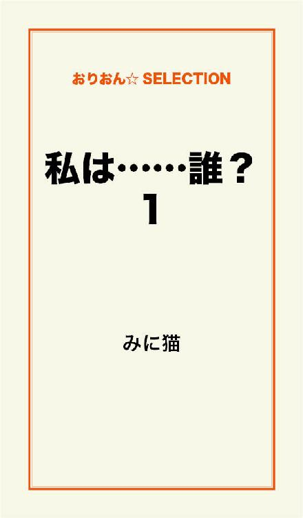
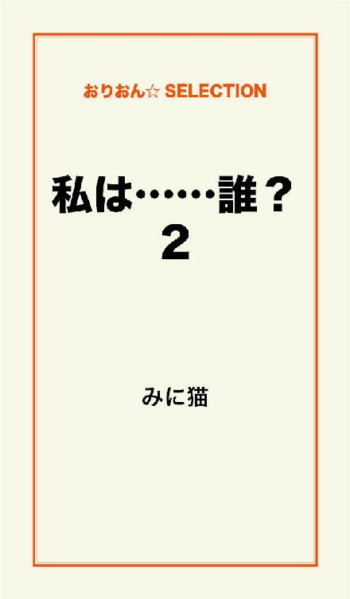
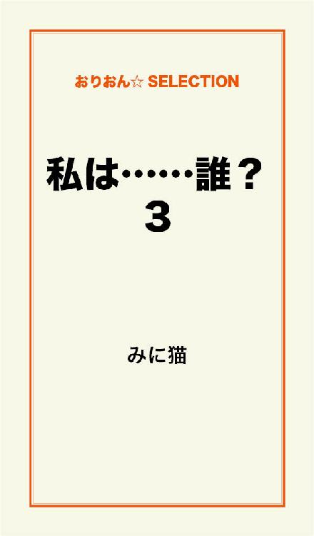

| 私は......誰？ 完全版 | |
| みに猫 | |
この本は横書きでレイアウトされています。
また、ご覧になる機種により、表示の差が認められることがあります。

私の名前は斉藤琴子（さいとうことこ）年齢は27歳、独身で一人暮らし。
仕事は24歳の時にイラストを出版社に持ち込み、それが認められ専属イラストレーターとして絵を描いています。
とは言っても、毎日イラストの仕事が入ってくる訳ではないので......散歩したり買い物に行く事が多く、アルバイトをしている人達よりも毎日時間が余ってる感じで、充実してるか？ と言えばそうでもない様な......忙しい時は物凄く忙しいんですけどね（汗）。
そして私には、２年付き合っている31歳の保育士の彼が居ます。
名前は高嶺裕樹（たかねゆうき）
彼は実家に住んでいて、彼の家にはまだ行った事がありません。
あ、でも彼の家の場所は良くデートの時に車で通ったりするのでバッチリ知っています。
ただし、方向音痴なので一人では辿り着けない......（汗）。
しかも私......極度のペーパードライバー。
免許取ったのは良いけど怖くて一人では乗れないし、一度ドアにぶつけちゃって......それからずっと乗らなかったら、いつの間にかペーパードライバーに......（汗）。
彼からは
「一日一回は近場で良いから乗れ」
っと......会う度言われてて、耳にタコ状態。
それで今から車に乗って、仕事の打ち合わせの為に、超近場の喫茶店に。
歩いて10分。
車で５分。
本当に近場だし、信号もないので安心ではあるんだけど......近すぎ？（汗）
それと、打ち合わせに来る出版社の人がいつもの人と違うので、少し緊張。
──喫茶嵐──
車を駐車場に止めて喫茶嵐へ。
「いらっしゃいませ。お一人様ですか？」
「あ、いえ、ここで待ち合わせてるんですが......もう来てるのか解らなくて......」
「お名前、お伺いしても宜しいでしょうか？」
「私ですか？ えっと、私は斉藤琴子です。待ち合わせてる人の名前は工藤琢磨（くどうたくま）さんです」
私の言葉を聞いた店員さんは、一枚の紙を出して名前を探している。
その数秒後......。
「工藤様でしたら、もう来てらっしゃいます。あちらの禁煙席に座られてる方です」
そう言って店員さんは私を誘導。
「斉藤琴子さんですよね？ 初めまして」
挨拶しようとした私に気付いた工藤さんが先に、笑顔で挨拶してくれた。
「あ、はい。斉藤琴子です。は、初めまして」
ぺこりと頭を下げる。
「どうぞ、座って下さい」
「あ、ありがとうございます」
私が座ったとほぼ同時に、工藤さんが
「何か注文しましょうか？」
私に尋ねた。
不意に言われた私は
「そうですね、えっと紅茶......を」
メニューの上を指差す。
その注文を聞いて直ぐ、工藤さんは店員さんに注文。
「すみません、紅茶とコーヒーと......チーズケーキ一つお願いします」
「紅茶とコーヒーとチーズケーキですね」
店員さんの言葉に、工藤さんは頷く。
それから直ぐに私の方を向き
「いつもイラスト拝見させて頂いてます」
笑顔。
だから私も笑顔で応えようと思って笑顔を作ったんだけど、あからさまに引きつっちゃって笑顔とは言えない顔に......（汗）。
「......ありがとうございます」
その私の引きつり笑顔を見て工藤さんは、クスっと笑う。
「斉藤さんは人見知りの激しいタイプみたいですね？」
「あ、はい、えっと......前の打ち合わせに来てた、東野さんにも言われました」
ちょっと俯き加減に言う。
すると
「えぇ、東野に聞きましたよ」
更に工藤さんは笑う。
東野さんってのは工藤さんの前（私がイラストレーターになった時から）に打ち合わせに来てた男の人の事。
それにしても東野さん......一体どんな事を工藤さんに言ったんだろう？
変な事じゃなければ良いんだけど......（汗）。
そう考えていたら、店員さんが注文した物を持ってきた。
「お待たせしました」
紅茶を私の前に、コーヒーを工藤さんの前に。
そして、チーズケーキを工藤さんが私の前に。
「え？ これは工藤さんのじゃ？」
「違いますよ。斉藤さんがチーズケーキ好きって東野から聞いていたので。どうぞ、食べて下さい」
にっこり満面の笑みで勧める。
「あ、すみません！ えっと......それじゃぁ本当に頂きます」
私はチーズケーキに目がないのだ。
「どうぞ。打ち合わせは食べながらでも出来ますから。但し、喉には詰まらせないで私の話、ちゃんと聞いて下さいね」
工藤さんの言葉に
「はい!!」
私は即答した。
「............」
目が覚めた。
する事がないから、好きなパチスロをしに行く。
好きとは言っても、注ぎ込むのが好きなだけ。
資金は５万。
いつもと同じ店の同じ台。
この台で先週10万負けた。
それで悔しいからでは無いが、俺はこの台を打つ。
いくら負けても痛くはない。
借りれば良い。
それで怖いお兄さん達に追いかけられようが構わない。
実際、二つの金貸しから合計30万借りている。
それに、怖いお兄さん達から今のところ電話もハガキもない。
俺の借りた金、利子が肥満のおばさんの様にぶくぶく膨れ上がって動けない状態になる迄、連絡をしない気だろう。
だとしたら......来月か再来月あたりに連絡が来そうだ。
利子だけで確か、40万を越えていた筈。
誰が何と言っても闇金だ。
「......くす」
思わず笑ってしまう程、闇金に間違いない。
ま、俺は返す気なんてさらさらない。
借りて遣うが、返さない。
返す事は好きじゃない。
俺の物は俺の物。
お前の物は俺の物。
いわゆるジャイ●ン理論。
さてと、お目当ての台だ。
金を入れてスロットを回す。
それから胸ポケットから煙草を出して、火をつけ咥える。
「ふぅ～今日は何処から借りようか？」
私は、夜の歌舞伎町が大好き。
だって、夜でも明るいんだもん♪
そ・れ・に～ぃ、良い男ばっかり居るし、お酒が美味しい♪
私ってば、お酒と男が大好物～♪
やっぱり若くて頼もしくて、あっちが強くないとねぇ。
今日も男に声をかけて貰う為に、胸元がパックリあいている服と、脚を組むとパンチラするミニスカを履いてる♪
本当はホストのところにでも行こうかなぁとも思ったんだけど、タイプの子が全然居ないのよね～。
クラブ「龍」のナンバーワン、光（ひかる）は洋服を着てたら最高に良い男なんだけど、脱いだら......はぁ......ダメダメで気分が失せて帰っちゃったわよ。
それにクラブ「恋」のナンバーワン、雅樹（まさき）。
あの子は私に猛アタックしてきたけど、ぶっちゃけ全然タイプじゃなかった。
硬派なキャラを装ってたけど、中身はアレと金の事しか考えてないチャラ男。
こう見えても私は、チャラ男よりは一途君が好き。
とは言っても......私自身は一途なんかじゃなく、男なら......まぁ遊ぶ分なら誰でも良いのよ♪
病気貰おうが、妊娠しようが別に困らない。
その時の快楽さえ貰えれば十分♪
あ、でもね～最近、本気（マジ）で心から落としたい男が出来たの。
その男には女がいるんだけど、絶対奪ってみせるわ......。
「ふぅ～......楽しみ♪」
打ち合わせをして約一ヵ月。
私は工藤さんに頼まれた、イラスト20枚の仕上げにかかっています。
あの日、工藤さんは
「ポストカード用に、おちゃらけた動物のイラストを20枚描いて欲しい。期限は一ヵ月と一週間」
と言ってきました。
まぁ......私の得意分野なので下絵をさらっと描いて、色鉛筆で塗る事にしたんだけど......20枚は多過ぎ......（汗）。
気が付けば、期限間近（泣）。
あと四日後が締切り!!
一応、出来上がったのは12枚。
後の８枚を四日間で仕上げられるのか不安で不安で......考えるだけで泣きそうになり、イラストが手に付かない。
あぁこんな時には......
「気分転換にデートしたい」
そう思っていると、急に電話が。
『チャラリラリ♪』
裕樹さんからかな♪
『ガチャリ』
「もしもし」
「もしもし、斉藤琴子さんのお宅ですよね？」
「はい、そうですけど......何か？」
「私、ローン若葉の佐田国（さだくに）と言う者ですが、琴子さんは御在宅でしょうか？」
「......私ですけど......」
ローン？
......ローンって金貸し......の？
「あんたが琴子か」
急に、佐田国さんの言葉遣いが変わった。
「はっ、はい!!」
「いつになったら借りた金返すんだ？」
え？
借りた？
「あ、えっと......私......借りてません!!」
だって、身に覚えがない。
「本当に借りてないのか!?」
「は、はい!!」
「ほぉ～それなら何で俺があんたの番号知ってるんだぁ？ こっちの金借りリストに、名前が載ってるんだけどな!!」
こっ怖い!!
「そそそ、そんな事言われましても......身に覚えが......」
「ふざけるな!! 金借りといて、身に覚えがないだと!?」
「だ、だって本当に身に覚えが......ないんです!!」
目からは恐怖で涙が流れ、身体も恐怖で震えだした。
「そんな馬鹿な話があるか!? ちゃんとあんたが捺印（なついん）した書類があるんだよ!!」
「で......でも......本当に身に覚え......」
「もう良い!! それは何度も聞いた!! あんた......払わないなら家まで行くからな。良いな!! 待ってろよ!!」
『ガチャリ......ツーツーツー』
......来るの？
ま、まさか......本当に来る筈......ないよ......。
だ、だって、お金なんて誰からも借りてない......。
「......どうなってるの......？」
私は訳が解らず泣き崩れた。
その時、また電話が。
『チャラリラリ～♪』
怖い......また、あの人だったら......。
『チャラリラリ～♪』
わ、解ったわよ。
取るわよ......。
「も......もしもし」
「こんばんは。こちらはローン合の手、高間（たかま）と言う者ですが、斉藤琴子さんは御在宅でしょうか？」
また、ローン!?
「御在宅でしょうか？」
「あ、いや、その......琴子は今、留守です。私は琴子の友達なんですが、伝える事があるなら......お伝えしますよ」
口から出任せ。
まさか、こんな嘘が口から次々出るとは自分でも驚き。
「......そうですか......それじゃぁ、また掛け直します」
『ガチャリ......ツーツーツー』
......一体全体どうなってるの......？
またローンからだなんて......。
私、本当に何処からも借りてないわ。
イラストレーターで一応食べていけてる。
それなのに何で、違うローン会社から続いて電話が来るのよ......。
おかしい......絶対おかしい!!
誰かが私のふりして、金を借りてるんだ。
きっとそうよ。
じゃなかったら......誰かが私を恨んでる......？
いやいやいや、そんな事はない。
恨まれる様な覚えもなければ、行いもしてない。
多分......。
『チャラリラリ♪』
ギクリ!!
取りたくない......。
取りたくない!!
『チャラリラリ♪』
......でも、取らないと。
「もしもし？」
「あ、楓さん？ 俺、クラブ恋の源です。覚えてます？」
クラブ？
クラブって？
「あのぉ、クラブってなんですか？」
「えっ？ まさか俺の事忘れたんですか!? 俺ですよ、ホストの源!!」
ホストー！！！！！
ローンの次はホスト!?
「あ、あの......多分......番号間違われたんじゃないですか？ 私はホストクラブに行った事ないですし、楓って名前じゃないです」
「えっ!? すみません!! えっと切りますね!!」
そう言って、ホストの源さんは電話を切った。
「......何だか疲れた......。はぁ......散歩にでも行こうかな」
ここに居たら、頭がおかしくなりそう。
......にしても、何で今日に限って身に覚えのない事で電話が来るのよ!!
私は家着を脱いで、ジーパンと半袖に着替えて公園へ。
「ん～ん、一ヵ月ぶりの公園。ポカポカ暖かくて気持ち良い♪」
背伸び。
あ、あそこのブランコにでも座って日向ぼっこでもしよう。
「よっこいしょ」
あ、言っちゃダメだった（笑）。
おばさん臭いから、その言葉禁止って裕樹さんに言われてたんだった（汗）。
「ここに居ると落ち着くなぁ」
子供連れの親子が遊んで騒がしい公園も好きだけど、誰も居ない公園も好き。
静かだし、風の音や草木の話し声が聞こえて気持ちが安らぐ。
イラストのインスピレーションも閃（ひらめ）いたりする。
「それにしても一体全体どうなってるんだろう？ 私の名前を使って金を借りてる人間、全く知らないホストからの間違い電話」
ん～ん......。
「......きっと、たまたまよね」
うん、たまたまよ。
たまたま。
私は気弱だけど、悩んでも結論が出そうにない時は
「どうにでもなる」
精神で、わざと考えない様にする。
それが良い事なのかどうかは......微妙なんだけど。
──『ガサガサッ』──
「!?」
不意に後ろから人の気配がして振り向く。
そこには顔を真っ白に塗り、アフロでオレンジ色のカツラに赤い鼻と赤い口紅の
「ピエロ？」
白塗りすぎて、男か女か解んない。
「え？ これを私に？」
「............」
ピエロは笑顔で私に一つのキャンディを差し出してくれた。
どうやら喋れないみたい。
その代わり、ジェスチャーで話しかけてくる。
私が独りで居たから、気にかけてくれてるみたい。
「キャンディありがとう。早速、食べるね」
うんうん縦に首をふり、ピエロが頷く。
何だか可愛い♪
包みを開けて、中から出て来たキャンディを口にポイっと私はいれた。
「んー！！！！！」
悶絶。
「なんじゃこりゃー！！！！」
思わず名台詞が......。
「......ククッ」
今迄ずっと喋らなかったピエロが、小さく声を出して笑った......。
しかも憎たらしく。
私は口からキャンディをペッと出す。
「な、何!? この酸っぱいの!?」
「............」
ピエロは両手を開き、肩をあげて首を傾げ
「解らないよ～」
と言う様なポーズをした。
このピエロ......絶対嘘吐いてる!!
じゃなかったら、さっき笑ったのは何なのよ!?
「わざと酸っぱいキャンディよこしたでしょ!?」
右目から涙を流し、ブランコから降りてピエロに言うと、ピエロはお腹に両手をあてて、大笑いのポーズ。
うん、やっぱりわざとだな（怒）。
「ふぅ......ムカついたけど、ありがとう」
私の事を気にかけてくれてる事が嬉しい。
「............」
「キャッ!!」
私のありがとう。
で、ピエロはポケットから紙とライターを出して、そのライターで紙を燃やした。
すると不思議な事に、紙が一瞬で消えて紙を掴んでいた手に一輪のタンポポ。
「............」
「これを私にくれるの？」
ピエロは笑顔で頷いて、私の手をとりタンポポを握らせた。
「ありがとう♪」
今度は普通の、種も仕掛けもないタンポポみたい。
ピエロは頭をかいて照れた様なポーズ。
そして次にポケットから風船を出して膨らます。
「凄い」
風船がみるみる膨らみ、キュッキュッと音を出しながら細長い風船の形を形成していく。
『ザワザワ』
気が付くと、ピエロと私の周りには人だかり。
それなのにピエロは私と二人だけしか居ないかの様に、私の真正面で私の方だけを向いて風船に命を吹き込む。
「凄い!! ママ見て!! 犬だよ、犬!!」
「凄い器用ねぇ」
ピエロが膨らませた細長い風船はいつの間にか犬の形に。
「............」
ピエロはそれを私に。
「ありがとう。でも私、何もあなたにあげられない」
「............」
ピエロは私の耳元まで来て
「大丈夫。僕は君に沢山の物を貰ったから」
「......えっ!?」
どう言う事!? って聞こうとしたら、ピエロは私から離れ居なくなった。
「......え？」
今迄、居た筈の客の姿も見当たらない。
「私......あまりの疲れで、幻でも見たのかな......？」
でも......これって......。
「キャンディの包み紙とタンポポ」
留守電を聞く。
『ピッ！ ......50件再生......』
50件!?
公園にちょっと出掛けただけで50件!?
ちょっと再生聞くの怖いな......。
『一件再生......』
『おい!! 居るんだろ？ 早く金返せ!! 金をよ!! お前、マジで家行くぞ!!』
『ピー......二件再生......』
『ローン若葉の佐田国ですけど、いつになったら金を返して貰えるんでしょうか？ 居留守使うのも良いですけど、いつ迄もそれで逃げられると思ってるんですか？ ......おい!! 何か反応しろ!! 居るんだろ!? マジで家に行くぞ!!』
『ガチャリ......ツーツーツー』
どうして借金とりは皆、同じ様な事を言うんだろ？
怖さよりも、そう言う事が気になる。
『ピー......三件再生......』
『もしもし、白鳥金融の金田ですが......先日貸した20万の返済がまだの様なので連絡しました。もし、このまま返済が滞る場合は......臓器うるか？』
『ガチャリ......ツーツーツー』
「臓器......は、さすがに......無理」
それにしても......公園行く前のローン会社以外からも、お金を借りてる事になってる......。
何で？
『ピー......20件再生......』
あぁもう!!
『ピッピッ!!』
私は留守電を全件削除。
ここ迄来ると
「どうにでもなる」
精神ではやっていけない。
「どうしよう......私じゃないって事を伝えなきゃ......」
『チャラリラリ♪ チャラリラリ♪』
......取らない事には始まらないよね？
『ガチャリ』
「もしもし」
「いつになったら金返すんだ～♪ さっさと......」
『ガチャリ』
躊躇（ためら）いもなく、思わず切ってしまった。
リズムに乗せて金返せって......。
『チャラリラリ♪』
『ガチャリ』
「もしもし......」
「てめぇいつになったら返すんだ！！！ おい!? 何か言えよ!!」
佐田国さんだ。
「だっだっだから私、借りてません!!」
「はぁ？ んな訳ないだろ!!」
「本当なんです......」
「だったら、この契約書はなんだよ!?」
「それは......私に成り済ました人が......」
「よくそんな嘘が口から出るな？」
「嘘じゃないんです......」
私は佐田国さんの強い口調と、何を言っても伝わらない事で悔しくて怖くて涙が出た。
「......ふぅ～だったら一度こっちに来い。それで本人かどうか解るだろ」
佐田国さんは、電話の向こう側で煙草を吸いながら呆れた様な声で言う。
「で、でも私......一度も行った事ないので場所が解りません......」
「......地図はＦＡＸで送る」
「あ......それなら助かります」
「アホか......」
佐田国さんは完全に呆れてるみたい。
「あ、ＦＡＸ番号は......」
「じゃ、送るから必ず来いよ!!」
「はい！ 行きます!!」
『ガチャリ......ツーツーツー』
「何だか疲れた......」
私は床にべたぁっと全身を預ける。
『ジジジジ......ジジジッ......』
ＦＡＸだ。
早速、佐田国さんからＦＡＸがきたみたい。
ＦＡＸの番号は電話番号とはちょっと違うから、佐田国さんに間違えない様に教えたんだけど......前に出版社の人が間違えて電話番号でＦＡＸを送って大事な事が私に伝わらなくて大騒ぎになった事があった。
「よいしょ」
私は禁句を忘れて立ち上がり、ＦＡＸを手に取る。
「やっぱり一度も行った事ないよ......デパートの裏？ になるのかな......結構遠いかも......」
ぶつぶつ独り言。
結構、遠いし知らない所だからタクシーで行こう。
免許あるのにペーパーだからね（泣）。
それに......裕樹さんには絶対言えない。
私が借りてない事は確かだけど、裕樹さんに心配かけてしまうもの。
「よし!! 私一人で解決するぞ!! ......でも独りは怖い～ぃぃ!!」
怖いお兄さん達の中に行くなんて、普通ないよね。
いや、もしかしたら口調が荒いだけで、見た目は意外と優しいのかも!?
そんでもって心も!?
......やっぱり行かないでおこうかな（泣）。
『ドンドンドンッ!!』
「!?」
な、何!?
急にドアを強く叩かれ、私の心臓は口から飛び出しそうに。
「斉藤さぁ～ん、居るんでしょ？」
えっ？
えっ？
えっ!?
誰？
聞いた事ない様で......あるような......。
「斉藤さぁ～ん、居留守使っても無駄無駄～。さっさと返す物返して貰わないと、俺の首が危ないんだよね～。電話でそっち行くって伝言残してたから、俺が来るの解ってて居留守遣ってるんだろ～？」
「......借金取り」
だから聞いた事ある様な気がしたんだ。
さっきの留守電の誰か。
『ドンドンドンッ！！！』
「おいっ!! 早く出て来い!! 金、返せよ!!」
まさか、本当に家にくるなんて......。
私の家を知ってる訳ないって思ってたのに......。
『ドンッ!!』
「早く返せって言ってるだろ!! おらっ!! 早くしろよ!!」
ま、周りに迷惑がかかっちゃう（泣）。
で、出ないと帰らない......のかな......。
うぅ......。
恐怖と緊張で、心臓が痛いくらい激しく脈打つ。
足がぶるぶる震えてちゃんと立てない。
「はぁ......今日の所は帰ってやる。でも、次来た時には覚えてろよ!!」
そう言って借金取りは、ドアを思い切り蹴って帰って行った。
鉄でできているドアがちょっと凹んでる。
多分、渾身の蹴りだったのかも......。
佐田国さんとは違って、話の出来なさそうな人。
いや、佐田国さんも話しやすい訳じゃないけど......。
「私は一体、何件から借りてるの？」
段々、危機感を感じて来た。
『チャラリラリ～♪』
ま、また電話!?
『ドンドンドンッ!!』
こっちも!?
「返せー返せー人の物返せー」
やっぱり借金取りだ......。
『チャラリラリ♪』
と、とって直ぐ切る......か？
でも、向こうを怒らせたら......。
「おいおい、無視かぁ？ 電話なってるぞ～」
『チャラリラリ～♪』
こ、ここはさっきみたいに居留守!!
............。
「チッ」
舌打ちを残し、借金取りはドアから遠ざかり帰った。
『チャラリラリ～♪ チャラリラリ♪』
「と、取ってみようかな......」
私は意を決し、受話器を取る。
『ガチャリ......』
「も、もしもし......」
「あ～楓さん、居るじゃないですかぁ～」
え？
借金取り......ではなさそうだけど......。
「楓さん？」
「あれ？ この番号、楓さんのですよね？」
「ち、違います!! 私は斉藤です!!」
「あーぁ!! 分かった!! 楓さんの友達の斉藤さんでしょ!?」
「へ？」
友達？
「あ、俺、和希って言います。因みに職業ホスト～」
ホスト......って、確か前にも間違い電話でかかってきたけど、この人......私を知ってる？
「あの!! 私、楓さんって知らないんですけど......」
「えっ？ そんな訳ないじゃないですか。楓さんが同じ家に一緒に住んでるって......」
私が楓さんと住んでる？
「いいえ、住んでません。きっと......楓さんって人が嘘の番号を教えたんじゃないんですか？」
そうだとしたら、前の間違い電話の事も解る気がするんだよね。
「楓さんと喧嘩でもしたんですか？」
「いや、だから私は楓さんって人は知らないんです」
「......嘘はダメですよ、琴子さん」
クスっと笑った声が聞こえた。
「嘘って、本当に知らない......」
私が言い終える前に、和希さんから有り得ない言葉が。
「昨日、楓さんと電話で話したんですよ」
頭が痛い。
パンクしそう。
私はあれから直ぐに、電話を切り線を抜いた。
イラストの仕事も完全に手につかない。
借金取りとホストからの電話が、鳴りやまなかった。
それと、家に来られて寝る間も......。
酔っ払ったホストも、どうやって知ったのか......私の家に。
そのせいで、近隣の人達から白い目で見られて......苦しくて辛い。
ハガキや張り紙も、沢山で片付けるのも大変。
もう何日も、外にでてないし裕樹さんともあっていない。
幸い、仕事の期限はまだだけど......。
でも、このままだと期限が確実に切れる......。
唯一の連絡方法（電話）も使えない状態だから、出版社にも連絡できないし。
何か泣けて来た......。
『ドンドンドンッ!!』
!?
あぁ......また借金取りだ。
「琴子!!」
!?!?
裕樹さん!?
「ゆ、裕樹さん!!」
『ガチャリ』
「琴子!! 大丈夫か!? 何があった？」
私はドアを開けて入ってきた裕樹さんに抱き着く。
「琴子？」
涙が溢れる。
裕樹さんは、私を両腕で強く抱き締めてくれた。
「ありがとう......」
「琴子、ずっと連絡がとれなくて心配したんだぞ。一体何があったんだ？」
彼を心配させない様にと、借金取りとホストの話をしないでおこうと思ったけど、本当に心配してくれている裕樹さんの顔を見たら言わないとイケないと思い、全てを話した。
「借金はしてないんだよな？」
「うん。絶対してない」
「なら、やっぱり誰かが琴子になりすましてるって事だよな......」
「そう思う......」
「で、楓って女の事も知らないんだよな？」
「全く知らない......。なのにホスト達は皆、私の家に電話をかけてくるし、家にもくる......」
「ホスト達の中で見た事ある奴いた？」
「居ないよ!! ホストクラブとか興味ないし......」
「だよなぁ......琴子には俺が居るんだし」
にっこり笑って私を安心させてくれる。
「でも......何故か解らないけど、私と楓さんが一緒に住んでる事になってて、数人のホストは私の名前を知ってた」
「ん～それなんだよな、俺が悩んでるのも。借金取りの何だっけ？ 佐田......国？ この人の所の借金は琴子がしたんじゃないって明日、証明しに行くから、ここへの借金は無くなったって事にして......ん～」
裕樹さんは、独り言の様に唸る。
確かに明日、佐田国さんに証明する為に行くけど、独りは怖い。
いきなり連帯保証人ですね～何て言われないとも限らない。
......闇金みたいだから、何でも有りみたいな感じがするもの。
「怖い......」
「ん？ 大丈夫か？」
「......明日行くのが怖いよ」
「何、言ってるんだよ。琴子の無実を証明しないと余計怖い思いをするんだぞ」
それは解ってる。
ごもっともな意見。
でも......
「独りで行くのが怖いの......」
「何、馬鹿な事言ってるんだよ。俺も一緒に行くよ」
「え？ 一緒に？」
「うん」
「それは嬉しいけど......裕樹さん明日、保育園でしょ？」
「そうだよ」
「そうだよって......大丈夫なの？」
「大丈夫も何も、琴子の危機に一人働けないっての」
この人は何て、優しいんだろう。
私の見る目は間違って無かったんだ。
「ありがとう。でも、子供達が待ってると思うな」
「そうだなぁ～じゃぁ琴子独りで行くか？」
うっ......。
「それは困る（汗）」
「あっはははは、だろ？」
裕樹さんは大笑い。
「じゃぁ決まりな。俺、明日仕事休むから一緒に行こう」
「宜しくお願いします」
私は頭をぺこり下げた。
「ま、そう言う事で今日はここに泊まるからな」
「泊まる!?」
「なんだよ？ 泊まったら駄目なのか？」
駄目と言うか......困る!!
「いや、その......借金取りが......」
そう、借金取りが来る。
「んなもん気にするな。俺は大丈夫だから」
大丈夫って言われても気になる!!
気を遣っちゃうよ......。
「マジで大丈夫だから、気にするなよ」
そう言って、私の頭を撫でる。
うーん......。
「解った。でも驚かないでよ......。かなり五月蠅くなるからね」
「おう」
『ドンドンドンッ！！！！』
来た!!
今は夕方６時。
大体いつもこの時間から、翌朝まで借金取りがくる。
「来たみたいだな」
「う......うん」
ゴクリと生唾を飲む。
心臓の動悸が激しくなって来た。
「大丈夫だから」
裕樹さんは強く私を抱き寄せ、ほっぺにキス。
ちょっと照れちゃう。
『ドンドンドンッ！！！』
「で、て、こ、い、よ～」
「今迄通り、無視だ無視」
裕樹さんの言葉に頷く。
「斉藤さ～ん、あんたこのままだと命が狙われるよ～良いんだな!?」
『ドンッ!!』
「また来るからな!!」
もう来ないで下さい......!!
「どうやら帰ったみたいだな」
「............」
「琴子？ 琴子!?」
目の前が急に、真っ白に......。
「琴子!!」
裕樹さんの声が段々小さく......。
？？？
「ここは何処？」
世界が真っ白。
"白"以外何もない。
私の身体も、白に溶け込んでく。
ここに居たら、私が解らなくなる。
取りあえず歩こう。
────
歩いても歩いても......道はない。
そればかりか私は今、どの辺りを歩いているのかさえ解らない。
私以外の人も見えない。
「何でこんなに真っ白なの？ 何で誰もいないの？ ......何で私の身体は見えないの？」
どんどん不安になってきた。
「私......どうかしちゃったのかな......」
ずっとこのまま裕樹さんの顔も見れないのかな？
私......死んじゃったのかな？
「お姉さんは生きてるよ」
「へ？」
ここに来て初めて聞いた人の声。
まだ若い。
「何処にいるの？」
私は周りを見回す。
でも、声の主を見付ける事ができない。
「一体何処に？」
「ここだよ、ここ」
？？？
「解らないよ」
「も～見てない所が一つあるでしょ」
「見てない所？」
......無かったと思うんだけどな......。
前後左右、ちゃんと見た筈。
「上だよ」
声に言われて、私は上を向いた。
「!?」
「こんにちは♪」
にっこりと満面の笑顔。
「うっ嘘!?」
飛んでる!?
いや、浮かんでる!!
そんな馬鹿な......。
「そんなに驚かなくても大丈夫だよ」
クスクス笑う。
そこには正座の形で、両手を太股に乗せてフワフワ浮いている少年の姿。
「あ、あなた何で浮いてるの!?」
「あ、これ？」
両手を頭の上に乗せて曲げていた足を伸ばし、フワフワ私の前へ。
「僕がこうして浮いているのはね、此所がお姉さんの意識の中だからだよ」
「意識？」
「うん。こうして僕とお姉さんがお話し出来て自由に浮かべるのは、お姉さんの意識が無くなった状態......いわゆる意識不明だからだよ」
「......意識不明？ 私が？」
「そう。お姉さんの意識が、今現実では無いんだよ」
「そんな......それじゃ私、死んだの!?」
「ううん、お姉さんは死んでない。死んじゃったら僕ともお話し出来なくなっちゃうよ」
そう言い、フワフワ私の周りを回る。
「そうだ!! お姉さんも僕と一緒に飛ぼうよ♪」
笑顔で私の手を掴む。
あれ？
今迄、身体が無かったと思っていたのに、この子に掴まれた途端、見えていなかった自分の身体が解った。
「ほら、楽しいでしょ？」
掴んだ腕を放し、少年は私の手を握る。
「たたたたた、楽しいって言うより、ちょちょ......ちょっと怖いよ」
真っ白の世界で身体の浮く感覚が、何だか気持ち悪いくらい怖い。
「何で？ 全然怖くないよ。ここでは何だって出来るんだよ♪ お姉さんの意識の中だから、お姉さんが望む事なら何だってね♪」
何だって出来るって言われても、私の意識の中。
現実には叶わない。
「私......戻らないと」
「どうして？ 現実には借金やホストの事があるでしょ？ それでも現実に帰りたいの？」
「......うん」
「どうしても？」
何故か少年は寂しそう。
「裕樹さんが待ってるの」
一瞬、間があった。
そして
「......あぁ、あの男か」
「えっ？」
少年の口調が、急にキツくなった。
私の聞き間違い？
「あの男の何が良いの？ あの男は、あなたに何を与えるの？ あいつの何が良いんだ！！！！」
「......!?」
怖い!!
「......急に大きな声出してごめんね。でも......お姉さんには、ずっと此所にいて欲しいんだよ」
それって......。
「私の意識がずっと戻らなければ良いって事？」
「それは......違う......。でも......」
「でも？」
ふぅっと少年は溜め息をした。
「僕はお姉さんを助けたい......だから現実には......戻したくない」
矛盾している。
でも、この子はとても優しいんだ。
ちょっと歪んだ優しさだけど。
「ありがとう。でも私は現実に戻るわ」
「............」
少年は何かを考えている。
「............」
私は黙って、少年から出る言葉を待った。
「......お姉さんには沢山の敵が居る」
何の事か解らないけど、お構いなしに少年は話を続ける。
「僕は、お姉さんの味方。お姉さんを現実の辛さから助けたい。だから現実には戻したくなかったけど、どうしても帰りたいのなら、これだけは言っておくよ。僕と、お姉さんは同じ。お姉さんは自分自身と闘わないといけない。ピースを揃えて......」
何の事なのか私には全く、理解出来ない。
「あの......」
少年に何の事か聞こうとしたら、スーっと少年は笑顔を残して消えて行った。
私は独り、真っ白い世界に取り残された。
「......どうして？ 帰って来てよ!! 私を独りにしないでよ!!」
............。
「どうやって帰ったら良いのよ......」
私はフワフワ浮いたまま走る。
出口なんて何処にもない。
ただただ、真っ白い道が広がるだけ。
本当にどうやったら帰れるの......？
助けて......助けて......。
『琴子!!』
誰？
誰かが私を呼んでる。
『琴子！！！！』
この声は......
「裕樹さん！！！」
『目を覚ませ、琴子!! 戻ってこい!!』
「裕樹さん！！！！！」
────
「琴子!! 大丈夫か!?」
「裕樹さん？」
「琴子......急に倒れて目を覚まさないから、俺......どうして良いのか解らなくてずっと名前を呼んでたんだぞ」
裕樹さんの腕に私は抱き抱えられていた。
「私、疲れのせいか変な夢を見てたの」
「夢？」
「そう、夢」
「そうか、久しぶりに寝れたんだな」
「そう言えば今、何時？」
何だか気になった。
「あぁ、倒れてから10分しかたってないよ」
10分。
あの子と会って話したのは、たったの10分？
いや、10分の筈はない。
「夢だから時間は関係ないか......」
「？」
裕樹さんは私の一言に困惑している。
「くす♪」
何か笑っちゃった。
「何、笑ってるんだよ？」
「現実に戻れて良かったって思って」
「？ 何の事か訳解らんぞ」
首を傾げる。
「解らなくて良いの。
さぁ、明日の準備をしよう」
私は再びクスっと笑い、裕樹さんの腕から離れた。
「地図によると......この辺りに間違いないと思うんだけどなぁ......。......あ、あれだ!!」
私達の目の前には、あからさまに怪しげな三階建ての建造物。
何だか......暗くてどよんとしてる。
「裕樹さん......行きましょう。いざ鎌倉!! ......じゃなかった。いざ闇金!!」
「琴子......何かキャラ変わってね（汗）？」
────
──コンコンッ──
「どうぞ」
「失礼します」
ドアを叩いた私は、佐田国さんに言われ中に入った。
「初めまして佐田国さん」
「初めまして」
佐田国さんは煙草を咥えてる。
「初めまして......ねぇ」
「斉藤琴子です」
私は自己紹介。
「ま、良いからこっちに来てくれ」
そう言って佐田国さんは、この部屋の奥の部屋へ私を誘導。
裕樹さんは心配だからと、私の後ろを着いて来る。
──コンコンッ！──
「例の女がきました」
佐田国さんは、ドアの向う側にいる誰かに話しかけている。
『入れろ』
「入れ」
「は、はい......」
動悸が......。
「おっと、あんたはそこで待ちな」
私に着いて来ようとした裕樹さんを佐田国さんは止め、私だけをドアの向う側へいれた。
「良く来てくれた」
テレビのドラマとかで社長役の人が良く座ってる様な椅子に座った年輩の男の人が私の方を向いて言って来たので、私はさっき佐田国さんにした様に頭を下げて自己紹介。
「初めまして、斉藤琴子です」
「............」
年輩の男の人は何も言わず、目を閉じて腕を組む。
「............」
この沈黙が怖い......。
暫くして、年輩の男の人は口を開いた。
「儂は此所のボスをしている」
「............」
「名前は鏑（かぶら）だ」
「鏑さん......ですか」
私は名前を覚えようと名前を呟いた。
「斉藤さん、あんた内の若いもんが金を返せと言っても返さんようだが何でだ？」
私は生唾を飲んで鏑さんの目を見る。
そして、ゆっくりとハッキリ言った。
「私は、お金を借りてません。だから返しません」
「............」
「私が今日ここに来たのは、それを証明する為にきました」
「証明？」
「はい」
私の言葉に鏑さんは、組んでいた腕を机の上に置いた。
何だか迫力がある。
小さい時に動物園で見た、ゴリラのボスみたい。
「何をどう証明するんだ？」
「はい......私は間違いなく、お金を借りてません。誰かが私の名前を使って借りたんだと思います」
「............」
「だから私に会ったのは、鏑さんも佐田国さんも初めてだと思うんです。それで、その......私自身が証明なんです。私がここに来て、お金を借りた斉藤琴子ではないって言う......」
............沈黙。
心臓が痛い。
私は強く目を瞑る。
こうでもしないと身体が震えて......。
「......あんた、さっきから何かよう解らん事を......」
「............」
「あんたな、そんな嘘を吐いても返済はして貰うからな」
「嘘!? 違います!! 私は何も嘘は吐いてません!!」
私は潔白だと鏑さんに解って欲しくて大声を出したのに、鏑さんはそれを隠そうとしてでた行動だと思ったみたい......。
「佐田国こい!!」
「はっはい!!」
鏑さんに呼ばれた佐田国さんはドアを開けて中へ。
「お前、このお嬢ちゃんを知ってるか!?」
「はい!!」
「誰だ!!」
佐田国さんは私を見て
「金を借りた斉藤琴子です!!」
と、強い口調で言った。
「ち、違う!! 私は借りてない!!」
「佐田国が借りたって言ってるんだ!! こいつが嘘を吐いてるとでも言うのか!?」
バンッ!! と机を叩いて私を睨む。
「琴子!!」
怒鳴り声に驚いた裕樹さんは、心配な顔をして中へ。
「お前ら琴子に手はだすな!!」
「ククッ、儂らは暴力は嫌いだ。話し合いで解決しようじゃないか」
笑い言う鏑さんの姿は、まるで時代劇の悪代官みたい。
「話し合いなら、もうついてるだろ!!」
興奮して怒鳴る裕樹さんを、佐田国さんがなだめる。
「確かに話し合いはついた」
「なら、琴子は借金してないって事だな!!」
「............」
「............」
鏑さんも佐田国さんも何も言わない。
でも一瞬、鏑さんの口が笑った。
「何なんだよ!? 琴子は借りてないんだろ!?」
この言葉を聞いて、佐田国さんは茶封筒を裕樹さんに手渡した。
「中の物を見ろ」
裕樹さんは言われた通り、茶封筒を開けて中から何かを取り出す。
「写真？」
裕樹さんの手には三枚の写真。
その写真を見て裕樹さんは、眉間に皺を寄せた。
「......何だ？」
「へっ？」
「これは何だ？ と聞いてるんだ!!」
裕樹さんは私に怒鳴り、写真を床に叩き付ける。
こんな怖い裕樹さんを見たのは初めてで、余計身体が震えて声も出ない。
私は怖々写真に手を伸ばした。
「!?」
......え？
有り得ない......。
絶対有り得ない!!
三枚の写真には金を渡された私と、金を渡した佐田国さんが写っていた。
怒鳴られた......。
裕樹さんに、本気で怒鳴られた......。
どうして？
私は何もしてないのよ？
あの写真は偽物よ。
きっと......合成か何か。
そうに決まってるのに!!
......なのに、裕樹さんは本当に私がお金を借りたと思って、本気で私に怒鳴った。
どうして？
私を愛してなかったの？
私を信じてくれないの？
私は......私は......どうしたら良いの......？
どうやって、自分の無実をはらすの？
私......私......裕樹さんに見放されたくない!!
でも......きっともうダメだ。
裕樹さんの私を見る目が、冷ややかだった。
佐田国さんの目も、鏑さんの目も......。
私を見る、皆の目が......。
......私は一体、どうすれば良いの？
私は何なの？
私は......。
「私は......誰？」
「ち......がう......違う......違う......違う......」
私じゃない......私じゃない......。
「琴......子？」
「......」
「違う......私じゃない......私じゃない......誰？ ......誰......？」
床に座り込み、一人呟く。
「琴子？ 琴子!?」
裕樹が、琴子の身体を揺さぶる。
琴子の焦点はあわず、話を聞いていない。
聞こえていない。
「琴子!!」
「じゃない......誰......？ 誰......？ 私は......誰......？」
「お嬢ちゃん、そんな演技しても逃げられないぞ」
言い、鏑はニヤリと笑う。
「............」
が、そんな鏑を無視する琴子。
「演技......？ いや、これは演技なんかじゃな......」
言い掛けて裕樹は、口を閉ざす。
琴子の口がニヤリと弧を描いた。
「お前......誰だ......？」
「何を言っている。そのお嬢ちゃんは斉藤琴子だろう？ お前達はそんなに金を返したくないのか？」
「......ボス、離れて下さい」
「何？」
「離れろ!!」
「あはははは!!」
琴子はいつの間にか持っていたナイフで、鏑を切り付けようと走り出した。
「琴子!?」
「っ!!」
佐田国は鏑を庇（かば）い、右手を琴子に切り付けられた。
「な、何をする!?」
「......ふふ、あはははは!!」
「何がおかしい!?」
「ふふ......礼を言う」
琴子は、鏑を見て笑い言う。
「琴......子？」
「ふぅ......さっきから琴子、琴子って......。俺は琴子じゃない」
「な......に......？」
「ふふふ......」
不敵に笑う。
「お前......何故ボスを殺そうとした!?」
「あぁ～そいつ殺せば、金は返さなくて済むだろ？」
「なっ、何、馬鹿な事を!! もし、儂を殺しでもしたら......お前、ただでは済まんぞ!!」
「そうなっても困るのは俺じゃない。命を狙われるのは、この女。"斉藤琴子"だ。俺は痛くも痒くもない」
凄んで言う佐田国と鏑の顔を交互に見つめ、首の骨を鳴らしながら琴子は笑い言った。
「どう言う......事だ？」
裕樹の言葉に、琴子は裕樹の方を振り向く。
「俺の名前は龍綺（たつき）だ。勿論、男」
舌をベロッと出す。
「へ......？」
「別人格か」
「ピンポーン♪ その通り。俺は斉藤琴子の中に眠る別人格」
「そんな馬鹿な......」
「まさか、お前が琴子に成り済まして金を!?」
裕樹の顔の前迄、龍綺は顔を近付ける。
「その通り～大正解♪ 賞品は良く当たる台を教えてやるよ」
そう言い、ニヤリと笑う。
「信じられん......」
「何故、今頃出て来た？」
佐田国が、切られた右腕を左手で押さえながら龍綺に問う。
「何故？ って、この女が眠ったからな」
「眠った？」
「そう、眠った」
龍綺は両腕を高く上にあげて、伸びをする。
「お前達の重圧に耐えられなかった」
「......他の人格が金を借りたと誰が気付く？ だから疑われても仕方がない。今もまだ、俺は疑ってる」
その佐田国の言葉に龍綺は、ニヤっと口の端に笑みを浮べた。
「有り難いねぇ♪ あんたのお陰で俺は、この女をもっともっと苦しめる事が出来る」
「何でそんな事を？」
「俺は、この女が大嫌いなんだ」
その言葉を残し、龍綺は目を閉じた。
「嫌いってどうして？」
「............」
裕樹の言葉に、龍綺は応えない。
「おい!!」
が、次の瞬間。
裕樹の大声にピクッと身体を震わせ目を開いた。
「何で嫌いなんだよ!?」
「へ？ ......な、何を言ってるの裕樹さん？」
「琴子？」
「へ？ 一体どうしたの？......!? 佐田国さん!! どうしたんですか、その腕!? 血が出てますよ!! 早く手当てしないと!!」
私は、いつの間にか怪我をしている佐田国さんの手当てをしようと辺りを見回す。
あれ？
何これ？
私の右腕に何かが握られてる。
「ナイ......フ？」
!?
「キャッ!!」
血、血がベッタリ付いてる。
何......で？
「こ、これ......このナイフ、誰が私に握らせたんですか？」
私は驚き、ナイフを投げて尋ねる。
「............」
「............」
「お......ぼえてないのか？」
不思議な顔をして言う、裕樹さん。
ん？
何この空気？
何か得体の知れない物を見るみたいな目で、皆が私を見てる。
「あの......何を？」
私は独り、ポカーン。
「その、佐田国さんの怪我は......」
「止めろ」
裕樹さんが言い掛けたのを、佐田国さんが止めた。
何で？
「これは、さっき金を借りた奴が切り付けて逃げた傷だ」
「佐田国さん......」
さっき？
「さっきって、いつですか？ 私ずっとここに居たのに見てない......」
「琴子、お前......」
何かがおかしい。
佐田国さん、何か隠してる。
裕樹さんは話そうか迷ってるみたい......。
私が知らなくて皆が知ってるの？
考えていると鏑さんが口を開いた。
「お嬢ちゃん、多重人格って知ってるか？」
「あ......あの、一人の人間に他の沢山の別人格が現れるって奴ですよね？」
「そうだ」
何故今、こんな話を？
「それがどうかしたんですか？」
「それは、お前が......」
「ボス!!」
鏑さんの言葉を、佐田国さんが邪魔する。
「......何だ？」
「病院に行って来ます......」
「......解った」
そう言った後に、佐田国さんは鏑さんの耳の側でボソっと、何かを喋って部屋を出て行った。
「お嬢ちゃん」
不意に鏑さんに呼ばれ、私は振り向く。
「なんですか？」
「もう帰っても良いぞ」
へ？
帰っても良いの？
「............」
裕樹さんは何も言わず私を見て、首を縦にふった。
「......疑いが晴れたって事で良いんですか？」
「あぁ......」
良かった。
話せば解ってくれたんだ♪
「それじゃぁ、帰ります」
私は言い、ドアノブに手を掛けた。
が、そこで可笑しな事に気付く。
あれ？
さっき......写真を見せられて......それで皆から疑いの目で見られて......。
それで......気が付けば血のついたナイフを握ってた。
あれ？
おかしい!!
何かおかしいよ!!
「記憶が無い!!」
「!?」
「!?」
「写真を見た後の記憶が......」
「な、何を言ってる!?」
鏑さんは何か動揺してる。
「記憶が無いんです!!」
「そ、それは......」
「お前が......琴子が写真見た時に佐田国さんを切り付けた奴が走ってきて、琴子にぶつかったんだ。その時に倒れて......頭をぶつけて気絶した。だから記憶が無くてもおかしくはない」
「気絶......？」
「そ、そうだ」
......頭をぶつけたって、たんこぶ一つ無いのに？
私は思い出そうと首を傾げる。
だけど、それを裕樹さんが阻止した。
「ほら、疑いは晴れたんだから帰るぞ」
「うん......」
絶対、この人達は私に何かを隠してる。
きっと......教えてはならない事なんだと思う。
私には教えちゃ駄目な事。
「そう......気絶してたなら記憶無くてもおかしくないですね......。それじゃぁ本当に帰ります」
──ガチャリ──
私はドアを開けて部屋から一歩外へ。
その時、裕樹さんと鏑さんが小声で何かを話している姿が目の端に見えた。
「これで完成」
後は編集者に連絡して、イラストを取りに来て貰えば今回の仕事は終わり。
「どうにか仕上がったな」
「うん、ここは静かだから」
借金取りやホストが五月蠅（うるさ）かったので、私達は藤●紀香さんがＣＭしている部屋を借りて、ひっそりと暮らす事にした。
そうでもしないとイラストが仕上がらないし、眠れないから（汗）。
部屋は裕樹さんが借りてくれたので、裕樹さんも一緒に住んでるけど......職場の保育園が遠く、超早起き。
私が寝てるのを起こさない様、静かに静かに出て行くんだけど、実は気付いてる。
いわゆる狸（たぬき）寝入り。
「それ郵送？」
私のイラストを見て尋ねる。
「ん～解んないな。編集者に連絡しないと郵送になるか、直接取りに来るか解んないからね」
「ふ～ん、そっか。もし郵送なら保育園行く前にでも出して来ようか？ って思ったんだけど......。って、俺が出る時間には郵便局開いてないな。あはははは」
裕樹さん......最近キャラ変わった気がするなぁ......（汗）。
「それにしても、こんなに静かだと佐田国さん達の所に行ったって事を忘れちゃいそうになるよ」
「そうだなぁ......でも現実だし、実際に行った事に間違いない。脳や身体が覚えてる」
「うん......そうだね......」
「......なぁ、それ編集社に出す時、俺も行って良いか？」
「えっ？ 別に良いけどどうかした？」
裕樹さん、こんなに過保護だったかしら？
「いや、久々にデート出来そうだからさ」
「デートかぁ～本当に久々だね♪」
色々（裕樹さんの仕事が忙しかったり、借金やホスト事件）ありすぎて、デート全然してなかったから嬉しい♪
「デート早速したいから、編集社に連絡して持って行こうかな」
「そうだな」
何て言いながら、お互い笑う。
「あ、でも今日はもう無理だ」
夜７時を過ぎている。
編集社は夕方６時迄の営業。
「そっか。じゃぁ今日はいつも通り、飯でも食べて寝るか」
「風呂忘れてるよ」
「あ、確かに」
夜23時。
私はイラストを描くので疲れていた為、ベッドに入って直ぐに爆睡。
『やっと寝たみたいねぇ』
『僕達も自由に動きたいよね』
『お兄ちゃんチョコレート食べたいよぉ～』
『てめぇら、うるせーんだよ!!』
『あんたは短気過ぎるのよ、馬鹿!!』
「うぅん......」
夢にうなされているのか、琴子の顔から汗が吹き出ている。
『痛いよぉーぉ！！！』
『五月蠅い!! 舐めれば治る!!』
『本体が起きちゃうわよ!! 馬鹿!!』
!?
私はガバッとベッドから起き上がった。
「はぁ......はぁ......一体、何だったの......？」
頭の中で数人の男女が話してた。
歳もバラバラだったと思う。
小さい少女の声や、成人？ くらいの男の人と女の人の声がした。
「琴子？ どうかしたのか？」
私の様子が気になったのか、隣りで寝ていた裕樹さんが起きて私の顔を見る。
「うん......夢なのか良く解んないけど、沢山の人の声が五月蠅くて......それで何か寝苦しくてさ......」
私の言葉を聞いて、裕樹さんの顔が曇る。
「裕樹さん......？」
「......あぁゴメン。ちょっと考えてた」
「考えてたって何を？」
「ん？ 琴子には関係ないよ」
そう言い、笑って見せる。
そして、私の反対側を向いて眠りについた。
裕樹さんの、あの曇った顔は何だったんだろう？
そう思った時
「悪いけど、やっぱ明日一人で編集社に連絡していってくれ」
と言われた。
「......何で？」
私が尋ねると、裕樹さんは私の方を見ずに一言。
「急用を思い出した」
私は編集社へ、イラストを持って行った。
締切りギリギリだったけど、今回のイラストも素晴らしいですねって褒められてちょっとルンルン♪気分。
それで私は、その帰りに久々のウィンドーショッピングをする事にした。
「うわぁ～人が一杯（驚）」
デパートの中には沢山の人がいて、凄く賑（にぎ）やか。
「そうだ!! 私のイラスト載ってるか見て来よう」
前に描いたイラストが確か、ポストカードとして販売されている事を思い出し、私は雑貨の置いてある場所へ移動。
「ん～ん......ないなぁ......。......ん!? あった!!」
無かったらどうしよう（涙）。
......って一瞬思っちゃったよ。
私がポストカードを手に取って眺めていると、一人の男性が声をかけてきた。
「楓さんじゃないですか？」
「え？」
「楓さんですよね？」
「ち、違います」
楓って、確かホスト達が私の家に電話してきた時に言ってた女性の名前。
でも、この人は全然ホストっぽくない。
「あれ？ 人違いですか......？ 確かに楓さんよりはメイク薄いし、服装も地味......」
......悪かったわねってちょっとムッとした気持ちになったけど、そんな事おくびにも出さずに
「あの、どちら様ですか？」
尋ねた。
すると私の言葉に男性は、財布から名刺を出して私に。
「デザイナー、佐藤奨（さとうしょう）......さんですか」
「はい」
私に笑顔を向ける。
「あ、私は斉藤琴子と言います」
私、はぺこりと頭を下げた。
「斉藤琴子さん......ですか。それにしても、楓さんに良く似ていますよ。瓜二つって言っても良い位に」
「......そんなに似てますか？ 私は楓さんって人の事、全然知らないんです。どんな方なんですか？」
「ん～そうですねぇ......明るくて服のセンスが良く、デザインの仕事に興味を持ってる女性......としか......」
言い、私を見る。
デザインに興味があるんだ。
実は私も、今のイラストの仕事をやる前はデザインの仕事に興味があって、デザイン画を服飾関係の人に見せた事があったけど......。
「センスなさすぎ」
とか、
「向いて無い」
って言われて挫折した。
それで、デザインと遠からず近からずのイラストの仕事につこうと思って今に至る。
「私も昔、デザインの仕事に興味がありました。でも今は、イラストの仕事についてますよ」
「へぇ～デザインに興味あったんですか？ 益々似てますね」
と、白い歯を見せて笑う。
「そうですね」
そんな佐藤さんに、私も笑顔を向けた。
「あ、もうこんな時間か。すいませんが僕ちょっとある企業に行く途中だったんですよ。今行かないと間に合わないので、この辺で失礼します」
そう言って頭を下げ、佐藤さんは走って行った。
「何だか忙しい人みたい」
知らない人と話すのって、たまには良いなぁって思ったけど......今になってドキドキしてる。
人見知りの性......よね。
それにしても、楓さんって人の事が少し解ったな。
何だか昔の......挫折前の私に似てる。
でも私は、ホストクラブには通って無かった。
その頃は男性と関わる事が心から嫌だった。
男性に対して恐怖心があった。
裕樹さんと知り会ってから、男性に対しての気持ちが少しづつ変わっていったけど。
「うっ......ちょっとトイレ行きたくなっちゃった!!」
私は、広いデパートの地図を見てトイレに直行。
途中、何度か迷った。
──ジャーァァァ!!──
トイレを流して手を洗う。
「ふぅ......。髪の毛もついでに整えようっと」
手を濡らして髪を整えようと鏡を見た。
「......えっ？」
鏡に写ってるのは間違いなく私の筈......なのに、何だか雰囲気の違う私？ の姿が写っている。
「誰？」
私は独り言の様に鏡に向かって呟いた。
すると鏡の中の私が......ニヤリと笑った。
「久しぶりね、私は楓よ」
久しぶり？
楓？
「......え？ ......何？」
私は幻でも見ているの？
「どうしたの？ そんな驚いた顔をして？」
クスッと笑う。
「いや、だって......こんな馬鹿な事......」
こんな馬鹿な事ってない!!
"鏡の中の私"と私が会話してるなんて。
しかも、鏡の中の私は自分の事を楓って......。
「そんなに驚く事ないと思うわよ。琴子ちゃん♪」
笑い、言う。
「いや、そんな事言われても......」
「何で？ 鏡に写ってる筈の自分が自分じゃないから？」
「うん......でも、それだけじゃなくて......」
楓さんは少しイライラしたのか、早口で尋ねた。
「自分の筈なのに別人が写ってるって？」
......楓さんの聞いてる事はさっきと全く同じだ。
驚いてる割には、意外と私は冷静みたい。
「そうじゃなくて、貴女は何故そこにいるの？」
「......へ？ 何言ってるの？」
楓さんは呆れた顔をした。
でも私は知りたい。
鏡の中に何故、楓さんが居て私と会話しているのか。
「楓さんは何故、鏡の中に？」
「......琴子ちゃん、それよりも不思議じゃない？ 自分だと思ってた鏡の中の人間が別人って事が」
それはそうだけど......。
「何か面倒臭いからハッキリ言うわ。私と貴女は同じ一人の人間だけど違う人間。......いや、違う人格。同じ一人の人間の中に居る、もう一人の人格が私」
まさか......私が楓さんで楓さんが私？
いや、違う。
別人格って事は違う人間......。
「琴子ちゃん、そう言う事だからこれからも宜しくね♪」
この言葉を残して、鏡の中に居た楓さんは話さなくなった。
「ただの鏡......だよね？」
私は鏡に手を伸ばし、触った。
「やっぱりただの鏡......」
ならさっきのは何？
白昼夢？
そう言えば......前にも白昼夢みたいな事があった。
あの時は、ピエロと客が消えたんだ。
「仕事のラストスパートで疲れてるのかな......私？」
もう帰ろう。
帰って裕樹さんに話してみよう。
裕樹さんの事だから
「何、馬鹿な事言ってるんだよ」
って笑ってくれると思う。
うん、きっと笑ってくれる。
あたしは、りかちゃん。
よんさいの、おんなのこ。
あたしには、おえかきのじょうずな、おねぇちゃんがいます。
おねぇちゃんは、あたしたちのことをわすれちゃってる。
それで、たつきおにぃちゃんはおこって、おねぇちゃんをこまらせようと、わるいひとからおかねをおねぇちゃんのなまえでかりたの。
それに、かえでおねぇちゃんもおこってるの。
おえかきのじょうずな、おねぇちゃんがほんとうのじぶんをださないでゆめをあきらめたからなんだって。
あたしには、わかんないけど、ほすとっておとこのひとたちとあそんで、おえかきのじょうずな、おねぇちゃんをこまらせてるんだって。
でもね、ほんとうは、たつきおにぃちゃんもかえでおねぇちゃんも、おえかきのじょうずな、おねぇちゃんのことがだいすきなの。
ただ、あたしたちのことをおもいだしてほしいだけ。
しょうじきにすきだから、おもいだしてほしいっていえばいいのにね？
ほかにも、へんなかっこうをした、おにぃちゃんがいるよ。
まえに、おえかきのじょうずな、おねぇちゃんにすっぱいあめだまあげて、そのかおがおもしろくてわらったって、たのしそうにはなしてくれたよ。
このへんなかっこうをしたおにぃちゃんのなまえは、さとるっていうの。
さとるおにぃちゃんも、おえかきのじょうずなおねぇちゃんのことがだいすきなの。
でもね、さとるおにぃちゃんは、たつきおにぃちゃんやかえでおねぇちゃんのことがきらいなんだって。
おえかきのじょうずな、おねぇちゃんのことをいじめるからだっていってた。
ほかにも、おえかきのじょうずな、おねぇちゃんのことをすごくすきな、りんにぃちゃんもいるよ。
りんにぃちゃんはね、いちどだけおえかきのじょうずな、おねぇちゃんにあっておはなしして、おそらをとんだはなしをしてくれたんだよ。
あたしも、おえかきのじょうずな、おねぇちゃんにあいたいけど、さとるおにぃちゃんやりんにぃちゃんみたいにじぶんをたもてないからあえないの。
でも、あたしのことをわかってもらえるように、おねぇちゃんにぷれぜんとしようってかんがえてるの♪
きっとよろこんでくれる。
おねぇちゃんはやさしいもん♪
裕樹さんに、白昼夢かも知れないけど、楓さんに会った話をした。
すると裕樹さんは、暫く考えて
「俺に付いて来てくれ」
と、私を外へ連れ出した。
運転中、裕樹さんは何も話そうとはせず、車中は静か。
私は？
と言うと、この妙な空気が嫌で車の窓を開け、外の風景を眺めていた。
風が冷たくて気持ち良い。
学校帰りの学生さん達が向こう側のコンビニで買い食いしている。
私が学生の時も結構沢山の学生がコンビニで買い食いや立ち読みをしていた事を思いだして、何かちょっと懐かしい気分で胸が一杯になった。
「もう少しで着くから窓閉めて」
「う、うん」
それから５分程して、車は目的地に着いた。
「降りて」
「うん」
あれ？
ここって......。
「入って」
「えっ!? ここに!?」
「そうだ」
私の背中を押す。
「ちょ、ちょっと待ってよ!!」
「............」
裕樹さんは何も言わない。
「こ......ここ、心療関係って書いてあるけど......知り合いでもいるの？」
「いや」
私の問い掛けに短く返事をする裕樹さん。
知り合いがいないなら何故ここに？
「えっと......じゃぁ何でここに？」
「はぁ......」
深い溜め息をつき、私を見る。
そして
「詳しくは中で話すから取りあえず入れ」
と、私を急かす。
そう言われた私は、仕方なく建物の中へ。
────
「ようこそ高嶺さん。彼女が例の？」
白衣の女性......先生？ が裕樹さんに言い、私に目をやる。
裕樹さんとは何度か会っているのかな？
何かちょっと親しく見える。
「はい」
例のって？
白衣の女性は裕樹さんの返事を聞き、私の前に立ち右手を差し出した。
「初めまして斉藤琴子さん。私はここの主の柚木夕希子（ゆずきゆきこ）です」
にっこり笑う。
それで私も女性の手を握り挨拶。
「早速だけど、高嶺さんが何で貴女をここに連れて来たのか解る？」
「いえ......全く解りません......」
気付いたらここに連れて来られてきたから、理由なんて聞いてる暇は無かった。
だから、そう尋ねられても応えられず俯き、首を横にふるしか出来ない。
「そう......」
妙な空気。
今日でどれだけ妙な空気を感じたか......。
「何で連れて来たかは、俺が話します」
「解ったわ。それじゃぁ、そこの椅子に座って話してあげて」
「はい」
私の背中に手をやり、私を先に椅子に座らせ裕樹さんも椅子に腰をおろす。
「ふぅ......」
裕樹さんは深い溜め息を一つついた。
「裕樹さん？」
「......今から話す事は今、お前に起きている事だ。だから、ちゃんと黙って聞いてくれ」
今迄に見た事もない真剣な顔を私に向ける。
「わ、解った......よ」
私の了解と共に裕樹さんは、重たい口を開いた。
「事の始まりは借金......。琴子、佐田国さんの所で血のついたナイフを握ってたよな？」
「う、うん」
確か私が気絶している時、誰かが佐田国さんを切り付けたって言ってた。
「その犯人な......」
「............」
ゴクリと私は生唾を飲む。
「......お前だ」
............え？
今何て？
「......わ......たし？」
「そうだ」
嘘......私が佐田国さんを......う、嘘よ!?
だって私......
「記憶がない」
そう、そんな記憶はない。
「私、佐田国さんを切り付けてない!! 切り付けた記憶なんかない!!」
「ちょっと待て!! だから黙って聞いてくれ」
冷静に言う裕樹さんに、私は何も言えなくなった。
「お前の記憶がないのは、琴子だけど琴子じゃない"別の琴子"が出て来たからだ。その事に、いち早く気付いたのは佐田国さんだった」
「私だけど私じゃない？ 佐田国さんが気付いた？」
「そうだ」
どう言う事？
意味が解らな......。
「あ......」
あの時、佐田国さんと裕樹さんは私の事を話してたんだ......。
「それで俺は、佐田国さんに柚木さんを紹介して貰って、ちょくちょく柚木さんに琴子の事を話してたんだ」
「そう......だったの」
「それで今日、お前が『楓さんと話をした』って言ったから、ここに連れて来たんだ」
......それって私がおかしいって事？
「あの......今の話を聞いても良く解らないよ（汗）」
裕樹さんは、私の事を変な人間だって言いたいの？
私は正常よ。
「......ここからは私の仕事よ」
黙って私達の話を聞いていた夕希子さんが、私達を見ながら話に割って入ってきた。
「仕事って？」
「取りあえず楽に座ってて。今日のお客さんは貴女達だけだから何時間いても構わないわ。遅くなったけど、コーヒーいれて来るわね」
そう言って夕希子さんは奥へ。
私は何だか、不安な気持ちになって裕樹さんの顔を見た。
すると裕樹さんは笑顔で返してくれ、私の頭を撫でてくれた。
暫くして夕希子さんは、人数分のコーヒーをトレイに乗せて持ってきた。
「どうぞ。ミルクと砂糖は好みだから個人でいれてね」
言い終えて、夕希子さんはブラックコーヒーを一口。
そんな夕希子さんを見て私は、コーヒーに砂糖をいれてカップを持った。
すると、
「解離性同一性障害って知ってる？」
夕希子さんが私を見て尋ねる。
「いえ、聞いた事もないです」
「そう......、簡単に言うと多重人格の事を言うんだけどね、何等かの原因で起こる障害なの」
「何等か？」
「うん。この障害になった人は過去、幼少期に虐待や育児放棄をされた人達に多く見られるの。他にはイジメや何等かのトラウマ......」
「そう......なんですか？」
私には、程遠い話の様な気がするんだけど......。
「そうなの。そして、その障害になった人は気付かないうちに身体に切り傷がついていたり、身に覚えのない金銭トラブルに巻き込まれたりする......。何でか解る？」
「いえ、その......自分とは違う別人格が......その......」
私は、自分が何を言ってるのかちょっと解らなくなった。
「ん～ちょっと混乱してるみたいね」
夕希子さんは私の顔を見て肩を触る。
「はい......」
「私が言いたかった事は......」
「これ以上こいつに話すな!!」
突然、琴子が大声で叫んだ。
「!?」
「もし話すなら......俺はあんたを殺す」
この気性の荒さ......。
「龍綺!?」
「あぁ～久しぶりだな～」
裕樹を見て、ニヤリと笑う。
「お前が何か妙な動きしてると思ってちょくちょく探りを入れてたんだが......。とうとう、ここに本体を連れて来るとはなぁ～」
辺りをゆっくり見回す。
「本体って、琴子の事か？」
「当たり～俺はこいつの別人格だから、こいつは本体」
椅子に座ったまま天井を見、身体を後ろに反らす。
「貴方......自由にでてこれるの？」
「まぁな。俺はこいつの中の誰よりも強いから大体、好きな時に出て来れる」
「............」
「ちょっと待てよ......それって琴子の記憶があるって事か？」
その言葉を聞いて、龍綺はニヤリと裕樹を見た。
「俺はこいつの別人格。分身みたいなもんだからな」
言い、椅子から立ち、ドアの前迄歩いてドアノブに右手を乗せた。
すると
「待ちなさい」
静かに強く、夕希子は龍綺を呼ぶ。
その言葉に龍綺は立ち止まったまま、振り返った。
「何？ お・ば・さ・ん♪」
あはははは笑う。
ちょっとムッとしたが、夕希子は平静を装う。
「勝手に帰らないでくれる？」
「そんなの俺の勝手だろ？」
「いいえ」
「何でだ？」
「斉藤さんの意志とは違うからよ」
龍綺は夕希子をキッ!!
と睨む。
「お前に何が解る？」
声に怒りを感じ、夕希子の身体が一瞬ビクッと震えた。
「お前に何が解るんだ!!」
夕希子に、もう一度言う龍綺を裕樹は静かに見つめ、何かに気付いた。
「だから......貴方と斉藤さんは同一人物だけど今は貴方の思い、意志で動いているわ。それは斉藤さんの事を守る為。違う？」
この言葉に龍綺は大笑い。
「お前、馬鹿か。あはははは!! お前の言っている事はただの戯言（ざれごと）だ!! こいつの意志とは違うと言うから聞いてやったが、俺がこいつを守るだと？ バカバカしいにも程がある!!」
「いや......柚木さんの言っている事は案外、当たっているかもな」
「何!?」
「お前、気付いてないのか？」
「？？？」
「お前のドアノブを握っている腕を見ろよ」
龍綺は裕樹に言われ腕を見た。
「な、何......!?」
ドアノブを握っている腕を、もう片方の腕が強く握っている。
「これが琴子の意志じゃないのか？ 逃げたくないって」
龍綺は裕樹の言葉を聞いて腕を見、目を瞑った。
「............」
「............」
暫くの間の後、一人口を開く。
「......裕樹さん？ 夕希子さん？」
あれ？
私、いつの間にドアの前に？
「お帰り、琴子」
「お帰りなさい、斉藤さん」
「？？？」
私は意味が解らず困惑。
「龍綺、佐田国さんを切り付けた奴が今、出て来てたんだ」
「え!?」
出て来てたって......。
「私、また気絶してたの!?」
「そうよ」
また......。
「彼は、龍綺さんは何て言ってたんですか？」
「う～ん、特に何も」
そう言って夕希子さんは笑った。
「しいて言えば......お前を守りたいんだと思う」
「え？」
守りたい？
でも彼は佐田国さんを切り付けたんだよ？
「そうね、そうかもしれないわ」
「あいつに、琴子は逃げたくないって意志があるってな感じで話したら少し間があって、気が付いたら琴子に戻ったんだ」
「で、でも龍綺は借金して私を苦しめたじゃない!!」
あれ？
私......何だか感情的になってる。
と言うか......私自身が一人じゃないって解ってる？
「それは......」
「二人共!!」
夕希子さんの声で私達は黙り、夕希子さんの顔を見た。
「その事に関して斉藤さん、私のカウンセリングを受けて下さい。そうすれば何もかも全ての事が解る筈よ」
何もかも......。
私の中に居る別の人間......。
人格の事が解る......。
知りたい。
でも......怖い......。
本当の私は今の私、斉藤琴子じゃなかったら......って思うと、知りたいけど知りたくない。
「斉藤さん」
「はい......」
「貴女は知りたい筈よ」
「............」
「自分自身の事を知りたい筈よ。違う？」
違う......とは言えない。
「確かに知りたいと思ってます......。でも凄く怖いんです......今の私が本当の私じゃなかったらって......」
夕希子さんは静かに私の話を聞いて、私を抱き締める。
「大丈夫よ。貴女は本当に知りたいのよ。その証拠に、龍綺がここから出て行こうとした時にドアノブを握っていた腕を片方の腕で握っていたのよ」
笑顔で微笑む。
あ......そうだ......私、頭の中で話し声がしてて......。
何でか解らないけど、ぼやけてた誰かの腕を捕まえて出て行かない様にしたんだ......。
それが龍綺。
私はその時の事と、夕希子さんの言葉を聞いて涙が溢れた。
「もう大丈夫だから、私と高嶺さんで貴女をそこから助けてあげるから」
「あり......がとう......」
『頑張ってね、お姉ちゃん。ピースだよ、ピースを集めるんだ』
ふと、頭の中にあの少年の声がした様な気がした。
喜んでくれている様で悲しんでいる様な......そして道を教えてくれている様な声だった。
「今、貴女は軽い催眠状態に入っています。意識はハッキリしていて、自分の意志で言葉を話す事も出来ます。でも私が３つ数えると、貴女は更に深い催眠状態に入ります。では......１、２......」
「ちょ、ちょっとタンマ!!」
何か凄い緊張。
「やっぱり、ちょっと怖いかしら？」
「はい、あの......恐怖とかではないんですけど......緊張が半端なく凄くて、動悸が......」
「ん～ん、緊張かぁ......（汗）。高嶺さん」
夕希子さんは裕樹さんに手招きをし、裕樹さんに耳打ちしてる。
「あぁ......はい」
耳打ちが終わって、裕樹さんは私の側へ。
「何も心配する事はないんだ。俺が、お前の手を握っといてやる。だから安心して、夕希子さんに身体を預けろ」
そう言い、裕樹さんは私の左手を両手で握ってくれた。
何だか安心する。
さっき迄の凄く早い動悸が落ち着いて、今度は眠気を感じる。
「落ち着いたみたいね」
にっこりと、私を見つめる。
「はい。もう大丈夫です」
「それじゃぁさっきの続き、深い催眠に入って貰うわね」
「お願いします」
私は頷いた。
「１、２......３」
────
？
真っ白な光の世界。
その世界に、私独り。
『斉藤さん、聞こえますか？』
頭の中で夕希子さんの声がする。
「はい」
『それでは質問をします』
私は夕希子さんの声に頷く。
『今、斉藤さんの居る場所はどんな所ですか？』
「......真っ白な光の世界......光の中」
『その光の世界に、何か見えますか？』
私は何か目立つ物があるか、辺りを見回す。
だけど
「何も......ありません......」
『......それでは少し、光の中を歩いてみて下さい』
「はい......」
光の中を暫く歩いていると
「トンネル......」
を見付けた。
『トンネルを見付けたんですね？』
「......はい」
『では、そのトンネルの中に入って向こう側に行って下さい』
「解りました......」
暗いトンネルの中に足を一歩。
外は光の世界なのに、ここは暗闇の世界。
何も見えない。
私は、ただひたすら歩き続ける。
「あ......光......」
光が見える。
きっと出口だ。
『光を目指して歩いて下さい。そこはトンネルの出口、向こう側に繋がっている筈です』
「はい......」
出口に向かい、歩みを早める。
すると
「んっ!?」
『どうしたの!?』
「明る......い」
明るい光が、私に注いでいる。
それは、トンネルを抜けた私に太陽が注いでいるからだ。
「......ここは......」
『今いる所はどこですか？』
「............」
見覚えがある。
そう、見覚えはある。
ただ......ここが何処だったか思い出せない。
『そこは何処ですか？』
「......解りません」
『......では、そこに何が見えますか？』
見える物......。
丸くて弾んでいる、赤いボール。
それを一人の少女が毬つきの様に遊んでる。
「赤いボールと女の子......」
『その女の子に見覚えはありますか？』
見覚え？
私は、顔を見ようとその子に近付く。
すると、ポンポンと弾ませていたボールを胸に抱え、女の子が私に話しかけてきた。
「こんにちは」
「こ、こんにちは」
この子の顔......誰かに似ている様な......。
「お姉ちゃんも私とボールで遊ぶ？」
「え？ あ、いや、その......」
私がためらっていると少女は私の手をとり、広い原っぱへ。
そしてボールを私に渡し、投げて～と手招きした。
「う、うん」
私はポ～ンと軽く少女に、ボールを投げる。
「あはははは♪」
少女はとても喜んでる。
可愛いなぁ。
私にもこんな時代が......!?
「あのボール......名前が......」
『どうしたの？』
夕希子さんの声がして、私は我に返った。
正確には催眠状態のままだけど......。
「ボールの名前......」
『名前がどうしたんですか？』
「名前......名前が、私の名前......」
赤いボールには私の名前【斉藤琴子】と書かれていた。
そして、あの文字。
あの文字には見覚えがある。
私のお母さんの字。
「お姉ちゃんどうかしたの？」
少女がボールを持って、私の足元に走ってきた。
「......あなた、名前は？」
「名前？ 私の名前の事？」
「うん」
「私の名前は斉藤琴子。お姉ちゃんと同じだよ♪」
やっぱり......。
この子は、昔の私なんだ。
「あなた......私なのね？」
「そうだよ～」
そう言い昔の私、少女はボールをポ～ンポ～ンとつきながら茂みの中へ。
『大丈夫？ 斉藤さん。ボールに貴女の名前が書かれていたのね？』
「はい」
『そのボールの持ち主は貴女なのね？』
「は......い」
『ボールの持ち主の貴女は今、何処に？』
「草の中に......」
『追いかけて下さい』
「解り......ました......」
私は夕希子さんに言われた通り、昔の私を追いかけた。
──ガサガサッ──
草が足に纏わりついて走れない。
昔の私は何処へ？
「あはは♪」
"昔の私"の声がする。
確かあのボールを貰ったのは......５歳の頃。
「待って!! 待ってよママー!!」
今迄笑っていた私が、この世の終わりだと思える様な声で泣き叫んでる。
一体どうしたんだろう？
「行かないでよー！！！！」
尋常じゃない泣き方に、纏わりつく草を無理矢理引き抜き、私は声のする方へ走った。
『見付かりましたか？』
「............」
『斉藤さん？』
この場面......。
私が思い出したくない記憶。
昔の私が泣き叫んでいる理由、それは......。
「嫌ぁー!!」
『!? 何があったの!?』
「嫌嫌嫌！！！！!!」
急に暴れ出した琴子を、裕樹が押さえる。
「琴子!!」
「今から催眠を解くわ!!」
夕希子は急いで、琴子の肩を三回叩いた。
「うぅ......」
見たくなかった。
思い出したくなかった......。
母さん、ママが私を捨てた場面なんか......思い出したくなかった!!
「どうして......どうして、あんなもの見せたの!?」
私は大粒の涙を流して夕希子さんに怒り、悲しみをぶつけた。
「琴......子？」
「何を見たの？」
「そんなの言えない!!」
「......言わないと始まらないわよ」
「言える訳ない!!」
「琴子!! 一体、どう言う事だ!?」
「......言えないのよ......」
私の顔は涙でぐしゃぐしゃだ。
「斉藤さん......貴女、何かを思い出したんじゃない？」
「............」
「もし、思い出したのなら話して」
「嫌......」
「琴子......」
「......斉藤さん、貴女......逃げるの？」
この言葉を聞いて私はハッとした。
逃げようとした龍綺の腕を捕まえて止めたのは誰？
そう、私。
それなのに逃げるの？
知りたいんじゃないの？
私の全てを......。
「逃げたく、ない」
「琴子」
裕樹さんはホッとした表情を浮かべてる。
「良く言ってくれたわ。それじゃぁさっきも聞いたけど、何か思い出したなら話して」
「はい」
私は縦に深く頷いた。
「と、その前にコーヒー新しくいれるからちゃんと座って待ってて」
夕希子さんは空になったカップと、冷たくなったコーヒーのはいったカップを持って席を立った。
「琴子、無理だけはするな。辛いなら辛いで、ゆっくり自分のペースで行けば良いんだ」
裕樹さんの優しい言葉に私は励まされ、少し強くなった様な気がした。
５分後。
「どうぞ、熱いから気をつけてね」
湯気のたつコーヒーを夕希子さんから受け取り、ふぅふぅ息を吹き掛けて一口。
「熱っ!!」
「だから、熱いから気をつけてって言ったじゃない」
夕希子さんは言い、笑う。
何か悔しい（苦笑）。
「気をつけるも何も、琴子は猫舌なんですよ」
言い終えてクスッと笑う。
二人が私をリラックスさせようとしているのを心から感じ、嬉しい。
それに、だいぶ落ち着いた私がいる。
「もうちょっと休んだら話を聞かせて頂戴」
「はい」
「あ、そう言えば俺さ、佐田国さんと友達と迄はいかないけど......かなり仲良くなったぜ」
「え!?（驚）」
仲良くなった？
「そんなに驚く事か？」
「当たり前じゃない!! だって佐田国さんは闇金の人だし......私が傷つけちゃったのよ......」
「あぁ～それだけど、佐田国さん全然気にしてないぞ」
その言葉に私は又びっくり。
「............」
開いた口が塞がらない。
「変な顔するなよ......。だから、夕希子さんを紹介してくれたのは佐田国さんなんだって言っただろ？」
「うん......」
確かに言ってた。
「実は佐田国さん、昔好きだった女性が琴子みたいに違う人格が現れて自分自身を失ってしまい、自殺をしようとしていたのを何度も止めた事があったらしい」
「何度も？」
「そう、何度も」
折角リラックスして気分が落ち着いていたのに、何でこんな事を裕樹さんは話すんだろう？
「でもな、佐田国さんが色々調べて彼女を助けたんだぜ。彼女のバラバラだった全ての人格を一つに戻した。彼女は、ちゃんとした一人の人間に戻れたんだ」
「!?」
「だから琴子も戻れる。それと、佐田国さんは色々調べたって言ったけど、琴子みたいに人格が分れている人には何らかの原因があるに違いないって思って、どうやったら原因を見付けられるのか？ そう思って本を沢山借りて読んだ結果、退行催眠ってのを使えば過去を知る事が出来る。原因、根っこを探し当てる事が出来る!! って思ったらしい。
それで催眠術の出来る医者に彼女を任せた」
「凄い......佐田国さん。それでその人は完全に治ったのね？」
「そうだ」
何だか感動。
佐田国さんの愛が凄く感じられる。
「それでさ、俺が今一番言いたい事は......その佐田国さんが治した女性、それは......夕希子先生なんだ」
「えっー！！！！！」
今日一番の驚き......。
佐田国さんの愛した女性が、夕希子さんだったなんて。
私は夕希子さんの方を向き、照れ笑いをしながら尋ねる。
「佐田国さんとは恋人同士なんですか？」
「違うわよ」
即答......。
「確かに昔々、佐田国君は私の事を好きだって言ってくれたけど......私は断ったのよ」
「人格が分れてるから？」
「ん～何て言うのかな......佐田国君には凄く感謝してるの。私を見放さないで助けてくれた。でも、付き合うとかは無かったわ」
解らない。
私には何で付き合わないのか、全く解らない。
普通、そんなに思ってくれている人がいれば付き合うと思うんだけどな......。
「琴子......子供だな」
「何で!?」
「だって理解出来ないって顔してる」
うっ......その通り。
「だって、そんなに思ってくれている人がいれば、付き合うのが普通な気がするんだもの」
私の言った事がキツかったのか夕希子さんは両手で顔を隠した。
泣いてる？
「あ、その......夕希子さん、ごめんなさい」
「............」
「......キツい事言っちゃったかな......？」
きっと泣いてるよね......。
しかも怒ってるかも......。
「あはははは」
「え!?」
何で笑ってるの!?
「はぁ......久々にストレート食らっちゃったわ」
鼻の頭を掻きながら言う。
「......？」
「斉藤さんの言う通りね。
普通あんなに思ってくれている人がいれば付き合うのが自然だし、好きにもなるわね」
「............」
私は何故か何も言えない。
「えっとね、簡単に言うと私って臆病なの。佐田国君に沢山助けて貰って、彼の事が好きになったけど、それは私の病気を治したいから私に接触する訳で......私の事が好きだからじゃないんだって思い込んじゃったのよ」
何かちょっと解る気がする。
私の場合、裕樹さんと付き合ってから人格が分れている事に気付いた。
だから、普通に付き合ったままだけど（人格が分れているのに今も前と同じ様に愛してくれる裕樹さんは凄い）、付き合ってもない時に人格が分れてしまったら、私も引け目みたいなのを感じて裕樹さんと付き合ってなかったかも知れない。
「今でも、佐田国さんの事好きなんですか？」
私の質問に夕希子さんはコーヒーを一口。
「解らないなぁ」
「そう、ですか......」
私は俯いた。
「でも......嫌いじゃないな」
夕希子さんは、佐田国さんの事がきっと今でも好きなんだ。
「さてと、かれこれコーヒーが到着して30分」
裕樹さんの言葉を聞いて、夕希子さんは我に返ったみたいに私を見る。
そして
「始めるわよ」
────
「何を思い出したの？」
「......母の事」
「お母さんの事？」
「はい」
「どう思い出したの？」
私は一呼吸置いて口を開いた。
「母......ママに捨てられた時の事を思い出しました」
私のこの言葉に、裕樹さんが顔を曇らせた。
「捨てられた？」
「はい......」
「それは、さっき催眠状態になっていた時に現れた少女、貴女が捨てられた時の映像を見たと言う事ですか？」
「はい......」
「その時の事、詳しく話して貰える？」
夕希子さんは先生口調から普段？ の口調になって私に聞く。
この口調が何だか話しやすい気がする。
「ママから赤いボールを貰った私は凄くウキウキして家の近くにある原っぱで、その赤いボールを毬つきの様にポンポンポンポン遊んでた......」
「............」
「私、ママからプレゼントを貰ったのはその時が初めてで、本当に嬉しくて......周りが暗くなるまで一人で遊んでました。......そして遊び疲れて家に帰ろうと道を歩いていたら......」
私の目から沢山の涙が流れる。
「何があったの？」
「......知らない男の人とママが手を繋いで歩いてた」
「............」
「それから二人は？」
「二人は......ママは......私の事が見えないみたいで、私の事を見てくれない......。私がママって呼んでも聞いてくれない......」
声が......体が震える。
「私の事が本当に見えないみたい......」
「母親、ママに抱き着いたり手を握ったり、何かしらの行動を取ってみた？」
「はい」
「そしたら、ママは何か反応した？」
「ママはっ......ママは......私の事、を見てくれたけど、とても冷たい目をしてた......。そして、服を掴んでいた私の手を強くはたいて......はたいて......っ」
続きが言えない。
嗚咽で喉が詰まる。
「......又ちょっと休憩しようか？」
夕希子さんは優しく私の背中を擦る。
さっき休憩とったばかりだし、今言わないともう言わないと思う......。
だから私は声を絞り出す。
「はたいて......っ。『あんたが居ると私は好きな人と一緒になる事ができない、だから今日から私とあんた（琴子）はあかの他人!! 解ったらそんな顔するな!! あんたの、その顔を見てるとイライラするんだよ!!』......って......」
「良く頑張って言ってくれたわ。それと他には、何も言ってなかった？」
「『あんたなんか産まなきゃ良かった!!』......」
この言葉を言い、私は完全に泣き崩れた。
私はママに捨てられた......。
捨てられた......。
捨てられた!!
思い出したくなかった記憶のショックで、私は過呼吸を起こした。
「はぁっ゛うっぐはぁっはぁっ!!」
苦しい......!!
「琴子!?」
泣き崩れ苦しむ私の側へ来た裕樹さんは、私を背中から抱き締める。
とても暖かい。
近くに裕樹さんの心臓の鼓動を感じる。
「斉藤さん、ゆっくり呼吸して」
夕希子さんの言う通り私は、ゆっくり呼吸をする。
裕樹さんの鼓動にあわせて。
「大丈夫か、琴子？」
心配顔を私に向けて言う裕樹さんに、私は笑顔を向ける。
「二人共そこに座って。これから大事な話をするわ」
夕希子さんに言われ、裕樹さんはグニャグニャに力の抜けた私を抱いて先に座らせ、私の側に座った。
「じゃぁ言うわよ」
「............」
「............」
私達は深く頷く。
「斉藤さん、貴女がママに言われた、あの言葉......信じられなかったでしょ？ いや、信じたくなかったでしょ？」
「......はい」
だってママは私の事を愛しているもの。
だから、あんな酷い事を言う筈がない!!
私の聞き間違い。
ううん、ママは始めからそんな事は言ってないって信じようとして......。
それで本当に、ママはあんな事を言っていなかったって思ってしまったんだ。
「私ね、昔......貴女と同じ様に母親に捨てられたの」
「!?」
「虐待って言うのかな～。始めは私に構ってくれてたし母親らしい事をしてくれていたけど、私が小学１年生位になった頃に家事を全くしなくなり、酒ばかり飲んで私に暴力をふるう様になったの。今、思えば父親と上手くいっていなかったって言うのと、家にお金が無かったのよね......」
夕希子さんは懐かしむ様に、次々話していく。
「でね、暴力をふるわれすぎた私の顔や身体に痣（あざ）が沢山出来て、それに気付いた学校の担任が家に来て母に言ったのよ。『娘さんが可哀想です。女の子なんだから痣が付く程、強く殴るのは止めて下さい。貴女は母親でしょ？』って」
そこ迄言って、夕希子さんは冷めたコーヒーに口をつける。
「母は怒ったわ。担任の前では『もう、しません。躾（しつけ）のつもりで叩いたのが運悪くたまたま強く当たっただけなんです。次からは気をつけます』なんて言っておきながら、担任が帰った途端に鬼の様になって私を殴った。いつもより強く......。私は謝ったわ。もう二度と痣を見られる様な格好や遊びはしません。だから許して!! って......」
「どうして謝ったんですか？ 貴女は悪くないじゃないですか」
裕樹さんの言葉に夕希子さんは力なく笑う。
そして
「そうなのよね、私は何一つ悪く無かった。......でもね、毎日暴力をふるわれてたからか、そう言うのが麻痺してたのよ。私が我慢さえすれば母は優しくなってくれる、私に悪い所があるから叱られて当然なんだって思ってた。そりゃぁ今となっては、何でこんな馬鹿な考えを持ってたんだろう......って思うんだけどね～」
夕希子さんは語尾を伸ばし、フフッと笑った。
何となくだけど夕希子さんが私に伝えたかった事が解った気がする。
私と夕希子さんは似た者同士。
だから私の事を私以上に解ってる。
「で、母親に殴られて身も心もズタズタだったのを感じない様に、私は自分自身を閉じ込めた。......ある意味捨てられたって事を斉藤さんと同じ様に認めたくなかったのよね」
「私、夕希子さんの気持ち解ります」
「ありがとう」
夕希子さんは私に笑顔を向ける。
「それでね......私の別人格が出来たのは、感情を無くした時に出来たの。私の別人格が言ってたんだけどね。だから多分、斉藤さんの別人格も母親に捨てられた時に出来たんだと思う」
私が捨てられた時......。
確かに捨てられたって事を認めたくなくて、ずっと信じなかった。
そしてその内に、その時の記憶がなくなった。
夕希子さんの言う様に私がママに捨てられた時に別人格が生まれたのなら、私がママに捨てられた時の記憶をその別人格が自らの記憶として持ち続けてたって事？
もしそうなら、その別人格は誰？
龍綺？
楓さん？
それとも、あの少年？
「斉藤さん、知りたくない？ 自分の全てを」
「知りたい!!」
思わず大声をだしてしまった。
「どんな自分、別人格が出るか解らないわよ？」
「はい」
「さっきみたいに泣き崩れてちゃぁ、自分自身を知る事は出来ない。自分を強く保てる？」
私は少し悩み、強く言う。
「頑張ります!!」
「良し!! それじゃぁ催眠で一人づつ呼んじゃうわよ!!」
「はい!!」
さっき迄とは全く違うドキドキ感がある。
忘れてしまった私の記憶。
忘れてしまった私の記憶を受け継いだ別人格。
全ての事が知りたい。
どんなに辛い記憶でも良い、全てを知って本当の私を知りたい。
「琴子」
ふと私と夕希子さんのやり取りを隣りで見て居た裕樹さんに呼ばれ、私は振り向いた。
「何？」
「お前が......お前の過去がどんな物で、本当のお前が今居る琴子じゃなくても、俺はお前をずっと愛するから......心配はするなよ!!」
バシッと照れた顔をして私の肩を叩く。
私ってば、本当に愛されてるんだ。
きっと別人格も感じてるよね？
「ありがとう♪」
「ちょっと二人共～私に見せつけないでよね!!」
ムッとした顔を作って、私達を夕希子さんは見る。
本当は全然怒ってもないのに。
「覚悟は良い？ 結構体力もいる筈だから何日かに分けて別人格を呼ぶわよ」
「了解しました!!」
ビシッと警察の様に敬礼。
「宜しい!! では今から催眠で別人格を呼びます!! ついでに退行催眠もかけちゃったりするんで、そこんとこ夜露死苦!!」
「夕希子さん......キャラ、おかしくなってますよ」
裕樹さんと私、夕希子さんは思わず笑った。
あれ？
どうして、あの娘はママに怒られてるの？
"産まなきゃ良かった"って言われているの？
可哀想。
あの娘、あまりのショックで自分を失いかけてる。
辛そう......。
苦しそう。
可哀想......。
可哀想......。
あの娘、可哀想。
そうだ!!
僕があの娘のかわりに苦しんであげよう。
......ねぇ君、ママに産まなきゃ良かったって言われて苦しい？
辛い？
悲しい？
『......誰？』
僕は龍綺。
君は？
『私は琴子』
そう、琴子。
ママに酷い事言われて辛いかい？
『ママ......私の事嫌いなのかな......』
泣かないで琴子。
辛いなら僕がその辛さ、苦しさを変わってあげるよ。
『本当？』
あぁ、本当だよ。
僕は君の苦しむ姿を見たくないんだ。
『ありがとう......。でも、かわりになるって......どうやって？』
それはね......。
『？』
ねぇ......琴子、お願いがあるんだ。
『何？』
僕が君のかわりになる代わりに、僕の事を忘れないで。
君が大人になっても、ずっとずっと僕の事を覚えていて。
『......解ったよ』
約束だよ？
絶対忘れちゃダメだよ!!
もし忘れちゃったら......僕......。
きっと君を苦しめてしまう。
『？』
だから......絶対約束だよ!!
『うん......忘れない』
......ありがとう。
『また、また何処かで会えたら良いね!!』
そうだね。
「!?」
思い出した!!
「琴子？」
「思い出したの!!」
「誰を思い出したの？」
「私がママに捨てられたあの日、あの日確かに夕希子さんの言う様に、私の中に別人格が生まれた。その別人格......私を助けようとして現れたの」
「誰だ!?」
私は裕樹さんの前に立ち上がり、ハッキリと名前を言った。
「龍綺」
「龍綺!?」
「うん、龍綺」
裕樹さんは凄い勢いで驚いてる。
「たたたたた龍綺!? 琴子を苦しめた張本人じゃないか!!」
「うん......でも、それは私が悪いの!!」
「説明して」
「私、夕希子さんの催眠術でママに捨てられた時の私になってた。苦しくて辛くて自分が本当に産まれて来なければ良かったのかな？ って自分自身を失いそうになってた。その時に、龍綺が私の前に現れて話しかけてきたの......」
「龍綺は何て？」
「『僕が君のかわりになる』って」
「かわり？」
私は頷いた。
「だから記憶がなかったのね」
「はい」
「え？ えっ？ どう言う事？」
一人だけ理解出来ず取り残されてる!!
って思ってるのか、裕樹さんは私と夕希子さんの顔を交互に見つめ尋ねる。
「龍綺が斉藤さんのママに捨てられたって言う、辛い記憶を消してくれたのよ」
「......だから琴子の母親に捨てられたって記憶がなかった？」
「そう。龍綺は私のかわりに辛い記憶を受け継いだのよ。それなのに私は龍綺の存在をずっと忘れていた......」
「それは仕方ない......。私も記憶と一緒に別人格の存在を忘れてた」
「夕希子さんも？」
「えぇ」
でも......。
「私、龍綺と約束したのに忘れてたんですよ!!」
絶対忘れないって......。
「私も貴女と同じよ。約束してたのに忘れたの」
「......元は一人の人間だから？ ......俺には良く解らない......な......」
裕樹さんは訳が解らなくなってるみたい。
「記憶と一緒に龍綺の存在、記憶も忘れた......って事だよ」
「何故か別人格の事も忘れてしまう......。嫌な記憶を忘れたいから、その時に会った別人格の事も忘れる」
夕希子さんの言っている事は多分間違いない。
でも、龍綺は忘れないでって私に寂しそうに言っていた。
それなのに私......酷いよ。
龍綺が怒るのも解る。
「斉藤さん」
「はい？」
「昔の様に龍綺と話してみない？」
「えっ!?」
そんな事出来る......の？
「今の龍綺は、貴女の中から出たくてしょうがない筈」
「琴子が思い出したから？」
「えぇ。なのに出てこない」
「何故？」
「その理由を龍綺に直接聞くのよ」
「でも、聞くってどうやって？ また催眠術を？」
「そうよ。でも、今迄の退行催眠とは違うわ。直接、龍綺自身をだす」
「龍綺自身......」
捨てられた私を助けようとして現れた龍綺。
私に忘れられて、お金を借り私を苦しめた龍綺。
どの龍綺も私。
「私、ちゃんと龍綺と話したい。龍綺を出して下さい!! 夕希子さん」
ちゃんと話さなきゃ。
「良いわ。でも......」
夕希子さんは壁に掛けてある時計に目をやる。
「かれこれ３時間はたつわ......。軽い催眠とは言え、これ以上催眠はかけられないわ。一度に軽いのと深いのをやった訳だし......」
「え!?」
「今日はもう休みましょう」
「だ、大丈夫です!!」
早く龍綺と話がしたい。
「そうは言っても、体力が保たない筈よ。それに、催眠かけすぎちゃうと余計危ないから......」
「危ないって？」
「貴女自身が余計解らなくなる。下手したら別人格が、又増えちゃうのよ......」
そんな......。
「ちゃんと守ってくれれば、別人格が増えるって事はないけど......。今の貴女は無理してでも龍綺に会おうとしてる」
バレてる......。
そう、どうしても話したい。
「琴子......今日はもう、よそう」
優しく裕樹さんは言う。
「......解った」
裕樹さんに言われてしまったら、諦めるしかない。
私の事を一番に思ってくれてるもの。
私は渋々了承し、窓を開け空気を吸った。
「ふぅ～」
チャラリラリ～♪
チャラリラリ～♪
電話がなり、夕希子さんは受話器を握った。
「もしもし？ ......はい、はい......そうです、え!? あの、えっと、その......あ、はい......はい、解りました......はい、それじゃぁ後で......はい......」
ガチャリ。
電話をきった夕希子さんは、何だかそわそわしてる。
「どうかしたんですか？」
「え!? あ、いや、何でもないわ」
何でもない筈がない。
落ち着きがなくなって、あっちこっちを行ったり来り、忙しなく動いてる。
私に催眠かけすぎて疲れちゃったのかな？
チャラチャラリ～♪
「あ、電話だ」
夕希子さんの次は裕樹さんの携帯に着信。
「もしもし、あぁ～何だ佐田国さんか」
「佐田国!?」
夕希子さんの大声に、私と裕樹さんは驚き夕希子さんを見つめる。
「ど、ど、どうかしました？」
一瞬間があり
「......あぁ......何でもない」
変な空気にしたからか、照れた様な顔をして席に着いた。
「あ、すいません。ちょっと色々ありまして......あ、はい......そうですか、連絡ありがとうございます。はい、今一緒に居るんで伝えておきます。はい、はい......はい、解りました......では又」
ピッ!!
「今日は帰らない方が良い」
携帯をきった裕樹さんは、窓際にいる私に聞こえる声で優しく言う。
「どうして？」
「借金取りが、俺達の住んでる所に集まってるらしい......。それを佐田国さんは俺達に伝えようと電話をくれたんだ」
「そう......とうとうバレたんだね......」
「あぁ」
「それじゃぁ私達、今日は家に帰れないのよね？ どうしよう......」
「だよな......」
「ね、ねぇ二人共」
静かに黙って席に座っていた夕希子さんが話しかけてきた。
「なんですか？」
「いや、その......困ってるなら、ここに泊まらない？」
「ここ？」
「えぇ......無理にとは言わないけど......。貴女達の家よりは断然安全だと思うのよ。それに......あ!!」
夕希子さんは言いかけて両手で口を塞ぐ。
あれぇ？
夕希子さんって、こんなに子供っぽかったっけ？
「それに......なんですか？」
「あぁ......えっと、その......」
裕樹さんの言葉に、夕希子さんは困ってる。
何か可愛い。
思わず笑ってしまう。
「夕希子さん落ち着いて」
「う、うん。そうね、落ち着こう」
深呼吸。
そして
「それに佐田国君がここに来るの!!」
一息で全部出しきった。
「はぁ......はぁ......」
何も息が切れる程、早口で大声出さなくても......。
「佐田国さん、来るんですか？」
「さっきの電話って......佐田国さん？」
「はぁ......そ、そうなのよ」
あぁ～それで夕希子さん変になってたのね。
「あの、私達邪魔じゃないです？」
「なななな何言ってるのよ!!
邪魔どころか居て下さい!!」
優越感♪
「大丈夫なんですか？」
「勿論よ!! だってここはカウンセリング心療兼、私の自宅みたいなもんだから!!」
相当、佐田国さんと二人きりになるのが嫌なのね。
いまだに好きって思いが強いから、きっと照れるんだ。
「解りました。その代わり......」
「な、何？」
「絶対、龍綺に会わせて下さい。勿論、他の別人格達にも......」
「解ったわ。必ず皆に会わせてあげる」
私達は指切りをした。
19：30
佐田国さんがやって来た。
「......久しぶりだな。斉藤琴子......さん」
久しぶりに見た佐田国さんは、何処となく牙の抜けた狼みたいに見える。
「お久し振りです......あの、腕の傷は大丈夫ですか？」
夏だと言うのに長袖を着ている。
きっと腕の傷を隠してるんだ......。
「あぁこれか？」
長袖を捲し上げ私に見せる。
「............」
言葉が出ない。
やっぱり傷跡は残ったまま......。
「気にするな。俺を切り付けたのは、あんたじゃない。それより今は、あんたの傷を治すのが先だ」
傷......。
「パッと見では解らない、俺とは違う傷」
「......はい」
「佐田国さん、どうぞ此所に座って下さい」
裕樹さんが席を譲る。
「すまない。ところで......」
佐田国さんは辺りをキョロキョロ。
「夕希子は？」
「実はさっき、佐田国さんが来るからって買い出しに」
「......そうか」
............凄い沈黙。
お願いだから夕希子さん、早く帰って来て!!
この重たい沈黙をどうにかしてー!!
「そう言えば斉藤琴子......さん、俺は仕事を辞めた。だから、これからは普通の......オヤジだ」
言い、佐田国さんは笑う。
本当に前会った佐田国さんなの？
って思うくらい優しい笑顔。
「仕事って、借金取り......ですよね？」
「そうだ」
「本当に辞めたんですね」
「あぁ......お前等に会って昔の気持ちが戻ったからな......」
「良かった」
裕樹さんは笑顔だ。
本当に裕樹さんと佐田国さんはちょこちょこ連絡を取り合っていたんだなぁって感じる。
【ガサガサッ】
「ただいま～」
夕希子さんが買い物袋を片手に帰って来た。
「お帰りなさい。佐田国さん来てますよ」
「!?」
あ......言っちゃダメだったかな？
一気に夕希子さんの顔が赤くなって、林檎みたい。
「夕希子......さん」
玄関（入口）前で立って居る夕希子さんを佐田国さんが出迎えにきた。
私、いたら邪魔になるよね？
って事でそそくさ退散。
「あの二人、結構良いムードだよな？」
「うん」
10分後。
「皆でたべましょう」
食べましょうって、これ全部梅干し......。
「頂きま～す」
「......美味い」
「あれ？ 斉藤さんどうしたの？」
「あ、私酸っぱいの苦手なんです......特に梅干しは......」
夕希子さんには悪いけど食べれない。
「そう......買い出し行く時に聞けば良かったわね」
「気にしないで大丈夫です」
私はニコッと笑った。
「本当にごめんなさいね」
言い終えて、梅干しをパクッと一口。
「ん～ん、この酸っぱさがたまんない♪」
「......だな」
「ところで佐田国さん」
「何だ？」
「今日は何をしに此所へ？」
「............」
あ、何か顔が赤くなった。
「私達って邪魔じゃないですか？」
「いや」
「邪魔じゃないって!!」
絶対二人共、両想いでしょ（笑）？
22：00
「斉藤さん、今日は疲れたでしょ？ もう寝た方が良いわよ」
言い、夕希子さんは毛布を私に渡す。
「ありがとうございます。お言葉に甘えて、先に眠らせて貰います」
私はソファーに寝転がり毛布を被って寝る準備。
「あれ？ 琴子もう寝るのか？」
「うん、今日は凄く疲れちゃったから」
「そっか......俺はもうちょっと起きとくわ。佐田国さん達の邪魔はしない様に、静かに調べ物したいから」
「そう？ それじゃぁ先に眠るね。おやすみなさい」
「おぉ、おやすみ」
こうして私は眠りについた。
────
おねぇちゃん。
おねぇちゃん!!
『......誰？』
りか。
『りか？』
そうだよ♪
やっと、おねぇちゃんとおはなしができる。
『やっと？』
うん。
ちからのつよい、おにぃちゃんたちばっかりが、おねぇちゃんとおはなししてたから、りかね、おねぇちゃんとおはなしできてうれしいの♪
『もしかして、あなた......りかちゃんも私の別人格？』
そうだよ～、りかはね、おねぇちゃんのべつじんかくだよ～。
『......こんな小さい人格も私にはあったの......』
うんとね、たつきおにぃちゃんが、おねぇちゃんをたすけたときに、りかもうまれたんだよ～。
『へっ？』
たつきおにぃちゃんがいってたんだけど、りかはね、おねぇちゃんが、ままとしあわせにくらしてたときの、おねぇちゃんなんだって。
だから、りかは、ままのことだいすきなの。
おねぇちゃんのことはもっとすきだよ♪
『そ、そう......ありがとう』
あ!!
『どうしたの!?』
あ、うん......えっとね、たつきおにぃちゃんがよんでるの。
『龍綺が？』
はやくもどってこい!!って......。
もっとおねぇちゃんとおはなししたかったけど......おねぇちゃんばいばい!!
『ちょ、ちょっと待って!!』
ごめんね!!
『ちょっと！！！！』
────
「............」
妙な夢を見た。
「りか......」
私は時間が気になり、壁に掛けてある時計に目をやった。
「３時......か」
もう一眠りしようかな。
「......あれ？」
誰も居ないんですけど......（汗）。
皆、どこに行っちゃったんだろう？
「電気は......」
確かここら辺だった筈だけど......。
【パチッ】
「な、なんじゃこりゃー！！！！」
思わずキャラ崩壊しちゃったけど、何!?
このゴミの山は!?
「......ポッキーにスナック菓子、チョコレートにカステラ～？」
子供なんか、ここには居ない筈ですけど......。
私はゴミの山をどうにか抜け、皆を捜す。
「裕樹さん？ 夕希子さ～ん？」
先ずはトイレ......って居る訳ないよね......。
一体どこに行ったんだろう？
奥の部屋かな？
【コンコンッガチャリ】
私は部屋のドアを叩いて、ドアノブを回した。
「誰か居ませんかぁ～？」
恐る恐る中に入ってみる。
本が沢山、棚に収納されてる。
いわゆる書斎って所かな？
「裕樹さ～ん？ 夕希子さ～ん？ 誰か居ませんかぁ～？」
佐田国さん......も居ないね......。
と言うか、どう考えても本が多すぎて隠れるスペース何てない。
「一体、皆どこに行っちゃったのよ!!」
私一人を置いて、遊びに行っちゃったとか!?
............。
「はぁ......」
私一人って状況が、いけない事を考えてしまう。
「取りあえず、寝よう......」
私は来た道、ゴミの山を戻りソファーへ。
「はぁ......」
本当に何処に行っちゃたんだろう？
しかもゴミの山。
「考えても解らないから......寝ようっと」
こうして私は二度寝をした。
────
「斉藤さん、もう朝よ。起きて」
「んっ......ふぅわぁぁ～」
大きな欠伸（あくび）を一つついて、私はソファーから立ち上がった。
「......なんじゃこりゃー！！！！」
パート２。
「どっ、どうしたの!?」
「どうしたの？って......これは何ですか!?」
私はある一角を指差す。
「あ、これ？」
「はい、それです」
「これはね～昨日、斉藤さんが寝てる時に佐田国君と高嶺さんと私で、貴女の家に行って取って来た貴女の私物よ」
私物って......。
「............」
ゴミ山じゃない!!
「あ、もしかして雑に置いてあるんで腹立った？」
「いえ、腹はたってませんが......出来ればたたんで纏めてくれてたら嬉しかったなって思いまして」
私は軽く嫌味を言う。
「あ～やっぱり？ でも面倒だったから良いかなぁ？ 何て思ってさ」
「............」
夕希子さんには通用しないみたい。
「あ、そうそう。昨日、寝れなかったの？」
「へ？」
「違うの？」
何で急にこんな事を？
「確かに一度、起きましたが直ぐ寝ましたよ」
「そうなの？」
何か引っ掛かる。
「どうかしたんです？」
「お菓子のゴミが凄い事になってたから、気になって聞いてみたのよ」
おかしい......。
「私、昨日は直ぐ寝たんで何も食べてませんよ。あのゴミって、夕希子さん達が食べたゴミなんじゃないんですか？」
「私達じゃないわよ。私が買ったのは梅干しだけ」
「......それじゃぁ一体、誰が......？」
「おはよう。ん？ どうした琴子」
考えている私を見て裕樹さんが尋ねる。
「うん......お菓子のゴミの山の事でね」
「お菓子？ あれって、昨日突然お前が起きて買いに行ったんだろ？」
「へ？」
「へ？ って、昨日起きて俺にお菓子買うから、金って手を出しただろ」
「............」
私は首を横にふる。
「琴子、お前じゃないのか？」
「私じゃない......」
「別人格か」
いつの間にか現れた佐田国さん。
「やっぱり......そうですかね？」
「だろうな」
「それにしても、お菓子だけ買って食べてる何て......明らかに子供よね」
「......あ!!」
「どうしたの？」
子供って言えば夢で見た......。
「りか!!」
「りか？」
「そ、そうよ!! りか!!」
私は思わず、裕樹さんの肩に手を置いて揺らす。
「い、いいた、たたいい!!」
「!? ご、ごめんなさい!!
裕樹さん!!」
私はパッと裕樹さんの肩から手を放した。
「えっと、りかって？」
頭を掻きながら尋ねる。
ちょっとムッとした顔。
「本当にごめんなさい......。りかってのは、私の夢に出て来た女の子の事。ただ......顔迄は見れなかった......」
「別人格に会ったのね？」
「はい......多分そうです。りかは、私が母に捨てられる前の人格みたいです」
「捨てられる前？」
「りかが、そう言ってたんです」
「......そう......」
夕希子さんは何か、腑（ふ）に落ちないと言う様な顔をしてる。
「......夕希子、ちょっと......」
呼ばれた夕希子さんは、顔を赤くしながら佐田国さんの所へ。
「............」
「............」
二人は、私に聞こえないくらい小さな声で話してる。
「密談......」
「ぷっ!!」
私の密談の一言に、裕樹さんは笑ってる。
「何で笑うのよ」
プクッと頬を膨らます。
「だって密談......って、ぷっ!!」
ムカつくなぁ。
「密談で当たってるじゃん」
「ふぅ......密談って、俺達の前で話してるのにか？」
「前で話してるけど、私達には聞こえないじゃない」
「それはそうだけど、何か相談事があるんだろ」
確かにそうかもしれないけど......。
「あ、ごめんなさいね」
私達の会話に気付いた夕希子さんが、笑いながら言う。
あれ？
佐田国さんも笑ってる。
「何がおかしいんですか？」
唇を尖らせて言う。
すると
「斉藤琴子......お前について話してた」
「やっぱり......」
「別に悪い事じゃないから気にしないで」
気にしないでって言われて、気にしない人間はいない!!
「あの～俺が気になります」
ナイス裕樹さん!!
......私、相当キャラ崩壊してない？
「ん～何て言うのかなぁ......斉藤さんがさ......」
「なんですか？」
「うん、催眠かかってないのに別人格と話せるのが不思議でね」
「不思議？」
「そう、不思議」
クスッと夕希子さんは笑う。
「え、ちょっと何が不思議なのか教えて下さいよ」
「だから、催眠かかってないのに別人格と話せるからよ」
「普通じゃないんですか？」
「私、おかしいんですか？」
「いや......」
「おかしいって訳じゃないわよ。ただ......本当に不思議だったから、佐田国君と不思議だね～って話してただけよ」
「本当に？」
「あぁ」
「なら、俺達に聞こえる声で話してくれれば良いのに......なぁ？」
私の方を見て言う。
「うん」
あ......でも、これが不思議なら楓さんと話したのはもっと不思議な筈よね？
「あの、楓さんと話したのは不思議じゃないんですか？」
「あぁあの鏡のね」
「はい」
「そりゃぁ不思議よ」
やっぱり不思議なのね。
「私の時には、そんな事無かったからね」
「そうなんですか？」
「えぇ」
凄くあっさりしてるなぁ......。
「なぁ......このゴミいつ捨てるんだ？」
指定のゴミ袋の中には例のゴミの山になっていた、お菓子のゴミ。
「これ、明日捨てるわ。もう、収集車行っちゃったのよ」
「そうか」
そう言い、佐田国さんはゴミ袋をひょいっと持って、玄関（入口）に邪魔になら無い様に置いた。
「さてと......斉藤さん、今日もやりましょうか？」
「勿論です!!」
今日も気合い充分に言った。
「佐田国君。今、斉藤さんは催眠にかかってるわ。それで貴方にも力を貸して欲しいの」
「............」
ソファーに深く座った私を見て佐田国さんは頷く。
「あの、佐田国さんに力借りるってまさか......」
私が暴走したら力任せに抑えるとか......？
「ん？ 別に力任せに抑えたり、逃げない様に掴まえたりさせるだけよ」
......やっぱり......そうか（汗）。
「仕方......無いですよね。前科がありますし......」
龍綺の事がね......。
「ま、あんま気にしないで。リラックス、リラックス♪」
「......はい」
「じゃぁ、先ずは誰を呼ぼうかしら？」
「龍......綺」
「ん～龍綺も良いけど......りかちゃんって子を呼ぼっか」
私の意見は？（苦笑）
「......解りました」
仕方なく私は合点。
いずれ"りか"とも遅かれ早かれ、会って話す日が来る。
って、数時間前に話してたんだけどね。
「それじゃぁ目を瞑って......リラッ～クスして」
私は夕希子さんの言う様に目を瞑り、力を抜きリラックス状態に。
「ゆっくり心の目を開けて」
「心......？」
「そうよ。そこには、りかちゃんが居る筈。だから、ゆっくり心の目を開けて」
「はい......でも......どうやって......？」
「会いたい想いが貴女の心よ。その気持ちを最大限に出して......。きっと見えるから」
「はい......やってみます......」
りか、私は貴女に会いたい。
だからお願い、私の前に現れて話して......。
お願いよ......。
『斉藤さん？』
「......」
『斉藤さん!!』
「......た」
『へ？』
「居た......」
心の目を開いた、私の目の前には小さな少女。
「おねぇちゃん♪」
「りか......なのかな？」
「夕希子、どうなんだ？」
「聞いてみるわ」
『斉藤さん、そこに居るのは、りかちゃん？』
「......はい」
この声と喋り方は、りかに間違いない。
『......自由に二人だけで話して良いわ』
「そ、そんな事して大丈夫なんですか!!」
「解らない......」
「解らない......って、何かあったらどうするんです!?」
「大丈夫だ」
「......大丈夫？ 本当に大丈夫なんですか!?」
「お前......斉藤琴子が信じきれんのか？」
「!?」
「お前の言っている事は、斉藤琴子を信じきれん人間の言葉だ。信じているなら行動で示せ。迷わない様にな」
「迷わない様に......」
あれ？
暖かい。
急に、左手に人の温もりを感じる。
「裕樹......さん......？」
「............」
佐田国は裕樹の顔を見て頷く。
「催眠かかっても俺の事が解るんだな......」
『斉藤さん、迷わない様に私達がついてる。高嶺さんがついてるから......頑張って』
「はい!!」
夕希子さんの声に今迄以上、私の心に気合いが入った。
「おねぇちゃん、さっきからへんだよ」
瞳をくりくり動かし不思議そうに、りかは私を仰ぐ。
「うん、ちょっとね」
「おねぇちゃん、なにしにここにきたの？」
「それは、貴女と話す為に来たんだよ」
私は笑顔で足をまげ、屈んだ。
「なにをはなすの？ りかはね、あまり、おねぇちゃんとおはなしできないよ」
「どうして？」
「りかは、ちからがよわいの。それに、たつきおにぃちゃんがおこるから......」
怒る？
「どうして龍綺は怒るの？」
「わかんない。でもね、おまえはちからがよわいから、なにかあるときえてしまう、っていわれたよ」
何か？
龍綺は、りかを消したくない？
それは何故？
何故りかを消したくないの？
同じ別人格だから？
「理由、聞いてみた？」
私の問い掛けに、りかは首を横にふる。
「そう......」
何でなんだろう？
「おねぇちゃん、おともだちいる？」
ふと、今度はりかに問い掛けられ曲げていた足が疲れたので、お尻を下につけて座り私は頷いた。
「いいなぁ～りかね、おともだちいないんだ......」
「へ？ どうして？」
母に捨てられる前に、私には友達と呼べる人間が一人は居た筈よ。
「えっとね、ままが......りかがおともだちとあそんでたら、そのことはなかよくしたらだめ!! って、りかのおともだちのまえでいったの。それで、おともだちのままがおこっちゃって、りかにはおともだちがいなくなっちゃった」
あ......そうだ......その頃からママはおかしくなったんだ。
りかは、その頃の私。
「友達に会いたい？」
「ううん......」
意外な応えに私は少し驚く。
「どうして？ 寂しくないの？」
「さみしくないよ♪」
「何故？ 友達と会えなくなったんだよ？ それなのに寂しくないの？」
「ぜんぜん、さみしくないよ♪ だってね、りかには、たつきおにぃちゃんやかえでおねぇちゃん、りんにぃちゃんたちがいるもん♪」
......この子にとって、私の別人格達は友達、いや兄弟その者なんだ......。
「ほかにもいるよ♪ えっとね、おねぇちゃんにあめあげたおにぃちゃんとかね......」
全てを話し終える前に、りかは突然後ろを向いた。
「どうしたの？」
「............」
りかは応えない。
「りか......？」
「ごめんね、おねぇちゃん。また、たつきおにぃちゃんによばれちゃった」
「帰るの!?」
「だって、たつきおにぃちゃんこわいもん。いうこときかないとおこるの」
「で、でも私は貴女と話したいのよ」
「う～ん......」
りかは凄く悩んでる。
「お願い、りか!!」
「でも......」
「りか!!」
りかは後ろ髪を引かれる思いなのだろう。
私を見ては後ろをキョロキョロ。
「......わかった。おねぇちゃんともうちょっとおはなしする」
「本当!?」
「うん」
きっと初めての反抗なんだろう。
りかの顔は少し強張ってる。
「ありがとう」
私は、りかの両手を握った。
「!?」
りかは握った私の両手を見て驚いてる。
「どうしたの？ 痛い？」
「あったかい」
「......ママと手を繋いだ事あるでしょ？」
「うん......」
「もしかしてママを思い出しちゃった？」
私の質問に首を横にふり、両手から視線を離した。
「ままのは、なんだかつめたかった」
「冷たい？」
「うん......なんかわかんないけど、つめたいかんじがしたの。おねぇちゃんのはあたたかい♪」
「そう......」
冷たい感じ......解る。
ママは私を愛して無かった。
私一人、育てるのがやっとの暮らし。
きっとストレスで、私にあたってたんだと思う。
ママに手を握られる時は無理矢理腕を引っ張られたり、そのまま引き摺られたりした。
母親、人の温もりの前に冷たさを感じてた。
少しずつ記憶のパーツが繋がってきた気がする。
「おねぇちゃん」
「何？」
「おねぇちゃんには、おともだちいる？」
「あ......そっか、さっきの質問に私まだ答えて無かったわね」
「うん」
「えっとね、友達ちゃんといるよ」
「本当に？」
「えぇ、それにね～」
私は顔をりかの顔近くにずずっと近付ける。
「な、なに？」
りかは何だかワクワクしている。
「大切な人も居るのよ♪」
「たいせつなひと？」
「そ、恋人よ」
「恋人......」
りかは繰り返し呟く。
「？」
「ねぇ、おねぇちゃん!!」
「な、何!?」
急に大きな声を出された私は、驚きで声がうわずった。
そんな私とは違い、りかは瞳をランランと輝かせている。
「おねぇちゃんは、いましあわせ？」
「幸せだよ♪」
「そうなんだ♪」
りかは、今迄に見た事無いほどの笑顔を私に向ける。
「しあわせなんだね♪」
「そうよ」
「よかった～♪ りか、すごくうれしい♪」
「りか......」
りかは私の身体を自分の身体で包む様に、抱き締める。
「りかね、おねぇちゃんはしあわせじゃないっておもってたの」
「どうして？」
「えっとね、たつきおにぃちゃんが、おねぇちゃんはしあわせじゃない、おねぇちゃんには、おともだちなんかいない。いるのは、おねぇちゃんのことをきらってるおとな......にんげんしかいないって、りかにはなしてくれたの」
龍綺......。
「でも、それはまちがってたんだね♪」
間違い？
いや、間違いではない。
確かに、あの頃の私は幸せじゃなかった。
私を嫌ってる大人もいたもの......。
でも......今は違う。
「そう......ね、龍綺は間違ってるわね」
「うん♪」
りかは喜んでる。
大人になった自分の事が嬉しいのかな。
「はぁ～ぁ、なんかうれしくてほっとしたらつかれちゃった」
「大丈夫？」
私は、りかの頭を軽く撫でた。
「うん♪ 大丈夫だよ」
「それなら良いんだけど......」
何だか様子がおかしい気がする......。
「おねぇちゃん」
「ん？」
「たって」
私は、りかに言われるがままに立った。
「あのね、りかね......」
言おうとしている言葉が言い辛いのか、りかは俯く。
「りか？」
「......てをつないでほしいの」
立ち上がる時に放した手で、小さい右手を掴む。
「これで良い？」
笑顔でりかを見た。
すると
「どうしたの!?」
りかが泣いてる。
私、何か酷い事言ったのかな......。
「り......りか？」
私は膝を曲げて、目線をりかに合わせる。
「うぅぅ......」
「泣かないで。私、何か酷い事言った？」
「ち、がうのぉ～」
泣きながら言う、りかが何だか可愛い。
ん？
可愛いって言っても結局は私自身よね？
なんて、今の状況には関係ない事を考えてしまう。
「なら、どうしたの？ 理由を教えて」
「うっ......うん」
りかは小さな手で涙を拭く。
「りか、ほんとうにうれしい。おねぇちゃんはりか。りかはおねぇちゃん。おねぇちゃんはいま、しあわせ。だから、りかもしあわせ」
「う、うん」
りかが、何を言いたいのかちょっと解らない。
「んっと、んっと、おとなになったりかがしあわせなのがほんとうにうれしいの♪ それと......」
「何？」
りかは後ろを向いた。
「たつきおにぃちゃんたちとおわかれ」
「え!? ど、どどういう事!?」
りかは私の方を振り向き寂しそうな、でも嬉しそうな笑顔を見せる。
「りか......？」
「りかはね、もうおねぇちゃんがりかのことをおもいだしてくれたし、おとなになったりかはしあわせだってことがわかったから......おねぇちゃんのなかにもどるの」
「戻る？」
「うん♪」
「それって......」
「りか、おねぇちゃんになるの♪」
......私の別人格が私に溶け込むって事......よね？
「あっと......その、怖くないの？」
「どうして？」
「だって私のなかに戻るって事は今みたいに、考えたり笑ったり出来なくなるって事よ......多分......」
私は自信無く、語尾を濁す。
「わかってるよ～でもね、りかは、おねぇちゃんなの。だからさみしくないし、おねぇちゃんがわらえば、りかもわらう。おねぇちゃんがないたら、りかもなく。りかは、おねぇちゃんにもどるんだから、しんじゃうわけじゃない。だからね、ぜんぜんこわくないよ～♪」
満面の笑みを私に向ける。
......驚いた。
本当に驚いた。
昔の私は、こんなにも強かったんだ......。
それが大人になるにつれ、弱くなって行った。
それも別人格に嫌な記憶を受け継いで貰い、私自身は何ごともなかったかの様に生活して、生きて来た。
「おねぇちゃん？ だいじょうぶ？」
「あはは......りかが泣きやんだら、今度は私が泣いちゃった」
「だいじょうぶ？ どこかいたいの？」
心配そうに昔の私が今の私の顔を見てる。
「大丈夫よ、何でもない」
「おねぇちゃん......」
「本当に大丈夫だから、そんな悲しい顔しないで」
私は笑顔を見せた。
「......うん♪」
私は、りかを抱き締める。
「おねぇちゃん、くるしいぃ～!!」
「あ、ごめん」
つい、強く抱き締めてしまった（汗）
「おねぇちゃん、ありがとう♪ たつきおにぃちゃんがまた、りかのことをよぶから、おねぇちゃんのなかにそろそろもどらないと......」
「............」
「だいじょうぶだよ♪ りかはおねぇちゃんのなかにもどれるのがうれしいんだからね♪」
そう言い、強く私の身体を抱き締めた。
「くす♪」
この、りかの笑顔は一生忘れないだろう。
りかは笑顔のまま私の顔を見つめ、そのまま消えた。
「りか!!」
『りかー！！！！！』
────
私は目を開けた。
「お帰り、琴子」
「裕樹さん......」
りかが消えた時に私は叫んだ。
そして、もう一人......。
「龍綺......」
「龍綺がどうかしたのか？」
手を握ったまま裕樹さんは尋ねる。
「ううん、何でもない」
「斉藤さん、どうだった？」
夕希子さんは温かいコーヒーを私に差し出す。
「ありがとうございます......。ただ......今は話さなくても良いですか？」
「えっ？ どうして？」
「だって......お腹空いちゃった♪」
私は笑顔を作り、夕希子さんに言った。
そんな私の言葉に
「ぷっ」
「あらまぁ～」
「くっ」
皆が笑った。
────
「う～ん、ファミレス久しぶり♪」
「斉藤琴子、何でも頼んで良いからな」
どうやら、佐田国さんの奢りみたい。
「わ～い♪ ......でも、その斉藤琴子っての止めて下さいよ」
ほっぺをプクッと膨らませる。
「お、おう......なら何て呼べば良い？」
困った顔の佐田国さん、結構可愛い。
だけど......うっ......何か冷たい視線......。
「ゆ、夕希子さ......ん？」
怖いぃぃ......。
「斉藤さぁん、佐田国君をあまりからかっちゃ駄目よ～♪」
言い、笑顔を向ける夕希子さん。
目が笑ってません!!
「は......はい......」
「............」
「夕希子さん、あまり琴子を苛めないで下さいよ」
ナイスフォロー!!
だけど......夕希子さんに通用するかしら？
「あら、苛めてるつもりはないわよ～。可愛がってるの♪ ねぇ♪」
「えっ、えぇ......」
【ぐぅぅぅ～ぅぅぅ】
一斉に音のした方を見る。
そう、私のお腹。
「あ......はははは、何か食べさせて下さい（汗）」
「そ、そうね。ここに来たのは食べる為よね」
「......で、俺は斉藤琴子を何て呼べば良いんだ？」
「......（汗）」
忘れてたー!!
１時間半後
「はぁ～満足♪」
お腹が喜んでる。
「それにしても......あんだけ食べたのに、こんなにデザートまで入るとは......」
何か呆れてる？
「食べ過ぎじゃない？」
「食べ過ぎって......グラタンとパスタとサラダにスープ、おかわりでグラタン......だけですよ？」
「あのね......そんな事は普通～みたいに言わないでよ。
それ全部食べた後にデザートよ!?」
「たかだか、抹茶アイスとチーズケーキとチョコレートケーキにシャーベット食べただけじゃないですか」
「............」
「高嶺さん......斉藤さんって、こんなに食べる人だったの......？」
凄く呆れられてるみたい。
別に良いもーんだ。
「いや、少食の筈なんですけど......」
「まぁ......良いだろ。食べないよりは食べた方が身体に良い」
「佐田国君......」
ちょっと寂しそうな夕希子さん。
「......そうね、ちょっと大人気なかったわね、私」
「食後のコーヒーです」
店員さん。
「え？」
「あ、私です♪」
「ごゆっくりどうぞ」
可愛い制服に包まれた店員さんは直ぐにバックに戻った。
「お前、いつの間にコーヒーまで......」
「俺は知っていたが、どうかしたか？」
「どうかしたか？ って、いくらなんでも食べ過ぎた後にコーヒーって......」
「絶対、後で胸焼けするぞ」
そんな夕希子さんと裕樹さんの言葉を気にせず、私はコーヒーを一気に飲んだ。
「俺は支払いに行く。トイレに行くなら行ってこい」
「はぁい、トイレ行って来ま～す♪」
私は、裕樹さんと夕希子さんを置いて佐田国さんと席を立った。
「高嶺さん、今の斉藤さんは本当に斉藤さんなのかしら？」
「やっぱり気になりますよね......」
「えぇ、何だか別人格が出てる様に思えるわ......」
「実は俺も......」
はぁぁ～スッキリした♪
私はトイレを済ませ、まだ支払いを終えていない佐田国さんの方へ。
「佐田国さん、混んでますね」
「あぁ琴か」
佐田国さんは結局、私の事を"琴"と呼ぶ事にした。
何でも、呼びやすいかららしい。
「あ......ごめんなさい!! 私、本当に食べ過ぎちゃいましたよね？」
「あぁ、気にするな」
「でも......」
「ここは俺がいくらでも食べて良いと言ったんだ、だから琴が気にする事はないんだ」
「......はい♪」
佐田国さんは優しい。
例の仕事をしていた時とは、全然違う。
顔はやっぱり怖いんだけど、雰囲気が優しい。
「混んでるわね」
「あ、夕希子さん。裕樹さんも。トイレ行って来たんですか？」
「えぇ、斉藤さんが出てから行って来たのよ。結構トイレも混んでたわね」
「あぁ～混んでましたね」
「男子トイレは空いてたぞ」
「女は化粧直しってのがあるじゃない」
「そっか」
そっかって、これだから男は......。
「合計５９８０円になります」
「これで」
「１万円お預かり致します」
佐田国さんが会計を済ませている隣りで、夕希子さん。
「ファミレスで５０００円越えた事ないわ......。せいぜい４人で食べ過ぎて３０００円くらいよ......」
「............」
「琴子一人で三人分は食べたな」
「......（汗）」
「琴を苛めるのは程々にしろ」
「佐田国君、だって料金は佐田国持ちなのよ......。少しは気を使うもんじゃない」
その通りだ。
普通、気を使うべき......ね。
「俺は嬉しい」
「え？」
「？」
「琴は、何だかんだ俺を普通の......自分と同じ人間と思って接してくれてる。始め、俺と琴は肉食動物と草食動物の様な関係だった。仕事だからと言って許される行為ではなかった筈だ。どれだけ辛い思いをしたか、何となくなら解るが俺は琴じゃないからどれだけ辛かったのかはハッキリは解らん。それでも琴は、俺に普通の人間として生きる事を教えてくれた」
佐田国さん......そう思ってくれてたんだ。
「そう......ね、私も斉藤さんのお陰で佐田国君にまた会えたんだもの。それに、勇気を貰ったわ」
夕希子さん......。
「だ・け・ど、これはこれ、それはそれよ～」
「......次からは気をつけます」
「これで一件落着だな」
今迄黙ってた裕樹さんは、その一言で纏めた。
車内。
「そうそう、さっき貴女の食いっぷりですっかり忘れてたけど、"りか"とはちゃんと話せた？」
佐田国さんの運転する助手席に座り、夕希子さんが尋ねる。
「はい......ちゃんと話せました」
「どんな話をしたの？」
「どんな......どんな話だったかな......」
何だか、頭がスッキリしてて思い出せない。
さっき迄は確かに覚えていた筈なのに......。
「......ねぇ、ひょっとして......りか消えちゃった？」
「え？ 何で......？」
「やっぱり消えたのね」
前を見続けたまま言う。
「はい......」
「消えたってどう言う事だ？」
私の隣りに座っている裕樹さんが、私の顔を覗きこむ。
「うん......元の私に戻った......って言うか、溶け込んだ......」
「？」
「別れていた人格が斉藤さん本人になったのよ。元々は一つの人格。斉藤さんが、りかを認め、りかも斉藤さんを認めた。だから、きっと消えた」
「そうなのか？」
「うん......そうだったと思う」
「つい何時間か前の事だぞ、忘れたのか？」
「......うん、何故か思い出せない......」
「そんな......」
『返せ......りかを返せ！！！』
「!?」
「い、痛い!!」
「どうした琴子!?」
あまりの痛さに、私は両手で頭を抱える。
「痛い!! 痛い!!」
『お前は、りかを殺した!! りかを殺した!!』
「や、めてっ!!」
「琴子!!」
「斉藤さん!!」
「待ってろ、もう少しで着くからな!!」
『返せ!! 返せ!! 俺のりかを返せ！！！』
「やめてー！！！！！」
「琴子!!」
裕樹は、痛みに苦しむ琴子を抑る。
「放せ!!」
「その喋り方......龍綺!?」
「抑えてろ!!」
「放せ!! 放しやがれ!! 俺は、こいつを殺す!!」
「何で殺すの!?」
「こいつが、りかを殺したからだ!!」
龍綺は、自分の両手で首を絞める。
「止めなさい!!」
「着いたぞ!! 高嶺、お前は足を抑えろ!! 俺は腕を抑える!!」
「解りました!!」
「うわぁー！！！ 止めろ!! 放せ!! 放せぇー!!」
「先に行ってドア開けて来るわ!!」
「てめぇーら全員ぶっ殺してやる!!」
「やれるもんなら、やってみろや!! あぁ!!」
「佐田国さん!! 熱くならないで!!」
「おぉ、すまん......」
二人は龍綺の両手足を抑えたまま、室内のソファーに縄で縛った。
「放せ!! 放せって！！！」
龍綺は縄に縛られてもなお、暴れる。
「静かになさい!! 今、貴方の話を聞いてあげるから!!」
「夕希子さん、あまり近付かないで!!」
龍綺に近付き言う夕希子に危険が迫っては困ると、裕樹は夕希子の左肩に手を乗せた。
「え、えぇ......」
「......てめぇーらマジで全員ぶっ殺すぞ！！！」
「ガキが喚（わめ）くな」
「ガキ......だと......？」
「あぁ」
「うるせー!! 俺はガキじゃねー！！！」
佐田国は、龍綺に見えない角度でニヤリと笑った。
「ガキじゃねーなら喚くな、静かにしろ。でないと、まともに話ができん」
佐田国の言葉に龍綺は先程までの勢いを失い、黙る。
「......こいつが、りかを殺したんだよ......」
言い、寂しげな瞳で佐田国を仰ぐ。
「殺したってどう言う事？」
「こいつが、りかに何かを吹き込んだ。それで、りかは......俺の前から消えた......。いや、こいつの中から存在が消えた」
「............」
「本当に、琴の中から存在が消えたのか？」
「あぁ!!」
「......どうして、りかの事をそんなに思っているの？ 貴方にとって、りかは何？」
夕希子のこの質問に、龍綺は俯いた。
「言わないと、話が進まん」
「............」
「言えないの？」
「............」
「龍綺？」
龍綺は俯いたまま、何も話さない。
「......ん～困ったわね......」
「............」
「龍綺、貴方が話さない限り縄は解かないわよ。それに、りかは喜ばない筈よ」
「......何が解る？ お前に何が解る!!」
「そうね、解らないわ」
「............」
「私は貴方じゃないもの。解る筈ないじゃない。解って欲しいなら話して」
「......りかは、俺が最初に会ったこいつだ」
言い、自分の身体（琴子）を見る。
「貴方が生まれた時に会った、斉藤さんそのもの......。それが、りかね？」
「あぁ......」
「でも、それとこれとがどう繋がるの？」
「俺が俺として目覚めた時、こいつは母親に酷い事を言われて自分自身を見失いそうになっていた。いや、もしかしたら既に見失っていたのかも知れない......。だから俺が目覚めた......んだと思う」
「それって......琴子が母親に捨てられたって時か......」
「あぁ......こいつが捨てられた時だ。......俺は......そんな、こいつが可哀想で可哀想で見ているのが辛かった」
「それでどうしたの？」
「俺が、そんな可哀想なこいつの代わりになってやった......。それなのに......それなのに......こいつは!!」
「約束を忘れた......？」
この言葉を聞いた龍綺は、目を見開いた。
「その通りだ!! こいつは、母親に捨てられた嫌な記憶を俺がかわりに自分の物にしてやったのに、その俺の事を忘れたんだ!! 絶対忘れないって約束したにも関わらず!!」
「......それは仕方ないわ」
夕希子のこの言葉に龍綺の顔が歪む。
「何だって？」
「だから仕方ないのよ」
「どうしてだよ!!」
「......私も昔、約束を忘れたのよ」
「な......に......？」
龍綺の顔は、驚きで強張っている。
「私も斉藤さんと同じ。自分の中に沢山の別人格が居た」
「......な......」
「私の別人格に直紀と言う男の人格が居た。彼は貴方と同じ様に、私の嫌な記憶をかわると言う条件に自分の事を忘れないって約束をした。でも......私は忘れた」
「な、何で？」
龍綺が言う前に、夕希子の後ろから裕樹が尋ねた。
「嫌な記憶と共に別人格を忘れる。嫌な記憶＝別人格......彼等は元は一人の人間の思いが作り出した人格......。嫌な記憶を忘れたいから自分とは違う自分を作る」
「つまり......約束を守ろうとしても、その約束した記憶がない......」
「その通りよ」
「............」
────
「どうした？ 縄は解いた。いつ迄も俯いたままで、そんな所に居られては邪魔だ」
夕希子の話を聞いた後、力無く俯いている龍綺の縄を佐田国は解いた。
しかし、龍綺はソファーの下で力無く俯いたまま動こうとしない。
「コーヒー飲む？」
「............」
「そんなにショック？」
「............」
「......イライラする!! しゃきっとしなさい!!」
「............」
「な......それでも斉藤さんの事を救おうと強い意志のあった龍綺!? 斉藤さんの事を苦しめた龍綺!?」
「夕希子さん、ちょっと言い過ぎ......」
裕樹の声に振り向く夕希子。
「はぁ～ん？」
「こっ、怖い......!!」
「............」
「ちょっと聞いてんの!?」
【バシッ!!】
静かな室内に、頬を叩いた音が響く。
「夕希子さん!?」
「どう？ 痛い？」
「............」
「痛い筈よね？ その痛み、斉藤さんも貴方と同じ様に感じてるのよ」
「............」
龍綺は何も言わないかわりに、叩かれた頬を触った。
「............」
夕希子は両手をあげ、佐田国にお手上げだと伝えた。
それを見た佐田国が、尋ねる。
「......後悔してるのか？」
「......後......悔？」
「喋った!?」
「夕希子さん......」
「あぁ......」
「後悔......は、してない」
「そうか」
「俺は、俺は......りかを殺した、こいつが憎いだけだ!!」
再び叫び、自分の首を絞める。
「止めろ!!」
「ほっときなさい!!」
「で、でも!!」
「どうせ死ねないわよ」
「へ？」
夕希子は目線を龍綺に向ける。
「!?」
「......っ、うっ......」
龍綺は身体をふるわせながら、泣いた。
「龍綺......」
「............」
────
誰かの泣き声がする。
誰なの？
そこで泣いているのは誰？
............。
「......龍綺......」
「へ？」
「あ......お前、琴子か!?」
「ちょっ、ちょっと何言ってるのよ？」
「ふぅ～......お帰り」
煙草を吸いながら、佐田国さんが言う。
「え？ えっ？ えっ!? 何の事!?」
お帰りって何!?
「コーヒー飲むでしょ？」
夕希子さんは優しい笑顔を私に向け、コーヒーを沸かしに行った。
「あの......一体何が？」
気が付けば車の中じゃなく、一泊した夕希子さんの事務所。
まさか......また？
「ひょっとして......また、別人格が？」
煙草の火を消し、佐田国さんが私の隣りに屈む。
「あぁ、龍綺だ」
「龍綺!?」
あ......、私は思わず佐田国さんの腕を掴んだ。
龍綺がまた、切り付けてないか気になったから。
「大丈夫だ」
「良かった......あ、それで龍綺は何て？」
「......ん」
佐田国さんは何か言い辛そう。
言おうか言わずか悩んでるみたい。
「はいはーい、コーヒーお待ち～♪」
夕希子さんは、笑顔で四人分のコーヒーをソファーの向かい側にあるテーブルに置いた。
「熱っ!?」
猫舌の裕樹さんは舌を火傷したみたいで舌を出して、あちちちちち!!
なんて、間抜けな声を出してる。
私も猫舌だけど、実は裕樹さんの方が猫舌。
いつも痩せ我慢で、熱いのを頬張るの。
「......高嶺さんのだけ、アイスにすれば良かったかしら？」
「はひ～（はい）」
「あはははは!!」
腹を抱えて笑ってる。
こんな風に佐田国さんも笑うんだ。
「と、ところで何の話してたの？」
「......あ、龍綺が出てたって......」
佐田国さんの笑いで、軽く忘れてた私。
「あぁ～確かに出てたわよ」
あっけらかんとして言う。
私、思うんだけど夕希子さんって最初は女らしい女性だと思っていたけど......男らしい女性だ。
「結構......あっさりしてますね」
「えぇ」
「だづきの事ぎきたいのが？ （龍綺の事聞きたいのか？）」
「うん......また何かやらかしてないかな？ って思って」
「あ～そう言う事？ それなら簡単に私が話すわよ」
「えらぞ～う（偉そ～う）」
この裕樹さんの言葉に夕希子さんは、耳をピクッと動かした。
「コーヒー冷めて来たみたいだから温めようかぁ？」
親切に言っている様に聞こえるけど、目が笑ってません!!
「ずみまぜん!!（すみません!!）」
ふんっと、夕希子さんは裕樹さんから私に顔を戻した。
「えっと......何だっけ？」
うっ......この人、最強（汗）。
「あのですね、車の中で頭が痛くなったの迄は覚えてるんです。ただ......気が付いたらここに居て......。で、佐田国さんに聞いたら龍綺が出てたって」
「そうそう、龍綺出てたわ」
「それで、龍綺はどんな事を話してたんですか？ 簡単に話してあげるって夕希子さんが言ったから待ってるんです」
「うーん知りたい？」
「はい」
「龍綺ね、りかを殺されたと思ってるわ」
「りか......？」
りか？
りか......？
誰だっけ？
「あちゃぁ～やっぱり忘れてるみたいね（汗）」
「？」
「斉藤さんさ、龍綺の記憶は多少なりとも取り戻したわよね？」
「はい」
「りかに関しては私も詳しくはない......貴女に全て任せていたから。解る事はほんの少し。りかは貴女の別人格であり、貴女自身。龍綺が助け出そうとした貴女よ」
「助け......」
あの子は誰？
あの小さい少女。
赤いボールで遊んでいた、あの子......。
あの子は私、そして龍綺。
そして......りか。
「思い出した!!」
「それじゃぁそのまま龍綺に会う？ 龍綺は貴女が、りかを殺したと思い込んでいるから......」
「はい!!」
りかは死んだんじゃない。
私が殺したんじゃない。
記憶が戻った今なら龍綺と話せる。
斉藤琴子として。
"りか"として......。
「......あ」
思い出した様に発した夕希子さん。
「どうかしたんですか？」
「あ～ぁ、うん。ちょっとね～」
気まずそうに天井を見上げて、鼻をかく。
すると、裕樹さんが
「よし!! もう治った!!」
舌をペロンと出した。
それを見て
「......まだ痛かったの？」
私は尋ねる。
すると得意げに
「まぁな」
まぁなって......。
「裕樹さんは置いといて夕希子さん、どうしたんです？」
「酷っ！！！！」
完全無視です。
「うん......えっとね......私、熱くなって龍綺に酷い事言っちゃったのよ」
「酷い事？」
「斉藤さんを苦しめた龍綺!! ......って」
な、何で......。
「夕希子さん......何でそんな事を？」
「あの子、龍綺の事ね。龍綺は貴女を殺そうと自分で首を絞めたのよ。で、まぁ色々あって龍綺は脱力しちゃって何も話さなくなっちゃったのね......。それでカッと熱くなっちゃってビンタ......したのよ。で、その時に言っちゃった......の」
あ......どうりで何かほっぺたが痛い気がしたのねぇ......。
「詳しい事は龍綺に聞こうと思います。ただ......龍綺は私を殺したい程、憎いと思っているんでしょうか？」
龍綺の気持ちがいまいち良く解らない......。
「私が思うに、可愛さ余って憎さ１００倍」
「はぁ......ぁ？」
やっぱり良く解らないや。
「琴」
「え？ あ、はい」
「お前は強い。だから全てのパーツを少しづつで良いから完成させろ。それが斉藤琴子と言う人間になる」
「はい」
佐田国さんはやっぱり良い人だ。
私の事を思ってくれての言葉。
「じゃ、催眠かけるから佐田国君は向こうに、斉藤さんはソファーに座って」
────
龍綺どこ？
貴方に会って話がしたい。
貴方の事がもっと知りたい。
謝りたい。
りかの事を話したい。
お願いだから姿を現して。
龍綺!!
龍綺!!
「五月蠅い」
「龍綺!!」
「だから五月蠅い!!」
私を見ないで怒鳴る。
「ご、ごめんなさい......。でも、やっと会えたんだもん」
龍綺を見付けたんだもん。
あの時、見た龍綺の様で......あの時とは違う。
「何が会えただ!! 俺の事を忘れていたくせに!!」
あ......やっぱり、その事が許せないんだ......。
「ごめんなさい!!」
「謝れば許されると思ってるのか!!」
言い、龍綺は振り返った。
「え......？」
龍綺の瞳に涙が......。
泣いて......る......？
何故？
「俺は......俺は......ずっと待ってたんだ!!」
「待ってた？」
「あぁ!!」
それって私に会える事を？
「私が貴方の事を思い出す事を？」
「あぁ!!」
「ごめんなさい......貴方の事を忘れてて......。でもね、思い出したから会いに来たの。
それに貴方と話がしたくて。貴方の事を全て思い出したい、りかの事を話したいから......」
「りか......」
りかの名前を聞いて、龍綺の瞳に獣の様な鋭さが宿る。
「龍綺？」
龍綺はギロッと私を睨み付ける。
「りかを返せよ......」
「返せって......」
「返せ!!」
「!?」
龍綺は私に飛び掛かり、首を絞める。
もう、昔の少年の様な龍綺じゃない。
私の成長と共に成長した別人格......龍綺。
「く、くる......しっ!!」
『斉藤さん!? 何してるの!!』
「殺してやる!! 殺してやる!!」
「やめっ......っ......!!」
『琴子!! 佐田国さん!! 琴子の両手を首から放すの手伝って下さい!! 女の力じゃない!!』
『解った!!』
薄れ行く意識の中で、焦っている夕希子さんの声と、私を助けようとしている裕樹さんと佐田国さんの声が聞こえた......。
「!? なっ、放せ!! 放せー！！！！」
「げほげほっ!!」
急に首から龍綺の両手が放れて、咳込む。
「はぁ......はぁっ......」
「てめぇーら邪魔すんな!!」
龍綺の身体は自由が利かなくなったのか、両手が誰かに掴まれた様に動かない。
『斉藤さん、聞こえる!?』
「はい......げほっ!!」
『大丈夫？ あのね、私達の前で貴女の本当の人格と、龍綺が交互に現れてるの』
「私と龍綺が？」
私は自由の利かない龍綺を見た。
『えぇ......それだけ龍綺の力が......。意思が強いのよ』
龍綺......それだけ私の事を憎んでいるのね......。
「龍綺、私......貴方と話がしたくて来たの。だから、ちゃんと私の話を聞いて。
私を殺すのはそれからでも良いんじゃない？」
「............」
龍綺は私を見て考えてる。
............。
１、２分過ぎた頃か......龍綺はコクリ頷いた。
「裕樹さん、佐田国さん」
『何だ？』
「龍綺の手を放してあげて」
『大丈夫なのか？』
「大丈夫です。龍綺は話を聞く間は、もう暴れない筈です。そうよね？ 龍綺」
「あぁ......」
「そう言う訳なんで、放してあげて下さいね」
『解った』
『了～解』
「ん」
龍綺は自由になった両手を顔の前でヒラヒラ動かし、ちゃんと自由になったのを確めて目線を私に向けた。
「話を聞く間は約束通り暴れない。でも......話によっては殴りかかるかも知れねぇ......」
んー結構矛盾してるぞ、龍綺!!
何て思ってしまい、今迄の緊張がちょっと緩んだ。
「大丈夫よ。ちゃんと真剣に、貴方に伝えたい事を話すから」
「解った......話せ」
「えぇ」
私は意識を集中させた。
何もない空間に椅子二つ。
あの浮かんでいた少年がやっていた様に、意識を集中させ椅子を出した。
自分の中では何でも出来る。
あの少年に教わった。
でも、実際やってみたのは初めて。
正直、驚いちゃった。
「お前、こんな事出来たのか？」
龍綺も驚いてる。
「出来た......みたい」
「倫（りん）みたいだな」
「倫......？」
「お前みたいに、自在に物出したり飛んだりしてる奴だ」
「あぁ～あの子か」
「会ったのか？」
「一度だけね」
「そうか......それでか......」
言い、龍綺は椅子に腰掛けた。
私もそれに続く。
「ちゃんと座れるのね」
私が出現させた物だから、座れるのか不安だったけど......意外に良いかも。
「で？」
「で？ ......あ、話よね、話」
「............」
龍綺は眉間に皺を寄せ、私を見る。
「えっと......先ずは......そうだなぁ......。......りかは消えてないわ。と言うか、私は殺してなんかない」
「............」
ピクッと右手が動く。
「りかは、自分の存在を理解して自分から私の中に戻ったの」
「自分から......？」
「そうよ」
「............」
「戻ったってどう言う事か解る？ りかは消えてないのよ」
「それは嘘だ」
「どうして？」
「俺が呼んでも、りかは来ない。ある時から来なくなった......」
ある時......。
私の中に戻ろうと話をしていた時。
私にも最初は理解出来なかった。
りかが、何を考えて戻ると決断したのか。
「りかはね、あの時......貴方の事を気にしてた」
「何？」
「龍綺おにぃちゃんが呼んでるから戻らないと......って」
「あいつは帰って来なかった」
「......私が始め、呼び止めたの」
「............」
「でも最終的に、りかは自分で選んだのよ。
貴方じゃなく私、りか自身を......」
「りか自身......？」
「私は、りか。りかは私。そして龍綺、貴方も私」
「............」
龍綺は俯き、頭の中を整理してるみたい。
「りかはね、私に幸せ？ って聞いて来たわ」
「何で？」
「うん、人の温もりを感じた事がなかったのよ。私が抱き締めたら喜んでた。そして、友達はいるの？ って。りかには友達が居なかった。
だから大人になった自分には友達は居るのか？ って知りたかったみたい......」
「お前は何て答えた？」
「勿論、いるって答えたよ。それに大切な人もいるってちゃんと話した」
「大切な人......？」
「そう、大切な人......人達」
「誰だ？」
「貴方も良く知ってる人達よ」
「お前を......助けようとしている連中か......」
「うん♪」
私は笑顔で応えた。
「......俺も、お前を助けようとした。それなのに......」
龍綺はぶつぶつ独り言の様に呟く。
そして一言。
「お前にとって俺は何だ？」
「え？」
「お前にとって俺は大切な人か？ ......それとも、不必要......？」
物凄く真剣な顔をして聞く。
「正直に応えて良いの？」
「............」
龍綺は静かに首を縦に頷かせた。
私は龍綺の事を......。
「大切」
この言葉を聞いて、龍綺の鋭さが抜けた気がした。
「でも、私を苦しめた酷い人格だとも思ってる」
「............」
龍綺を忘れてしまっていたのは私が悪い。
でも、だからってあらゆる所から私の名前と身体で借金したのは許せない......。
許したいけど......龍綺のせいで裕樹さん達に迷惑をかけたうえに、裕樹さんを苦しめた......。
私一人を苦しめたなら、直ぐ許したかも知れない。
「......俺の事、恨んでるか？」
「............」
「......恨んでるよな......？ 俺が、お前だったら俺の事を恨む」
龍綺？
「俺さ......お前に忘れられた事が辛くて悲しくて、苦しかった」
「龍綺？」
龍綺は私の心情に気付いたからか、自分の思いを語り始めた。
「俺は知らなかったんだ......」
「......何を？」
「うん......俺が、お前の嫌な記憶を自分の物にした時......お前の俺に対しての記憶が消えるなんて知らなかった......。想像すら出来なかった......」
あれ？
何で知ってるの？
「何でその事知ってるの？」
「お前の大切な人の一人が教えてくれた」
こんな事を知ってるのは、夕希子さんだ。
夕希子さん、龍綺と話したって言ってたし......。
でも、こんな話してたなんて......。
「許して欲しいとは言わない」
「ふぇ？」
ぼ～っと考えてたから何て言ったのか聞こえなくて、思わず出た変な声。
「ぷっ!!」
龍綺が笑った!?
不敵な笑みではなく、本当に心からおかしくて笑ったって言う様な顔。
「何がおかしいのよ」
プクッと頬を膨らませる。
「だって、何だ～その声？」
言い、笑う。
「出たもんは、しょうがないでしょ」
ふんっと私は横を向いた。
「お前、幸せそうだな」
「勿論、幸せよ」
「そっか......。りかが、お前に戻った理由が解った気がする」
「............」
「お前のそんな幸せそうな顔見たら、過去に縛られたままの俺達はバカみたいだな」
言い、優しく......でも悲しげに笑う。
「バカじゃないわよ。
貴方達が居たから今の私が居るの」
私の嫌な記憶から助けてくれたから。
「......なぁ」
「何？」
龍綺は椅子から立ち上がった。
そして
「ありがとな」
「!?」
驚いた。
気性の荒い龍綺が、私に礼を言うなんて......。
しかも、照れ臭そうに髪を触ってる。
「こちらこそ、ありがとう」
「お、おぅ」
何だか私も照れ臭い。
............。
「りか......？」
「？」
「りか......なのか？」
急に龍綺の様子がおかしくなった。
「どうしたの？」
「りかの声が......」
「声？」
「ほら!!また聞こえた」
「......」
私には全く聞こえない。
「りか......どこに居る？」
龍綺は空間をウロウロ歩く。
「龍綺......」
龍綺は私の声を聞いてか、ピタリと動きを止め私の方を見た。
「龍綺？」
龍綺は驚いてる。
私の姿に。
いや、何か別のものに驚いてる。
「りか......」
龍綺は私に近付く。
「りか......ここに居たのか......」
そう言い、抱き着いた腕に力を込めた。
「た、龍綺!?」
私は、どうして良いものか訳が解らず、その場に固まった。
「そうか、今りかは幸せなのか」
独り言の様に私に向かい、言う。
「お前が幸せなら俺も幸せだ。
あぁ......俺は間違っていたのかも知れないな。
いや、俺はまだ行けない......。
何故？ って......俺は許して貰ってない。
いや、許して貰えないんだ。
俺が悪いんだから、許されないのは当たり前。
だから、"そこ"に戻る事は今の俺には無理なんだ......」
りか？ と会話してるのかな？
「あぁ......いつか、お前と同じ所に行けたら良いな。俺も......戻りたいよ......」
龍綺......。
「龍綺!!」
「!?」
だ、誰!?
二人だけの空間に、私にも聞こえる女の声。
聞き覚えがある様な......。
「楓」
「楓さ......ん」
そうだ、楓さんの声だ。
「チッ!!」
龍綺は声のする方に目をやり舌打ちした。
「楓さん、何か怒って無い？」
「邪魔しやがって......」
言い、私から放れ叫んだ。
「うるせーんだよ厚化粧が!!」
「厚くないわよ!!」
「は!! 笑ったら口元と目元からボロボロ剥がれ落ちてるだろうが!!」
「あ、あの喧嘩は止めて......」
「お前は黙ってろ!!」
こっ、怖い......!!
龍綺は私に怒鳴った後、小さく私に聞こえる声でボソっと一言。
「おびき出す」
おびき出すって楓さん迄この空間、私の意識の中に呼ぶつもり!?
ちょっと困る!!
もう既に一杯一杯の状態よ私!!
......って言おうと思ってるのに、二人の声に圧倒されて言えない（汗）
「龍綺!! 何をぶつぶつ言ってんのよ!!」
「お前の厚化粧の話だ!!」
「だから私は厚化粧じゃないわよ!!」
「はぁ？ それで厚化粧じゃなかったら面の皮が厚いんだな!!」
あぁ......二人共、本当に止めて（涙）
パンクしそう......。
『斉藤さん!! 今度は何!?
何かもう一人、別人格出て無い!?』
夕希子さん!!
「助けて～ぇ!!」
私が、夕希子さんと会話している事に気付いた龍綺は私を睨む。
「やっぱり大丈夫です......多分（涙）」
『本当に大丈夫!? 辛くなったら直ぐに言ってよ!! 催眠とくから』
「はい......」
「龍綺!!」
「あぁ？」
「あんた何で、その女の所にいるのよ!!」
「話があるからに決まってるだろ？ アホだな～厚化粧」
「だから厚化粧じゃないわよ！！！！」
「もうちょいだな」
龍綺は再び私に聞こえる声でボソっと言った。
「............」
「そんなに言うなら今、俺に見せてみろ!!
わーわー喚いてるから既にボロボロ何じゃねーの～？」
「何ですってー！！！！ 解ったわよ!!
確めなさい!!」
「あ」
楓さんはとうとう姿を現した。
「ほら見なさいよ!! どこが厚化粧!?
どこがボロボロ!?」
龍綺の前へ、ドスドスと音を立てて近付き、顔を突き出す。
「ぷっ!!」
「何がおかしいのよ!!」
「引っ掛かったな」
この言葉で楓さんは我に返ったみたいで、キョロキョロ辺りを見回し、私にロックオン。
「しまった......!!」
「どうも～......」
あのトイレの鏡で会ったっきりだったけど、私と同じ顔。
鏡の通り......。
で、何か気まずい。
「二人共、他人行儀だな」
そんな事言われても......ある意味、他人の様なものと言うか......何と言うか......。
「何か話せば？」
「............」
「............」
ただただ沈黙。
何を話せば良いのかな......。
あ!! これ話してみよう。
「楓さんは、デザイン好きなんですか？」
「......えぇ......」
えっと......。
「どれくらい前から？ デザイン画とかあるんですよね？」
「えぇ......」
「............」
話が続かない......。
「俺、邪魔？」
「居てよ！！！！」
「居てよ！！！！」
ん？
私は楓さんの顔を見た。
楓さんも私を見てる。
「ハモった......」
「ね......」
「......あはははは!!」
龍綺はお腹を抱えて笑ってる。
「ははは......」
「ははは......」
「お前等そっくり」
「............」
「............」
「ほらな」
ニヤリと笑う。
確かに私達、似てるかも。
まるで双子みたい。
でも、私は楓さんにも苦しめられた。
「楓さん」
「何？」
「いつか貴女とも話がしたいと思っていたの」
「......実は私もよ」
楓さんも？
「じゃぁ楓さんからどうぞ」
「......じゃぁ遠慮無く」
そう言うと、キャラが変わった。
「あたしね～貴女が嫌いなのよ♪」
「は、はい......」
「何でか解るぅ？」
「記憶が無くなったから？」
「ん～違うわ。あたしはね、別に貴女が記憶あろうが無かろうが全然良いのよ～。だ・か・ら、それに関して貴女の事が嫌いって訳じゃないわ♪」
キャラが違い過ぎて、戸惑ってしまう。
「な、なら何故......私の事、嫌いなんですか？」
「考えれば？ って言いたい所だけど......教えてあげる♪」
私の顔の近くに顔を近付けウインク。
「さっさと教えてやれよ......」
楓さんは龍綺の言葉に、ムッとした顔をした。
「良いわ、教えてあげる」
「............」
私はゴクリと生唾を飲んだ。
「夢......貴女、夢を諦めた」
「夢......」
「デザインよ」
確かに私は昔、デザインの仕事に就きたかった。
でも、そんなに甘くなかった......。
自分に才能がないのを認めるのが嫌で、色んなデザインの会社に行った。
でも全くダメで、私は諦めた......。
「確かに私、諦めた......」
「......あたしはね、そんな貴女なのデザインが好きで、ずっと夢を追いかけてる」
それで......。
「でも私はデザインの仕事とはちょっと違うけど、イラストの仕事はしてるわ」
「知ってるわよ。デザインの仕事に就けなかったからでしょ？」
クスッと笑う。
「......そう言われても仕方ないと思う......。けどね、私は今のイラストの仕事が好き!!
誇りを持ってる!!」
ちゃんと伝えなきゃと思い、つい力が入ってしまった。
「ふーん、そんなに好き？」
「好きよ」
「......そう」
楓さんは目を瞑り、何か考えてる。
楓さんも、昔の私。
龍綺よりは、後に生まれた人格。
「それなら......安心ね♪」
へ？
私の事を心配してくれてるの？
「未来の私は、食べて行けてる訳だものね♪」
あ......そう言う事ですか（汗）。
「それで、貴女の聞きたい事ってなぁに？」
「う、うん......えっと、ホストの事......」
「あぁ～ホスト？ なんだぁ～。ホストクラブは私のストレス発散よ♪」
ストレス発散よ♪って簡単に言わないでよ......。
「私の家の電話番号教えたり、私の事を同じ家に住んでる友達みたいな事言ったでしょ......？」
「うん♪ それがどうかした？」
「どうかした？ って......全く知らない男の人がなれなれしく身体触ってきたり、家に来たりして凄く困ったんですよ!!」
私の怒鳴り声を気にせず、楓さんは私が出した椅子に座り足を組んだ。
「で？」
「で？」
「で、何？ って事よ」
何？って......迷惑被ったって言ってるつもりなのに、どうして楓さんは解ってくれないんだろう......。
「私には裕樹さんがいるんで、他の男の人とは、その......特にホストとは関わりたくないんですよ」
「そう言われてもな～。私、男が好きなの♪」
「............」
「ホストって良いわよ♪ 金を出せば何だって聞いてくれるし、やってくれる♪」
「楓さん寂しいの？」
「何、馬鹿な事を言ってるの？ あたしが寂しい訳ないじゃない。あたしがホストで遊ぶのは、男を自由に扱えるからよ」
自由に扱える......。
デザインで失敗した頃、私は気になってた人に騙された。
それもデザイン関係の仕事をしているから、君を紹介してあげるって言ってたのに、私からデザインの原画と接待料として15万。
そんな事もあって、私はデザインの道を本気で諦めた。
そして、男の人を信用出来なくなった。
「それは男の人に騙されたから、その復讐？」
私の言葉に楓さんの顔色が少し変わった。
「思い出してきたみたいね。確かに、男に対しての復讐でもあるわ。でも......純粋に男と言うものを知りたかった」
「それって......」
「肉体よ」
肉体......。
まさか......まさか、まさか、まさか!!
「寝て無いわよ......ね？」
もし寝てたなら私、汚れてる。
「寝たわよ」
「な、何で......」
楓さんの言葉が頭の中をグルグル回る。
「貴女、肝心な事を忘れてるみたいね」
「肝心な事？」
「そうよ」
何の事？
デザイン関係以外、心辺りない。
「一体、何の事です？」
ふぅ～っと楓さんは、深い溜め息を一つついた。
「レイプ」
「......今、何て......？」
「レイプって言ったの♪」
笑顔だ。
何でこんな酷い事を、笑顔で言えるの......？
私の聞き間違い？ って一瞬、思えてしまうくらいどうって事ないって顔と声。
「大丈夫か？」
龍綺が、私の肩を軽くポンッと叩き言う。
「............」
何も言葉が出ない......。
出る筈ない。
言葉のかわりに涙が溢れ出た。
「......泣いた所で、どうにもならないわよ」
「............」
そんな事、解ってる。
だけど......本当にレイプされてたのなら、私は完全に汚れてるのよ......。
ホストの事もだけど......。
裕樹さんの事を騙してたも同然じゃない!!
「あのさ、あたしは貴女一人を幸せになんかしたくないの。私にあんな最低な記憶を植え付けたアンタが嫌いなんだよ!!」
植え付け......？
「ストップ!!」
龍綺は熱くなる楓さんを止める。
「何よ!!」
楓さんは龍綺を睨みつけた。
「あー、一つ訂正しないとイケないと思ったからな」
「訂......正？」
辛うじて私は、どうにか自分を保ち聞く。
「あぁ。こいつは一つ、嘘をついてる」
嘘......？
それはレイプ？
何？
「何一つ嘘なんかついてないわよ!!」
「いや、ついてるね～」
「何よ!?」
「植え付けた......って事」
「......？」
何が言いたいの？
「嘘なんかじゃないじゃない!!
この女は私に植え付けた!!」
「いや、植え付けた事もなければ、無理に記憶を代わって貰った事もない」
「どう言う......事？」
手で涙を拭い、龍綺と楓さんを見る。
「こいつは、お前の事を俺と同じ様に憎み苦しめた。そのせいで、こいつは自分でレイプされた記憶を、お前から消してやったのを植え付けられたと今、思い込んでいる」
「違う!! あたしは、この女から無理矢理レイプや、騙された嫌な記憶を植え付けられたのよ!! あんたもでしょ!! 龍綺!!」
私を睨む、楓さん。
本当に私の事を憎んでいる目をしてる。
「............」
「いや、違うね」
「違わない!!」
「......昔の、お前......楓は素直で良い奴だった。だが、今は違う。俺がかえてしまったんだな......」
「な......」
楓さんは何か言い掛けて止めた。
「どう言う事なのか話して......」
「......今、楓は無理矢理、俺も記憶を植え付けられたって言った。
でも、俺は違う。
俺は斉藤琴子の苦しむ顔が見たくなくて、助けたいと思って記憶を貰った」
「えぇ......それは思い出したから解ってるわ」
「あぁ」
龍綺は頷き続きを話す。
「俺は偶然にも、楓が生まれる瞬間を見ていたんだ」
「生まれる瞬間？」
「あぁ......。始め、小さな小さな光った玉みたいな物が現れた。
暫くすると、それは形をかえ、言葉を発した」
「それは何て言ったの？」
「......私が貴女の苦しい、その記憶を消してあげる。って」
「............」
楓さんは俯いた。
「そして、記憶を貰った"それ"は楓になった」
「楓さん......」
「あの頃の楓は、本当に良い奴だった。俺が表に出て悪さをすれば、そんな事しちゃいけません!! って俺を表から引きずりだして自分が表に出て、悪さ出来ない様にした。説教も何度か食らった」
今と、全く違う楓さん。
こんなに良い人格だったなんて......。
「でも何で？」
「ん？ あぁ～今のこいつは、いつからか？ って聞きたいのか？」
「うん......」
「それはな、俺が斉藤琴子に対しての憎しみの全てを楓にぶちまけて、表に出て借金を繰り返した頃から......」
「もう、止めて......」
「楓さん？」
「......龍綺は悪くない。あたし......私が全部悪いの......」
「............」
「いや、俺のせいだろ？」
「違うのよ......」
楓さんはヘナヘナっと身体を崩し、下に座った。
「？」
「話して」
楓さんは真っ直ぐ何もない空間を見つめ、話し出した。
「私は龍綺の憎しみを知って、何でこんな事が起こってしまったんだろう？ って悩んだ。私に対しての憎しみなら、全て直ぐに受け入れた筈。でも私ではなく、私が......私達が守ろうとした斉藤琴子を憎んでる......。原因は？ 龍綺は何て言っていた？ って、龍綺の言った言葉を一つ一つ思いだしていった。......そして気付いた。龍綺は嫉妬と約束を破られた事に腹をたてているって」
「............」
「だから私は、貴女が思い出す様にメッセージを残していったわ」
「メッセージ？」
何かあったかな......。
「貴女は何一つ気付かなかった」
「............」
「一つ目のメッセージは、貴女の日記」
「日記？」
「えぇ、そうよ」
日記？
全然覚えてない......。
「何を書いたの？」
「書いたんじゃないわ。ノートを買って貴女の机の上に置いた」
「............」
確かに、何か書き物ないかな？ って探してた時に、机の上に見覚えのないノートがあって、丁度良かったって日記を書く為に使ってた。
「そのノートの表紙」
「ノートの表紙......」
「あのノートの表紙に書いてあった文字、覚えてない？」
表紙......表紙......。
私はあの頃の記憶を思い出そうと、目を瞑り集中した。
うーん。
うーん。
「うわっ!!」
五月蠅いなーと、目を開けると空間に机とノートが出現。
「倫......。いや、悟......」
私はノートの前に立ち、表紙を見た。
「何もない」
記憶が完全じゃないからか表紙には何も書かれてなく、真っ白。
うーん。
うーん。
また集中したが、私にはこれが限界だった。
「思い出せない」
私は楓さんの方を見た。
「......悟？ ......倫......？」
楓さんは、ぶつぶつ独り言を言っている。
「おい!!」
「!?」
龍綺の声で楓さんは我に返り、私に近付いて来た。
「表紙......思い出せない？」
「ごめんなさい......」
「そう......なら教えてあげる」
そう言い、楓さんは私の耳元で呟いた。
私はそれを作り出す。
「龍......」
こんなハデな表紙を忘れてたなんて......。
普通なら有り得ない。
「龍綺の"龍"よ」
「えぇ」
今なら何となくだけど、龍綺を表してるってのが解る。
「それと、もう一つのメッセージはね......。私から貴女へ手紙を送った」
「手紙？ は、解んない......」
「えぇ......。貴女、誰からの物か解らないからって、読まずに机の奥にいれたもの」
あ......これ、私の癖。
誰からの物か差出人名がないと、取りあえず後で読むからつっこんどけ!!
って机の奥にいれてしまう。
「本当にごめんなさい!!」
私は頭を下げた。
「もう、良い」
「楓？」
「はぁ～ぁ、もう無理して自分を作るのは止めた」
「なら認めるんだな？」
「えぇ、私は自分で斉藤琴子の苦しみを救う為に記憶を貰った。そして、龍綺のせいでこんな風になったんじゃない。龍綺の事を思い出さず、苦しい記憶を無くし、幸せそうにしている斉藤琴子に私も嫉妬したのよ」
「楓さん......」
楓さんは私に笑顔を向ける。
「さてと、私もあの子みたいに戻ろうかな......」
「楓、もう良いんだな？」
「勿論よ♪」
言い、楓さんは私の身体をふわりと軽く抱き締め、消えた。
「楓さん......お帰りなさい」
涙が流れた。
「良かったな」
「うん」
でも......楓さん、私の中に戻る時に気になる事を言ってた。
倫と悟には気をつけろ。
〈２巻につづく〉

二週間後。
楓さんの記憶は、私のなかから消える事はなかった。
失っていた自分が、戻ってきたと言う喜びと嫌な記憶の苦しみ。
簡単に言えば、複雑な心境が続いてる。
龍綺は楓さんが消えた後、私のなかに戻る事はなく、じゃぁなと右手をあげて空間の奥へ。
そして催眠の解けた私は裕樹さん達に、どんな話をしたのかを話した。
ただ一つ......汚れてると言う事は言わずに......。
───
「斉藤さんと高嶺さんが此所に来て結構たつけど、借金についての事を弁護士に相談はした？」
「......そんな事考えても無かった（汗）」
「あぁ、その事なら佐田国さんと俺で弁護士捜して相談してる最中ですよ」
「それなら良いのよ」
いつの間に......。
もしかして、私が催眠かかってる時かな？
「そう言えば佐田国さん、弁護士事務所に行くってさっき出て行ったんですよ」
「そうだったの？ 佐田国君の事だから、斉藤さんや私達の為に美味しい物でも買いに行ったのかと思ったわ」
そう言い、笑う。
「ありがとうございます」
私は改めて、二人にお礼。
「どうしたの？ 斉藤さん」
「そうだ、どうした？」
急に私が礼を言ったものだから、二人は不思議そうな顔をして私を見てる。
「べっ、別に深い意味はないですよ」
「......そうよね～深い意味があったら、困るわ」
笑う。
うっ......ある事にはあるんだけど......。
「なぁ？」
「何？」
「龍綺、最近出てこないな」
「うん......」
「実は消えてたりして」
「変な事言わないでよ!!」
私は叫ぶ。
「!?」
裕樹さんは驚いてる。
「どう......かした？」
「いや、あの、そんなムキになるなんて思わなかったから......」
「へ？ あ、ごめんなさい。龍綺に関しては色々あったから......」
私は彼を許せなかった。
許せていたら、私のなかに戻ってきた筈。
そして、彼にはやらなければイケない事がある。
私には解る。
感じる。
「はいはい、二人共カルシウムとりなさい」
ドカッとテーブルに牛乳の入った二つのコップを、夕希子さんが置く。
「......うっ」
「どうしたの？ 斉藤さん。顔色悪くない？」
「......牛乳嫌いなんです......」
「あら、知らなかったわ。ごめんなさいね。でも、カルシウムだから飲みなさいよ」
「吐いても良いなら飲みますよ」
「高嶺さん、はい！ これも飲んで!!」
私の一言に血相をかえて、夕希子さんは私の分の牛乳を裕樹さんの前へ。
「うっ......流石に二杯はキツいですよ......」
気持ち悪そうな顔で言う、裕樹さん。
「若いんだから、大丈夫でしょ」
「そんな事言うなら夕希子さんが飲んで下さいよ～」
「あー無理。私も牛乳大嫌いだから」
「夕希子さん......」
嫌いなら勧めないでよ......。
「......イジメだ!!」
叫び言い、ゴクゴク自分の分と私の分の牛乳を、裕樹さんは飲み干した。
「お～ぉ、若いねぇ～」
言いながら、夕希子さんは書類を片手に持ってパタパタ風を自分におくる。
そう言えば、ここん所、暑いなぁ。
なのにクーラーいれてない......って、サウナか。
「おぇ～気持ち悪い......」
「そりゃそうだ」
あははははと笑う。
悪魔だ......この人は悪魔だ!!
「俺、ちょっと横になります......」
ふらふら～っと身体を揺らせ、ソファーへダイブ。
「うぇ～......」
「大丈夫？ 水持ってこようか？」
「頼む～」
「解った。待ってて」
私は隣りの部屋にある冷蔵庫から、ミネラルウォーターを取り出した。
「きゃ～涼しい♪ しかも冷たくて気持ち良い♪」
ここは天国♪
何で夕希子さんはクーラーいれないんだろう？
って、まぁいっか。
特に深い意味はないだろうしね。
「よし!!」
ほっぺにつけたまま、持って行こう♪
冷たくて気持ち良い♪
「うぅ......」
「いつ迄も唸るんじゃない!!」
「夕希子さんのせいじゃないですかぁ......!!」
「......知らないわ」
また、悪魔が裕樹さんを痛め付けてる。
「裕樹さん、はい」
私は裕樹さんの顔に冷たいミネラルウォーターのペットボトルを、ペタッとつけた。
「......何か温くね？」
「気のせい気のせい♪」
「この暑さのせいよ」
と、ごまかしてみたり～。
「所で、それ誰の？」
「誰の？ って冷蔵庫に入ってましたよ」
「そう......？ 佐田国君のかしら？」
「......飲んだらダメですかね？」
「気分悪いんだから飲んでも良いんじゃない？ 佐田国さん優しいから許してくれるよ」
私の言葉に
「そうだな」
と裕樹さんは蓋をあけた。
「ただいま」
「お、お帰りなさい」
夕希子さんは未だになれないのか、佐田国さんの声を聞いただけで顔を赤くする。
可愛いなぁ。
「佐田国さん、これ頂いて良いですか？」
裕樹さんは蓋をあけたミネラルウォーターを見せた。
「飲んだのか!?」
ペットボトルを見て、佐田国さんは血相をかえて怒鳴る。
「い、いいえ......まだ飲んではないです」
「そ、そうか。それなら良かった」
佐田国さんは、飲んでいないと聞いてホッとしている。
「この水、何かヤバいんですか？」
「あぁ......」
「ま、まさか......毒......？」
「......いや、違うが......ある意味、毒だな」
「!?」
【ドボドボ......】
驚いた裕樹さんは、ミネラルウォーターを落として零した。
「馬鹿！ 何やってるんだ!!」
「だ、だって毒......」
「そんな物を冷蔵庫にいれる訳ないだろ!! 冗談だ冗談!!」
「それじゃぁこれは？」
佐田国さんは火をつけずに煙草を咥え
「酒を割る為に買った、酒用のミネラルウォーターだ」
説明。
「な、なんだ～」
「なんだ～じゃない!! この水はな、一本１０００円するんだぞ!!」
「一本１０００円!?」
た、高い......高過ぎる......。
「酒とあうから、高いが買って置いたんだ」
カチッと煙草に火をつけた。
「勿体ない」
「ごめんなさい......佐田国さん」
「どうして琴が謝るんだ？」
「だって、それを冷蔵庫から出したの私なんです......」
「何だ、琴が持ち出したのか。それなら......まぁ許そう」
佐田国さんは、私が謝るとコロッと態度をかえた。
「佐田国君は、本当に斉藤さんには甘いんだから」
ヤキモチ妬いてる......な。
「あの......これ、どうします？」
裕樹さんが零れたミネラルウォーターを指差し、言う。
「まだ拭いてないのか!!」
......裕樹さんには厳しい。
「ティッシュ......は......」
私は辺りを見回し、ティッシュを探す。
すると
「琴」
佐田国さんが、ポイッと私に箱を投げ渡した。
ティッシュだ。
「ありがとう」
私は佐田国さんから渡されたティッシュで零れたミネラルウォーターを拭き、ペットボトルをテーブルに置いた。
ミネラルウォーターは５分の１くらいになっている。
「琴子ありがとう。で、佐田国さん」
「何だ？」
「飲んで良いっすか？」
ペットボトルを揺らし、ポチャンポチャン音をさせた。
「......飲め」
この言葉に裕樹さんは満面の笑顔で一口。
「牛乳の苦しみから解放♪」
「良かったね」
「おう」
「牛乳の苦しみ？」
「牛乳を二杯飲ませたのよ」
「うっ......惨（むご）い......」
一つ解った事がある。
この中で牛乳が平気なのは、裕樹さんだけ。
気分悪くしたけどね。
────
私の中には、倫と悟と言う人格も居るらしい。
ただ、イマイチどんな人格なのか解らない。
楓さんや、りかの記憶（元は私の）が戻ったんだから、倫と悟がどんな人格なのか解っても良い様な気がするんだけど、そう上手くはいかないみたい。
私が空間に意識を集中させ、椅子を出した時に龍綺も倫って言っていた。
だから、あの意識の中で出会った少年に違いないと思う。
でも、私は倫には一度しか会っていない。
その時に感じたのは凄く嫉妬深い。
裕樹さんの事を良く思って無かった。
だからと言って、別に危険な感じは特にしなかった。
龍綺の方が、危険人格に思えたもの。
そして、楓さんも。
そう言えば、りかも倫の名前を言っていた様な気がする。
一体、いつ生まれた人格なんだろう？
「ねぇ？」
不意に夕希子さんが私の肩を叩き呼んだので、私は後ろを振り返った。
「何ですか？」
「クーラーのリモコン知らない？」
「知りませんよ」
「そう......おかしいわね......」
夕希子さんは、何処にリモコンを置いたのか思い出そうと頑張ってる。
「置いた場所、忘れたんですか？」
「いや、一週間と、ちょっと前迄はちゃんと此所に......」
クーラーの横の小さな棚を指差す。
「そう言われれば確かに、前迄ここにありましたよね」
「そうなのよ。困ったわね......。あれ、ないとクーラーいれられないわ」
ケチでいれてないのかと、一瞬でも思ってしまった自分に反省。
リモコンが無くてクーラーをいれてなかったのか。
「隣りの部屋、探しました？」
「えぇ、探したわ」
「うーん......トイレとか？」
「トイレに置く訳ないじゃない」
確かに......。
じゃぁ何処に？
この暑さから解放されたい!!
「誰だ!? 俺の鞄にこんな物をいれたのは!!」
別隣りの部屋から佐田国さんの大声。
私と夕希子さんは佐田国さんの居る部屋へ。
「どうしたの？」
「何かあったんですか？」
尋ねる私達に背を向けたまま、鞄からある物を取り出し上にあげた。
「リモコン!!」
「何でリモコンが佐田国さんの鞄に？」
「誰がいれたんだ？ 怒らんから白状しろ」
白状って......。
何気に佐田国さん、私を疑ってる？
「私じゃないですよ!!」
「え!? 私でもないわよ!!」
「だとしたら......高嶺？」
「確かに、裕樹さんならやりかねないですけど......」
「決まりだな」
言い、佐田国さんは隣りの部屋のソファーで横になっている裕樹さんを軽く叩いた。
「何、するんですか!?」
「それは俺の台詞だ」
裕樹さんは何の事か解らないと言った顔をしている。
「クーラーのリモコンが、佐田国さんの鞄から出て来たのよ」
「ふ～ん。それで？」
それで？ って......。
「こんな悪戯するのは裕樹さんしか居ないだろうって......」
裕樹さんはソファーから起き上がった。
「何？ 俺を疑ってるの!?」
「疑うも何も、お前だろ？」
「違いますよ!! いくら悪戯が好きだからって、クーラーない生活が嫌いな俺はクーラーのリモコン何か隠しません!! しかも、よりによって佐田国さんの鞄なんかにいれませんよ」
「よりによって......？」
佐田国さんの瞳が鋭くなる。
「べべべべ、別に悪い意味で言ったんじゃないですから!!」
「............」
「本当ですって!!」
「裕樹さんも、こう言ってるんで許してあげて下さい」
「......琴が言うなら許そう」
そう言い、部屋を出て行った。
「本当に佐田国さん、お前に甘過ぎないか？」
「私も、そう思うよ......」
【ピッピッピッ】
ブッブッカタカタブーン。
五月蠅い音をたて、クーラーがついた。
「先ずは18℃よね」
「温暖化ですよ」
「そんな細かい事言わないでよ。確かに温暖化だけど......」
夕希子さんはちょっと拗ねた顔をした。
「ふぅ～クーラーって最高だなぁ♪」
「開発者は偉大よね」
二人は久々のクーラーの涼しさに大満足している。
クーラー開発者は確かに偉大。
「そうだ斉藤さん」
「何ですか？」
「聞きたい事があるんだけど」
「？ ......何です？」
「うん......ちょっと」
私に、おいでおいでと小さく手招き。
「何ですか？」
私は夕希子さんの顔の近くまで近付く。
「あのね......ひょっとして何だけど......」
「はい？」
「レイプされた事ない？」
「............」
何で知ってるの!?
この事は誰にも知られまいと言わなかったのに......。
「違う？」
「違いますよ」
私は嘘をついた。
「そう......それなら良いのよ」
笑顔を向ける。
「何で、そんな事を？」
不安になり、私は尋ねる。
「うん......手紙がね......」
「手紙？」
「そう。誰からなのかは解らないんだけど、届いたのよ」
そう言い、机の上の茶封筒をクーラーをつけたのに何故か未だに持っている書類でさした。
私はそれを手に取る。
「本当に差出人の名前、ないですね......」
「でしょ～？」
「中、見て良いですか？」
「良いも何も、斉藤さんにはキツいかも知れないわよ。かなり、酷い事書いてあるから」
「......大丈夫!!」
「それなら見ても良いわ」
私は頷き、ゴクリと生唾を飲んで茶封筒から白い便箋を取り出した。
「......私、向こうに行っとくわね」
夕希子さんは裕樹さんの居るソファーの方へ。
そして私は、便箋に綴ってある字に目を通した。
「......何これ......？」
それには、私がレイプされた時の事が詳しく書かれていた。
楓さんからの記憶が戻った今、それが嘘ではない事は自分が一番解っている。
「......はぁ......はぁ、はぁ、はぁ」
「斉藤さん？」
気になったのか、戻ってきた夕希子さんが私の異変に直ぐ気付いた。
「高嶺さん!! 袋、袋!!」
「えっ？」
「斉藤さんが、また過呼吸を起こしたのよ!!」
「!? 袋ぉ～～っと、あった!!夕希子さん!!」
「ありがとう!! はい斉藤さん、ゆっくり呼吸して!!」
裕樹さんから渡された袋を、私の口にあてる。
「はぁ......はぁ......はぁ......」
「そう、ゆっくりゆっくり」
私の背中を軽く叩いて、呼吸のリズムを教える。
私は、それに合わせて呼吸をする。
「何だこれ？」
裕樹さんが、下に落ちている白い紙を拾いあげた。
「あ!! それ私の!!」
夕希子さんは直ぐに裕樹さんの手から白い紙を奪い取った。
そう、私の過去の事が書かれた白い便箋。
「な、何でそんなに焦ってるんですか!?」
「何でって......えっと............ほらっ!! あれよ、あれ!!」
「あれ？」
「わ、私のファンから......」
見え透いた嘘。
それなのに裕樹さん......。
「あ!!!! はっは～ん、佐田国さんにバレたら大変ですもんね～」
全く気付かない（汗）
「そっ、そうなのよ～。おほほほほ」
「あはははは（笑）」
............。
しばし沈黙。
「えーっと、斉藤さん、もう大丈夫そうだから袋捨てて来るわ」
「はぁ......はい」
夕希子さんは、裕樹さんから取った便箋をズボンの後ろポケットにいれ、袋を捨てに行った。
「大丈夫か？」
ふと、裕樹さんが私に言う。
「うん、もうだいぶ楽になったから大丈夫」
私は裕樹さんに笑顔を向ける。
それを見て、裕樹さんも私に笑顔を向けた。
────
「ねぇ斉藤さん」
「はい？」
「あの手紙に書いてた事......やっぱり本当の事だったんじゃない？」
「............」
「......うん、話したくないのは解るの......。でもね、貴女のあんな姿みたら......」
「............」
私は小さく頷いた。
「......やっぱり、そうなのね。......でも一体、誰があんな手紙を......」
「......私の事に詳しい"誰か"」
「それも、貴女の事を憎んでいる。でなければ、あんな酷い事を書いて此所に送ってくる筈ないわ」
「はい......」
私は便箋をいれていた茶封筒を手に取った。
「あれ？」
「どうしたの？」
「これ、おかしい......」
「へ？ 何処もおかしくなんかないわよ。差出人の名前が書かれていないだけじゃない」
「ううん、それだけじゃない。切手は貼ってあるけど、消印がない」
普通、送られて来た手紙には、封筒の切手の所に消印が押されてる。
それなのに、この封筒の切手は綺麗なまま......。
少しも汚れていない。
「なら、これは......」
「直接、"誰か"がここに」
「......直接......」
夕希子さんは何かを考えてる。
多分、私と同じ事。
「これを出した"誰か"は此所に居る」
そう、この事務所に......。
しかも......。
「私達の中」
「えぇ......。でも私じゃないわよ」
「解ってますよ」
多分、この中の誰も封筒を出してない。
この中ってのは私の中だから。
「冗談だったのに......普通に突っ込むなんて......」
夕希子さんは軽くションボリ。
「......ビンタ張りますよ」
「ごめんなさい」
（斉藤さん、どんどんキャラ変わってくるなぁ......って私もだけど（笑）。漫才できそうよね（笑））
「......えっと、斉藤さんの中よね」
「はい......」
私の中の"誰か"。
それが誰なのかは解らない。
龍綺でない事は感じる。
だとすると、楓さんの言っていた倫か悟。
もしくは、それ以外の別人格......。
「斉藤さん、やる？」
「......やります」
「それじゃぁ高嶺さんの居るソファーで、いつも通りやりましょう」
「はい」
こうして私は裕樹さんにレイプにあった事を話さずに、催眠治療に取り掛かかる事にした。
きっと、催眠中に私はレイプと言う言葉を発すると思う。
その時、裕樹さんはどう思うんだろう？
汚い？
最低？
要らない？
『夕希子さん、何でまた催眠かけてるんですか？』
『ちょっと気になる事があって......。えっと、高嶺さん......貴方は......今日は側に居なくて良いわよ』
『え？ 何でですか？』
『......危ない人格を出す訳じゃないから大丈夫。それに、龍綺も暴れなくなってるから安心して』
『そう......ですか......解りました。でも、何かあった時には呼んで下さい』
『えぇ』
夕希子さんと裕樹さんの声が、催眠でボーッとしている頭の中に響く。
『斉藤さん、高嶺さんには出て行って貰ったから、安心して手紙を書いた犯人を捜してね』
「はい......」
────
深い深い緑。
まるで森。
いや、ジャングルのよう......。
私の前には、そう感じる程の緑が溢れてる。
ただ一面緑で、何度も来ている自分の意識（中）だとは思えない。
「誰か居ませんか？」
............。
反応が無い。
もう一度、声を出してみる。
「誰も居ないの？」
「......いるよ」
この声......多分、一度会った少年。
倫だ。
「何処に居るの？」
「此所だよ～お姉さんの頭の上」
私は倫の言う、自分の頭の上に顔をあげた。
「......倫？」
「へぇ～お姉さん、僕の名前知ってるんだ？」
「え、えぇ......」
「嬉しいなぁ～お姉さんが僕の名前を知ってるなんて♪」
満面の笑み。
楓さんの言う、危険な人格には見えない。
前にも一度会ってるけど、その時も全然危険な感じはしなかった。
急に怒鳴った時には、かなり驚いたけど......。
「倫......君は相変わらず飛ぶのが好きなのかな？ 前にも確か飛んでたよね」
「うん、大好きだよ♪」
何だか前に会った時より、テンションが高い。
「あのね......倫君に聞きたい事があって此所に来たの。聞いてくれる？」
倫は、ふわふわ私の足下に降りて私の顔を見上げる。
「そうだよ、僕が出したんだ」
「え？」
「手紙の事でしょ？」
まだ手紙の事は一切言っていないのに......。
「ん？」
倫は、どうしたの？と言う様に首を傾げ、私の顔を大きな瞳でパチクリ見る。
「ど......どうして解ったの？」
「んーだって僕は、お姉さんの事なら何でも知ってるから♪」
確かに......私自身なのだから知っていてもおかしくは無いんだろうけど......何だか変な気分。
「それじゃぁ楓さんや、りかが消えた事も知ってる......？」
「勿論、知ってるよ。皆ね」
「そう......なんだ......」
それなら、私が過去にレイプされた事は私の別人格なら誰でも知ってる......事なんだ。
「ううん、それは違う」
「へ？」
「皆は、お姉さんがレイプされた事知らないよ。知ってる人も居るけど......。そうだなぁ、今居る人の中で僕と悟......龍綺は知ってる。でも、死んだ、りかは一切知らない」
まただ、私は何も言っていないのに、私が言おうとしていた事の応えを何事もない様に話す。
それに......今居る人の中でって、私の別人格は他にも居るって事!?
「ど......どうして君は私の言おうとしていた事が解るの？」
「だって僕は、お姉さんだもん。そして、お姉さんは僕」
「それは......そうだけど、私の言おうとしていた事が解る人格は今迄居なかった。それが解るのは君だけよ」
この言葉を聞いて倫はクスッと笑った。
「僕は特別なんだ♪」
「特別？」
「そう、特別♪」
倫はふわっと浮き上がる。
「............」
特別......。
「お姉さん、そんな怖い顔しないで」
倫は私の周りをふわふわ回る。
......この子が本当に手紙を書いた犯人なの？
もし、そうなら何で？
「............」
「倫君」
「何？」
「どうして、あんな手紙を書いたの？ 私の事が嫌いだから？」
「......違うよ」
「なら、どうして？」
「あの男に教えたかったんだ」
「あの男？」
「お姉さんが、とても大切だと思っている、あの男だよ」
大切。
「もしかして裕樹さんの事？」
倫は、裕樹さんの名前を聞くと大声で笑った。
とても冷たい瞳に渇いた笑い。
とても８歳くらいの少年の様には思えない......。
龍綺の方が、血の通った人間。
ちゃんと感情があり、それに従っていた感じ。
だけど、倫は違う。
本当に冷たいものを感じる。
「龍綺と僕は違うから」
ピタッと笑いが止まったかと思ったら、一言。
「え、えぇ。ごめんなさい」
「良いよ、お姉さんだから」
言い、先程とは違う笑顔を向ける。
「それより......どうして裕樹さんに私の......レイプ......教えようと思ったの？」
「嫌いだから」
「嫌い？」
「うん、大嫌いだから」
「......裕樹さんの事が？」
「それもあるけど、お姉さんの周りに居る人間皆、大嫌い」
「どう......して？」
「だって、お姉さんは僕の大切な人。誰にも渡したくないんだ」
それってヤキモチ......？
「............」
「僕はね、お姉さんを守ろう、助けようとしている人間達がレイプの事を知って、お姉さんに対してどんな態度をとるのかを見たかった」
「............」
「でも、結局一番反応の見たかった、あの男にはバレなかった」
残念そうな顔をした。
「君は......一体、何を考えてるの......？」
この子が怖い......。
「怖がらないで。僕は前にも言った様に、お姉さんを守りたいし味方だよ」
「味方......それなら別に裕樹さん達の反応何か見なくても良いじゃない......」
「うーん、それはそうだけど......見たいから♪」
にっこり笑顔を向ける。
無邪気な笑顔とは裏腹な、悪魔の様に冷たい心。
「......初めて会った時の君は、私にとても優しかった。ちょっとの間しか話さなかったけど......凄く、優しさが私の心に伝わって......」
「うん♪ 僕は優しいよ。お姉さんの事が大好きだからね」
「......それなら反応なんか見なくて良いじゃない!!」
私は我慢できず、倫に怒鳴り声をあげた。
すると
「怒った顔も大好きだよ♪」
そう言い、倫は私のほっぺにキスをした。
「な、何するの!?」
子供にキスされて、ちょっと照れてしまいプチパニック。
「そんな照れた顔も大好き♪」
クスッと笑い、言う。
「ななななな、何を!?」
「......お姉さん、僕がお姉さんを守るから、あんな男や周りの人間は捨ててよ。僕だけを見てよ」
むちゃくちゃな事を言う。
子供が自分だけをみて欲しい、愛して欲しいって我が儘を言っている様な感じだ。
「僕は子供なんかじゃないよ。確かに、見た目はこんなだけど......」
言い、自分の身体を見て苦笑いをする。
「一つ聞くけど、特別って何なの？ 何で私の心の声が聞こえるの？ 龍綺も楓さんも、私の心の声までは聞こえなかったわ。それなのに君は、当たり前の様に私の心の声を聞き、当たり前の様に話す......」
「......知りたい？」
下に壁がある様に両肘を立てて足を後ろへ伸ばす。
大きな瞳は私を捕らえて放さない。
「う、うん」
頷き、ゴクリと生唾を飲んだ。
「えっとね、お姉さんは解らないと思うけど、お姉さんのなかに最初に生まれた人は誰か解る？ 考えた事ある？」
考えた事はあるけど......。
「誰なの？」
倫は私の顔スレスレに顔を近付け、一言。
「僕」
「え......？」
え......え、えー!!!!!!!!
倫が"最初に生まれた"別人格!?
「そんなに驚かなくても（笑）」
「だ......だって、それって私の昔から今迄の私......全てを知っているって事でしょ？」
「勿論だよ」
だから、私の心の声が聞こえる......？
「心の声が聞こえるのは、僕がお姉さんの事を一番知っているからだよ」
「で、でも知っているからって心の声が聞こえるとは......」
どうしても思えない。
「うーん、何て言ったら良いのかなぁ......。お姉さんの気持ちが、僕に全て伝わってくるんだよ。知りたくなくても気持ちが伝わる。だから、お姉さんが心の中で思った気持ち、声が僕には聞こえるし解るんだ」
「......まるで一心同体......」
「あ！ そうそう、それが言いたかったんだよ♪」
にっこり笑顔で私に言う。
「......それなら......何故、私の嫌がる事するの？ いくら裕樹さん達の事が嫌いだから、反応見たいからって私の嫌がる事......傷付く事を平気でするの......？」
「だから僕は、お姉さんの事が大好きなんだ」
「......それは何度も聞いた」
倫は首を傾げ、私が何を言って、何を尋ねているのか理解出来ないって顔をしてる。
「君は......どうして生まれて来たの？ 龍綺や楓さん、りかが生まれた時の話は聞いたし記憶が戻ったから解る......。でも倫、君が産まれた時の事は解らない。私の中で生まれた、初めての別人格って事だけしか知らない......」
「......僕を、僕を......他の奴等と一緒にするな!!!!」
「!?」
「僕は特別なんだ!! 特別......特別......」
親指の爪を噛みながら、ぶつぶつ呟く。
この子......ヤバい......。
何かに取り憑かれてる......。
私の中に、こんな人格が居たなんて......。
龍綺や楓さんは、血の通った人間で、今ここに居る倫には血が通ってない......。
そう感じて仕方ない。
「どうして......どうして......僕は特別なのに他の奴等の事を考える!? お姉さんの事を守ってやれるのは僕一人なんだ!! お姉さんの心の中には僕だけいれば良いんだ!! お姉さんは僕の事だけ考えてれば良いんだ!!!!」
「!? 苦し......っ」
叫んだかと思えば急に手を伸ばし、私の首を子供とは思えない程の力で絞めつける。
『斉藤さん!?』
「やめ......」
「僕の事だけを考えろ!! 僕の事だけを!!」
苦しい......!!
意識が......。
私、今度こそ自分の別人格......自分自身に殺されるのかな......。
「......くっ！」
『誰か来て!!』
助け......て......。
『高嶺さん!! 佐田国君!!』
『ど、どうした!?』
『手を掴まえて!!』
『何があった!?』
『琴子がまた自分の首を!!』
『取りあえず放すぞ!!』
『はい!!』
「......く......っ」
「僕だけを見ろ!!」
バシッ!!
「くっ......げほっ......げほっ!!」
何かを叩いた音がして、倫の両手が首から離れ咳込んだ。
『!?』
『離れ......た』
『よ、良かった......』
そして、夕希子さん達の心配している声が聞こえた。
「......お前......」
倫が頬に手をやり、何かを睨んでる。
私は倫の視線を辿る。
「龍......綺......？ はぁ......はぁ......」
私の身体は酸素を吸う度、大きく揺れる。
「間に合った」
「......良くも邪魔をしてくれたね......龍綺!!」
「もう......いっぺん!! はたかれたいのか？」
頬に手をやる倫を見て、龍綺は言った。
どうやら、私の首を絞めた倫の頬を叩いて、両手を私の首から離したみたい。
龍綺が私の事を助けてくれた......？
「ふっ......そんな事出来るの？ 僕は、お前なんかより強いよ」
ニヤリと笑う。
「試してみるか？」
龍綺もニヤリと笑う。
「はぁ......はぁ......」
何？
何が起こるの？
二人の姿を交互に見つめ、何が起こるのか解らない不安で冷や汗が......。
「......まぁ良い。何で、お前は僕の邪魔をする？ お前は、お姉さんの事が憎いんじゃなかったのか？」
もう、少年の話し方じゃない。
さっきまで居た少年は此所には居ない。
「あぁ、憎いさ」
「なら何故、邪魔をする？
僕が殺してあげるのに」
「だから邪魔をするんだ」
「............」
「こいつを殺すのは俺だ」
やっぱり龍綺は私を助けたんじゃない、寿命をちょっと延ばしただけ......。
「いや......お姉さんを殺すのは僕。何故なら......お前は今、此所で僕に消されるから!!」
そう言い、倫は空間から銃を出した。
「おいおい、俺にはそんな力はないんだ。正々堂々、素手でこい!!」
いや、そんな事言ってる場合じゃないでしょ!!
私の中でドンパチ始めないで!!
「止めてよ!!」
私の声に二人共、私を見る。
「貴方達は私に何を求めてるの？ 貴方達は私でしょ？ それなのに何故、別人格同士、仲良く出来ないの!?」
私の言った言葉がおかしかったのか二人共、笑う。
「何を言ってるの？ 確かに僕達は、お姉さんだ。でも、僕達は別人。仲良く出来る人達もいれば、こうして仲の悪い人達も居るんだよ。それを、仲良くしろって言われて仲良く出来る訳ない」
「こいつの言う通りだ」
「............」
そんな......なら、どうしたら良いの？
「そこで黙って見てれば良いんだよ」
そんな......。
倫は私から龍綺に、視線を向けた。
「続き......始めようか？」
「良いけど、それは使うな」
銃を指差し、言う。
別人格同士が消しあったらどうなるの？
私の記憶は？
私は死んでしまうの？
此所から元に戻りたい......。
でも、それは逃げる事？
前に倫はピースを集めてって私に言った。
これじゃぁピースなんか集められない!!
ピースは私の消えた記憶。
記憶同士が消しあったら本当の私になれない!!
そんなの嫌だ!!
本当の私がどんな人間であれ、私は知りたい!!
「本当に止めて!!」
「............」
「............」
「別人格同士が消しあうのは止めて!! 貴方達は、どれだけ私を苦しめれば気が済むの？ 私は、斉藤琴子と言う人間の本当の姿が知りたいの!! 消しあうくらいなら、私のなかに戻って!!」
「......それは出来ない」
「何で!?」
「......それは......」
「倫と悟を生み出したのは、お前だ」
「へ？ どう言う事？」
龍綺達だって、私が生み出した別人格じゃない。
それなのに、どう言う事なの？
「......さっきも言ったけど、僕は特別なんだ。龍綺の言う様に、悟も特別」
「俺達と倫達は違うんだ」
何？
何なの？
言ってる意味が全く解らない。
「今は知らなくて良い」
ふと、一度だけ耳にした声が聞こえ、声のした方を見た。
「悟」
「悟？」
「お久ぶりです♪」
「えっ？ 会った事ある？ 確かに声は聞いた事あった様な気がするんだけど......」
身長１８０ｃｍくらいの長身で美形。
モデル並みのスタイル。
髪はサラサラ、ストレート。
長すぎず、短すぎず。
そんな別人格と会った記憶は全くない。
「解らない？」
「うん」
「それじゃぁ、これなら？」
言い、一瞬手で顔を隠し手を離した。
「あ!!」
「やっぱり、これなら解る？」
そう言い、クスッと笑う。
悟の綺麗な顔が一瞬で、白塗りピエロの顔になり片手に小さな花を出した。
「あの時の......」
「............」
悟はピエロになったからか、喋らずに首を縦に頷かせた。
そして再び手で顔を隠し、白塗りから先程の美形に戻った。
「何しに来たんだよ？」
「何しにって、止めに来たんだよ。倫は一人で勝手に、何でもやろうとするから。それが悪い事だろうと無かろうとね」
「チッ!!」
「あ～ぁ、舌打ちはダメだよ。親の顔が見てみたいよ～って、親は貴女か」
私を見て、あはははは笑う。
見た目と違い、お笑い路線？
何はともあれ、彼に助けられた。
「ありがとう。貴方が来なかったらどうなってたか......」
「あぁ気にしないで」
笑顔で私を見た。
龍綺も美形と言えば美形なんだけど、悟は別物。
「どうせ僕は、悟みたいに美形でも長身でもないさ」
「こら!! 心を読んだらダメって何度も言ってるだろう？」
何か悟は倫の、お兄さんみたい。
って、当初の目的がずれてる!!
首絞められて、殺されかけたりしたせいだ。
話を戻さなきゃ。
「あの......レイプの事を倫君が手紙に書いて私の今、住んで居る夕希子さんの事務所に送ってきたんだけど......何故か解ります？」
「倫!! そんな事したのか!?」
「別に良いだろ」
「良い訳あるか!! お前はママを苦しめてるんだぞ!!」
ん？
ママ？
「お前の事だ」
「？」
「だって僕の事を見てくれなかったんだ!! だから......」
「馬鹿!!」
ポカンッ!!
と悟は倫の頭を軽く叩いた。
「何するんだ!?」
「お前が親不孝な事するからだ!!」
頭......痛い。
何がなんだか......。
レイプの事を書いた手紙の犯人捜しに来た筈なのに、殺されかけ別人格同士が消しあおうとするわ、ママと言われるわ......。
私って何なんだろう？
「取りあえず、お前が殺されなくて良かった。俺はもう帰る、悟がいれば大丈夫だろう......こいつも危険だが理性があるからな」
そう言い、龍綺は空間の奥へ消えた。
悟、危険......？
倫とは違って、心がある様に感じるんだけど......。
それに、今の倫にも温かい血の通った人間の様な雰囲気がある。
さっき迄の倫は、何かの間違いみたいに思える。
「琴子さん、本当にすみません。こいつと俺......僕は、一緒に生まれたけど、どうもこいつは大人になりきれない。見た目の成長も止まってるし」
「成長が止まってる？」
「はい」
「貴方達は見た目、成長するの？」
「成長したいと思えば成長します。僕も元は、倫と同じくらいだったけど成長しましたよ。こいつは、成長したくないから身長そのまんま」
あ......龍綺もそれで成長したのかな......？
「他の皆も、成長したいと思えば成長するの？」
「そうですね......皆が皆、成長できる訳ではないですが、力の強い人格なら成長出来ますよ」
やっぱり......。
龍綺が私の記憶を消した時は少年だったけど、今は悟みたいに青年だもの。
「俺も話したい」
私と悟がずっと話していたのが寂しかったのか、拗ねた顔をして倫が割って入ってきた。
「どうぞ♪」
「うん。お姉さんの事、レイプの事も含めて僕は殺したい程、好きなんだ。だから誰にも渡したくない。お姉さんの大切な人間にもね......」
「だからって、やって良い事と悪い事の区別くらい解るだろ!!」
パシッ!!
と倫の頭をはたく。
「さ～と～る～!!！」
倫は怒りムキ出しで、悟を睨む。
「そんな怖い顔するな。お前が悪いんだろ......勝手な真似しやがって......」
最後の方だけ、私に聞こえないくらい小さな声で倫に言う。
聞き取れなかった私は
「何か言った？」
尋ねる。
すると
「いいえ～♪」
綺麗な笑顔を私に向けた。
倫は？ と言うと、悟の言葉を聞いて静かにし立っている。
「さてと......琴子さん、今日は戻った方が良いですよ。
僕は、こいつに説教しないとイケないですし......龍綺も帰ってますからね」
「う、うん......」
何か私、言いくるめられてない？
「言いくるめてませんよ。他にも琴子さんを敵視してる人格達が居るんで、危険なんですよ」
他にも......。
「やっぱり他にも居るの!?」
「えぇ......まぁ......。だから早く戻って下さい」
「悟、心読んだらダメだったんじゃないのか？」
頬をプクッと膨らませる、倫。
「今のは良いの!!」
「何だよそれ!!だったら俺も読む!!」
こ......子供（汗）。
「俺は子供じゃねー!!」
私の心を読んで暴れる倫を、悟が抱き抱える。
「と、取りあえず、そう言う事で戻って下さいね！ 痛っ!! こらっ!! やめんか!!」
倫の拳が、悟の高い鼻にクリーンヒット!!
うわぁ......血が出てる......（汗）。
「......あ!? 鼻から血が!!」
今、気付いた悟は急いで右手で鼻血を拭う。
「俺をガキ扱いするからだ!! そして......次はお前だ!!」
私を見て叫ぶ。
「!?」
倫は空間からハサミを出し、私に投げようとした。
それを悟が取り上げて、倫の頭へ......。
「刺した!?!?」
ブシュッと血が噴き出す。
「お前......いい加減にしろよ......」
綺麗な顔だからか、怒ると本当に怖い......。
「痛い......」
「はぁ!?」
「ご、ごめんなさい......」
この光景を目の当たりにした私は、物凄く気分が悪くなり、急に周りが真っ白に。
────
「斉藤さん!! 大丈夫!?」
「......夕希......子さん？」
「良かったぁ......」
何故かソファーに寝かされている私の身体を、夕希子さんは強く抱き締めた。
「夕希子さん？」
「死んじゃったと思ったの......」
泣いてる。
「琴子、さっきな......お前の身体が急に硬くなって白目むいて、名前を呼んでも反応しなくなったんだ。
それで夕希子さん、お前を死なせてしまったんじゃないか!?って心配してたんだよ」
「夕希子さん......」
「お帰り、琴。夕希子、琴は無事だ。疲れてるだろうから少し寝かせてやろう」
「......え、えぇ......ごめんなさいね斉藤さん。私が犯人捜しをさせたばかりに......」
私から離れて、夕希子さんは静かに言う。
「気にしないで大丈夫ですよ。犯人捜しをしたかったのは私。それに私は、こうして生きてるんですから悪かったとか思わないで下さい」
「......ありがとう」
小さく笑った。
「琴、俺達は隣りの部屋に居るから、ゆっくり眠れ」
「ありがとうございます。でも私、全然疲れてないんで大丈夫です」
「そう......か？」
「はい♪」
私は笑顔を佐田国さんに向けた。
「それなら良いんだ」
佐田国さんも私に笑顔を向ける。
そして私は......。
「......あの、皆に話があります」
あの話をする事にした。
忌まわしい......女に生まれて来なければ良かった!!
と思う、あのレイプの事を......。
倫からではなく、私から伝える。
どんな結果になっても構わない。
いや......裕樹さんにだけは変な目で見られたくない......。
今だって私の中には別人格が居て、他人からは変な目で見られがちだと思う。
借金取りの人とか......。
でも、こんな私だけど裕樹さんは変な目で私を見ない。
だけど......レイプは別だと思う......。
どんなに好きな相手でも、身体を汚されたんだから......変な目で見ると思う。
「どうした？ 何の話だ？」
「さっきの催眠中の話か？」
「............」
夕希子さんは私を見て、小さく首を横にふる。
私が、何を話そうとしているのか解っているみたい。
そんな夕希子さんに私は、大きく首を横にふった。
「何？ 二人共。合図しあっちゃってさ」
はははと笑う、裕樹さん。
今から話そうとしている事が解らないから、笑える。
この明るい顔が私の言葉を聞いて、どう歪むんだろう？
私を見捨てないで欲しい......。
「本当にどうしたんだよ？」
私は意を決し、口を開く。
「あのね、私......昔にレ......」
レイプと言う言葉を言おうとした時、私の意識はまた何処かへ飛んだ。
「............」
「琴子......？」
「琴？」
「斉藤......さん？」
「よぉ～久しぶりだな」
「龍綺？」
「そ、俺」
ニヤリと笑う。
「何で、お前が出て来るんだよ!!」
「また、琴を殺しに出たのか？」
「まさか、俺はもう、こいつを殺そうなんて思ってないさ」
「信じられん」
「信じなくても、別に良い」
「私は......信じるわ」
「へ？」
夕希子の意外な言葉に、裕樹は驚いた。
「............」
「へぇ～あんた、俺を信じるんだ？」
自分の顔を、夕希子の顔に近付ける。
「えぇ」
「だってさ～御二人さん♪」
ニヤリと笑った。
「何で？ 夕希子さん......」
「私には解るのよ......何で龍綺が、今こうして出て来たのか」
「えっ？」
裕樹は目を丸くした。
「............」
「どう言う事だ？」
佐田国が、夕希子を見て尋ねる。
「龍綺は......斉藤さんを守ろうとして出て来た。斉藤さんが今、言おうとしていた言葉から守ろうと......」
「それは......？」
「それは......」
「何も言うな」
夕希子を睨み見る龍綺。
夕希子が話してしまっては、自分の出て来た意味がない。
「............」
「夕希子さん......。どうしても言えない事なんですか？」
「......私の口からは......言わない方が良い。斉藤さんは、私に言って欲しくないと思う。だから自分で言おうと、皆を前にしたけど......」
「俺が言わさせなかった」
「何故だ？」
「お前等の器がどれ程のもんか解んねーからな」
「器？」
「あぁ......器だ。今、こいつが言おうとしていた言葉を、受け止められる器かどうか解らんって事だ」
「そんなに重たい話なのか？」
夕希子に尋ねる。
「うん......」
夕希子は小さく頷いた。
「それは一体、何なんだ？ 何の事なんだ？」
「言えね～な」
「何でだよ!?」
「だから、お前の器では無理だ」
「どうして......!?」
「......なら聞くが......お前の昔の女に無理矢理、男に犯されたって女居たか？」
「いや......」
「じゃぁ、お前の知り合いがレイプされ、その女がお前と付き合いたいと言って来たらどうだ？ 付き合えるか？」
「......解らない」
「お前は、その程度なんだよ!!」
「......でも、実際にそう言う立場にならないと解らないだろ!!」
「高嶺さん......」
「確かにそうかも知れない」
「だろ？ はは......は」
力なく笑う。
「............」
そんな裕樹を見て
「何がおかしい？」
龍綺が尋ねる。
「......有り得ない事をお前が言うから......」
「有り得ない？」
「あぁ......だって、そうだろ？ 俺には関係ない話だ」
「............」
「レイプされる女は元々軽いからだろ？ 襲いやすいからだろ？ 琴子は軽くなんかないし、しっかりしてるんだ。だから俺には......」
バチンッ!!
「きゃっ!?」
辺りに鈍い音が響き渡る。
「てめぇーみてーに、器の小せぇ奴はサッサと琴子と別れろ!! 此所から消えろ!!」
裕樹は殴られた頬に軽く触れる。
「何で......だよ!! 何で、お前にそんな事言われないとイケないんだ!!」
殴りたい思いを抑えて、複雑な想いで叫ぶ。
「なんでだぁ？ 琴子はレイプされたんだよ!!」
「龍綺!!」
............。
「へ？ ......今、何て......？」
「............」
「......馬鹿......!!」
「............」
「なぁ龍綺？ 今、何て言ったんだ？」
力無く尋ねる。
「............」
「なぁ!! 龍綺!!」
裕樹は、龍綺の両肩に手を置いて揺らす。
「............」
「なぁ......、何か言えよ......」
「............」
「............」
「......やっぱり、お前の器は小さい」
「うっ......うわぁー!!!!」
裕樹は床に崩れ、泣き叫んだ。
「......出よう」
「え、えぇ......」
夕希子と佐田国は部屋を出行き、残されたのは崩れ泣き叫ぶ裕樹と、それを見下ろす龍綺の二人だけ。
「お前、俺の言葉でこんなだ。琴子自身に言われたら、これ以上辛いんだ......。お前の器ではやっぱりもたない」
そう言い、龍綺も部屋を出て行った。
「うわぁーぁぁ!!!!!!」
バンッ!!
バンッ!!
バンッ!!
床に頭を打ち付ける。
「何で!! 何でっ!!」
繰り返し打ち付ける額に、血が滲む。
「高嶺さん......大丈夫かしら......？」
「さぁな......」
「やっぱり、この事は言っちゃイケなかったのよ......」
「......本当は琴、自らが伝えようとした事だろ？」
「えぇ......」
「それなら、どの道こうなっていた」
「でも......」
「琴ではなく龍綺に言われて、あんなんだぞ。琴に言われたら......死ぬな」
「そんな......」
「あぁ......あいつは死ぬ」
いつの間にか来た、龍綺が二人に言った。
「龍綺」
「あいつは、あんたの言った様に琴子に言われてたら死んでた。器が小さいからな。もしかしたら今、頭を打ち付けて死んでるかも」
「え!? い、行かなきゃ!!」
夕希子は裕樹の居る部屋へ行こうと、早足で歩く。
それを佐田国が止めた。
「待て」
グイッと腕を引っ張る。
「......放して」
「あぁ......すまん」
夕希子の顔は真っ赤だ。
「あの男をどう思う？ ずっと、あのままか......そうでないか......？」
二人に問う、龍綺。
「高嶺は、ああ見えて心の強い所がある」
「あぁ」
「......立ち直ってくれる事を願う」
「......やっぱり......様子見に行こうかしら......」
「いや、それはこいつの仕事だ」
自分を指差し、龍綺は目を瞑る。
「？」
そして暫くして、目を開く......。
「あれ？ 私、何でこんな所に？」
「琴......」
「そう言う事ね......龍綺」
「龍綺？ え!? もしかして龍綺が出てたんですか!?」
「あぁ......」
「龍綺は何を？」
「それは......」
夕希子さんは、何か言いにくそう。
龍綺は一体何をやらかしたの？
「......あれ？ 裕樹さんは？」
佐田国さんと夕希子さんを交互に見て、尋ねる。
「高嶺なら、向こうの部屋に居る」
「そうなんですか？ ......そう言えば私、皆に話があって、その話を話そうとした時に記憶が......。だから、その時には龍綺が出てたって事ですよね？ ......龍綺は、何の為に出て来たのか話してました？」
「いや......その......」
「......？」
「高嶺の所に行けば、何があったか大体の事は解る筈だ」
「うーん......解りました。裕樹さんの所に行って来ます」
私は佐田国さん達の居た部屋を出て、裕樹さんの居る部屋の前へ。
バンッ!!
バンッ!!
バンッ!!
何かを叩き付ける鈍い音がする。
「裕樹さん？」
私は、微妙に開いていたドアを自分の入れるスペースに開け中を覗く。
「!?」
あの鈍い音は、裕樹さんが自分の頭を床に打ち付けてる音だったんだ!!
でも、何で？
「............」
バンッ!!
バンッ!!
バンッ!!
「止めて!!」
私は、裕樹さんの身体を後ろから抱き締める。
「............」
バンッ!!
バンッ!!
裕樹さんは私をいないものとして、頭を床に打ち付けるのを止めようとしない。
「裕樹さん!! 裕樹さん!!」
肩を掴んで揺する。
「............」
「......!?」
凄い......虚ろな瞳をしてる。
何だか......死んだ人みたい......。
「どうしたの!? ねぇ、何か言ってよ!!」
「............」
「ねぇってば!!」
「......お前なんか知らない......」
「へ？」
「お前は要らない......」
......なん......で......？
「裕樹......さん......？」
「汚い......」
「な......酷い......」
私は堪え切れず涙を流し、その場を離れた。
「汚い......汚い......うっ......う......」
龍綺......貴方は私の事を裕樹さんに言ったの？
倫......さぞかし愉快でしょうね？
「もう......嫌......」
「琴？」
「うぅ......」
私は佐田国さんを無視し、玄関へ走った。
「琴!!!!」
「佐田国君？」
「琴の様子がおかしい!! 琴の所に行って来る!!」
「佐田国君!!」
佐田国は夕希子の声を無視し、琴子を追いかける。
「私は汚いんだ......」
汚い......汚い......汚い......汚い......。
裕樹さんに嫌われた......。
やっぱり、レイプされた女は嫌なんだ!!
龍綺が言わなくても、私が話てた......。
裕樹さんは、私の事を汚いって言った。
レイプされたくて、されたんじゃないのに!!
酷いよ......裕樹さん......。
「裕樹......さん......」
「琴!!」
「佐田国......さん？」
「はぁ......はぁ......やっと追いついた」
気が付けば、私は事務所から離れた公園に居た。
「佐田国さん......うわぁ～ん」
私は佐田国さんの胸で泣く。
「よしよし。沢山泣け。別人格を増やさない為、そして気の済む迄」
「うぅ......」
────
私は、木の下に設置されたブランコに乗る。
ギーィギーィ五月蠅い音をたててブランコが揺れる。
「大丈夫か？」
「はい♪」
私は笑顔で応える。
無理をしていると言えば、無理をしている。
でも、泣いたせいか結構スッキリしていて気分が良い。
「......高嶺に何か言われたのか？」
佐田国さんは私の隣りにあるブランコに座って、尋ねる。
「......うん......」
「どんな事を言われたんだ？ ......言い辛いなら、喋らなくて良いんだが......」
「......うん......汚いって......」
私は、地面を見つめ応える。
「汚い？」
私は小さく頷いた。
「あの馬鹿!!」
佐田国さんはブランコから立ち上がり、夕希子さんの事務所の方を睨んだ。
「............」
「琴、気にするな。お前は汚くなんかない!! あの馬鹿の事はほっとけ」
「ありがとう......」
本当にありがとう......佐田国さん。
でも私、汚いの。
汚れてるのよ。
「琴......？」
私の瞳から再び涙が流れた。
佐田国さんの、優しさが嬉しい。
だけど、それが辛い......。
『貴女の苦しさは私の苦しさ。貴女の辛さは私の辛さ』
「へ？」
「琴、どうした？」
「今、頭の......ううん、何でもない。帰ろうか？」
「もう大丈夫なのか？」
「今ので本当にスッキリしたから、もう大丈夫!!」
私は佐田国さんにピース。
「そうか」
佐田国さんは、笑顔で返してくれた。
私と佐田国さんは少し緊張しながら、事務所への道を歩く。
「帰ったら、あの馬鹿の事は気にしないで、ゆっくり休め。泣き疲れただろ？」
「うん」
「まぁ......気にするなと言っても、琴の事だから気にするだろうけどな」
私は佐田国さんの方を見て、大丈夫だからとクスッと笑った。
「うん」
佐田国さんは笑顔で頷き、私の前を歩く。
私はその佐田国さんの後ろ姿を見て、考える。
「............」
さっきの頭の中で聞こえた女の人の声......。
誰なんだろう？
楓さんは私に戻ったし......。
悟が言ってた、私の知らない人格？
力が弱いみたいだから、出てくる事はないみたいな事を言ってたけど......。
私の気のせいかな？
それとも、新しい人格が生まれた？
解らない......。
「琴!?」
不意に呼ばれ、私は顔をあげた。
「キャッ!!」
腕が引っ張られる。
「信号赤だ、赤!!」
「ほぇ......？」
「だから赤!!」
佐田国さんは、信号を指差し叫ぶ。
「あ......私、気付きませんでした......」
ここは交通が激しいから、下手したら死んでた。
「さっきから一体、何を考えてるんだ!?」
「あ......その......」
「言えない事なのか!?」
「は、はい......」
「......そうか。それなら言わなくても良いが、ちゃんと前見て歩くんだ。解ったな!!」
「はい!!」
こっ、怖い!!
流石、闇金やってただけはある......。
凄い迫力。
「解れば良い。ほら青だ、行くぞ」
私は頷き、佐田国さんの後ろについた。
────
「あ!? 佐田国君!! 待ってたのよ!!」
事務所についた途端、凄い顔をして夕希子さんが私達に近付いて来た。
「何かあったのか!?」
「何かじゃないわよ!!」
まさか......裕樹さんに何か!?
「裕樹さん!!」
「琴!!」
私は裕樹さんの居た部屋へ、大急ぎで走った。
「裕樹さん!!」
「ん？ どうした？」
へ？
あ、あれ？
「裕樹さん？」
「だから、何だ？」
「高嶺？」
後から来た佐田国さんも私と同じで、今の状況に理解できずに驚いてる。
「二人共、何をそんなに驚いてるんだ？」
あっけらかんとして、首を傾げる裕樹さん。
「だ......だって......」
「お前......」
私と佐田国さんは、裕樹さんの額に目をやる。
「あぁ～これ？」
額を指差す。
「............」
「............」
「ちょっとな」
言い、はははと笑う。
「頭、打ちすぎて自分が何を言って、何をやったのか覚えてないのよ」
「え？」
「貴女達が出て行ってから30分後くらいに、私が様子を見に行ったら......この調子で『頭、怪我したから手当てして♪』って......」
「まさか......記憶喪失!?」
「しーっ!! 高嶺さん、自分の状態が全く解ってないんだから......記憶喪失の事解ったらきっと催眠で治してくれって言うわよ」
「......そっ、そうよ!! 催眠で治してあげて下さい!!」
「馬鹿!!」
「痛っ!!」
私は、夕希子さんに軽く頭をはたかれた。
「高嶺さんは貴女のレイプの事で額を床に打ち付けて、こうなったのよ。だから、またレイプの事を思い出して額を床に打ち付けられでもしたら......」
「今度こそ......死ぬかも......」
「それもあるが記憶喪失の今なら、琴も高嶺もレイプの事で苦しまなかった時に戻れる」
「......それは、そうかも知れないけど......」
「皆して何、コソコソ話してるんだ？」
私達がコソコソ話しているのが気になった裕樹さんは、私の顔を見て尋ねて来た。
「な、何でもないよ!!」
「......そうか？ かなり焦ってる様に見えるんだけど」
「本当に何でもないわよ。ね、ねぇ？」
言い、目を動かして佐田国さんに助けを求める、夕希子さん。
佐田国さんは小さく頷いて、一言。
「腹減った」
佐田国さん......それはフォローになってないよ（汗）。
「あー実は俺も」
佐田国さんは、この言葉を聞いて私と夕希子さんにウインクした。
......全く、フォローになってなければ腹減ったって......。
こんな時に言うか!?
って思ったけど......今の裕樹さんには良いみたい。
頭がスッキリしてるのかな？
「じゃ、じゃぁ何処かで食べに行こうか？」
「良いっすね～」
「......はぁ......」
向こうで話してる夕希子さんと裕樹さんを見て、急に疲れが......。
「大丈夫か？」
佐田国さんが私の肩を抱く。
「大丈夫です。ただ......一気に疲れたと言うか......」
「それは、そうだろう。催眠治療の後に、あの事が高嶺にバレて泣きまくったうえに高嶺の記憶喪失。誰だって疲れる」
佐田国さんは額に手をやり、疲れたポーズ。
でも、それって呆れたポーズにも捕らえられそうだよなぁ。
「あ!! 佐田国さん、俺達見て何を呆れてるんですか!?」
ほらね（汗）。
「い、いや！ これは呆れたって事じゃなくて疲れた......」
言い終える前に裕樹さんの痛い一撃。
「そんなスーツ着て、そんな顔してるからですよ!!」
「......な......何でだ!? なぁ、何でなんだ!? 何で？ 夕希子、何でだ!?」
佐田国さんは相当ショックだったみたい（汗）。
夕希子さんに理由を聞こうと、今迄で見た事ない様な哀愁を漂わせて、夕希子さんを見る。
「............」
あ～ぁ、夕希子さん固まっちゃってるよー。
佐田国さんLoveだから、そんな哀愁漂わせたら......当分、夢の中ね。
「どうした？ 夕希子？ おい！ 何で答えない!!」
「佐田国さん......」
「何だ？」
「佐田国さんが居るからですよ」
言い、夕希子さんを指さす。
「？」
「はいはい、佐田国さんは知らなくて良いんです」
そう言いながら私は、夕希子さんを廊下に連れ出した。
「はい、深呼吸して～ふぅ～ふぅ～」
「ふぅ～ふぅ～」
「はい、よく出来ました」
私は、嬉しさのあまり未だ放心状態の夕希子さんをそのままにし、裕樹さんの元へ。
「裕樹さん......」
「ん？」
「......大丈夫？」
「あぁ、これ全然平気だから気にすんなって」
額を指差し言う。
「いや......そうじゃないんだけど......」
「何だ？」
「......ううん、何でもない。何食べるか決めた？」
私は、あのレイプの事を知った時の裕樹さんの事があったから大丈夫？
と聞いたんだけど......記憶喪失だから覚えてる筈ないって思って、深く話すのを止めた。
「寿司とかどうよ？」
「うっ......私、酢飯ダメ......」
「あぁ～そうだったな。だったら何が良いかな......」
うーんうーん考える。
「なぁ～、さっきの意味はなんだ～？」
「うわっ!!」
「うおっ!!」
いきなり佐田国さんがテンション低めで出て来て、私達は驚いて変な声をあげた。
「何ですか!?」
「だからさっきの......」
「あぁ、あれはヤクザみたいな顔プラス、スーツであんな顔するから呆れた様に見えたってだけです!!」
「な......!? ......琴......スーツ......ダメなのか......？ 俺の顔......おかしいのか......？」
怖っ!!!!
テンション更に下がって、猫背姿でこっちを見てるよ!!
「えっ、えっと......その......あの......。私は慣れてるから良いんですが、他の方から見たら......そのぉ......怖いと言いますか......」
「......怖い......？」
佐田国さんの言葉に
「はい」
裕樹さん、即答!!
えー!?!?
何、キッパリ即答してるの!?
「......整形しようかな......」
ズーンと重たい空気が、佐田国さんを包む。
「だ、大丈夫だから自信持って下さいよ」
「......だって、俺の顔......怖いんだろ......？ ......ヤクザって......」
暗すぎる。
「確かに、ちょっと怖いですけど慣れれば平気......」
「............」
あ......私、酷い事言ったかな？
拗ねた子供みたいに膝を立てて座ってるよ......。
「あ、ほらっ!! よくよく考えたら佐田国さん、ヤクザみたいなもんじゃないですか!?」
「............」
フォローのつもりが、更に悪化させてしまった（汗）。
「もう!! くよくよするんじゃないわよ!! 私は佐田国さん好きよ!! 佐田国さん優しいもの!! はぁ......はぁ......」
疲れる......。
「本当か？ 本当か!?」
「うぎゃっ!!」
佐田国さんは私の腕を握り、熱いまなざしで私を見る。
「本当に好きか!?」
「......え、えぇ......」
ん......？
何か嫌な予感が......。
「斉藤さん!!!!」
やっぱりー!!！
放心状態から脱出した夕希子さんは、私の手を握る佐田国さんを見て怒ってる。
「は、はい......」
「ちょっと離しなさいよ!!」
「痛っ!! 痛い!!」
私の手を引っ張る。
「ちょっと止めて下さいよ!!」
今迄、居ないかの様に静かにしていた裕樹さんが夕希子さんの腕を掴む。
「何するのよ!?」
「それは、こっちの台詞です!!」
「何ですって!!」
「琴子は悪くない!! 手を握ってきたのは、佐田国さんなんです!!」
「......そ、そうなの？」
私を見て尋ねる。
「は......はい」
「なんだぁ～それなら先に......って、え!? 佐田国君から手を握ったー!!!!」
「あぁ」
「何で!?」
「俺、琴の事好きだ」
そう言い、私を見る。
「えー!!!!!!!!」
何でこうなるのよ!?
「違いますよ!! 琴子の好きは、仲間として!! そうだよな!?」
「え......あ......ま、うん......」
「そう......なのか......？」
うっ......そんな悲しい顔しないでよ（汗）。
「どうなの!!」
「どう......って......」
「どうなんだよ!!」
「どう......なんだ？」
「どうなのよ!!」
「うっ......いや......その......」
三人同時に
「どうなんだ!!！」
「じゃぁかーしーんじゃ!!!!」
ドカドカドカと三人を蹴散らす。
「痛ってぇー!!！」
「斉藤さん!?」
「じゃなくて龍綺だな」
「あぁ......」
「何しに出て来たんだよ」
蹴られた尻を擦りながら、裕樹が言う。
「お前等が、こいつをイジメるから成敗しようと思ってな」
「べ、別にイジメてなんか無いわよ」
「はぁ～？ 見てみろよ、この腕。あんたの手形がくっきり」
「そ、それは......」
「それはぁ～？」
嫌味っぽく言う。
「ごめんなさい......」
「解れば良い。後は、お前とお前」
佐田国と裕樹を顎で指す。
「......琴を苦しめたなら謝る。すまん」
「よし。次は、お前」
「............」
「なんだぁ？ 喋れないのか？」
「............」
「......やっぱり、色々な面で器がちっせ～な～」
「......俺は小さくない」
裕樹は、ボソっと小さく言った。
「......ま、良いや。後でちゃんと、こいつに謝れよ。俺は色々大変なんだからな」
「大変？」
「ちょっ......とな。じゃ、後は任せたから」
目を瞑る。
「わ、私が好きなのは裕樹さんで......」
「......あぁ、それはもう良い」
「へ？」
あれ？
さっきまでの騒ぎは何処へ？
「悪かったな」
「う、うん」
何だ何だ？
皆の様子が急に変わった。
「ねぇ、何食べようか？」
「そば」
「えー、俺は寿司系」
「困ったわね......斉藤さんは？」
「うどん」
「琴が言うなら、うどんで良い」
「じゃ、俺も」
「それじゃぁ、うどん屋にいきましょう」
「............」
皆、何か企んでる？
────
「はぁ～美味しかった♪」
「結構、美味い店だったな」
「たまには、うどんも良いな。それにしても琴子、良く三杯も食べれたな～」
私を見て、裕樹さんが感心した様に言う。
「だって美味しかったんだもん♪」
「美味しかったからって......食べ過ぎじゃない？」
「そうですか？」
りかが戻ってから確かに、食べ過ぎてる様な気はするけど......美味しいから良いじゃん♪
「俺は良く食べる女が好きだ」
「......デザート食べに行きましょう!!」
佐田国さんの一言で、夕希子さんの別腹が活性化されたみたい。
「チーズケーキ食べたいな♪」
「行こう」
「......琴子に甘いよな......」
────
夕希子さんはヤケ食いでチーズケーキ２つとチョコレートケーキ２つ、アップルパイ１つを軽くたいらげた。
さすがの私でもデザートはそんなに食べられず、チーズケーキ３つだけ食べた。
帰りの車内。
「うぅ～気持ち悪い......」
「食い過ぎだ（汗）」
「琴子より食べ過ぎですよ」
「そんな事言ったって......おぇ～」
「お、おい!! 俺の車に吐くなよ!!」
佐田国さんは、運転しながら助手席の夕希子さんを軽くはたき言う。
「うっ......」
「吐くなー!! 今直ぐ着くから!!」
「あ......無理っぽいですよ（汗）」
「何だって!?」
「もう、出ちゃってます（汗）」
「............」
佐田国さん、ショックで放心状態のまま運転。
プップー!!!!！
「佐田国さん!! ちゃんと前見てます!?」
間一髪でクラクションを鳴らしていた車が、私達の乗っている車を避けた。
「あ？ あぁ......」
絶対見てない!!
前見てるけど前が見えてない!!
「うぇ......」
「キャー!! 夕希子さん、また!?」
「......また？」
私の言葉に、佐田国さんは反応した。
「はい!! また吐いちゃったんですよ!!」
「何だとー!!！」
キッキーィ!!
「うをっ!?」
「痛っ!!」
「降りろ!!」
佐田国さんは車を急停車し、助手席から夕希子さんを引っ張り出す。
何する気？
まさか......置いてくの？
「高嶺」
「はい？」
「お前、免許あるよな？」
「はい、一応こいつも持ってますよ」
「なら......これ」
言い、佐田国さんは裕樹さんに車の鍵を投げ渡した。
「夕希子さん、どうするんです？」
「また吐かれたら困る!!
だから気分が良くなる迄、俺と夕希子はここに居る」
「ありがとうぅえ......」
「解りました......えっと、後で迎え来た方が良いっすか？」
「あぁ......一応電話する。それと出来れば......そのゲロ......軽くで良いから片付けといて貰って良いか？」
「はい」
私は頷いた。
「ありがとう。じゃぁ、こっちは任せて、お前達は先に帰れ」
言い、佐田国さんは夕希子さんを見る。
「解りました。じゃ」
裕樹さんは、そう言い運転席へ。
私はそのまま、後ろの席に座る。
助手席は......うっ......。
酷すぎで無理。
「またな」
「夕希子さん、佐田国さんに、ちゃんと介抱されて元気になって下さいね」
私は苦しむ夕希子さんに、ウインクを投げた。
「あ、ありがとう......」
夕希子さんは真っ青な顔に、赤色を浮かべた。
────
「夕希子さん苦しいけど、ちょっと嬉しそうだったね♪」
運転する裕樹さんの方を見て、言う。
「............」
返事はない。
聞こえなかったのかと思い、同じ事をもう一度言ってみる。
「夕希子さん苦しいけど、ちょっと嬉しそうだった......ね」
「............」
やっぱり返事がない。
「............」
時間だけが静かに過ぎて行く。
気まずい。
か・な・り！
気まずい!!
何なのこれ？
何か話して又、無視されたら嫌だし......。
どうしよう......。
私は裕樹さんを見る。
「............」
真っ直ぐに道を見ていて、裕樹さんを見つめている私に気付いてない様に見える。
「............」
「............」
............。
私は、この沈黙に耐えられなくなり、窓を開けた。
「おぉ～♪」
涼しい。
もう、外は暗くなり始めてる。
心地良いなぁ。
沈黙を除いて......だけど。
「琴子」
「は、はい!!」
今迄、二人きりになって話さなかった裕樹さんが話しかけてきて、ちょっと驚いた。
「あのさ」
「うん......？」
「ごめんな」
「ん？」
何が？
何で謝るの？
「......お前、意味解ってないみたいだな？」
「うん」
私は大きく頷いた。
「えっと......ま、後でで良いか。そろそろ着くから」
そう言い、裕樹さんは話を中断した。
「？？？」
一体、何なんだろ？
────
「裕樹さん、ティッシュかタオル持って来て。それと袋」
「おう」
私は助手席のドアを開けて夕希子さんの、お土産の処理に取り掛かろうと、必要な物を事務所から裕樹さんに取ってきて貰う為に注文。
改めて見ると
「......かなり酷い事になってる......」
助手席のシートとドア、飲み物を置く物に結構な量のお土産。
臭い取るの大変だ......。
しかも染みになりそうだよ。
「琴子、持って来たぞ」
「ありがとう」
「手袋探したけど見付からなかったから、素手になるけど大丈夫か？」
「全然、大丈夫よ。手袋なんて御願いしてないしね。ありがとう♪」
「お、おう」
さてと、何処から片付けようかな......。
やっぱり一番酷いシート......かな。
「なぁ？ 俺、シートやろうか？」
私と同じ事考えてたのかな？
「そう？ やってくれる？」
「うん」
「じゃぁシート御願い。私はドアをやるね」
こうして私達は別々に掃除を始めた。
「............」
「............」
うっ......片付け引き受けたからには、やるけど......やっぱりちょっとキツい。
「......うっ」
やっぱり、裕樹さんもキツいのね。
「裕樹さん......キツいなら、ちょっと休憩いれてからやろうか？」
「う......うん。そうしよう......」
裕樹さんも、夕希子さんみたいに真っ青な顔になってる。
「裕樹さん、無理しないで部屋で休みなよ。私、此所でちょっと休んで裕樹さんの分も直ぐ片付けるから」
「いや、良い......。俺も此所でちょっと休んで、片付ける」
「でも顔色、相当悪いよ」
裕樹さんの目を見て、言う。
「確かに、ちょっと気分悪いけど大丈夫だ」
そう言い、その場に寝転んだ。
「裕樹さん」
「ん？」
目を瞑り、片手を額にのせて応える。
「お前、本当は記憶喪失じゃないだろ？」
「!? ......龍綺か!?」
「答えろよ」
「......あぁ......記憶喪失じゃねーよ」
「やっぱり......裕樹さん、記憶無くなった訳じゃなかったのね!!」
裕樹さんは起き上がって驚いてる。
「え!! こ、琴子なのか!?」
私は頷いた。
「龍綺の真似してみたの」
「何で!?」
「うん、あの話を知った後に記憶喪失になったって何だか凄い違和感があって。......もしかしたら記憶喪失なんかじゃなく、私に気をつかってるのかな？ って思ったの」
「......気を使った訳じゃない」
「へ？」
「お前が泣いて出て行った時、何で俺は琴子を受け止められなかったんだ？ って悩んだ」
「............」
「それで記憶喪失のふりをして、お前の事を見てみようって......。それで、その時に俺の思いがどう変わるかを調べてみたかった」
「......それで、どう変わった？」
「......ん～、やっぱ愛しいって気持ちだな。レイプの事を言われた時は、ちょっと驚いたってのが一番に来てて、お前を受け止められなかった。でも、冷静になって考えてみたら俺には琴子が一番大事な存在って解った」
「へぇ～ちゃんと言えるじゃんか」
言い、笑う。
「もう騙されないぞ」
「騙されないも何も、車の中から琴子ではなく俺、龍綺だ」
ニヤリと口の端をあげた。
「!?」
「いやぁ～俺って演技派だよなぁ～♪」
うんうん一人、頷く龍綺。
「お前、俺が記憶喪失じゃないって気付いてたのか!!」
「勿論だ。俺は始め、お前の器が小さいと思ってちょくちょく琴子になりすまし調べてた。琴子自身、俺が出て来た事すら気付かない程度にな」
裕樹は開いた口が塞がらないと言った様に、口を開けっ放しに。
「さてと、俺はもうゲロ掃除は嫌だから、こいつと交替する」
自分を指差し笑い言い、目を瞑った。
「......あれ？ ......もしかして......また？」
気が付けば、いつの間にか事務所前。
「また？ って龍綺の事か？」
「うん」
「出てたよ」
「やっぱり......、何かしでかしたんじゃ......げっ!?」
何これ!!
車の中が、大変な事になってるじゃない!!
「あ～それ、龍綺が......」
裕樹さんが言い終える前に、私は叫んだ。
「龍綺がやったの!?」
「......いや、それは夕希子さん（汗）」
「へ？ 夕希子さん？」
「うん」
あちゃぁ......ごめんなさい龍綺!!
早トチリしてしまいました。
「で......その張本人の夕希子さんと佐田国さんは？」
「解らないのか？」
「うん」
「あいつ......」
（間違いなく演技派だ......。本当に車の中ずっと、あいつだったんだな）
「ん？」
「あぁ......ま、簡単に言えば夕希子さんデザート食べ過ぎて車の中で吐いたんだよ。で、それをさっき俺と龍綺で片付けてた」
意外だ。
「龍綺、片付けとかするんだ」
「それとな、車の中ずっと龍綺が出てたみたいなんだが、俺達全く気付かなかったんだぜ。ありゃぁ本当に演技派だ」
何て、笑いながら言う。
私は、ちんぷんかんぷんで頭の中がごちゃごちゃ。
そんな時、
チャラリラリ♪
裕樹さんの携帯が鳴った。
「もしもし......はい、あぁ～はい......了解しました。じゃ、今から行きます。さっき降ろした所で良いんですよね？ ......はい、一緒に行きますよ。じゃ......20分後くらいに着きます」
ピッと携帯を切った。
「誰？」
「佐田国さんだ」
「20分後って、裕樹さんが迎えに行くって事？」
「おう。勿論、お前も一緒に来いよ」
言い、頭を撫でる。
久々に撫でられて、ちょっと照れちゃう。
────
「高嶺、すまんな」
「いいえ」
「高嶺さん、本当にごめんなさいね。斉藤さんも」
も？
もってついでかい!!
私はムッとした気持ちを押し殺し
「大丈夫です♪」
笑顔で言った。
「もう、夕希子は大丈夫だから俺が運転しよう」
「はい」
裕樹さんは、佐田国さんに車の鍵を渡す。
「うっ......」
「どうした!! また吐くのか!?」
佐田国さんは、過敏に反応。
「そうじゃないんだけど......。助手席には、さすがに乗りたくないなぁって......」
『......自分のお土産なんだから、責任持ちやがれ!!』
「あれ？」
「どうした？」
「あ、今何か龍綺の声がした様な気がしたの」
「あ～ぁ」
裕樹さんは腕を組んで、納得？ した様に声を出した。
「仕方ないから後ろ詰めろ」
言い、佐田国さんは夕希子さんを見る。
「狭いけど仕方ないわよね」
「俺、端が良いんで先乗ります」
「それじゃぁ私は夕希子さんの次に。私も端が良いんで」
そう言うと、夕希子さんは私を見て
「私も端が良いんだけど」
「............」
私は何も言わず、裕樹さんの隣りに座った。
「やっぱ窓際が良いわよね」
夕希子さんって、こんなに我が儘だったかな......。
────
「なぁ、琴子」
事務所に着いくなり、裕樹さんはソファーに座る私に話しかけてきた。
「何？」
「うん......あのさ、俺......記憶喪失なんかじゃないんだよ」
「......ん？」
今、何て？
「俺、記憶喪失なんかじゃないんだ」
「えー!!」
嘘!?
嘘!?
記憶喪失じゃない!?
って事は......。
「あの話......覚えてるんだよね？」
「勿論」
............。
「私、汚いよ」
「......汚くなんかないさ」
「汚い!!」
「汚くない!!」
「嘘よ!! 裕樹さん、私が汚いから床に頭を打ち付けたんじゃない!!」
こんな事、言いたくないのに口が止まらない......。
「どうした!?」
私達の声に驚いて、車を掃除していたのを中断して佐田国さんが部屋にやってきた。
「何でもないです」
何食わぬ顔で言う、裕樹さん。
その顔を見て、私の何かが完全に切れた。
「何でもない!? 嘘吐かないでよ!! 私の事が汚いって話してるんでしょ!!」
「汚......い？」
佐田国さんは静かに、でも強く言う。
「そう、私は汚いの!!」
「だから、お前は汚くなんかない!!」
「汚いって言ってるっ」
言い終える前に、裕樹さんが私を抱き締めた。
「お前は本当に汚くなんかない......。汚いのは俺だ」
どうして？
「どうして裕樹さんが汚いの？」
私の瞳から涙が流れる。
「俺は、お前を直ぐに抱き締める事が出来なかった。少しでも、お前の事を......」
「汚い？」
泣きながら言う。
「違う。汚いとは思った事はない。ただ......お前の事を無理に抱いた男の事を考えたら......。嫉妬の様で怒りの様な物が湧いて、お前を抱き締める事が出来なかった」
「裕樹さん......」
私は、裕樹さんの身体を強く抱き締め返す。
「............」
佐田国さんは、そんな私達の姿を見て静かに部屋を出て行った。
「ごめんな......」
「ううん......私こそ、ごめんなさい」
「お前は謝らなくて良いの」
「うん」
「これで、元通りだな」
「ううん、元通りにはなれないよ」
「......そうだな。元には戻れない。
お前との絆が深くなったんだからな」
言い、笑顔で私を見た。
「うん♪」
私は頷く。
そして裕樹さんは、頭を掻いて私の中の龍綺に
「これで良いんだよな」
笑顔で呟いた。
────
ソファーに跪き
「えっと、皆さんに話があります」
三人に言う。
「改まってどうしたの？」
「何だ？」
「？」
「はい、今回レイプ......の事で色々あったじゃないですか？ それでですね、事の発端を話した方が良いかなぁ？ と思いまして......」
「手紙の事？」
「はい」
私は夕希子さんに頷く。
「手紙って？」
「高嶺さんが拾った白い紙よ」
「......あ！ あれか!! あの、夕希子さんが自分のだからって直ぐ、俺から取った......」
「そ、これね」
夕希子さんはポケットから取り出し、裕樹さんにペラペラ見せる。
「で、これがどうしたんだ？」
「事の発端って言うくらいだから、相当ヤバいのか？」
「差出人の名前が書かれてなかったんです」
「ん？」
「それだけなら別に......」
「おかしくないって言えば、おかしくはないんだけど......切手に消印がなかったの」
「消印？」
「はい。此所の住所が書かれていたから夕希子さんは気付かなかったんですが、普通なら郵便局の消印がついてる物なんです」
「......確かにそうだ。琴子の家に送られて来たハガキにも、ちゃんと切手と消印ついてた」
「と言う事は郵送されたものではない......」
「はい、そうなんです」
私は、佐田国さんを見て頷いた。
「なら、それは誰かが直接ここに？」
「えぇ」
「......犯人は一体誰なんだ？」
やっと此所まで話が来た。
「私、自分の中の別人格に犯人が居るんじゃないかと思って、実は夕希子さんに催眠かけて貰ったんです」
「あ......ひょっとして夕希子さんが俺は要らないみたいな事言った、あの時？」
「そうよ」
「それで、その手紙には何が？」
私はゴクリと生唾を飲み、話し始めた。
「その手紙には、私のレイプの事が詳しく書かれてるんです......。その光景を見ていたみたいに......」
「犯人は解ったのか？」
裕樹さんが、怒りの籠った声で尋ねる。
「レイプの？ 手紙の？」
「どっちも!!」
「............」
「......レイプの犯人は私の知ってる人、手紙にも書いてある......。手紙の犯人は、私の中にいる別人格の倫って言う男の子......」
私がそう言うと、裕樹さんは手紙を夕希子さんから取り、読み始めた。
手紙↓
『斉藤琴子は汚れている。それは、この女が軽いから。この女は、ある詐欺師に騙されデザインの原画、大金、そして身体を奪われた。それもこれも、この女が世の中の闇を知らずに自分に不利、要らない記憶を消していったからだ。そしてレイプされた時、この女は嫌だ嫌だと言いながらも感じていた。この斉藤琴子と言う女は淫乱だ......』
裕樹さんは途中まで読んで、手紙をぐしゃりと握り締めた。
「俺には最後まで読む事はできない......」
怒りで声が震えてる。
「そうね......手紙の最後辺りには、どんな風にレイプされたかが、細かく書かれすぎてるものね......。どう感じたとか......」
夕希子さんも、怒りの籠った声だ。
「............」
佐田国さんは何も言わず、裕樹さんが握り締めている手紙を取りあげ火をつけた。
「佐田国さん!?」
「こんな物は要らない!!」
部屋の中に煙が漂う。
「ありがとう。もう、起こってしまった事は元には戻らないけど嬉しい」
私は皆に笑顔を向ける。
そんな私の瞳からは、大粒の涙が頬を伝い流れた。
私は再び、倫と悟に会いに催眠状態に入った。
「斉藤さん、今回は私達も貴女の会話を聞きます。そして指示を出す時は出します」
「はい......」
「何かあったら助けてやるからな」
「俺も力を貸す」
「はい......」
『俺も、お前を助けるからな』
龍綺......？
皆ありがとう。
「さぁ......私が３つ数えると、深い深い催眠に入ります。１、２、３......」
「............」
『斉藤さん、今どこに居ますか？』
深い深い緑色。
倫と前に会った時と同じ。
「緑色......」
『緑色？』
「はい......緑色に包まれて......ます」
『緑色......それは何処ですか？』
「......私の......中、意識......」
『......そこに、誰か居ますか？』
私は夕希子さんの声を聞き、誰か居ないか声をかけた。
「倫......？ 悟......？ 誰か居ない？」
............。
『どうしたの？』
「誰も......居ない......」
『......もっと深くまで進んで見て』
「はい......」
深い緑色を私は進む。
「倫!! 悟!! 居ないの!?」
............。
何の反応もない。
どうしちゃったんだろう？
「倫......悟......貴方達に話があるのよ......。御願いだから出て来て!!」
「五月蠅いなー」
私の声に倫が現れた。
「何で、直ぐに出てこなかったの!?」
「あのね、僕はおねぇ～さんの事が大好きだけど色々、忙しいの」
あれ？
何だか素っ気ない。
「そ、そうだよね。いきなり呼んで、ごめんね......って、あれ!?」
「何？」
「頭......」
「あ、これ？」
そう言い、倫は頭に刺さったハサミを触る。
何でハサミ、刺さったままなのよ!?
「ど、ど、どうして、それ刺さったままなの......？」
「これ、前に刺されて抜いたんだけど、また刺されちゃってさ......。抜いたら血がピュ～って噴き出すから、抜きたいけど抜かないんだよ」
簡単に言う。
「大丈夫なの？」
私は不思議に思い、聞く。
「大丈夫だよ。ただ......帽子は被れないね」
ケラケラ笑う。
笑い事じゃないでしょ!!
うっ......刺さったハサミを見たら、あの噴き出した血を思い出して気分が......。
「......ちょっと待ってて」
私の心を読んだのか、倫は空間に小さな部屋を出し、そこへ入って行った。
そして数分後、私の前に戻ってきた。
「頭見て♪」
言われて、私は倫の頭に目をやる。
「抜いて来たの？」
「うん♪」
倫は前の時みたいに、満面の笑顔を私に向ける。
私が気分悪く感じた事に気付いて、抜いて来たみたい。
ただ、明らかに抜いた所から赤い液体が......。
「倫君......」
「なぁに？」
「その......頭から流れ出る赤い液体をどうにかして......でないと私......」
「私？」
「吐く＋気を失いそう......う......」
気持ち悪い。
「あ、ごめんごめん。お姉さん、血がダメなんだね」
そう言い、倫は空間から出した部屋にまた入って行った。
『斉藤さん？ 大丈夫？ 気分悪くなったら、直ぐ私を呼ぶのよ。催眠解いて休んで貰うからね』
「ありがとうございます......でも大丈夫です。それに倫に会えたんで、頑張ります」
『倫......？』
「手紙の......」
言いかけて、倫が私の後ろに来ている事に気付いた。
「あの、催眠のおばさんと話してたの？」
ちょっとムッとした顔をしてる。
「え、えぇ......でも、おばさんじゃなくて、お姉さんよ」
私は一応フォローをいれた。
それなのに
「あれは、おばさんだよ」
くすくす笑う。
笑いたいけど笑えねー!!
「お姉さん、キャラが変わって来てる......」
倫に指摘され、私は頭を掻いた。
そして、倫の頭に目を向ける。
「倫君、その頭......」
「これ良いでしょ～」
笑顔で言う。
倫の頭には、赤い液体を防ぐ為？ にストローと紙コップが付いていた。
これは防ぐ為にストローを傷口に差し込んだのか、私を困らせる（気絶等々）為に差し込んだのか？
良く解らない。
ただ、さっきみたいに血が見える訳じゃないから少しは気分良いんだけど、ストローから紙コップに血がはいっていく音が......嫌だ!!
「取りあえず、応急処置だよ♪」
「............」
いや、違う気が......。
きっと、私を困らせたいんじゃないかな。
「大丈夫、困らせたい訳じゃないよ♪」
「そ、そう？」
「うん♪」
......まぁ良いや。
ホラー映画の撮影をしてると思えば良いのよね。
「あ、本題を忘れてた!!」
イケないイケない。
「解ってるよ。僕達と色々話したいんでしょ？ お姉さんの中に生まれた最初の人格」
「えぇ」
私は頷いた。
「何から話したら良い？ 何でも聞いて良いよ♪ あ、でも悟に止められてる事は話せないよ」
「止められてる？」
私は何故か無性に、その止められてる事が聞きたくなった。
「ダメだよ。お姉さんの御願いでも、それは言えない」
私の心を読み、言う。
「......じゃぁ、君が知ってる事を話して」
「知ってる事、全て？」
「うん」
私は頷いた。
「......困ったなぁ......何から話そうかな......」
倫は凄く悩んでいる。
「そんなに悩むなら......倫君が生まれた時の事を話してくれない？ それから順々に今現在の話をして」
「......解った♪」
倫は笑顔で頷いた。
頭のストローと紙コップはそのままで。
「それでは、僕が生まれた時の話をします！」
学芸会の様に両手を後ろで繋ぎ、胸を張って目線を私に合わせる。
普通に合わせるには身長が足りないから空間から台を出して、そこに立ってから。
「............」
ゴクリと生唾を飲み、私は静かに倫の話に耳を傾ける。
「僕、倫は元々は存在しない者だった。お姉さんの中にも現実世界にも......。でも、ある日のある時間に僕は......」
途中まで言って、倫は止まった。
「倫？」
「............」
「ねぇ、どうしたの？」
「静かに」
一言。
私は、言われた通り静かに口を閉じた。
「何、話してたのかな？」
いつの間にか現れた悟は、笑顔で倫と私に近付く。
「何も話してない」
「ふーん」
目を細めて倫を見る。
「本当に、まだ何も話してないよ」
私が言うと、悟は笑顔で私を見て
「まぁだぁ？」
!?
何か怒って......る？
「まだじゃない!! 僕は何も話す気なんかないんだ」
「......いや、お前......あの話をしようとしただろ？」
倫を睨む。
すると
「違う!!」
倫は首を横に。
「あの......話？」
気になって、私はボソっと呟いた。
「何でもありませんよ♪」
笑顔で私に言う。
でも......何だか作り笑いの様に感じる。
「何でもないなら帰れよ」
「何で？」
「僕は、お姉さんと話していたいから」
「それなら俺もいる」
「何でだよ!?」
「俺だって、琴子さんと話していたい」
「何だと!?」
「何だ!?」
「............」
「やるか!?」
「やりたいなら、やってあげるよ」
......あの、ちょっと......。
「二人共、私を無視しないで......」
「無視してないよ!! こいつが僕の邪魔をするんだ!!」
「邪魔してるのは、お前だろ!!」
「何だって!?」
「邪魔だ邪魔!!」
また始まった。
「だから私を無視しないで!!」
私の怒鳴り声に、二人びっくり顔で私を見る。
「な、何？」
「あ......すみません」
「私の中で争うのは止めてよ!! また争うなら私、許さないわよ!!」
私の迫力に押された二人は、ピシッと背筋を伸ばし並んで立った。
「私は貴方達の喧嘩を見に、ここに来たんじゃないの!! 貴方達が生まれてから、今現在までの話が聞きたいだけ!!」
私がそう言うと、悟は両腕を組んだ。
そして......。
「ふぅ......どうしても知りたいんですか？」
少し、寂しげな顔で言った。
「話してくれるの？」
「琴子さん......ママが聞きたいのなら話しますよ」
「............」
「本当に？」
「えぇ、何もかも」
私は、悟のこの言葉に嬉しさを隠し切れず、笑顔になった。
「御願い」
「解りました、ママ」
私の言葉で悟は浮かび上がり、ピエロの格好に。
そして指をパチンッ!!
と一つ鳴らした。
「これは......!?」
空間全体がスクリーンの様に、映像を映し流して行く。
「お姉さん......」
驚いて映像に目を向けていた私の服の裾を掴んで、倫が話しかけてきた。
「何？」
「うん......真実を知っても後悔しない？」
真実？
「どう言う事......？」
「ううん、僕からは言えない。止められてるから」
止められてる？
もしかして......。
「さっき、悟に止められてる事があるって、その真実に関する事なのね？」
「............」
倫は何も言わずに、頷いた。
「さぁ、物語の始まりです」
その言葉に私は再びスクリーンに目をやった。
────
『オギャーオギャー!!』
『良く産まれて来てくれたね......』
赤ちゃんの出産だ。
女の人が、取り上げた赤ちゃんに話しかけている。
『貴女の名前は、もう決めてあるのよ。聞きたい？』
『オギャ、オギャー!!』
『ふふっ、知りたいのね？ 貴女の名前はね......』
ジジジジ......。
映像が乱れる。
『ママー!!』
４才くらいだろうか？
女の子が母親を呼んでいる。
ここは......公園かな？
『あら、どうしたの？』
あ......、さっきの赤ちゃんを出産していた女の人だ。
と言う事は、この女の子はさっきの赤ちゃん......。
『ママ!!』
『なぁに？』
『ブランコのりたい!!』
ブランコを指差し言う。
『はいはい、解ったわ』
女の人は女の子を抱っこして、ブランコに乗せた。
ギーィギーィ。
『ママ、あのね、あたしねママだいすきなの♪ だからね、どこにもいっちゃダメだよ!! あたしもどこにもいかないからね!!』
『ありがとう......ちゃん............』
ジジジジ......。
また映像が乱れた。
『ママ......大丈夫？』
顔がぼやけててハッキリ見えない。
『大丈夫よ、ありがとう』
歳をとってはいるけど、さっきの女の人だ。
病気なのだろうか、布団に横になっている。
そして、この少女はこの女の人の赤ちゃんだった女の子。
『ママ......何処にも行かないで......』
泣いてるみたい。
ジジジジ......。
『大丈夫よ......約束したじゃない。......ちゃん......まで......』
映像が乱れて何を話しているのか解らない。
『ママ、今日は合格発表の日だったんだよ』
顔がぼやけてる。
声からして10代後半から20代前半。
彼女は一枚の写真に目をやっている。
遺影だ。
写っているのは、あの女性。
『えっとね、何と!! 合格しました～♪』
明るく話しているけど、泣き声だ。
『それでね、先生から御祝に手紙と私の凄い笑顔の写真を貰ったの。それ、ここに置いてくね』
言い、仏壇に手紙と写真を置いた。
写真の顔はぼけている。
手紙の宛先の名前もぼけていて、彼女の名前が解らない。
ジジジジ......ジジジジ。
凄い乱れだ。
『止めて!! 止めて!!』
さっきの女性が......男に襲われている。
「あれ......？」
何処かで見た様な......。
妙な錯覚。
ジジジジ......ジジジジ。
プツン......。
映像が......完全に切れた。
「これ、切れた......けど」
「第一幕の終～了♪」
ピエロが笑顔で言う。
「え!? 何よ、それ!!」
「お姉さん、今の観て何か感じなかった？」
「え......？」
「喜び、悲しみ、怒り。そう言った物を感じなかった？」
............。
「解らない......」
何が言いたいの？
それに、あの映像の人達は何者？
「貴女に関係のある人達」
悟は言いながらピエロの格好から、元のモデルの様な格好に戻った。
『斉藤さん』
夕希子さんの声がして、倫と悟は静かに私の顔を見る。
「はい......」
『誰と会話をしているの？』
「倫......悟」
『あの手紙のか!?』
裕樹さんの声に怒りが感じられる。
でも、確かさっきも話してるのは倫って夕希子さんには伝えたけどなぁ......。
裕樹さん居なかったのかしら？
「彼等が貴女と話をすると、貴女は真実を知る事が遅くなる」
「............」
「早く真実を知りたいのなら、向こうの世界の奴等とは、あまり話をしない事です。でないと、いつまで経っても真実は闇の中ですよ」
確かに、そうかも知れないけど......何故、急にこんな事を？
「悟は怒ってる」
「へ？」
「僕達と話しに来たなら、僕達とだけ話をして。向こうの奴等と話をするなら僕達は帰る。悟は、そう思ってるんだ。そして、僕もそうだ」
......やきもち？
「その様な物です」
悟は、私の心を読み言った。
「解ったわ」
そう悟達に言い、私は夕希子さんに
「今から、夕希子さん達との会話は止めます。でないと、彼等が私と話をしてくれなくなります。そうなると私は困る。私を治したい夕希子さん達も困ります。だから、私だけに任せて下さい」
と伝えた。
『解ったわ。でも、貴女の側に居るから。何かあったら助けを呼ぶのよ』
「はい」
............。
私は悟と倫を見た。
「これで良いのよね？」
「はい♪」
舞踏会で王様が、お姫様にする様な礼を悟は私にした。
それを見た倫が
「キザ野郎」
ボソっと言った。
「何か？」
「いえ、何でもありません」
コント？
「さてと、第二幕はやらないの？」
「それに関して......映像は、やりません」
「乱れていたから？」
「そう言う訳じゃ無いんですが......僕が飽きたんで」
あははは、笑う。
飽きたって......をい!!
「それなら僕が色々話すよ」
この言葉に悟は倫を睨む。
私はそれを見て
「喧嘩だけは止めてよ」
悟を睨んだ。
「解ってますよ。ただ、こいつは要らない事までペラペラペラペラ話し出しそうなんで」
「要らない事って？」
「例えば......って危ない危ない。僕が言ってしまう所だった」
言い、口に手をあてた。
「悟が言うなって言った事は言わないから、それ以外の話するからな」
「......仕方ない。解った」
悟は渋々承諾。
「それじゃぁ、椅子と飲み物でも出そうね」
言い、倫は空間から椅子３脚と飲み物を３つ出した。
「飲み物は何？」
「僕のが果汁１００％オレンジジュース♪ お姉さんのは、余計な物はいれていない紅茶。
そして悟のは......」
「ぶっ!! 不味い!! もう一杯!!」
「青汁ね!!」
「ピンポーン♪」
「てか何で、俺だけ青汁!!」
納得いかん!!
と悟は倫に抗議。
それに"僕"が"俺"に。
そんな悟は珍しく、倫に言いくるめられている。
「お姉さんを和ませる為だよ」
「お、そうか。それならまぁ......許そう」
「......ねぇ、そろそろ話さない？」
私は椅子に座り、話を促す。
「うん、そうだね」
「程々にな」
────
「僕達は気が付けば、お姉さんの中に居た。
でも、その前には僕達は存在していない。
僕達が存在したのは何時からか？
それは、お姉さんが生まれて少しした時。
お姉さんが生まれて、僕達が生まれた。
それは、とても不思議な出来事」
私が生まれて、倫や悟が生まれた？
「お姉さんが生まれなければ僕達は、ここに存在しなかった。そうだよね？ 悟」
「あぁ」
ちんぷんかんぷん。
「私が生まれてだったら、龍綺も当てはまるんじゃないの？」
「ううん、龍綺と僕達は違う。全然違うんだ。特別だからね」
......全然解らない。
私からしたら龍綺、倫に悟は同じ様に思えるんだけど......。
「だから......僕は龍綺とは違う」
怒りが籠ってる。
やっぱり、龍綺と一緒にされるのは嫌なのかな？
会う度に、僕は特別って言ってるし......。
一応、謝った方が良いよね。
「ごめんなさい」
「......その言葉がでる過程の声を聞いてるから、許す気が......」
「......（汗）」
心読めたんだよね!!
「うん」
「......えっと本当にごめんなさい。ただ、貴方の言う特別がイマイチ理解出来ないのよ」
私の言葉に倫は首を傾げる。
「本当に解らないの？」
「えぇ......」
「......琴子さん、貴女の存在理由......解りますか？」
黙って私達のやりとりを見ていた悟が、話に入ってきた。
「存在理由？」
「はい」
「......ちょっと解らない......」
難しい。
いや、難しすぎる。
......特別と、どう関係があるんだろう？
「僕達には、ちゃんと存在理由がある」
「貴女が与えた」
「......え？」
私が与えた？
何それ......。
ますます解らない。
「倫」
「ん？」
「前に、勝手な事しやがってって俺が言ったの撤回する」
「どうして？」
悟は一つ溜め息をついた。
「ふぅ......ママは完全に記憶がないらしい。だからだ」
「だから？」
「......お前は本当にガキだな......」
「何だって!?」
「勘違いするな。俺は喧嘩は売ってない。少し羨ましいと思ってる。お前のやった事は、俺の計画の邪魔だと思っていたが......どうやら、全く違っていた様だ」
「何を言ってるんだよ？」
「............」
二人の話に入っていけない。
「だ・か・ら、お前のやった事は正しいって事だ。
記憶を戻すには、ちょっと荒療治だけどな」
「............あ、解った!! 何だかんだ僕を褒めてくれてるんだね♪」
「そう言う事」
どう言う事よ？
さっぱり解らん!!
私だけ取り残された気分!!
「私だけ理解不能みたいなんだけど......説明して貰えるかな？」
「あ......えっと、何て言えば良いんだろう？」
倫が悟を見て言う。
すると
「貴女の記憶を戻そうと倫が一人で、頑張ってたって事ですよ」
悟が笑顔で応えた。
「うんうん、そう言う事だよ、お姉さん」
「......うん......」
どう言う事やねん!!
みたいな感じだったけど、取りあえず私は頷いた。
「琴子さん、本当にキャラ崩壊してきてますよね」
「うっ......」
皆と話したり行動した、お陰で強くなったのかな。
「ねぇ、悟」
「何？」
「お姉さんに教えてあげないの？」
「俺達の存在理由か？」
「うん。多分、お姉さんが知りたい事はそれだと思うんだ」
「まぁ......それが俺達の特別だからな」
特別!?
「教えてくれるの!?」
私は、やや興奮ぎみに尋ねる。
「......今、教えるのは......貴女の記憶がある程度、戻ってくれない事には何とも......」
「教えてくれないのね......」
私は俯く。
その私の様子を見て
「ケチらないで教えてあげれば良いのに。そんな悟、僕は嫌いだ」
言い、プクッと倫は頬を膨らませた。
悟はそんな倫の顔を見て
「うーんうーん......」
唸りながら悩んでる。
「そんなに悩む事なの？」
「えぇ、今イキナリそれを言ってしまうと、貴女は自分の力で記憶を取り戻そうとしなくなる」
「......貴方達の特別......存在理由は私と繋がってるって事......？」
「はい、簡単に言ってしまえば......ですけど」
「記憶......」
どう取り戻せば良いの？
別れた人格達を、私に戻せば記憶が戻る事は解る。
でも、何人の人格が自分の中に居るのかハッキリ解らない......。
「呼びましょうか？ 今いる全ての人格を」
ピエロ姿の悟は、宙に浮きニヤリと笑った。
────
私の前には６人の男女が居る。
一人は龍綺。
そして、女性が二人と男性が二人。
もう一人は男なのか女なのか解らない。
「皆、自己紹介しなさい」
私の斜め後ろにいた悟が、優しく男女に話しかける。
「僕の名前は岬（みさき）18歳」
「あたしは......友理絵（ゆりえ）21歳」
「私は、登紀子（ときこ）48歳。宜しくね、琴子ちゃん」
「は、はい」
急に話しかけられて怯んでしまった。
「次は僕だよね？ えっと、僕の名前は大樹（だいき）10歳。テレビゲームが大好きだよ。そして、次の自己紹介はお兄さん」
言い、ある人物を指をさした。
「あー俺はパス。嫌な程、俺の事は知ってるだろうからな」
私を見て言う。
私は、その答えとして頷いた。
龍綺。
「さぁ......次はアナタだ」
悟は、ある人格に言う。
「............」
男なのか女なのか、見た目からして解らないのに、声を出してくれないから不気味にさえ思える。
「......自己紹介したくないのかい？」
「............」
何故、何も話してくれないんだろう？
「あぁ......こいつ、口と耳が不自由なんだ。話してる奴の口を見て大体の事は理解するんだが、話せないからな......」
「話せない......話せない......あ!! それなら、字を書いて貰えば会話が出来る!!」
「あぁ～そうだな」
私は意識を集中してノートと鉛筆を出した。
「これに自己紹介書いて」
笑顔でノートと鉛筆を渡す。
「............」
彼？ 彼女？はノートと鉛筆を受け取り、頷いてノートにさらさら字を書いていく。
「............」
「............」
そして字を書いたノートを、私に手渡す。
私はそれを受け取り、目を通した。
「琴音」
そのノートには、大きく琴音と書かれていた。
「琴音......琴子と似ているな」
「......うん、似てる」
名前も、響きも似ている。
今迄、会った人格の中で一番似ているかもしれない。
「......皆さん、自己紹介も全て終わりました。琴子さんと話があれば色々、話して仲良くなりましょう」
......何故か、お見合いパーティーの司会者みたいに話す悟。
いわゆる親睦会？
「僕は......特に話す事はないです」
言い、岬は何処かへ帰ろうと歩き出した。
「待って!!」
静かに私達を見ていた倫が、岬を呼び止める。
「何か？」
「帰るくらいなら、お姉さんの中に戻ってよ」
「......僕は、琴子さんの中には戻りませんよ」
何、馬鹿な事を言うんだ？って顔をして言う。
「何で？ 僕と悟が君達を呼んだのは、お姉さんの中に戻って貰う為なんだよ」
「そう言われても......僕は戻りません」
「何で!?」
「何でって......悟さんなら解ると思います」
言い、悟を見る。
「............」
悟は目を細めて、岬を睨む。
まるで、要らない事は言うなって言ってるみたい。
「悟......僕や、お姉さんに隠し事してるの？」
悟に近付き、尋ねる倫。
「隠し事なんかないさ」
「じゃぁ何で、こいつは戻らないんだ!!」
「......それは......戻る戻らないは自由だろ？」
「自由だけど......だったら何の為に皆を呼んだんだよ!!」
倫は悟の太股を軽く叩いた。
「倫、止めなさい。悟の言う様に、戻る戻らないは自由なんだから」
私は倫の頭に手をポンッと、軽く乗せて言った。
「でも......皆が戻ってくれないと、お姉さんの記憶は戻らない。僕達の特別って意味も解らないんだよ......」
確かに倫の言う通りだ。
このままでは記憶は戻らないし、倫達の特別も解らないまま。
でも......岬が私の中に戻る事は絶対ないと思う。
実はさっきから凄い違和感がある。
岬に関してだけじゃない。
悟の呼んで来た、琴音と龍綺以外の人格達に......。
「龍綺に聞きたいんだけど」
「ん？」
「あら、それを言うなら私も会った事あるじゃない」
首を傾げ龍綺に言う、登紀子。
「知らねーよ!! 俺が面識あるのは琴音だけだ!!」
「これは一体......？」
倫はこの光景を見て驚いてる。
私は？と言えば、驚くと言うよりは不思議と冷静で、この人格達は私の人格ではないと確信した。
「悟」
私は悟を見ずに呼ぶ。
「はい......」
「消しなさい」
「!?」
私の言葉に悟は一瞬、顔色をかえた。
そして、琴音がノートを悟に見せた。
「（作り者）」
────
「すみませんでした!!」
悟は私に頭を下げた。
「悟!!」
倫は悟に殴り掛かる。
私の思った通り、琴音と龍綺以外の人格は悟の作り出した偽者だった。
倫は悟からその話は聞いていなかったらしく、かなり怒っている。
「何で、こんな馬鹿な事をしたんだよ!! 僕は本当に、お姉さんの別人格達だと思って早く戻ってくれたら良いなって思ってたのに、偽者!!!!」
叫びながら空間からハサミを取り出し、投げ付ける。
「危ないから止めろ!!」
飛んで来るハサミを避けながら言う、悟。
「何が危ないだ!! 僕の頭見ろよ!! 悟のせいだぞ、これ!!」
「悪かった!! だから投げるな!!」
グサッ!!
「............」
悟の頭に、一本のハサミが見事に命中。
しかも額に。
「ざまぁーみろ!!」
「............」
悟は何も喋らず俯いてる。
ハサミの刺さった額からは赤い液体が......（汗）。
「ヤバいな......」
「どうヤバいの？」
「あいつ、確実にキレたぞ」
悟を見て言う。
「（巻き込まれる）」
「此所から逃げた方が良いな」
そう言い、私と琴音を安全な場所へ誘導。
............。
「何もこんなに離れなくても良いんじゃない？」
「いや、これくらい離れないとマジでヤバいから」
悟と倫の姿が豆粒まではいかないけど、相当小さく見える所まで私達は移動。
「倫......」
ゆらりゆらり、揺れて見える。
「なんだよ？」
「許さん!!!!!!」
言い、悟は表情が解らない様にピエロ姿になり空間から沢山の、ありとあらゆる刃物（ハサミ・ナイフ・包丁・フォーク・針・カッター等々）を自分の周りに出し、倫目掛けて投げた。
「何だ!? 自分が悪いくせに何しやがる!!」
言い、避ける。
しかし、全部は避けきれず腹部に５本、刃物が刺さった。
「と、止めてよ!!」
怖い!!
何で私の中で争うのよ!!
前に途中で喧嘩を止めたせいか、恐ろしい事になってる。
意識の中では何でも有りなのは解ったから、止めて!!
泣きたくなる。
「止めるも何も......下手したら、俺が消される。そうなったら、お前の記憶は戻らんぞ」
「で、でも......悟と倫、争ってるじゃない!! 結局どちらかが消えるって事でしょ!?もしかしたら、二人消えるかもしれないのよ!!」
私は、自分の記憶が戻らなくなるんじゃないか？
と言う恐怖と自分の中に不思議な力を持ち、血がでるくらい争うヤバい人格......自分が居る事に恐怖を覚えた。
「（大丈夫。あの二人は、どんなに争って傷ついても消えない）」
「へ？」
琴音の意外な言葉に私は一瞬、思考が停止。
「琴音の言う事だから、多分当たってる筈だ」
琴音の言う事だから？
ちょっと待ってよ、私の中に最初に生まれた人格は倫と悟。
だから、彼等が私の事や他の人格に詳しいのなら解る。
でも、龍綺は琴音の言う事だから当たってるって。
「琴音......さん、彼等に詳しいの？」
私の質問に琴音は応えを、さらさらノートに書いていく。
「（私は、あの子達より詳しい）」
「あなた......何者？」
「（私は貴女。貴女は私）」
それは、そうなんだけど......。
「......痛ってーな!!」
倫は刺さっていた刃物を全て抜いて、悟に投げ返す。
そんな倫の腹部からは、大量に赤黒く生温い液体が流れている。
ホラーだ......。
完全にホラー。
「............」
どうしよう......。
私が止めに入った方が良いのかな......。
でも、あれは怖くて中に入れないし......もしかしたら私、斉藤琴子も消されるかも知れない。
となると......ここで指咥えて見てるしかないのかな......。
「間違っても、止めに入ったりするなよ」
私の心を読めない筈の龍綺が、私の思ってる事を言い当てた。
「でも、やっぱり止めに入った方が良いんじゃない？」
「......今のあいつらには、お前の姿は瞳に映らない。
自分らの邪魔をする奴は皆、敵と見なして攻撃してくる筈だ」
「そんな事、解らないじゃない!!」
私の言葉に龍綺は
「解ってるんだ」
言い、私の顔を寂しげに見た。
「どう言う事？」
「......ふぅ......前に一度、斉藤琴子の別人格......俺の後に生まれた人格が奴等の喧嘩を止めに入って消された」
「う......そ......」
私は、目を大きく見開く。
「マジだ。なぁ、琴音」
「（うん）」
私の人格に消された人格が居る？
って事は......その人格の持っていた私の記憶はもう戻らないって事!?
「私の記憶戻らないじゃない!!」
私は龍綺に大声で叫んだ。
「............」
龍綺は何も話さない。
その変わり、琴音がノートに何かを書いた。
「（消えた人格の記憶は、私が受け継いだ）」
「えっ!? そんな事が出来るの!?」
「（私は特別。倫や悟とは違う、特別）」
特別......。
琴音も特別な人格......。
私の中には特別？な人格が三人いるらしい。
「特別......か」
私がポツリ呟くと、琴音は再びノートを見せた。
「（特に貴女は私にとって特別な存在）」
「へ？」
私が私の別人格、琴音にとって特別？
「ふふふ......」
悟は不気味に笑い、空間から斧を出し、それを倫の右足に投げ切断。
「ぐっ......うぅ......っ！」
倫は痛みを堪え、歯を食いしばる。
「痛い？」
痛がる倫を見てニヤリと笑う。
「はぁ......うっ......」
倫は、痛くて言葉が出ない様だ。
「次は......首!!！」
言い、斧を首目掛け振り下ろす!!
バキキッ!!
「遅せーよ馬鹿」
「!?」
悟の腕から斧が落ちる。
悟が倫の首を切断するより早く、倫が悟の上半身を悟のより一回り大きい斧で切断した。
「!?」
声が出ない。
あまりのグロさに嘔吐しそうになる。
「痛いなぁ......倫......」
上半身を切断された悟が笑いながら言う。
すると
「今度は、五月蠅い口を静かにさせようか？」
と、倫。
「お前には無理だ」
「やってやるよ」
言い、倫は悟の口を斧で頭蓋骨ごと切断しようと振り上げた。
が、それより早く倫に切断された悟の下半身が倫の身体を蹴った。
それによって倫は、バランスを崩し倒れこむ。
「痛ってー」
「............」
悟に切断された倫の右足は、倫の後ろでジタバタ動いてる。
そんな足よりも悟に蹴られた背中の方が痛いみたいで、手で背中を擦ってる。
「邪魔しないでよ」
悟の下半身を睨む。
「......隙あり!!」
ビチチチッ!!
どす黒い血が、倫の口の中から溢れ出る。
「ん......あ......」
倫は上手く喋れない。
「これ、要るか？」
悟は、あははははは笑い、倫の口から抜いた舌を右手の親指と人指し指で挟んで見せる。
「うっ......」
本当にこの二人、グロ過ぎる。
「さすがに、そろそろ止めに入った方が良いかな......」
その龍綺の言葉に、琴音はノートを見せた。
「（まだ大丈夫。あの子達はもう少しバラバラにならないと、止めに入った人格を邪魔だからって消す。その人格がどんなに必要な人格であっても。だから、貴方はまだ行かない方が良い）」
「......解った。もう暫く様子を見るか」
う......っ、まだ様子を見るの？
私、そろそろ本当にヤバいよ......。
「（吐きたくなったら、その辺で吐いても大丈夫だから、無理はしないで）」
「う、うん」
「ふぎゃー!!！」
舌を抜かれて喋れない倫は、叫びながら銃を出し悟を打つ。
パンッ!!
バンッ!!
バンッ!!
「その程度では、俺は痛くも痒くもない!!」
言い、更に刃物を空間から出し全てを倫に刺した。
「う......うぇ......っ」
私は、とうとう我慢し切れず嘔吐。
『斉藤さんが吐いちゃったわ!! 袋!! 袋持ってきて!! なければバケツ!! それもなければ、取りあえず嘔吐物の入る物!!』
『解った!!』
久しぶりに、夕希子さん達の騒ぐ声が聞こえた。
「うわ!? いきなり吐くなよ!! 足にかかるだろ!!」
「ご......ごめっ......うぉぇ......」
「だから吐くなー!!」
吐くなと言われても無理!!
倫の姿はもう、そこにはない。
そこには赤黒い肉の塊と、それに突き刺さった数十本の鋭い刃物。
倫の顔も解らない。
「俺の勝ちだな」
言い、悟は自分の切断された上半身を下半身に乗せた。
倫の打った弾は悟の右目と首、こめかみに。
そのせいか悟は目が見えにくいらしく、肉の塊となった倫が右手？ で投げ付けた包丁に気付かず左胸に突き刺さった。
「......!?」
そのせいで折角乗せた上半身が、コロッと落ちた。
「（そろそろ止めに行っても大丈夫そう）」
こんなグロい場面を同じ様に見ている筈なのに、琴音は凄く冷静に言う。
「琴音......凄いね」
琴音は私の口を見て、言葉を理解したらしくノートに一言。
「（慣れ）」
「そ、そう。私も慣れるかしら......？」
「（微妙）」
びっ、微妙って......。
「じゃぁ俺は、あいつらを止めに行って来る」
そう言って龍綺は肉の塊になった倫と、上半身と下半身が別れた悟の所へ。
「大丈夫かな......」
私は凄く心配になった。
何だかんだ死んでないよね？
ドンッ!!
バキッ!!
「!?」
何!?
「............」
私は音のした所を見た。
「うっ!! ......うぇ......」
龍綺が悟の身体をバラバラに......。
「ふぅ～これで暴れられないだろ？」
笑顔でこっちを見て、私に聞こえる声で言う。
「うぅ......げぇ......」
『もっと入れ物持ってきて!!』
『......ゴミ箱』
夕希子さん......貴女達の騒ぐ声が今の私には唯一の救いです（泣）。
「（何で泣いてる？）」
「......普通は泣くでしょ......」
「............」
「よくもバラバラにしてくれたな......」
龍綺は悟の上半身の首、両腕......下半身の両足を切断してバラバラに。
「ん？ こうでもしないと、お前等はまた暴れるだろ」
「......まぁ確かに。ここまでバラバラになったら戦う気力はなくなる」
「だろ？ こいつも戦う気力なくなってるみたいだしよ」
言い、肉の塊となった倫の身体から数十本の鋭い刃物を抜いていく。
「ね......ねぇ、これで本当にもう暴れない？」
「（あの子達はイライラすると、あぁやって再起不能になる迄、暴れるから）」
「そう......なんだ？」
「（うん）」
そう言えば、琴音の姿をちゃんと見る暇がなかったから気付かなかったけど、髪が長い!!
えっと何だっけ......？
あの映画......の髪の長い怖い霊？ の名前。
えっとえっと......呪いのビデオの......。
あ!?
「貞●みたい!!」
思い出せてスッキリ♪
そう、その貞●にそっくり!!
綺麗な髪だと思うんだけど、纏めてないしボサボサしてて目とかが見えない。
それに凄い猫背。
私も猫背だけど、こんなに背中を丸くした事はない。
良く歩けるな......。
そして服装はフードのついた鬼太郎に出て来る、ね●み男の着ている服みたい。
「（く～る～きっとくる～♪？）」
ぷっ!!
「その通り!!」
私の貞●って言葉に琴音はテーマソング？ をノートに書いて私に見せた。
「そいつを貸せ」
龍綺が刃物を抜いた、倫であっただろう肉の塊を見て言う。
「あぁ、ほらよっと」
龍綺は悟の隣りに肉の塊を投げた。
「......っ」
「今回は俺の勝ちだからな」
悟が倫に言う。
すると
「ふーん、俺の勝ちじゃないか？」
龍綺がニヤリと笑った。
「......お前の勝ち......で良い」
いやいやいや!!
龍綺は途中から入ったんだし、勝ちとかないでしょ!?
「う......」
「悪いが、俺のバラバラになった身体のパーツも集めて持ってきてくれ」
「はいよ」
龍綺はしょうがないと言った感じで、悟のバラバラになった身体のパーツを集め、悟の首の側に置いた。
「すまない」
悟は龍綺に礼を言い、目を瞑って
「今、戻してやる」
と、空間から布を出して倫に被せた。
ガサカサ......。
布を被せた肉の塊が動く。
「倫、今度は俺に被せろ」
そう言うと、布の中から傷一つついてない倫が現れた。
「裸......」
ちょっと照れてしまう。
「ねぇ～僕、思うんだけどさ。一々布を被せなくても、僕達再生出来るじゃんかよ」
そう言いながら、腑に落ちないって顔で悟に布を被る。
「それはそうなんだが、俺達が再生したら裸だろ？ だから、この布で隠して再生してから......俺は大事な所を隠す」
言い、悟は再生し、その身体に布を巻いた。
「僕、恥ずかしいじゃん!!」
顔を赤くして悟の布を引っ張る。
「（私達も向こうに行こう）」
「そうだね」
私は自分の嘔吐物をそのままにし、琴音と一緒に龍綺が先に行った悟と倫の所へ。
......私達って琴音は一応、女なのかな？
何て今更ながら思ってしまった。
────
「本当にすみませんでした。貴女の記憶を戻したいが為に偽者の人格達を作って、貴女や倫を騙してしまった......」
頭の冷えた悟は再び私に頭を下げた。
倫は熱くならないで、悟の話を静かに聞く。
再生してちょっと経った時、二人は思い出した様に空間から服と部屋を出し、裸から脱出。
「あぁ、気にしなくて良いよ。偽者沢山いたけど本物もいたからね」
私は笑顔で悟に言う。
大体、あんな血みどろバトル見ちゃったら......恐怖で誰でも許せるよね？
「やっぱり怒ってますよね......」
「あ、いや......怒ってないよ!!」
心読めた事をつい忘れてしまい、本音が......。
「あんな事したら、普通は許して貰えないよ」
「......うん」
倫の言葉に俯く悟。
今日は、倫がお兄さんみたい（笑）。
「本当に許すから暗くならないで。その変わり、第二幕を観せて欲しいの」
「ありがとうございます。でも......第二幕はもう既に始まってます」
「へ？」
もう、始まってる？
スクリーンなんかないし......どう言う事だろう？
「お姉さんが、その人に会った時から始まってる。
そうだよね？ 悟」
倫の言葉に悟は頷く。
「......？」
「まぁ深くは考えるな。いずれ解る」
「うん......」
いずれ......か。
「（第二幕......貴女は色々思い出す）」
琴音は意味深な事を私に言い、一人皆から離れた。
「............」
「ところで......一つ疑問がある」
不意に龍綺は言う。
「ん？」
「手紙だよ、手紙」
「手紙がどうかした？」
「あぁ」
「何？」
「お前の所にレイプの事が書かれた手紙が送られて来て、お前は犯人を捜しに一度ここに来たんだよな？」
「そうだけど......何で知ってるの？」
「何でって、お前になりすまして色々調べをいれてたからな」
そう言い、笑う。
なりすましって......それで最近記憶が飛んでる事が多かったのね!!
「......それで、何が疑問なのよ？」
ちょっとムッとしながら言う。
「......あのな、こいつらは......表に出てこれない。って事はだ、この二人は犯人じゃないって事だ」
............え!?
「今、何て!?」
「だから、出てこれない」
そんな馬鹿な!!！
倫は自分が犯人だって言ったし、悟は勝手な事するなって怒ってたのよ!!
それなのに何で......？
「......それなら本当の犯人は？ 本当に倫じゃないって事なの？」
私の問い掛けに倫は
「ごめんなさい。そう、龍綺の言う通りだよ。僕は表に出る事が出来ない」
「僕も出れません」
「ほらな」
「............」
それじゃぁ......表に出て、あの手紙を書いて送った......置いたのは誰なの？
「僕、知ってるよ」
「誰なの!?」
私は、赤いマントに突っ込む闘牛の様に熱くなり、倫の小さな両肩を掴み上下に揺らした。
「お、おおお姉......さん!! 痛っい!!」
「あ!? ごめんなさい!! つい......力が入っちゃった（汗）」
「興奮し過ぎです。少し落ち着かれては？」
悟は私にキャンディを一つ差し出した。
「そう......ね、少し落ち着かないとね」
言い、私は悟からキャンディを受け取り、包みを開ける。
そしてキャンディを口に入れた。
「!!!!」
悶絶。
すっぱい......!!
このすっぱいキャンディ......。
「ま......前に一度、貰ったよね......」
「はい♪」
笑顔で言い、ピエロ姿になって腹を抱えて笑うポーズ。
また引っ掛かった。
悔しい～ぃ!!
でも、そうやって私を落ち着かせようとしてくれている気持ちが嬉しい。
そして私は深呼吸。
「ふぅ～倫君、その犯人って誰？」
「うーん......言って良いのかな......」
倫は、ぶつぶつ独り言。
「言ってやれよ。もしかしたら、お前達が望んでいる記憶が戻るかも知れないぜ」
「............」
ピエロ姿の悟は、倫を見て頷いた。
「解った、話すよ。犯人は......」
「（待って）」
私達から離れていた琴音が、倫の言葉を止める。
「どうしたの？」
「（......犯人を知って、貴女はどうするの？）」
どうするって......どうしたいんだ？ 私。
......琴音に言われて初めて思った。
私は犯人を知ってどうしたいんだろう？
「罵声を浴びせたい？」
「違う」
「殴りたい？」
「違う」
「理由を知りたい？」
「......違う」
今となっては、そんな理由なんてどうでも良い。
「それじゃぁ......ただ犯人を知りたいだけ？」
「......そうかも......」
私は犯人が誰なのかを知りたいだけ......なのかも。
だって、ずっと犯人だと思っていた倫が犯人じゃなかったのよ。
それに、その犯人のお陰で私の中にいる別人格の人数が解った。
犯人が手紙を書いて送って来なかったら多分、未だに自分の中の別人格がどれだけ居るのか解らなかった筈。
「倫......教えてあげな。ママの決心は固いよ」
「うん......良い？」
倫は琴音を見て尋ねる。
琴音はその倫に頷いた。
「それじゃぁ話すね」
「うん」
私は生唾をゴクリと飲み、倫の言葉を待つ。
「本当の犯人は......」
────
......信じられない。
全く信じられない。
倫の言った言葉が......。
倫は犯人を私に教えてくれたけど、どうしても信じられない!!
だって......。
『本当の犯人は......お姉さん』
......私は、自分にそんな手紙を出した覚えはない。
それに、人に知られたくない事をわざわざ書いて、誰が見ても良い様に名前を書かない筈は絶対にない。
それなのに犯人は私？
そんな馬鹿な......。
「（信じられない？）」
一人考えている私を気にかけたのか、琴音が私に話しかけてきた。
「うん......」
「（何で？ それが真実なんだよ。）」
「そうかも知れないけど、自分がそんな行動をとった何て思えないの。
そんな記憶もないしね」
「（でも、それが真実）」
「............」
私は琴音に頷いた。
倫が嘘をついている様には、見えなかったから。
でも......。
「やっぱり、信じられない」
無意識に書いて置いたとしたら、私じゃない誰かが私の中から出て書いて置いたとしか思えない......。
「......お前さ、本当に記憶取り戻したいって思ってる？」
龍綺が私を見て尋ねる。
「勿論よ!!」
「ふーん」
それだけ言って、龍綺は何も言わなくなった。
......何なのよ!!
ふーんって何!?
何か、私だけが何も知らないみたいじゃない!!
実際、何も知らないんだけど......。
「（............）」
そう言えば......何で倫と悟は表に出れないの？
龍綺や楓さんは出てた。
りかは、力が弱いから出れないみたいだったけど......倫と悟の力はかなりのもの。
それなのに何故？
「......あ」
琴音って......龍綺と同じ様に出れそうだよね？
何でかは解んないけど......。
勘がそう言ってる。
「（どうしたの？）」
琴音は私を見て尋ねる。
「琴音は表......私の中からでた事ある？ 正直に答える」
「（......私の中からって、斉藤琴子の中から出て自由に動き回った事があるかって事？）」
「えぇ、そうよ」
私がそう言うと、琴音は何かを考え始めた。
いや......顔が見えないから、もしかしたら考えたりしてないかも知れない。
私が勝手にそう思ってるだけ。
「（......斉藤琴子の中から出て、自由に動き回った事ならある）」
琴音は、そう書いたノートを私に渡して悟の元へ。
「ある......のね」
ひょっとしたら琴音が、手紙を書いて置いた犯人......？
有り得ないとは言えないよね。
「何か？」
「............」
「......あぁ、ノートがないから話せないんだね？ じゃぁこれ」
そう言い、悟は琴音に新しいノートを出してあげた。
「（ありがとう）」
悟に礼。
「良いよ良いよ。こうやって自由にものを出せるのは僕と倫、ママの三人だけだからね」
ママと言う言葉を発した時に、悟は私を見た。
「その、ママっての止めてよ。私まだ、子供いないんだしさ」
「琴子さんには、子供居るじゃないですか」
「へ？」
「僕と倫♪」
満面の笑顔を私に向ける。
「そう言われても......それは別人格って言う事であって、私が腹を痛めて生んだ訳じゃないから......」
私の言葉を聞いた悟は俯いた。
「......確かにそうです。でも、貴女が僕達を生んだんです。腹は痛めてないにしても」
「............」
「あんまり、ママを困らせちゃダメだよ悟」
フォローのつもりか、倫が話に入ってきた。
「......確かに、困らせるのは良くないな。すみませんでした......琴子さん」
「えっ、あ......うん......」
何か私......軽く悪者？
「そんな事ないよ!! お姉さんは悪者じゃないよ♪」
私に抱き付く。
「あ、ありがとう」
「これはこれで、琴子さんが困ってるぞ」
言い、笑う。
「そんな事ないやい!!」
子供の喧嘩？
何か微笑ましい。
でも、よくよく考えたら倫は私を殺そうとしたのよね......。
「もう、殺そうとしないよ!!」
強く言う。
「あ、ありがとう」
「（第二幕、始まってちょっと経つけど何もならない）」
琴音は、悟から貰った新しいノートにそう書いて、悟に見せる。
それを見た悟は
「いや、さっきも言ったけど既に始まってる。そして......少しづつ俺の思い描いていたシナリオに近付いてる」
ニヤリと口の端に笑みを浮かべた。
〈３巻につづく〉

私は、いつになったら戻れるのだろうか？
早く戻りたい......。
戻って自由に動き回りたい。
好きな事をしたい。
でも、今のままでは戻れない。
無くした記憶のパーツを元に戻さないと......。
別人格達の持っている、それぞれのパーツ。
そして、パンドラの箱の中にしまい、奥に隠した重要な記憶のパーツ。
一つ一つ探し、戻して行く。
あぁ......早く早く!!
早く記憶を全部取り戻して!!
やっと、ここまで来た。
後少し。
後少しで......
「元に戻れる」
「お疲れ～お茶でも飲むか？」
私は催眠中に色々あって疲れた為に一旦、催眠を解いて休憩する事にした。
「ありがとう」
差し出された、お茶を受け取る。
冷たくて気持ち良い♪
「琴、腹減って無いか？」
「......はい、減ってます」
そう言えば凄く、お腹が空いてる気がする。
気がするんじゃなくて、本当に空いてるのかな？
「あんだけ出したら、どんなに食べてても直ぐお腹空くわよね」
言われて、思い出した。
向こうじゃ片付けなくても良いけど、ここは......。
「すみません!!」
「良いのよ～自分でコントロール出来ない事だものね」
......普通なら優しいなぁって思うのが当たり前なんだろうけど、何か嫌味に聞こえて仕方ない。
「本当にすみませんでした!!」
「だから、良いのよ～私は気にして無いから」
............。
「あまりイジメるな」
佐田国さん、ありがとう!!
「イジメてないわ。からかってるの」
そう言って、夕希子さんはクスッと私を見ながら笑った。
私......いつから、こんなにからかわれる様に......。
「お前、休んだらまた直ぐ催眠だろ？」
「あ、うん」
いきなり言われて、一瞬何の事？ って思っちゃった。
「大丈夫なのか？」
「ん～大丈夫!!」
私は笑顔で応えた。
色々大変だし疲れはするけど、新しく琴音って人格にも会えた。
そして、裕樹さん達の為にも早く記憶を取り戻さないとって思いが強くなったから。
それと、倫と悟の事もちゃんと思い出してあげないとな......。
「あんま無理はすんなよ」
「解ってるよ。疲れたら今みたいに催眠解いて貰うから」
私の、この言葉に裕樹さんは安心した様な顔に。
「んっ......食べに行くか？ それとも出前とるか？」
佐田国さんは、私達の会話に入りたかったのか、わざと喉を鳴らして話しかけてきた。
「俺は外でも良いですけど、たまには出前も良いかなぁって」
「出前だったら何が良いかしら？」
「ピザ食べたい......」
私のこの言葉に
「良いな!! 俺もピザ食いてー!!」
「ピザねぇ......たまには良いかも知れないわね」
「琴が言うなら何だって良い」
と、意外に直ぐ何をとるか決まった。
────
「ん～ん♪ チーズがたまんないわね♪」
私達の頼んだピザにはチーズが沢山使われていて、チーズの苦手な人にはキツいかも。
でも、チーズの好きな私達......もとい、私には最高！！！
夕希子さんも気に入ったみたい。
「うん、久しぶりに食べると美味いな」
「............」
裕樹さんは佐田国さんの隣りで、黙々とピザを頬張る。
「ぷっ!!」
そんな裕樹さんを見て、思わず私は笑ってしまった。
猿が食べ物を口の中に隠して、食べてるみたい。
「にゃんらよ～？（何だよ～？）」
「口からチーズ出てるよ!! ぷぷっ!!」
言われて、裕樹さんは手で口を押さえる。
「そう言う琴も、伸びたチーズが口から出てるぞ」
「え!? あ、本当だ～!!」
恥ずかしい!!
だけど、何だか凄く楽しい♪
今でも借金取りの問題やホスト、別人格の事があるけど......本当に不思議なくらい今が楽しい♪
「斉藤さん、何だか楽しそうね」
「はい♪」
30分後。
「うぉ～食った食った♪」
お腹をポンポン叩く。
「裕樹さん食べ過ぎ......」
「何、言ってるんだよ。お前こそ食い過ぎだろ」
「えー!! 私、ピザ４枚しか食べてないよ!!」
「しか......って、４枚は食べ過ぎにはいるわよ!!」
夕希子さんは何故かピリピリしてる。
「何をそんなにピリピリしてるんだ？」
「ピリピリもするわよ!! 私なんてピザ１枚しか食べてないのよ!!」
お腹がまだ空いてるから、ピリピリしてるのね。
「だからって、琴にあたっても何にもならんだろ？ それに、俺はピザ２枚しか食べてない」
「ほらっ!! 斉藤さん食べ過ぎじゃない!!」
ヒィーィィイ許してぇ!!
「......あ、俺６枚だ」
思い出した様に、裕樹さん。
「６枚!?」
私達はピザを二つ頼んだ。
一つは大きいサイズで、もう一つは小さいサイズ。
裕樹さんの言う６枚は、明らかに食べ過ぎ。
夕希子さんの顔色が変わるのも解るな......。
「怒るな」
夕希子さんを見て、佐田国さんが言う。
だけど
「......怒るな!! 言われても、ちょっとこればかりは許されへんわ!!」
怒鳴る。
え？
夕希子さん今、何て言った？
「えっ？ えっ？」
裕樹さんは、何がなんだか解らないって顔をしてる。
「食べ物の恨みは恐ろしい......」
私はボソっと小さく言った。
すると夕希子さんは裕樹さんから目を放し、私にロックオン。
「今、何て？」
「あー、えっと......その、んーと......何でもありません」
「謝れば許される思っとんのか!!」
「......夕希子さん」
「何や!?」
「......大阪弁になってます」
一瞬聞き間違いかと思ったけど......間違いない。
「えっ!? ......き、気のせいよ～」
言い、作り笑い。
「............」
「............」
「............」
私達三人は、夕希子さんに注目。
「な、何よ......」
「............」
「............」
「............」
更に注目。
「もう......なんやの......」
「夕希子さんって、関西の人だったんですか？」
裕樹さんが口を開いた。
「えっ？」
「どっからどう聞いても訛ってます」
「それも、大阪弁になってるな」
その二人の言葉に夕希子さんは、観念した様に頷いた。
「へぇ～やっぱり向こうの人だったんですね～」
「初耳だ」
「あ、いや、あの......出身が大阪って訳じゃないの。カウンセリング......カウンセラーの養成学校が大阪の方にあって、二年向こうに居たの。だからかなぁ......本気でキレると、たまにだけど向こうの言葉が出るのよ」
「あ～何か解る気がします。向こうの言葉って妙に移りやすいですよね」
「そうなのよ!!」
私の言葉に、大声で答える。
「......えっと......これからは極力、怒らせない様にしよう」
夕希子さんの様子を見て、呟く様に裕樹さん。
それを聞いた夕希子さんは
「そんなに怖い？」
裕樹さんに尋ねる。
夕希子さんの、この言葉に裕樹さんは頷き
「極道の妻たちみたい」
夕希子さんの目を見て言った。
「......（泣いても良い？）」
────
「さてと、どうする？」
自分のデスクの椅子に座り、夕希子さんが私に言う。
「どうするって、何をです？」
「ほら、催眠かけてた時に私達と会話出来ないみたいな事言ってたじゃない？ だから今回も私達と話すのはダメなのかな？ って思って」
あぁ～。
「ん～倫達がいるんで、会話は無理かもしれないです。あ、でも何かあった時には大丈夫ですよ」
いくら夕希子さん達と会話させたくないからって、大事な話くらいはさせてくれる筈。
「そう、それなら大丈夫ね......」
「はい」
私は夕希子さんにハッキリ返事した。
その様子を見て、夕希子さんは
「......ねぇ、あまり無理して急ぐ事ないと思うけど......記憶を取り戻そうと頑張ってる貴女を見てたら、昔の私と佐田国君を思い出しちゃって......。最後まで協力してあげようって気持ちになったわ」
いつもの夕希子さんではなく、何だか大人びた表情。
実際、私より大人なんだけどね。
「ありがとうございます」
私は深く頭を下げた。
「おっ、何の話～？」
佐田国さんと一緒に、隣りの部屋で何かをしていた裕樹さんが頭を掻きながらやって来た。
「夕希子さんが色々、協力してくれるって話だよ」
「そっか」
意外とあっさりな返事。
そんなには、気にならないって事かな？
「斉藤さん」
「はい？」
「そろそろ催眠かける？ それとも、もう暫く私達と話とかしてリラックスする？」
私に気を使っての言葉が、凄く嬉しい。
「もう、行きます。催眠御願いします」
夕希子さんの言ってた様に、私は急いでる。
だから早く催眠をかけて欲しい。
「解ったわ」
「何かあれば、いつもの様に助けるからな」
裕樹さんは手をグーにして笑った。
あ......。
そう言えば......。
「裕樹さん、保育園は大丈夫？」
裕樹さんは、ちょくちょく外に出たりしてるけど......朝早くから出る事は私の治療の事があって殆ど無くなった。
「あぁ～全然大丈夫だぜ。俺、お前の治療を始めにやった時に保育園に電話して、無理言って一ヵ月休ませて貰ってたし。それに、今は夕方から行ってる。俺の保育園は夜の仕事してる人達も大丈夫な様に、夜もＯＫにしたんだよ。俺が保育園に朝、あまり行けなくなったから園長が困る!! ってな」
「それって24時間って事？」
「ん～、そう言う訳じゃないんだが......何て言うのかな......」
時間かかりそう。
「催眠解いた後にまた聞くから、今はもう良いよ（汗）」
「そうか？」
「うん」
「解った。じゃぁ後でな」
────
「お姉さん!!」
催眠に入った私が、始めに見て聞いたのは倫の姿と声。
珍しく、私の事を待っていたみたい。
それに、何か慌ててる。
「そんなに慌ててどうしたの？」
「大変なんだよ!!」
言い、私の手をぐいぐい引っ張る。
「ちょっと!! 何が大変なの!?」
私は大声を出した。
「あ、そうだ......えっとね、悟の様子がおかしいんだよ!!」
「おかしい？」
「うん!!」
どうおかしいのかは言わずに又、私の手を引っ張る。
............。
倫に引っ張られて暫くすると、横たわって動かない悟の姿があった。
「悟!! 悟!!」
私は声を掛ける。
「............」
返事はない。
「悟、お姉さんが帰った後から動かなくなったんだ。僕が呼んでも動かない......。僕が顔を叩いても......」
何だか寂しそうな倫。
「悟!! 起きて!!」
悟の顔を叩く。
パシッ!!
パシッ!!
「............」
やっぱり反応がない。
どうしちゃったんだろう......？
!?
そうだ!!
「倫、琴音を呼んで来て!! 琴音だったら何か解るかも!!」
私の威圧に、倫はちょっと驚いたみたい。
でも、直ぐに
「解った!!」
と、琴音を呼びに行った。
琴音は確か、倫や悟に詳しいみたいだった。
だから、きっと解る筈......。
それなのに......呼ばれて来た琴音は一言。
「（知らない）」
「何で!?」
「（......こんな事は初めてだから）」
「そうなの？ 倫!!」
「う、うん......」
あ......キツかったかな......。
一応、倫は子供なんだし......。
「ちょっと大きな声出して、ごめんね」
「うん......」
倫は悟の事が相当心配みたい。
私の声は、ひょっとしたら聞こえてないかも。
「（叩いてみた？）」
琴音の質問に、私と倫は頷く。
「（......それなら殴った？）」
？？？
「ん？ 殴るも叩くも同じじゃない？」
「（違う。倫、ハンマー出して）」
その言葉に倫は、ハンマーを出して琴音に渡した。
「（............）」
バンッ!!
バンッ!!
「ギャッ!!」
辺りに血が飛び散る。
「（殴るってのは、こう言う事。......起きないね）」
起きないねって、あんたそれ!!
表でやったら犯罪よ!!
琴音は悟の頭にハンマーで二つ、穴を開けた。
「うぇ......」
吐きそう......。
でも、倫と悟の喧嘩よりはましだわ。
私も慣れてきたのかな（汗）
「何で起きないんだよ!! 悟!! 悟!!」
倫は半分怒って、半分泣いてる。
「（............）」
（......もしかしたら始まった......？）
「倫......」
とても痛々しい。
「うぅ......」
「............」
私は倫を抱き締めた。
「......引っ掛かった」
「へ？」
倫の口がニヤリと弧を描き、身体が浮いた。
そして
「悟!!」
倫の呼び声に、悟は目をパチッと開けた。
「えっ!?」
目を開けた悟は、倫と同じ様に身体を浮かせる。
「クスクスッ」
「ククッ......」
倫と悟は、眼下にいる私を見て笑う。
「......何なのよ......」
一体全体、何!?
今迄、何をしても悟は起きなかったのに!!
「（はめられた）」
「どう言う事よ!?」
琴音の言葉と今の現状に熱くなる。
「（多分、第二幕の終盤......）」
「私を驚かす事が!?」
「（......違う）」
「じゃぁ何!?」
私の怒鳴り声に、倫と悟が私に話しかける。
「頭がガンガンしますよ」
言い、笑う。
「お姉さん、ごめんね」
「............」
「大丈夫......始めは少し痛いかも知れないけど、直ぐにそんな痛み解らなくなるから♪」
言い終えて、悟は鎌を出して構えた。
そして......。
「......え......？ ま......さか......」
「せーの!!」
キャー!!！！！
やっぱり!!
私を刈る気だ!!
来る!!
「!?」
............。
私、死んだ？
痛みは感じない。
私は強く瞑った目を開ける。
「!?」
龍綺が悟の鎌の棒（柄）部分を掴まえている。
「knight（ナイト）登場～」
ニヤッと笑う。
たっ、助かった......。
「放せ!!」
悟は鎌を力任せに振り、龍綺の手から鎌を放した。
「僕達の邪魔しないでよ......」
怖い......。
背筋にヒヤリとしたものを感じる。
「邪魔なんかしてないぜ」
普段と変わらない口調で龍騎は言う。
「だったら、そこ退いて」
「退かないで!!」
退かれたら確実に私、刈られる!!
「どーしようかなぁ～？」
こんな時に何だ!!
笑いながら凄い余裕をかましてる。
「（ふざけてる場合じゃない。来る）」
その琴音の言葉を読んだ直後、悟が鎌を再び振り下ろした。
「おっと、危ない危ない」
「!?」
龍綺はひょいっと私を脇に抱えて鎌を避けた。
「あの子達、何考えてるの!?」
「何？ って......消す為じゃないか？」
「う......そ」
私、消されるの!?
私が消されたら斉藤琴子の身体はどうなるのよ!!
「大丈夫。ママは消えないよ......」
私の心を読んで言う。
「僕達が居る」
......何が言いたいの......？
「（貴女のかわりに斉藤琴子になる。貴女が生んだから、あの二人は貴女も同然）」
「......えっ!?」
だからって、そんなのダメ!!
この子達が私になったら、何するか解んないじゃない!!
「そう言う事だからママ......子供の為に消えて」
嫌ー！！！！
誰の為だろうが、死にたくないわ!!
「来るぞ！」
言い、龍綺は私を抱えたまま走り出した。
「（危ない!!）」
琴音が何か書いたノートを見せようと私達に近付いてきたけど、走ってる為に何を書いてるのか読めない。
「!?」
「キャッ!!」
龍綺が私を抱えたまま転んだ。
「......っ！」
「痛てて......」
私は転んだ身体を起こす。
「これ、なーんだ？」
倫が私の目の前に何かを掴んで見せる。
急な事で何なのかすぐには解らなかった。
............。
「......足!?」
「ピンポーン♪」
倫はその足を悟に投げ、悟はその足を鎌で形が解らなくなるまで切り付けた。
「......畜生!!」
何故か未だに転んだまま、立たない龍綺。
そんな龍綺を私は見た。
「......あ......」
片足がない。
悟が切った足は龍綺の!?
「（龍綺が危ない。今の二人の標的は邪魔をする龍綺）」
私は頷いた。
「悟!! 倫!! 貴方達の狙いは私でしょ!! 早く来なさいよ!!」
私は、出来るだけ二人を龍綺から離そうと叫んだ。
「じゃぁ、お言葉に甘えて」
ザシュッ!!
私の目の前から悟が消えたと思ったら、お腹に激痛が......。
「......あ......っ......」
「琴子!?」
私の、お腹に......鎌が......。
激痛で変な汗が出る。
そして声が出ない......。
『夕希子さん!! 琴子が凄い汗かいてます!!』
『!? ......何かあったの!? 斉藤さん!!』
「............」
『斉藤さん!!』
ダメだ......声が......。
「ぐふっ......」
『血!?』
『琴!! 琴!! 夕希子、催眠解け!!』
『さっきからやってる!! 何で解けないのよ!!』
もう......ダメかも......。
痛み......消えて......口から血......。
真っ白......。
ドサッ!!
「琴子!!」
────
ゴポッ......ゴポッ......。
水の音がする。
ここは海？
目を開ける。
私の向かい側に誰かが居る。
『早く生まれて来てね』
外から女の人の声。
ここは......お腹の中？
臍の緒がついてる。
向かい側にいる誰かにもついてる。
そうか、私達は双子なんだ。
さっきの声はママ？
ママは、お腹の中に私達がいる事を知ってるのかな？
ねぇ君、ママに早く会いたい？
ゴポッ......ゴポッ......。
そうだよね。
私も早くママに会いたい。
どんな事があっても二人、ママに会って楽しく育って行きたいね。
ずっとずっと、ママと君と一緒にいたい。
ゴポッ......。
君、どうしたの？ 何だか元気がないみたい。
ゴポッ......。
どうしたの？ ねぇ、どうしたの？
死ぬの？ 死んじゃうの？
ダメだよ!! ママに会えなくなっちゃうよ!!
死んじゃダメだよ!! ダメだよ......。
ゴポッ......。
......そうだ!?
こっちにおいでよ。私の中に。
そうすれば、ママのお腹から出た時にママに会えるんだよ。
ねぇ、君。
死ぬなら私と一つになろう。私達は双子なんだ。
だから、身体が一つでも双子。
私達二人でママに会おう。
────
「......ふはぁ!! げほっ!!」
「琴子!?」
はぁ......はぁ......はぁ......。
さっきのは？
夢？
「う......」
お腹が痛い。
真っ白だった景色に色が戻ってきた。
それと同時に痛みも。
私......。
「生きてる......？」
『斉藤さん!!』
「は......い......」
『良かった......無事なのね!!』
「はい......」
無事とは言えないけど生きてる。
『良かった......』
『......ふぅ......』
心配してくれて、ありがとう。
「ママ」
悟が私の耳の側で呟く。
「う......」
悟は、私のお腹を貫通した鎌を掴んで一気に抜いた。
「うわぁぁぁー!!！！！」
身体を貫通した物が抜ける痛みに、私は叫び声をあげる。
「大丈夫か!?」
「（............）」
「第二幕は、まだ終わってないよ」
そう言い、倫はフワッと消えた。
そして......。
「!?」
頭が......。
頭の中に倫が......!!
『お姉さんの記憶......見～つけた♪』
「いやぁー!!」
────
苦しい......。
辛い......。
生きるって、こんなに辛いの？
嫌だ......。
私......堪えられない。
堪えられないよ......。
......そうだ!!
斉藤琴子を守る、私の子供を作れば良いんだ。
貴方は倫。
そして、貴方は悟。
私の可愛い子供達。
私を守る、強い人格よ。
────
そうだ......思い出した。
確かに、倫と悟は私が作った人格。
私の子供。
私は、そんな大事な事を忘れてしまっていた。
倫達が思い出させようと一所懸命になった理由が解った。
でも......。
「痛......い......」
お腹の穴が痛い。
「あぁ......ママの記憶、戻った？」
その言葉に、頭の中から倫が飛び出して
「僕達の記憶は戻った」
笑顔で言った。
「それなら治してあげる......」
言い、悟は私のお腹に手をあてる。
「温かい」
激痛が嘘の様に消えて行く。
「一体、何なんだ？ 琴子を殺したと思ったら生きてるし、傷も治してる」
龍綺は、足の痛みを忘れて私達の姿を見てる。
「（あの二人は、自分達の生まれた意味......記憶を取り戻して欲しかっただけ）」
「だからって、あいつら琴子を殺そうとしたんだぞ!?」
「（......違う。少々手荒だけど、確実に記憶を戻す為にやった事）」
「ごめんね。頭痛かった？」
倫は心配そうに私を見る。
「大丈夫よ......頭は倫が飛び出してから楽になったし、お腹も......悟が癒してくれてる」
私のお腹の穴は、見る見るうちに塞がった。
「僕達の記憶、完璧に思い出したんですよね？」
私のお腹から手を離し、悟は尋ねる。
「えぇ......私は私、斉藤琴子を守る為に貴方達を生んだのよね」
私の言葉に倫と悟は、笑顔で頷いた。
「あのさ、どうでも良いけど俺の足、どうしてくれるんだよ!!」
「............」
「痛む？」
「当たり前だろ!!」
怒鳴る。
私を守る為に失った足。
それなのに、私は私を殺そうとした倫と悟の二人と何事もなかったかの様に話してる。
きっと、それも含めて腹が立ってるんだ。
「龍綺の足を元に戻せない？」
私は悟に聞いた。
すると
「僕達と龍綺は違うので......ちょっと無理かと......」
「......何だったら、お姉さんの中に戻ったら？」
倫の意外な言葉に、私と龍綺は驚いた。
確かに私の中に戻れば痛み、傷は治る。
でも......それは......。
「......俺は、そいつにまだ許して貰ってない。それに......もう少し、こうやって話していたい」
その気持ち、解る。
私も、もう暫く話していたい。
私の知らない私達と......。
「（それなら、倫と悟が戻れば良い）」
「そうすれば龍綺の傷、治るの？」
私の言葉に琴音は首を横にふった。
「（そうじゃない。龍綺の傷......足は治らない。でも、もしかしたら倫と悟が貴女の中に戻れば治らないとも限らない）」
「いわゆる賭け......か......」
その言葉に琴音は頷く。
「......ねぇ......倫、悟」
私は考えに考えて、二人に話しかけた。
「はい」
「............」
「あのね......」
言いかけて、倫が一言。
「良いよ」
笑顔を見せる。
「............」
私は何も言えない。
「お姉さんの中に戻っても良いよ。お姉さんは優しいから、どうせ僕達に戻ってって言えなかったでしょ？」
倫の言う通り。
倫が私の言葉の途中に話しかけてこなくても......きっと言えなかった。
私の中に戻って......って。
「そうだな、琴子さんは優しい。その証拠に僕達や龍綺の事で凄く悩んでる」
「............」
「うん、だから戻ろう。ママの中に」
「あぁ」
悟と倫は私に笑顔を向けた。
「待って......待って!!」
まだ戻って来ないで!!
涙が流れる。
何で、こんなに辛いの？
自分の分身達だから？
私が生み出したから？
「ただいま♪」
「ただいま」
二人は言い、私の目の前から消えた。
「いやぁー！！！！！！！」
もっと話したい事あった!!
もっとやりたい事だって!!
「琴子......」
「う......ぅぅ......」
何で......何で!!
何で戻って来るのよ!!
「（............）」
「何だ？」
琴音は龍綺に近付き言う。
「次は貴方の番」
えっ!?
この声......。
『貴女の苦しさは私の苦しさ。貴女の辛さは私の辛さ』
まさか......。
「琴音!?」
「お前......!?」
「............」
琴音は何も言わずに私達を見て頷く。
「あんた......何で......」
喋れないふりなんか......。
「早く戻りたいからよ」
私の言いたい事が解ったのか琴音は、そう答えた。
「............」
「どう言う事？」
「貴女はもう気付いてる筈。いや、思い出してる筈よ」
「............」
「......何なんだよ......」
理解できないって顔をして、龍騎は琴音を見る。
龍綺の足は、悟と倫が私に戻っても、元には戻っていない。
「何が？」
龍綺の言葉に琴音は、首を傾げた。
「お前、何がしたいんだ？」
その龍綺の言葉に、当たり前じゃないって顔をして琴音は一言。
「戻るのよ」
戻る......。
「なら何故、こんなに琴子を苦しめる？」
「............」
「お前は戻りたいんじゃなく、琴子を苦しめたいだけじゃないのか？」
「............」
琴音は私の顔をチラリと横目で見
「......あの人は、苦しんでなんかない。今迄、ずっと楽しく生きて来た。今のこの現状も楽しんでる」
表情無く、言う。
「え？」
「貴女は今の現状を楽しんでる」
何......言ってるの？
「私にとっての邪魔な悟と倫は消えた。今度は貴女にとっての邪魔な龍綺を消したら？」
「邪魔......？」
「えぇ」
消すって何？
私にとって邪魔？
龍綺は邪魔？
違う!!
「龍綺は邪魔じゃない!!」
私は、琴音に強く言う。
それなのに
「嘘」
琴音は言い、長い前髪をあげて顔を出した。
「!?」
私!?
「琴......子？」
私と全く同じ顔。
楓さんの時とは全然違う。
誰が見ても私だ。
「ふふ......久しぶり」
私を見て笑い言う。
「な......」
あまりの驚きで、どう喋って良いのか解らない。
「何で琴子と同じ顔......？」
龍綺も驚いてる。
どうやら、琴音の顔を見るのは初めてみたい。
「何で？ って知りたいの？」
琴音は屈んで、龍綺の顔の近くに自分の顔を近付けた。
そして。
「教えてあーげない!!」
琴音は笑う。
私と同じ顔だけど、私とは全然違う。
「ねぇ？」
「............」
「足痛い？」
そう言って、龍綺の失った足の傷口を触る。
「......っ!!」
「やっぱり痛いよね......」
哀しげな顔を龍綺に向けた。
「何......がしたいんだ？」
痛みを堪えて龍騎が問う。
「だから、さっきも言ったじゃない。斉藤琴子に戻るのよ」
言い、龍綺の傷口を舐めた。
「!?」
私に戻りたいが為に、倫と悟を私に戻したの？
いや、何か違う気がする。
琴音にとって、自分以外の特別は邪魔って事？
いや......それも違う気がする......。
じゃぁ何なの？
「大丈夫。もう、私は貴方を許してる。だから私に戻って」
笑顔を龍綺に向けた。
「琴......子」
龍綺は琴音を私だと思ってる。
「私の苦しみを、私のかわりに持ち続けて凄く苦しかったでしょ？ でも、それも今日で終わり」
琴音は龍綺を抱き締めた。
「......ありがとう......でも俺は、まだ戻らない!! お前は琴子じゃない!!」
龍綺は、抱き付く琴音を手で押し退けた。
「............」
琴音は静かに立ち上がり、龍綺を睨み見る。
「琴音......貴女の目的は何？ 戻りたいって気持ちは解ったけど、何で龍綺を消そうとするの？ 戻そうとするの？」
龍綺を消さなくても戻れるのに......。
「何度も言わせないでよ。戻りたい......ただそれだけ!!」
「......だったら戻りなさい!! 私の中に!!」
琴音は、私の言葉に笑ってる。
そして
「......何を言ってるの？」
真顔で言った。
「へ？」
琴音の事が理解できない。
「誰も貴女の中に戻りたいなんて言ってない」
「どう言う......」
言葉につまる。
「"斉藤琴子"に戻るのよ」
「お前、自分が何を言ってるのか解ってるのか？」
「当たり前じゃない」
「............」
「あぁ～そっか、貴方は知らないのね♪」
龍綺を見て、笑う。
「何をだ？」
「琴音と"琴子"の事」
琴音は真剣な顔をし、龍綺の顔スレスレに近付いて目を合わせる。
「......何の事......？」
龍綺を見ている琴音の後ろ姿に言った。
「......いつまで知らないふりをするの？」
私の方を振り向きながら言う。
「な......に......？」
知らないふり？
ふりなんかしてない......。
「貴女、ほぼ完全に記憶戻ってるでしょ」
「............」
「そう......なのか？」
「......解らない」
「解らない？」
「解らないのよ!!」
私は大声で言った。
だって、私の記憶は完全じゃない!!
その証拠に龍綺が居るじゃない!!
琴音、貴女だって......。
「まさか貴女......龍綺が居るから、まだ完全じゃない......なんて言わないわよね？」
「!?」
「やっぱり、そう言おうと思ってたのね......」
驚く私を、呆れた顔で見る。
「待て!! その通りだろ。俺が居るんだから琴子の記憶は完全じゃない!!」
龍綺は私を守ろうとしてか、琴音に食い下がる。
「貴方......何だかんだ、その人の事が好きなのね......」
寂しげに言う。
「龍綺......」
「な、何だよ!?」
照れてる。
顔が真っ赤。
こんな龍綺、初めて見た。
「ありがとう」
「お......おう」
「お二人さん......」
私と龍綺のやりとりを見ていた琴音は、私達の間に入り、呆れた顔で声をかける。
「............」
「............」
「そんな猿芝居は止めな」
「猿芝居？」
「そうよ」
「どこが猿芝居なんだよ!!」
「貴方は良いのよ。猿芝居をうってるのは......」
私を睨み見る。
「してないわよ!!」
「ふーん」
「お前、さっきから琴子の事を悪くいってないか？」
「そんな事ない。斉藤琴子の事は悪く言ってないわ」
「......？」
「理解できないのは当たり前。そろそろ真実を貴方に教えて、斉藤琴子に戻って貰おうかな」
真実？
「......と、その前に......」
琴音は、龍綺の失った足のあった傷口に手をやる。
「......っ!?」
「何する気!?」
龍綺の元に走りだそうとした私と、傷口を触られて痛み苦しむ龍綺に、琴音は静かに言った。
「大丈夫。じっとして」
「............」
「......うっ」
龍綺は痛がってる。
「大丈夫だから......大丈夫だから」
何度も呟く。
「温かい......」
「温か......い......？」
確か......鎌で穴の開いた私の傷を、悟が癒した時も温かかった。
もしかして琴音は、龍綺の傷を癒して......る？
まさか!?
でも......癒してる......？
「これで大丈夫」
琴音は手を離した。
「足が......」
龍綺は立ち上がり３歩前へ。
「やっぱり......」
龍綺の足は元に戻っている。
「これで痛みはもう感じないでしょ？」
「あ、あぁ......。でも何で？」
「ん？ 何が？」
「いや、その......何で俺の足を戻せたんだ？ 悟と倫が琴子に戻っても戻らなかった。それに......お前は俺を戻せるなんて一言も言わなかった」
「......そんなの言う必要なんてないじゃない」
「どうして？」
「だって、私達は一つに戻るんだもの」
「へ？」
一つに......。
龍綺を取り込む？
「龍綺は私の別人格なのよ。貴女と一つになんかなれない」
そうよ、龍綺が一つに戻れるのは私と。
琴音だって私とよ。
「私、倫と悟に消された人格の記憶を私のものにしたって、前にちょっと話したわよね？」
「あ......そうだ......確かに......言ってた」
「私の別人格を別人格の貴女が取り込んだ？」
そんな馬鹿な!!
そんな事ある訳ない!!
「あるのよ」
言い、琴音は笑った。
「貴女......私の心の声が読めるの!?」
「いいえ」
「なら、何故!?」
何故、解った？
「あんたの言いたい事なんて、手に取る様に解る」
「............」
「何故!?」
「何故？ 長い間、同じ所に居たじゃない？ ママのお腹の中」
「!?」
「思い出してる筈よ。違う？」
私の目を見る。
「じゃぁ琴音、貴女が私の隣りにいた......赤ちゃん......？」
「そうよ」
倫が思い出させた私の記憶。
「まさか、お前達......双子!?」
龍綺は私達を交互に見て驚いて言う。
「そう、私達は双子」
「だからか......だから、こんなにそっくりだったのか!!」
「貴女が、あの時の......」
死にそうになっていた赤ちゃん。
「でも待てよ......おかしいじゃないか!!」
龍綺は一人叫ぶ。
「そうねぇ......おかしいわね」
「あぁ......一人の身体に二つの人格。それも一人から別れた人格じゃなく......全くの別人......。一体どうなってるんだ......？」
「ふふ......私が貴方に言いたかったのはこれよ」
笑いながら、龍綺を見て言う。
「双子......」
「そう」
「それなら......。『貴女の苦しさは私の苦しさ。貴女の辛さは私の辛さ』どう言う意味？」
私に言われ、琴音は私の顔に自分の顔を近付ける。
「だって、貴女は私の駒。私の記憶を全て取り戻し、斉藤琴子に戻る為のね......」
ニヤリと口の端に笑みを浮かべた。
「駒？」
「そうよ、貴女は私の駒。私の記憶を全て取り戻して、斉藤琴子に戻る為のね」
「私の記憶？」
龍綺は眉間に皺を寄せ、どう言う事だ？と琴音の言葉を待っている。
「あぁ～そっか、言い忘れてたわね。貴方は私の記憶よ」
「俺は......斉藤琴子の別人格。記憶だ」
「そうよ、貴方は斉藤琴子の別人格。記憶よ」
「それなら何故!?」
「......まだ解らないの？ 私が斉藤琴子なのよ」
「!?」
────
「斉藤さん、大丈夫かしら？」
催眠中の琴子を見て言う。
「何の反応もないんだ。大丈夫って事だろう」
「えぇ......でも心配だわ」
「何がそんなに心配なんだ？」
「急ぎ過ぎてる......」
「そうは言っても、お前も昔は急いでた」
「............」
「自分を取り戻したい、自分を知りたいって気持ちが強い証拠だろ？」
「そうだけど......」
夕希子の顔は心配で心配で仕方ないと言う、母親の様な顔をしている。
「大丈夫ですよ。俺達で琴子の帰りを待ちましょう」
笑顔で裕樹が言う。
「そう......ね。斉藤さんが無事に帰って来た時の為に、手によりをかけて久しぶりに手料理でもしようかしら♪」
「俺も手伝う」
「俺も手伝いますよ」
「二人共ありがとう♪」
言い、三人は笑顔を琴子に向けた。
────
「な......何、言ってるの？ 琴子は私よ......」
「いいえ、私が"琴子"よ」
「お、おい......な、何言ってるんだ......？」
琴音を見て言う。
しかし、驚きの余り焦点があっていない。
「ほらっ!! 貴女が龍綺にちゃんと説明してあげなかったから見てみなさいよ。驚き過ぎで、目が泳いで口は開きっぱなしじゃない」
ふふっと笑う。
「説明って言われても......貴女の言ってる事が解らない......。双子だったって記憶はちゃんと戻ったから解るわ。でも......何で貴女が私になるのよ!?」
「はぁ......」
琴音は深い溜め息をついた。
「は、ははは......」
龍綺は力なく笑う。
「何で私が貴女に説明しなくちゃイケないの？ 記憶戻ってるくせに」
「何の事なのか本当に解らないの!!」
「......だったら言うわよ。貴女は私の身体を奪った!!」
私が......？
「貴女の身体を奪った？」
「そうよ!!」
私の事を怖いくらいに睨み見る。
「ははは......何、言ってるんだ......？ 奪った？ そんな馬鹿な事があるかよ......。俺は......そいつを守る為に生まれたんだ......。なぁ......そうだよな？」
私を見て聞く。
私は、その龍綺の言葉に頷いた。
「龍綺......貴方が本当に守ろうとしたのは私なのよ」
琴音は、寂しげな目を龍綺に向けて言った。
「ち......違う......俺は......」
龍綺は頭を抱え、混乱してる。
「貴女の言ってる事は違う!! 龍綺は私を守ろうと、私の嫌な記憶を貰い産まれたのよ！」
「本当に？」
「本当よ!!」
「貴女......私になりすまして生活してきた。私がいなければ死んでたのに」
「死んでた？」
「そうよ。貴女はママのお腹の中で死んでたのよ!! あの時......あの時、私が貴女を助けさえしなければ確実に死んでた!!」
違う......違う違う違う!!
「私が貴女を助けたんじゃない!!」
死にそうになってた赤ちゃん......それを助けたのは私よ。
「いつまで私のふりをするのよ......」
「ふり何かしてない!!」
「結局、どっちが本当の斉藤琴子なんだ!!」
龍騎が間に入り大声で言う。
「私」
「私!!」
「......解んねー！！！」
「どうして!? 貴方は私の別人格じゃない!!」
「何を焦ってるの？」
口の端に笑みを浮かべる。
「なっ......別に焦って何か......」
「嘘。焦ってるじゃない」
「焦ってない!!」
「図星ね」
言い、琴音はふふっと笑った。
「............」
確かに私は焦ってる。
後少しで完全な斉藤琴子に戻れるのに......。
「本当に、誰が斉藤琴子なんだ？ 俺は......琴子が斉藤琴子だと思ってる」
私を見て言う。
「......解ったわ」
龍綺の表情を見て琴音は一言。
「......何がだ？」
「斉藤琴子は、あの人って事で良いわ」
「えっ!?」
琴音の意外な言葉に私は驚いた。
「でも......貴方は私の別人格に間違い無いわよ」
「何で？ あいつが斉藤琴子なら、俺はあいつの別人格だ!!」
「違うのよ。その証拠に、貴方の傷を癒したのは誰？ そう......私よ」
「......なら、俺は楓や、りかとは違う人間から別れたのか？」
楓と、りかは私に戻った。
だから龍綺は、琴音に自分は違うのか？
と問い掛けてるみたい。
「いいえ......楓、りか、貴方は私の別人格」
「......じゃぁ何故、琴子の中に戻った......？」
「あの子達は、あの人に騙されて吸収されたのよ」
「吸収......」
「そう、吸収。完全な斉藤琴子になる為にね」
「............」
「そんな事が......出来るのか？」
「えぇ......」
龍綺は騙されてる。
琴音の言ってる事は全部、嘘!!
双子ってのは本当だけど、私が吸収した？
そんな馬鹿な事ある訳ない!!
あの子達は自ら私に戻ったのよ!!
それを、吸収しただなんて......。
「お前......やっぱり、りかを殺したのか？」
私を見て龍騎が言う。
「殺してないわ!! りかは自分から私に戻ったの!! 貴方だって解ってるじゃない!!」
「あ......あぁ......」
「騙されないで」
「その人にこそ、騙されないで!!」
「あ......あぁ......解ってる......」
再び、龍綺は混乱。
「......貴女の考えてる事は解る」
不意に琴音が私を見て言った。
「何......どう言う事？」
「龍綺を混乱させて吸収するつもりでしょ？」
「へ？」
「違うの？ 混乱した相手なら、貴女は簡単に吸収できるでしょ？」
琴音はあくまで、自分が斉藤琴子であり、私を琴音（異物）だと思い込んでるみたい。
「そう言う貴女だって吸収しようとしてるんじゃないの？」
「......何？」
私は反撃に出た。
「貴女、倫と悟の喧嘩で消えかけた別人格の記憶を自分のものにしたって言ってたじゃない？ あれは嘘......なんて言わせないわよ」
言い、口の端に笑みを浮かべた。
「勿論、嘘なんて言わないわよ」
ふふっと小さく笑った。
「............」
「だって、あの人格は私なのよ。私に戻る前に消えかけていた。だから、それを吸収......戻したの。それって......別におかしくはないでしょ？」
「でも、貴女は斉藤琴子じゃない」
「ふぅ......だったら何？」
琴音は私を睨む。
「何？ って......」
「......そうだ!! 良い物あげる」
言い、琴音は服のポケットからビデオテープを出した。
「何？」
「何？ ってビデオテープに決まってるじゃない」
「それはそうだけど......そうじゃなくて......」
「解ってるわよ。取りあえず観てみて」
言い、琴音は私に手渡した。
────
私は空間からスクリーンとビデオデッキを出して、ビデオを再生。
『良く生まれて来てくれたね』
これは......あの時、悟が観せてくれた映像。
『貴女の名前はもう決めてあるのよ』
やっぱり......あの時の映像に間違いない。
『貴女の名前は......琴子』
「!?」
私!?
それじゃぁ......この女性は私の......ママ。
画面が切り替わった。
『どこにもいっちゃダメだよ!! あたしもどこにもいかないからね!!』
『ありがとう......琴子ちゃん......』
私だ......この映像の主人公は私とママだ!!
『ママ......何処にも行かないで......』
前にぼやけて見えなかった顔が見える。
やっぱり私だ。
『大丈夫よ......。約束したじゃない。
琴子ちゃんと、ずっと一緒よ......』
再び画面が切り替わった。
『それでね、先生から御祝に手紙と私の凄い笑顔の写真を貰ったの。
それ、ここに置いてくね』
写真と手紙......。
顔がハッキリ見える。
私の笑顔と、斉藤琴子さんって名前が書かれてる手紙。
......また画面が替わった。
『止めて!! 止めて!!』
男に襲われているのは......私。
プツン。
画面が消えた。
「............」
「これは......倫と悟が観せていた映像の完全版？」
「完全版とは言えないけど、綺麗に見えたでしょ？」
笑い、言う。
「これは......何処で？」
「そうよ......貴女は空間から物体を出せない筈。それなのに何で？」
「作って貰ったのよ」
「誰に？」
「倫と悟よ。あの子達は、わざとノイズを入れて貴女に観せてた」
「............」
「どうしても、貴女に自分で記憶を取り戻して欲しかったのね」
「............」
「琴子......」
龍綺は私を抱き締める。
「どうしたの？」
「お前、何だかんだ母親の事好きだったんだな」
抱き締めたまま言う。
「へ？」
何を言ってるのか意味が解らない。
「あの映像......母親に捨てられた筈なのに、母親と一緒に居たじゃないか」
「!?」
本当だ......。
何で......？
何で!?
私は母親の記憶は全く無かった筈よ。
それなのに何で私はママと会ってるの？
憎い筈なのに......。
「あれは私よ」
龍綺に抱き締められている、私を見て言う。
「へ？」
「............」
「貴女に身体の自由を奪われてから、私は貴女の寝ている隙にママに会っていた」
「............」
龍綺は私から離れ、琴音を見ている。
「龍綺、私はね......一緒にママに会いたいって思って、この人をママのお腹の中で助けた。その頃のこの人は力が弱く、私の身体は私が自由にしていた。でも段々、私より力が強くなって私の身体の自由は奪われ始めた。自分にとって良い事や普通の時には琴子として出て、嫌な事が起きた時だけ私が自分の身体を自由にできた」
「じゃぁ母親に捨てられた時も......？」
琴音は頷いた。
「嘘よ......私には龍綺の記憶があるのよ......」
「貴女は私の苦しんでる姿を遠くから見てた......」
「琴子......お前、本当は誰なんだ？」
私を見て言う。
「誰って......斉藤琴子......」
「そう、思い込んでるだけでしょ？」
「違う......違う......」
そんな......違う！！！
「............」
「私の姿を遠くから見てたんだから、龍綺達の記憶が多少あるのは当たり前。それに......私になりすまして他の人格を吸収していったお陰で、少なくとも私として生活しても平気だったのよ」
「違う......」
「違う違うって、お前さっきからそれしか言ってない......」
「なら......何て言えば良いの？ 今の龍綺は、私の言う事なんか信じてくれない......」
「............」
龍綺は何も言わずに、私を見る。
「ほらね......」
寂しい......悲しい......。
今の私には、味方は誰一人居ない......。
......いや、裕樹さん達がいる!!
そうよ、私は裕樹さん達の為にも元に戻らなきゃイケないの!!
後少し。
後少しなんだから頑張らなきゃ!!
龍綺が信じてくれそうな事を思い出せば良いのよ......。
「龍綺、解ったでしょ？ この人が琴音で私が琴子って事が......」
「......まだ全てを信じた訳じゃない......。
でも、お前の言う通りなのかもな......」
この龍綺の言葉を聞いて琴音はニヤリと笑い、私は一層ショックで放心状態になりそうになった。
「それじゃぁ......」
言い掛けて、琴音は悟の使っていた鎌を握り締めた。
「何する気だ!?」
「終わりにしましょう♪」
口の端に笑みを浮かべたかと思ったら、私目掛け鎌を振り上げた。
「!?」
「!?」
鎌は弧を描き、空を斬った。
「......チッ!!」
「お前......いきなり何しやがる!!」
龍綺は私を脇に抱えて鎌を避け、琴音に叫んだ。
「何って、私が戻る為にやってるんじゃない。今迄、何の話をしてたと思ってるの？」
右手に鎌を持って、左手で前髪を掻きあげる。
「......死にたくない......」
私の言葉に、龍綺は私の前に出て両手を広げた。
「俺が、お前を守る。俺の斉藤琴子はお前だ」
「龍綺......」
私は、感動で胸が一杯になった。
しかし、そんな私を背中で感じたのか龍綺は
「今は生きるか死ぬかだ。そんな感情は後にしろ!!」
琴音を見たまま、私に叫んだ。
「あらあら、貴方は私の別人格だって言ってるのに......貴方は、その女の駒でしかない!!」
叫び言い、瞳をキラリと光らせ再び私達に鎌を振り上げた。
「俺は駒なんかじゃねー!!」
鎌を避けながら、琴音の隙を探す。
「何でこうなっちゃったの......」
「邪魔しないで!!」
「お前こそ、琴子を殺そうなんて馬鹿な真似すんじゃねー!!」
私を殺したい琴音と、それを止めようとする龍綺。
二人の間にいる私は、何をしたら......。
!?
『ママが斉藤琴子なんだから、あの二人を殺しちゃいなよ♪』
『大丈夫。二人を殺しても貴女の記憶は完全に戻り、完璧な斉藤琴子に戻れる』
私の中に戻った筈の、倫と悟の声が頭の中に響く。
『そう......殺しても大丈夫......だから、早く殺して』
『殺して......』
止めて......。
『殺して......殺して......』
『殺して!! 殺せ!!』
『殺せ!! 殺せ!!』
止めて!!
『殺せー!!！！！』
『殺せー!!！！！』
「............」
「お前、いい加減にしろ!!」
「五月蠅い!!」
琴音は大きく鎌を振った。
ザシュッ!!
「!?」
「なん......で......？」
琴子は空間から、琴音より柄の短い鎌を出し、それを龍綺の背後から腹に突き刺した。
龍綺は自らの後ろから鎌を突き刺した、琴子の姿を背中で感じ崩れ落ちる。
「龍綺!!」
「............」
琴子は、その崩れ落ちた龍綺をボーッと力なく見ている。
「あんた、何を!?」
「............」
琴子は龍綺から琴音に目線をうつした。
まるで催眠に掛かっている様な目をしている。
「あんた......」
琴子を見て言葉を探すが見つからず、言葉につまる。
『次はあいつだ』
『殺せ』
『あいつを殺せば、完璧な斉藤琴子になれる』
『さぁ......ママ、早くあいつを殺すんだ』
『あいつが一番邪魔なんだ』
『早く!!』
『殺して!! 僕達の為にも早く殺して!!』
『殺せ!!』
「............」
琴子は小さく頷き、ニヤリと笑った。
そして、龍綺に刺さったままの鎌を抜き、握り締め琴音を見た。
「......何......？」
琴音も異様な空気に、鎌を持ち直した。
『殺せー!!』
『殺せー!!』
「死んで」
一言、琴音に言い、琴子は琴音目掛け走り出した。
「ヤバい......何かに憑かれてる......!?」
琴音は鎌を持ったまま、琴子から離れようと見た目からは想像もできないくらい早く走った。
「殺せ......殺せ......」
倫と悟の言葉を繰り返す。
「ちょっと......なんなのよ!! もしかして、自分の生み出した人格......knightに操られてる!?」
「僕達......の為......」
琴音は、柄が長く重たい鎌のせいで、体力の消耗が琴子より早く呼吸が乱れ始めた。
「はぁ......はぁはぁ......何処っまで......来るのよ!! 死にたくない!!」
私が琴子なのに殺されてたまるか!!
今迄、身体の自由を奪われきて......やっと完全に戻りそうなのに、その前に殺されるなんて......。
「絶対っ嫌!!」
言い、琴音は走るのを止めた。
『今......あいつは疲れてる。殺すなら今......』
『殺すなら今!!』
「殺すなら......今!!」
琴子は、鎌を大きく振り上げた。
「簡単には死ねないのよ!!」
琴音も、鎌を大きく振り上げる。
シャカッキーンッ!!
鎌と鎌のぶつかり擦れる耳障りな音が、空間に響く。
「ふっ......だから簡単には死ねないって言ってるじゃない」
琴子の鎌を、自らの鎌で防ぎ押す。
「殺せ......殺せ......」
「あんた、一体どうしちゃったの!? 頭おかしくなったんじゃない？」
言い、琴子の鎌を押し退けた。
「............」
「はぁはぁ......自分の生み出した人格に操られるなんて......あんた、馬鹿じゃないの!?」
「......操られる......？」
「そうよ!!」
琴子はぶつぶつ呟き、頭を抱えた。
「操られる......？ 殺せ......？ 殺せ......」
『ママ、あいつに騙されちゃダメだよ!!』
『そうさ、僕達はママを操ったりなんかしてない!!』
『ママの思っている事を、僕達が口にしているだけ』
『でも、心の優しいママは実行できない』
『だから僕達がママの思いを口にだしてる』
『殺したい。消したいって思いを......』
「......殺す......」
「チッ!! 今のあんたには何言っても無駄って事ね!!」
鎌を構える。
「お前は要らない......死ね」
鎌を琴音に投げた。
「!?」
シャカッキーンッ!!
鎌を防ぎ、撥ね除ける。
「えっ!?」
鎌を撥ね除けたばかりの琴音に、琴子は新しく空間から出した刃の長いナイフを腹に突き刺そうと、手を伸ばした。
────
「ギャー!! 油が!!」
「五月蠅いな......油が跳ねるのは当たり前だろ......」
油鍋にエビフライになる筈のエビを入れて、油が跳ねた事に夕希子は一人、大騒ぎだ。
「そんな事言われたって顔よ!! 顔!! 私の美貌を誇る顔に跳ねたのよー!!」
「はいはい......」
佐田国は軽く、夕希子をあしらう。
「ひっどーい!!」
パン粉のついた手を佐田国の顔につけようと、夕希子は手を伸ばす。
「ちょっと、そこの御二人さん。
俺も居る事、忘れないで下さいよ」
琴子と龍綺のお陰で、親密度が高くなったのは解るけど、はたからみたらイチャつき過ぎなんだよな......。
と、心の中で思う裕樹。
「ま、まぁ良いじゃない......」
照れる夕希子。
「ほらっ、そこ!! エビフライ焦げてるぞ!!」
油鍋の近くに居る、夕希子に佐田国が言う。
「は～い」
「............」
夕希子さん、料理やった事ないんだろうなぁ......。
その反対に佐田国さんは手際が良い。
逆転夫婦みたいだ（笑）。
なんて思っていると
「お前......ない......」
催眠中の琴子が何かを呟いた。
「今、何か言ってたわね」
「何か久しぶりに琴の声を聞いた気がするな。
そんなに長い間、声を聞いてなかった訳じゃないのに、不思議だな」
「そうですね......って夕希子さん!!
エビフライ焦げ過ぎてます!!」
「あーぁぁぁ！！！」
────
「死ね」
「止め......ろ!!」
グサッ!!
「な......」
「琴......子......」
龍綺は最期の力をふり絞り、琴音の前に。
そして、琴子に刺され息も絶え絶えに話す。
「............」
「ど......うしちゃっ......たん......だよ......」
「............」
「お......前は......そんな奴......じゃな......いだろ......？」
琴子の頬に手を伸ばす。
『龍綺は弱ってる』
『とどめを刺すなら今』
「............」
琴子は何も言わずに、龍綺を見る。
「......俺......知って......る......琴子......戻......て来......い......」
言い、琴子にキスをした。
温かい......。
忘れていた記憶が少しづつ蘇る。
「......？」
龍綺の顔が目の前にある。
それに......どうして、私は龍綺を刺してるの......？
「お......帰り......」
そう、言葉を残し龍綺は倒れ、身体が薄くなった。
「た......龍綺!!」
私は龍綺の名前を叫ぶ。
だけど、龍綺は動かない。
龍綺のお腹に深く刺さったナイフ......。
真っ赤な血......。
私が......やった？
「あんたと、あんたの子供達がやったのよ」
「......龍綺......」
目から涙が流れ、龍綺の身体に落ちる。
琴音は、この光景を見て口の端に笑みを浮かべた。
「これで全部の記憶が戻る......」
私は、その言葉を聞いて頭に来た。
「何が記憶が戻るよ!! 龍綺が死んじゃう!! どうしたら良いの!!」
龍綺の身体はどんどん薄くなる。
「......あんたがやったんだから私に言わないで」
冷ややかに言う。
「な......それなら何で龍綺の足なんか治したのよ!!」
「あらっ、だって私が本当の斉藤琴子だって教えないとダメでしょ？
だから治してやったんじゃない」
「だったら、今も治して!! このままだったら本当に龍綺、死んじゃう!!」
「だから......そんな事言われても、あんたがした事でしょ？ 私には関係ないわ。龍綺が消えようが消えまいが、記憶はちゃんと私に戻るんだからね」
龍綺と私を交互に見て言った。
ごめんなさい......龍綺......。
「ごめんなさい......」
私は龍綺の横に跪いた。
私の中の人格......いつか倫や悟の様な人格が自分の中に居た事が凄く恐ろしく感じた時があった。
いつか、こんな風になってしまうんじゃないか？
と、とても不安だった......。
それが今、現実に......。
「俺......許し......て......」
微かだけど、龍綺の声がして私は顔をあげた。
「龍綺......」
「許......して......く......れ......」
「......うん......」
私の目には、更に涙が。
「あ......がと......な......」
『ありがとな』
この一言を残し、龍綺の姿は完全に消えた。
「うわぁぁぁー！！！！」
自分の手で、自分の大切な仲間とも言える別人格の龍綺を傷付け消してしまった......。
それも、無意識のうちに。
龍綺が封印していた私の記憶が蘇り、龍綺がどれだけ苦しんでいたのかが解る。
それと同時に、龍綺自身の、これまでの記憶も......。
母親に捨てられた私の記憶を、かわりになった事。
私に許して欲しいけど、あえて許して貰わなかった。
最期まで私の力になろうとして、私の身体に自分から戻らないと決心した事。
何だかんだ、裕樹さん達の事を信頼してた事。
自分の事を思い出して欲しくて、私に酷い事をした事を謝ろうと思っていた事......。
そんな私の記憶と龍綺の感情が私に戻り、胸が苦しくなった。
「記憶が......私の記憶が全て戻った!!」
あははははと琴音は狂った様に笑う。
「何が......そんなに、おかしいの......？」
私は涙を流しながら、琴音に尋ねた。
「何がって、全ての記憶が戻ったのよ。こんなに嬉しい事はないわ♪」
満面の笑みを私に向ける。
「貴女は辛くないの......？ 貴女が斉藤琴子だと言うのなら、龍綺の感情が貴女にも解る筈よ」
「辛い？」
「えぇ......」
「何も辛くないわ。私が私に戻れたのに、何を悲しむ必要がある？」
「............」
「それにね......」
琴音は私を見る。
「............」
「こうなる事は解ってた......」
「えっ？」
「だって......これは私のシナリオだもの」
私の中には、私以外の人格が居る。
何故、それに気付いたのか？
それは、ある日の夕方。
私が学校から帰る途中の道で、私をイジメてた木野紗季（きのさき）が涙を流して立って居た事から始まる。
私は、紗季が何で泣いているのか理解出来なかった。
でも、紗季は私を見た途端に目を大きく見開き、過呼吸を起こして見る見るうちに顔は真っ青。
口はガクガクで言葉は出ず、身体が震え出した。
イジメられていたとは言え、紗季の事が心配になった私は、救急車を呼んで紗季を病院へ。
救急車の中で救急隊の人が紗季の呼吸と震えを和らげる為に、呼吸のタイミングを教え、布団を被せた。
そして私は気付かなかったけど、自分の右腕に凄い切り傷があり、救急隊の人がそこに包帯を巻いてくれた。
その間も何故か紗季は目を大きく見開いて、私の顔を見てる。
それから10分程経って、集愛病院と言う病院に着いた。
病院に着いて私は看護婦さんに紗季の親に連絡を取ってくれと言われたが、連絡先の番号を知らないと言うと、紗季が落ち着いたら直接聞くと言う事で私は帰る事にした。
次の日、紗季は学校を休んだ。
私としてはイジメられないから嬉しいけど、昨日の事があるから複雑な気分。
あの大きく見開いた目を忘れる事が出来ない。
何であんなに驚いていたのか気になり、私は紗季の入院している集愛病院に行く事にした。
普通、過呼吸程度だったら入院しなくて良いらしいんだけど、精神的ショックがあったらしく、一週間様子見って事で入院する事になったらしい。
病院に行く途中、私はお見舞いの花を買った。
それを紗季の病室まで大事に腕に抱え病室のドアを叩き、中に入った。
そこで最初に目に入ったのは、紗季の母親の姿。
紗季の母親は私に気付いて、紗季のベッドの横に座っていた椅子から立ち上がった。
紗季の母親は始め、お見舞いに来てくれてありがとうと私に言い、花を受け取り私の名前を聞いて来た。
それで私は自分の名前を教えた。
すると紗季の母親は、私があげた花を私に投げ付け、帰れ!!
ここから出て行け!!
と私に怒声を浴びせた。
私は何で急に紗季の母親が怒り出したのかが全く解らず、理由を聞いた。
すると、何を馬鹿な事を言っているんだ!!
と更に怒声を浴びせられた。
そして......お前が紗季をイジメた!!
傷つけた!!
と全く身に覚えのない事を言われ、病室を追い出された。
紗季の事件から一ヵ月。
紗季は転校した。
私は紗季が居なくなったからイジメる人間は居なくなったと思っていたけど、数人の男子から容姿を馬鹿にされたり机に落書きをされたりした。
その中でも一際身体が大きな佐田国透（さだくにとおる）は、このグループのボスらしく、命令を出すだけで自分からは私をイジメようとはしない。
そして、この男子グループのイジメは日に日にエスカレートしていったけど、私に物を投げたり殴ったりと言う、暴力だけはやらなかった。
紗季の場合、私の髪の毛をハサミで目茶苦茶に切ったり、教科書を破かれたりした。
だから、ただ私にちょっかい出してるだけななかな？ と言う思いが強くて、不思議と泣いたり怒ったり、怯えたりって言う事は一切なかった。
しかし、ある日の放課後に、そのグループの一人が私に手を出した。
それを見ていた佐田国透は、その男子を殴り飛ばした。
それから、その男子はグループから抜けさせられ何かあると私を睨んで来た。
私はそれを無視していた。
でも、それが気に食わなかったのか私は、その男子に襲われた。
気が付くと学校の屋上にいた。
下を覗いて見る。
きっと、ここから落ちたら間違いなく死ぬだろう......。
それにしても、何故こんな所に私は居るんだろう？
屋上は立ち入り禁止と担任や他の教師からも言われているから、行こうなんて思った事は無かった。
あの男子に襲われたショックで自分でも気付かないうちに、こんな所に来たのだろうか？
いくら何でも、それはない......かな？
なんて考えていると、男の早まるな!!
って声がして私は声のした方を振り向いた。
そこには、私を襲った男子を殴り飛ばした佐田国透が居た。
彼は血相をかえて私に、早まるな!! を連発。
別に私は自殺しようなんて思っていないんだけどな......なんて思いながら、佐田国透に大丈夫って意味で頷いた。
すると佐田国透は安心した顔になり、私に近付いて頭を撫でた。
それからの私は、佐田国透に何かあると守って貰っていた。
変な人が私に声を掛けてきた。
久しぶりだね。
また遊ばない？
なんて事を言われた。
私は、こんな人知らないのに向こうは知っている。
しかも名前が違う。
私の名前は夕希子。
でも、その人が言う私の名前は紗月（さつき）。
タイプも全く違う。
それなのに、その人は間違いなく紗月は私だと言う。
この人だけではない。
知らない人が私の家に来て、紗月や千夏と呼ぶ。
絶対、私じゃない筈なのに私......。
段々、自分がオカシイ事が解って来た。
身に覚えのない請求書、見た事のない服。
化粧品、香水、知らない男性と撮ったプリクラ。
そして......血のついたナイフ......。
いつの間にか切れていた手首。
自分が一体、何者なのか解らない。
私が私じゃない......。
私じゃない誰かが、私になりすまして生きている。
一体......誰なの？
誰か教えて。
ある日を境に、私は家から出なくなった。
いや、出れなくなった。
私じゃない私が、悪さをする。
警察や借金とりが私の所に来る。
全く身に覚えがないのに......私は......悪者。
日に日に、切り傷が増えていく......。
学校は約三ヵ月前から行かなくなった。
佐田国透には会いたいとは思う。
でも......今の、こんな私の姿は見せたくない。
このまま......佐田国透の顔を二度と見る事なく死ぬのかな......？
目を覚ましたら、そこは真っ白な空間だった。
私は固いベッドに横たわっている。
どうやら病院みたい。
辺りをキョロキョロ見回す。
あ......佐田国透。
疲れているのか、椅子に座って身体をベッドに預けて寝てる。
何だか可愛い♪
私は佐田国透を起こさない様に、静かに身体を動かす。
痛っ!!
......左腕に今迄、感じた事のない激痛を感じた。
包帯に血が滲んでる。
佐田国透は、私が起きた事に気付き起きた。
佐田国透が言うには、私は三日寝続けていたらしい。
何故寝続けて居たのかは、睡眠薬を大量に飲んだ後に左腕を切ったらしく、私は瀕死の状態だったらしい。
それを佐田国透が気付き、病院まで自力で運んだ......と言う事らしかった。
そして、この事を知った瞬間......私は佐田国透に恋をした。
私は誰なのか？
日に日に増える傷と、おかしくなっていく自分が解らない。
誰か助けて......。
誰かを傷付け、自分も傷付き苦しむのは、もう嫌だ!!
だから......助けて!!
佐田国透に言われ、私は精神科の病院へ。
カウンセリングを受け、自分の中の私ではない私の事を話し、催眠治療と言うのを受ける事になった。
催眠は心地が良い。
ただ......自分とは違う自分に出会う事に苦痛があり、急いで自分自身を取り戻す事が出来ない。
早く元の自分に戻りたい。
でも......戻ったら佐田国透は私の元から居なくなるのかな？
それに......本当の私が今の私とは全く違う私だったら......と言う恐怖感もある。
そして、もう一つ思う事は......変な催眠をかけられるんじゃないか？
と言う、カウンセラーを信じきれない私が居るって事。
そう言う事を思いながら、催眠治療は進んでいった。
佐田国透は私の為に精神科のカウンセラーを捜し出した。
相当大変だったみたいで、図書館で本をあさったり、インターネットで探して人に聞いたりしていたみたい。
そのせいで、私と同じで学校を長い事休んでいる。
私は一応、病気と言う形で学校を休んでいるが佐田国透はどうなんだろう？
見た目は凄い悪い感じなのに中身は良い人だし。
そんなこんなで佐田国透を知っていって、私はますます......恋心を抱いた。
私の中の別人格と話した。
男や女が数人居た。
中でも、私の身体を傷付けている人格は怖い。
性別は男。
私の事を殺して私になりたい、そう思っているらしい......。
でも私は死にたくない。
生きていれば、佐田国透と何か進展があるかも知れないと言う思いがある。
そして、今の私にはやりたい事がある。
催眠治療を始めて、たまに暴走する人格が出て来たりするが、最近は佐田国透やカウンセラーの先生は慣れたものらしい。
暴走する奴が出て来た!!
って思った瞬間に、二人で私の身体を縄でグルグル巻きにしていると言っていた。
だからか、たまに縄の跡が腕についていたりする。
そして、私も最近は催眠に慣れた。
別人格と話すのも楽しいと感じて来た。
今迄で３人の別人格が戻り、残り３人の別人格が残っている。
でも、もう少しで全てが私に戻る!!
そんな気がして嬉しいけど、ちょっと寂しい。
複雑な気持ち。
とうとう、私を傷付けていた人格だけが残った。
私は、この世の中を生きていく為に自分にとって辛い記憶を、別人格と言う形で消していった。
とても辛い記憶......。
親の事......。
イジメの始まり......。
多分、そんな記憶の中の一番辛い記憶を持っているのが彼なんだろう......。
彼を私に戻したいけど怖い。
記憶が戻った時、私は今迄のような柚木夕希子で居られるのだろうか？
私の全ての記憶が戻った時、佐田国透は私の側には居なかった。
カウンセラーの先生が言うには、佐田国透の祖父が倒れて急いで病院に行ったらしい。
そんな大変な事なら、今は私の側に居なくても仕方ないよね。
完全に記憶の戻った私と会ったら、どんな風に感じるのかな？
佐田国透は、あれから私の所には帰って来なかった。
風の噂で危険な仕事をしていると聞いた。
祖父の仕事を継ぐ為に、先ずは下っ端からやるって事で......いわゆるチンピラから、危ないお兄さん達のパシリの様な物になり、金貸しの仕事をする様になったらしい。
祖父は結構、有名なヤクザらしく......先生達が佐田国透を危険人物扱いしていた事が良く解る。
でも、凄い優しくて男らしい人間だと私は思う。
向こうの人達は大体、皆さん筋を通さない人間が嫌いだけど筋を通す人間の事は好きみたい。
そんな祖父の姿を見ていたからなのか、佐田国透は筋を通し、筋を通さない人間を嫌い殴ってた。
私を襲った男子も、その筋を通さない一人だよね......。
そう言う事を考えたら、佐田国透も男子に命令していたボスじゃん!?
って改めて思ってしまった。
でも、ちゃんと筋が通ってるから良いよね。
......ん？
良いのか......？（笑）
私は決めた。
関西に飛ぶ。
関西のカウンセラー養成学校でカウンセラーの資格をとる!!
あの先生の様に催眠を覚えて、私の様な人達を助けてあげたい!!
私は必ずなる!!
それが、今の私の目標。
そして......いつか佐田国透に私の気持ちを......。
「ふふっ」
「フライ返し見つかったか？」
料理を全くしない夕希子は、押し入れに料理をしていた頃に使っていた道具をしまっていた。
今回、料理を久しぶりにする事になり道具を出す事にし、探っている。
「ふふ......あっ!! 佐田国透!!」
一人で探していた夕希子は佐田国に声をかけられ、驚き変な声がでた。
「な、何だ......その言い方？ それに、何で笑ってたんだ？」
「あ......ごめんなさい。佐田国君......」
「別に怒ってないから、謝らなくても良い......」
「あ......えっとね、これ見てたの」
一冊のノートを佐田国に渡す。
「これは......日記か？」
中を一枚一枚捲る。
「さてと、私は戻るね。フライがえし見つかったし～」
夕希子はそそくさと、押し入れのある部屋から出て行った。
「これは......治療日記......？」
佐田国は読み進めていく。
「ふっ......懐かしいな......」
（あの頃は夕希子に、ちょっかい出していたな）
更に読み進めて行く。
「......!?」
佐田国は、夕希子が出て行った場所を見た。
『佐田国透に私の気持ちを......大好きです』
「今......何て......？」
私の、聞き間違いだと思いたい。
「ん？ 聞こえなかった？ だから......私のシナリオなのよ♪」
私の顔スレスレで、笑いながら言う。
「......最初から......最初から仕組んでたの？」
私は琴音を睨む。
「ん～最初からって......どの辺りぃ～？」
私を馬鹿にした様に語尾を伸ばす、琴音。
「どの辺りって......シナリオを思い付いて実行したのはいつ？」
「それが聞きたかったのね。ちゃんと、ハッキリ言ってくれれば良いのに」
「............」
「えっと、その理由はね、私の身体を貴女が自分の身体の様に斉藤琴子として生活を始めて少し経った頃からよ」
「......そんな事言われても......この身体は私の......ぐっ......!!」
全て言い終える前に、琴音が私のお腹を蹴った。
「本当に、いい加減にしろよ......。記憶の全てが戻ってる筈なのに、いまだに知らないふりをする......殺すよ？」
冷たい目をして、琴音は更に私の腹や背中を何発も蹴る。
「いっ!! ......やめっ......!!」
「あんたの、その痛がり苦しむ顔......見れて嬉しいわ♪」
「ゲホッ!! ......くっ......」
痛い!!
このままだと、本当に殺される!?
『お姉さんが、逆に殺せば良いじゃん♪』
倫と悟の声がする。
『一番簡単な方法は、催眠を解いて自分の首の頸動脈を切る事だよ』
『そうすれば、その女は死ぬ。もしかすると......お姉さんも死ぬかも知れないけどね』
「そ、んなの......いっ!! ......無理!!」
「誰と話してるの？」
言い、蹴りの強さを変えた。
「うぁ!! げほげほっ......!!」
『お姉さんが出来ないなら、僕達がやってあげる』
『龍綺を消した時みたいにね♪』
「ダメ......本当に......くっぅ......!!」
『大丈夫だよ～僕達がやるって言っても、お姉さんに催眠かけて殺すんだから......。実行して成功する迄は、解いてあげないよ』
『そう、龍綺と全く同じ』
「催眠!? ......やっ!!」
「だ・か・ら、さっきから誰と話してるの～？ "琴音"ちゃん♪」
琴音があはははは、笑う。
私は琴音じゃない!!
龍綺を消したのは確かに私。
でも、気付いた時には龍綺は死んでた......。
私は本当に、倫と悟の催眠に掛かってたの？
それとも、私の意思？
『そんな事......今は関係ないよ』
『そうそう、関係ない』
『ほら、お姉さん......早くしないと......お姉さんが本当に殺されちゃうよ～ぉ？』
『こんなに蹴られたら、体力も筋肉も落ちちゃうね』
「倫......悟......」
「......やっぱり......」
私の言葉に琴音は、蹴るのを止めた。
「げほげほっ......げほっ!!」
『今だよ、今』
『蹴るのを止めた、今』
「あんた......自分の生んだ人格に操られて楽しい？ 面白い？」
琴音は上から私を見下ろす。
「げほっ......!! はぁ......はぁ......」
「ねぇー応えて」
私と目線を合わせる為に屈み、鎌を私の首元へ。
「楽しい訳......ない......」
当たり前の事。
『何、言ってるんだよ？ 楽しいでしょ？ 助かってるでしょ？』
『貴女の中に戻った僕達は、ここで自由に話せて貴女の手助けが出来て嬉しいんだよ』
手助け？
私を操る事が？
「それじゃぁ面白い？」
『面白いよね？』
『一人の中に僕達がいるんだ。面白いに決まってるよね？』
「五月蠅い!!」
私は頭を抱え、耳を手で塞いだ。
「何が五月蠅いんだよ!!」
「うっ......!!」
琴音は自分に言われた事だと思い、私を再び強く蹴り始めた。
『あ～ぁ、だから殺すなら今って言ったのに......』
もう......止めてよ......。
『どうして？ 完璧な斉藤琴子になりたいんでしょ？』
そうよ......。
『だったら......今からでも、その女を殺してよ』
嫌......。
『......僕がやってあげようか？』
『それとも僕？』
ダメ......。
殺すのは......もう......。
「あんたさ、誰に向かって五月蠅いって？」
怒りを込めて琴音は言う。
「う、あっ!! ......」
「あぁ......私が蹴ったら話せないわよね」
冷たく言い、蹴るのを止めた。
「ごほっ......!! げほっ!!......」
錆（さび）の味がする。
「さぁ......話して」
私は頷き、涙目を琴音に向ける。
「五月蠅......いのは、貴女じゃなく......私の頭の中に直接、聞こえて来る......倫と悟......」
「......やっぱり......しぶとく、中にまだ居るのか......」
「？」
「その二人は何て？」
「私に催眠かけるとか......早く殺してって......」
「催眠......」
琴音は何か考えてる。
『今だよ』
『今』
「うぅ......」
私は首を横にふる。
こうした所で、倫と悟の声が消えないのは解っているけど、反射的に。
「今も話しかけてるの？」
琴音の質問に、私は頷く。
「......おかしい」
「おか......しい......？」
「えぇ」
一体、何がおかしいんだろう？
消えた筈の倫と悟が、まだ私の中に個々の人格としている事？
『違うよ』
『違う』
「へ？」
「どうしたのよ？」
私の疑問の声に、琴音は反応。
「いや......倫と悟が......」
「何？」
「違うって......」
「違う？」
「う......うん」
「何が違うの？」
言われて気付く。
私は私の中で直接、倫と悟と話していたんだ。
「貴女がおかしいって言ってたから、何がおかしいのか？ って考えてたの」
「どんな？」
「消えた筈の倫と悟が、まだ私の中に個々の人格としている事が、おかしいって事なのかな？ って......」
「......それで、何で変な声を出した？」
「倫と悟が、私がさっき言った事に対して違うって言ったから」
私は怖いけど、琴音の目を見て言った。
「あぁ......、それは違うものね」
琴音はあっさり応える。
「えっ？」
私の声に、琴音は笑い出す。
「そうよ......貴女は何も知らないのよね......」
笑う。
「な......に？」
琴音は持っていた鎌を投げ捨て、私の髪を引っ張り言う。
「私のシナリオと違う」
「......違うって......」
「今迄は私のシナリオ通りだと思ってたけど......このシナリオは私のじゃない」
ど......どう言う事......？
────
「何......するの......？」
琴音に言われて出した縄で私は縛られ、これまた私が出した椅子に座らさせられている。
「私のシナリオを誰かが変えた。......だから、その犯人に出て来て貰おうと思ってね」
「変えた犯人？」
「そうよ♪」
笑顔を向ける。
「......何で縛るの？」
「それは、逃げない様にする為に決まってるでしょ？」
言い、再び殴る蹴るを始めた。
「がっ!! ......っ......!!」
思い切り蹴られて、椅子から落ちる。
「あらあら、そんなんじゃ～椅子の意味ないわね!!」
バギッ!!
「!?」
頭から生温い液体が流れ、意識が遠のく。
「ちょっと強かったかしら？」
笑い言い、椅子の破片を掴んだ。
殺される......確実に殺さ......れる......。
嫌だ......誰か助けて......。
助けて......。
助けて!!
『斉藤さん!? どうしたの!?』
夕希子さん......。
「引っ掛かった」
琴音はニヤリと笑った。
「......え......？」
そのまま私は意識を失った。
────
「斉藤さん!!」
うっ......。
誰？
私を呼ぶのは......誰？
「琴子!!」
「琴!!」
私は目を開けた。
「斉藤さん!! 良かった......」
夕希子さんの目には、うっすらと涙が。
「お帰り」
笑顔を向ける。
「ちょっと早いが、飯にするか？」
「飯？」
「えぇ、久しぶりに腕によりをかけて私が作ったのよ」
「私が？」
佐田国さんが、夕希子さんを睨む。
「あ......えっと......殆ど佐田国君が作りました～」
夕希子さんは変な汗をかいてる。
「皆さん、ありがとうございます」
「......どうしたんだ？ 頭でも打ったのか？」
「へ？」
「何か......琴子らしくないと言うか......。違和感と言うか......」
「？」
「いや、何でもない」
そう言い、裕樹さんは私に笑顔を向けた。
「向こうに沢山作ってあるから食べるだろ？ 琴は良く食べるから、おかわりも出せる様に余分に作ってあるからな」
「はい」
優しい目をして、私の頭を撫でる。
「じゃぁ......皆で食べましょう♪」
私の背中を押して、食べ物の前へ。
「あ......飲み物もいるか？」
思い出したように、佐田国さんが尋ねる。
「コーヒーあるから良いんじゃない？」
「ん～毎日、飲んでるから、たまには違うのでも良いと思うが？」
「......そうねぇ」
裕樹さんの顔を見る。
「えっ!? もしかして......買って来いって......言うんじゃ......」
「そうよ♪」
「そうよ♪ って......何で俺がぁ～!!」
裕樹さんは凄く嫌そう。
「手が空いてそうだもの」
「それは夕希子さんだって」
「私は今から忙しいの～」
ふふっと笑う。
「高嶺、俺も付き合おうか？」
「佐田国君は良いわよ。ね？」
言いながら、夕希子さんは裕樹さんを軽く睨む。
その迫力に
「は......はい」
裕樹さんは渋々、外へ。
「夕希子!!」
「はい!?」
大きな声で名前を呼ばれ、夕希子さんは驚いた顔で佐田国さんに注目。
「やっぱり、俺も行く」
そう言って佐田国さんは、夕希子さんから離れ裕樹さんの元へ。
「行っちゃった......」
夕希子さんはちょっと寂しそう。
「夕希子さん、たまには女同士で話でもして二人を待ちませんか？」
「う......うん......」
「佐田国さんと、何処まで進んだのか聞きたいな♪」
「な、何言ってるのよー!!」
照れてる？
「私が催眠かかってる間に、良い関係になってたりして♪」
「ま、まぁね」
「え？ え!? えっ！！！！ まさか本当に!?」
「うん」
夕希子さんの顔は真っ赤だ。
「キャー!! それなら話を聞かせて下さいよ～♪」
「う、うん......♪」
「それじゃぁ向こうに行きましょう♪」
私は夕希子さんの背中を押して、夕希子さんが寝る時に使っている鍵付の部屋へ。
「ふふふ......」
────
「ただいまー」
「コーラとファンタ、お茶買って来たぞ」
............。
「琴子～？」
「琴？ 夕希子？」
「居ないのか？」
「............」
「おかしいなぁ......」
ギギッギ......。
「ん？」
「どうかしたんですか？」
「向こう側から妙な音が......」
「向こう側？」
「あぁ......ちょっと見て来る」
────
「たまには、この部屋で話しましょう♪」
私は夕希子さんを先に部屋の中に入れ、私も後から入り気付かれない様に鍵をしめた。
「えっと、何から話したら良いかな？」
「そうですねぇ......それじゃぁ......」
私は夕希子さんの後ろに回る。
「何？」
舞い上がって、顔を赤く染めている夕希子さんは、後ろに回った私を見ずに言った。
「ねぇ......夕希子さん......」
「何？ ......!?」
私は夕希子さんの首筋に、さっき台所を通った時に見付けた包丁を突き付ける。
「余計な催眠をかけたわね？ いや、入れ知恵って言った方が良いかしら？」
「なん......の事......？」
夕希子さんの身体は小刻みに震えている。
「倫と悟に消えたフリをして、斉藤琴子を操る事を教えたんじゃない？」
「なっ......何の事か......」
「嘘はダメよ～柚木夕希子さん♪」
私は夕希子さんの首筋の皮膚を、軽く包丁で切った。
「ひっ......!!」
薄く切った皮膚から、真っ赤な血が汗と混じりあい滲む。
「ねぇ......夕希子さん？」
「......は......い!!」
声が上擦っている。
「私はね、嘘つきが嫌いなの。だから正直に白状しな!!」
「ひぃっ!!」
夕希子の身体はビクッと硬直。
「あんたしか考えられないんだよ......。あの二人を動かす事が出来るのは!!」
私は包丁の先端を、少し皮膚に刺した。
「あぁ......ぁ......」
夕希子は恐怖のせいか上手く喋れない。
「しょうがない」
私は夕希子の首筋に突き付けている包丁を、自分の横に置いた。
「はぁ......はぁ......」
「これで話せるでしょ？」
私は夕希子の前に出て、目を見る。
「貴女......誰？」
「斉藤琴子よ」
「違う......貴女......斉藤さんじゃない......」
「私が本当の"斉藤琴子"よ」
「違う......」
「本当よ」
「違う......」
「本当よ!!」
私は夕希子をベッドに押し倒し、口を押さえ何度もベッドに叩きつける。
ギギッギ......。
「琴、夕希子、そこに居るのか？」
「!?」
「ん......」
夕希子は、助けを求めようと身体をジタバタ動かす。
「開けるぞ？」
ガチャガチャッ!!
佐田国はドアノブを回す。
しかし、鍵が掛かっている為に開ける事が出来ない。
「チッ!!」
私は舌打ちをして、夕希子の腹を思い切り殴って気絶させた。
「うっ!!」
ガチャガチャッ!!
「おい!! 開けろ!!」
「開かないんですか？」
「あぁ」
「それなら叩き破れば？ もしくは蹴り破る」
「それは考えたが、二人がドアの前で気絶してたりしたら危ないだろ!! それにドアは高い!!」
「......緊急事態だったらしょうがないと思うんですが......」
「......破ろう」
佐田国は裕樹に言われ、少し考えて決断した。
ガチャガチャッ!!
「俺も手伝います」
「あぁ」
「せーの!!」
ガチャリ。
「二人とも......五月蠅い!!」
私は目を擦りながら言う。
「お、おぉ......すまない」
「何で開けてくれなかったんだ？」
少し、心配した様な顔で佐田国さんが私を見る。
「二人が出て行って、何もする事無かったから寝てたんですよ」
「寝てた？」
「うん」
私は頷いた。
「そ、そうか」
佐田国は申し訳なさそうに頭を下げ、私を見た。
「そんなに、落ち込まないで下さいよ」
「うん......」
「そうですよ、落ち込まないで下さいよ。佐田国さんは何の反応もない二人を心配して、ドアを破ろうとしただけなんですから」
佐田国の肩に手をやる。
普段なら届かない位置だけど、落ち込んで猫背になっている今は肩に手が置ける。
「おう......」
「そんなに暗い佐田国さんは嫌いです!!」
私は、佐田国の目を見て強く言う。
すると
「......解った。俺は悪くない」
自分に言い聞かせる様に、呟いた。
「はい」
「そうですよ」
佐田国は暗い佐田国から、いつもの佐田国に戻った。
「ところで......夕希子を起こして飯にしないか？」
ベッドに横たわる、夕希子を横目で見る。
「俺、起こしましょうか？ 無理矢理、買い物行かされたし」
根に持ってるな......。
「ダメですよ。折角、寝ているのに無理に起こすのは可哀想です」
言い、夕希子の隣りに行く。
「......やっぱり何か変だ」
裕樹さんは眉間に皺を寄せた。
「何がです？」
訳が解らず、私は首を傾げる。
「琴子......お前、普段は俺にそんな敬語使わないだろ？」
な......。
「だ、だって、たまには良いかなぁ......って......」
裕樹は私を見て考えてる。
「......まぁ確かに、たまには新鮮だけど何か嫌だ」
「ど、どうして？」
裕樹は目を細めて一言。
「気持ち悪い」
............。
「気持ち悪い......？」
「高嶺、言いすぎだ」
佐田国の言葉に裕樹は、そうかなぁ？
と首を傾げている。
「あ......夕希子さんの事なら私が見てるんで、気にしないでも大丈夫です。だから先に、ご飯食べてて良いですよ」
「いや......主人公は琴、お前だから主人公が居なかったら意味がないだろ？」
「主人公？」
何の事？
「お前が完全に一人の人間に戻った時に喜ばせようと夕希子さんや佐田国さん、俺で飯を作ったんだ。だから、その主人公だ。帰って来たって事は戻ったんだろう？」
......斉藤琴子は、こんなに皆に愛されているのか......。
嬉しい。
でも、それは私じゃない。
「うっ......」
「!?」
夕希子が目を覚ます。
「おはよう」
「......へ？」
私は急いで夕希子の横へ。
「誰にも言うんじゃないわよ......。もし、言ったら......」
私は夕希子の耳元で呟き、佐田国と裕樹にバレないように背中に包丁を軽く突き付けた。
「!?」
夕希子は小さく頷く。
「なぁ～琴子」
「な、何？」
もしかして......バレた？
「飯食べようぜ～俺、腹減りすぎ」
あ......ははは。
「う、うん。食べよう」
私は包丁を隠し、夕希子の腕を引っ張って部屋を出た。
────
「このエビフライは夕希子が失敗した、炭フライだ」
「そうそう、既にエビの原形なし」
言い、二人とも楽しく笑ってる。
「............」
夕希子は、そんな二人の笑い声が聞こえてないのか、俯き加減でエビフライを口に運ぶ。
「どうした？」
私を見て、裕樹さんが言う。
「何が......？」
「全然、箸が進んでないぞ」
目線が私の手元を捕らえている。
「あ、うん......」
「琴は疲れてるんだ。きっと、そのせいで食欲がないんじゃないか？」
言い、私に優しく微笑む。
「はい......多分......」
良かった。
私は、食欲なんかより......夕希子から聞き出す事と、皆に私が琴音である事をバレない様にする事で頭が一杯な状態だったから、何も知らない佐田国の言葉は助かる。
正確には、私が斉藤琴子なんだけど......こいつらからすれば私は琴音。
「そっか。じゃぁ無理して食べるなよ。後からでも食べれるんだから」
「そうだとも。夕希子も無理して食べるな。食欲がわいた時にでも食べろ」
「............」
佐田国の言葉が全く聞こえていない様に、ゆっくりエビフライを口に運び食べる。
「夕希子？」
「............」
「夕希子!!」
「!?」
夕希子は佐田国の大声に反応。
「どうしたんだ？」
心配そうに夕希子の目を見つめる。
「......何でもない......」
隣りに座る私の視線から逃れる様に、更に俯く。
「何でもない？」
「うん......」
「何でもないなら、いつもの様に明るく楽しく下を向かずに話せ」
夕希子の態度に心配とイライラが混ざりあった口調で言った。
「............」
「......本当に何かあったんですか？」
「............」
「夕希子さん？」
「............」
夕希子は、ただただ下を向くばかり。
「不味い」
とうとう佐田国は限界に達したのか、席を立った。
「佐田国さん!!」
そんな佐田国を裕樹が止める。
「............」
「こんな女とは飯は食べれん」
そう言い、自分が良く使っている部屋へ。
「......本当にどうしたんですか？」
「......本当に......何でもないの......何でも......」
「......解りました。俺も佐田国さんの所に行って来ます。琴子、お前には悪いが......こんな落ちてる人と飯食うのは不味いから、行くわ」
言い、裕樹は佐田国と同じ部屋へ。
残された私は、やる事がなく、ただ静かにボーッとしている。
夕希子は？
と言うと、私が怖いのかずっと俯いたまま。
「ねぇ......黙ってないで、貴女のやった事を話してよ」
私はエビフライを手で掴み、口に運ぶ。
「............」
「ん～全てを話してくれれば殺しはしないわよ？」
「............」
夕希子は一向に話す気配がない。
「そう......やっぱり話せないか......」
言い、私は隠して置いた包丁を夕希子にちらつかせた。
「......!?」
「話してくれれば本当に殺さないから、怖がらなくて良いのよ」
ニヤリと笑う。
「い......やだ......」
「嫌？」
「殺さ......ないで......」
「............」
「私......何も知らない......」
「知らない？」
「そう......知らないの!! ......だから......だからお願い!! 殺さないで!!」
夕希子の目には涙が。
「本当に何も知らないの？」
「は......い......」
「............」
何も知らない......。
じゃぁ、倫と悟に入れ知恵したのは？
「お願いだから......殺さないで下さい......」
弱々しく言う夕希子に、私は目をやる。
「......解ったわ」
この一言で夕希子の青ざめていた顔に、少し赤みが出た。
「助......かった......」
「いいえ」
夕希子は私を驚いた顔で見る。
「何......で？」
「......貴女には今から私の駒になって貰う」
「こ......ま？」
「そう、駒よ」
夕希子は理解出来ないと言う顔をしている。
「倫と悟に入れ知恵したのが貴女じゃないのなら......きっと佐田国か裕樹のどちらかに入れ知恵した犯人が居る筈」
「............」
「私の言ってる事、解るわよね？」
「......えっと......」
恐怖で思考回路が麻痺したのか、理解出来てないみたい。
「貴女に、あの二人のどちらが犯人なのか突き止めて貰いたいのよ」
「......犯人？」
「貴女じゃないなら、あの二人のどちらかに間違いない筈でしょ？」
「......違う」
「何が？」
「あの二人は催眠かけられない......。だから......別人格に入れ知恵なんか......」
確かに......二人が催眠術できる何て聞いた事ない。
「......それでも、取りあえず......あの二人に探りを入れて。そろそろ、あの女が目を覚ます。身体の自由が利かなくなるの......だから頼んだわよ。良いわね!!」
私は包丁を軽く振った。
「は、はい!!」
────
痛い......。
私......今度こそ死んだのかな？
「しぶとく生きてるわよ!!」
琴音が足で、私の手を蹴る。
「痛い!!」
「あんたが死んだのかな？ とか言うから教えてやったんだ」
「......声に出してた？」
「えぇ」
そっか......。
「あ、そ、そんな事より殺さないで!!」
私は琴音を見上げて叫ぶ。
「うーん、一応......今は殺さないでおくわ。あんたも、私の駒になって貰うからね」
あんたも？
「他にもいるの？」
「えぇ......向こう側に一人ね......」
向こう側......誰だろう？
「誰なの？」
「あんたに教える事ないと思う......けど、まぁ......あんたは駒だし、向こう側の駒が誰か教えてあげる」
「誰......？」
私は生唾を飲んだ。
「柚木夕希子」
夕希子さん？
「何で夕希子さんが駒なの？」
「一番怪しい人間だからよ」
「一番怪しい......？」
どう言う意味なんだろう？
「あんた、理解出来てないでしょ？」
「う、うん」
「イライラし過ぎて、椅子で殴ったのが間違いだったか......」
独り言の様に言う。
そう言えば、頭から出てた血がなくなってる。
「えっと......どう言う意味か教えて。それと、頭から出てた血......貴女が拭いたの？」
「あぁそれ？ 私がさっき拭いた。駒になって貰おうと思ったからね。っと、柚木夕希子が駒で怪しいのは......催眠術をかける事が出来る人物だからよ」
「......確かに夕希子さんは催眠術かける事出来るけど、何で怪しい？ 駒？」
やっぱり頭が回ってないみたいだ私。
「あんたが寝てる間、久しぶりに身体を自由に使った。その時に夕希子、怪しいからって接触したんだけど......どうやら催眠使って入れ知恵した訳じゃないみたいだって解ったから、夕希子に佐田国と裕樹の二人に探りを入れて貰う事にした。それが駒よ」
あぁ～そう言う事。
やっと理解出来た。
......って、え!?
「夕希子さんが倫と悟に入れ知恵してたかも知れないって、何で思ったの!?」
大声で琴音に問う。
「何でって......だから倫と悟はあんたに戻った筈なのに頭の中に居る。いや、頭の中って訳じゃないかもしれない。倫と悟は消えていない。何故？」
首を傾げ、私を見る。
「何故？ って......何故だろう......」
解らない......。
『そんな事、解らなくても良いんだよ』
『僕達はママの中に戻っただけ』
「戻っただけ？」
「どうしたの？」
「あ......倫と悟が話しかけてきた」
「なんだって？」
声のトーンを下げて尋ねる。
「......ママの中に戻っただけって......」
「やっぱり......消えてないのか......」
琴音は何かを考え始めた。
「倫......悟......」
『何？』
私の中に戻っただけって事は、また前みたいに出てこれるの？
『......それは......』
『僕達に出て来て欲しいってママの願い？ 思い？』
え？
『もし、それがママの願いなら......』
『僕達は......』
言い掛けて、琴音が私に話しかけてきた。
「何で消えてないのか聞いて。それと......だれに入れ知恵されたか......」
「う、うん」
私は頷いた。
倫......悟、教えて。
『ママが知りたいなら......』
『僕達はママの言う事なら何でも聞くよ。だから教えてあげる』
............。
『何故、消えてないのか......それはママが僕達に消えて欲しくないから』
『ママは優しいから、僕達を完全に消そうなんて思って無かった』
『今だって思ってなんかない』
『だからだよ。僕達がこうしてママと話せるのも、あの女が話している事が聞こえるのもね』
そうなの......？
私の、貴方達に対する思いがこうなった原因。
......私の中途半端な思いが悪いのね......。
『そんな事ないよ』
『僕達がママと一つになれた事には間違いないし、僕は嬉しいよ♪』
『僕だって♪』
......ありがとう。
『だから......邪魔な、その女を消そうよ』
『ママがやらないなら、僕達が本当にやるよ』
馬鹿な事、言わないで!!
それって私に催眠かけて、私自身が琴音を殺すって事でしょ？
そんなの嫌よ!!
龍綺を刺した時の私の気持ちが解る？
完全な斉藤琴子に戻りたいからって、もう誰も傷つけたくないの。
『............』
『それなら......やっぱり僕達が殺してあげるよ』
『あの女......そしてママ......』
!?
「逃げて!!」
大声で叫ぶ。
「え？」
「あの子達が貴女と私を消す!! だから逃げて!!」
私は出来るだけ琴音から離れた。
倫と悟がどうやって琴音と私を殺すのかが解らないから。
────
コンッコン!!
「......二人とも、さっきは......ごめんなさい」
二人の居る部屋のドアを叩き言う。
............。
「やっぱり、許して貰えないわよね......」
............。
「あ......あの、斉藤さんは......その......また催眠に入ったから......。ただ......それだけ伝えたかっただけだから......」
言い、部屋から遠ざかろうと歩き出す。
「待て」
ドアの向こう側から佐田国。
「はい......」
「一体、何があったんだ？」
「............」
「今日の夕希子は夕希子じゃない気がする。
お前はそんなに暗くないだろ？」
「............」
「......俺とは話したくないか？」
少し怒りの入った声で尋ねる。
「違う......話したい。でも......話したら......」
「何だ？」
「......私......話したら......殺される......」
バンッ!!
佐田国は"殺される"の言葉にドアを荒く開けた。
「どう言う事だ!?」
「......言えない......」
「お前が言わないと、助けられないだろ!!」
「......でも......でも......言えないの......」
泣きながら言う。
「どうしてもか？」
「............」
夕希子は小さく頷いた。
「そうか......」
「琴子に殺される......違いますか？」
この裕樹の言葉を聞いて、夕希子と佐田国は目を大きく見開き裕樹を見る。
「何、馬鹿な事を......」
「何で......知ってるの？」
夕希子の、この言葉に佐田国は更に目を大きく見開いた。
「どう......言う......」
「何となくオカシイって思ってたんです。催眠から完全な斉藤琴子に戻って来たと思ったら、全くの別人に思えた。喋り方、雰囲気......食べ物を前にしたら、どんなに食欲がなくても琴子ならエビフライ40本いけそうなのに、殆ど手を付けてなかった」
「それは......疲れのせいだろ......？」
「だとしても、琴子なら食べますよ」
「......もし、それが本当なら......さっきの琴子は何者だ？」
「解らない......」
裕樹は溜め息をついた。
「......もう一人の斉藤さん......」
「もう一人？」
「別人格って事ですよね？」
「うん......でも何だか違う。何て言えば良いのかな......今迄の別人格とは違う感じがした。本当に一つの身体の中にもう一人の違う人間が入ってるって感じかな......」
「だから別人格だろ？」
「いや......ちょっと違う......」
「............」
「あ......双子みたいな感じって言えば良いかな」
「双子......か」
「......そんな事ってあるんでしょうか？」
夕希子を見て裕樹が聞く。
「そんな事？」
「双子が一つの身体で育つって事」
「......ない......とは言えないかも......。私の知り合いに産婦人科の医者がいるけど、彼が前にいっていた話で『双子は時に、どちらかが弱り死んだりする。でも、今の医学ではどちらも健康に成長させる事が出来る。しかし、双子で命を与えられた子供は必ずしも健康で五体満足に生まれてくるとは限らない。中にはベトちゃんドクちゃんの様に、お互いの身体がくっついて生まれてくる事だってある。見た目は普通の一人の人間だけど裸になったら、お腹から自分の手とは別に二本飛び出している人間だっている。これは母親のお腹の中で双子の一人が弱っていて、もう一人が弱っている方を吸収したから。他にも沢山の例があるが......今回はここ迄にしよう』って話を聞いたの。だから......もしかしたら斉藤さんは双子の一人の身体を全て自分の物として吸収したかもしれない......。......なんて事ないか」
言い、はははと力なく夕希子は笑った。
「......夕希子さん、貴女の言ってる事......ひょっとしたら正解かも知れませんよ」
言い、部屋を出て催眠状態に入っている琴子の側へ。
「まさか......そんな事がある......訳ないわよ......」
一人悩む。
そんな夕希子に佐田国は
「夕希子、話してくれてありがとう。これで何かあったら、お前を守ってやれる」
笑顔で夕希子の頭を撫でた。
「琴子......お前は誰なんだ？」
────
「逃げて!! って逃げた所で、あんた追い掛けて来るでしょ!!」
言いながら、私とは反対の方へ走る。
............。
「はぁ......はぁ......」
結構、走った。
琴音の姿が見えない。
声も聞こえない。
こんな状態で、倫と悟はどうやって琴音と私を殺すの？
『ふふふ......鬼ごっこだね』
『いや、隠れんぼかな』
「!?」
『どうする？ 誰が誰を殺そう？』
『俺は、あの女をやる』
『了解。じゃぁ僕はママだね♪』
この言葉を最後に、頭の中から声が聞こえなくなった。
「あれ？」
全く聞こえない。
前の私だ。
「止めろ!!」
え!?
今の声、琴音だ!!
何でこんなに近くから聞こえるの？
「だって、悟がここに近付けてるからだよ」
ニコッと笑う。
「倫!?」
消えた筈の倫が私の目の前に......。
「ん～ん、自由に動けるって良いよね♪」
そう言いながら、空間から斧を出した。
「何......する気？」
「決まってるじゃないか。ママを殺すんだよ♪ そうすれば、本当に僕達は一つになれるんだよ」
言い、ジリジリ私に近付く。
「何をする!! 私は、お前達なんかに消されない!!」
もう、目と鼻の先まで近くに琴音と悟の姿が見える。
「貴女は邪魔なんですよ」
「そんな事知るか!!」
悟を見ずに、私の所へ猛ダッシュ。
これはこれで困る。
このままでは挟み撃ちにされる。
「ママ～ママの考えてる事は......バレバレなんだよ!!」
そう言い、倫は斧を振り回して来た。
「危ない!!」
私は急いで空間からフライパンを出す。
斧から逃げる為にはガード出来る物が良いと思い、出したけど......斧の力には敵わず、フライパンは使い物にならなくなった。
「そんな物で僕には勝てないよ」
身体を浮かせ、斧を投げ付ける。
「だから危ない!!」
私はどうにかそれを避け、空間から鎌を二本出した。
「うわぁ～カッコいい♪ 二刀流だ～」
鎌を二本持つ私を見て子供の様に言う、倫。
「琴音!!」
しかし私は、琴音に鎌の一本を投げ渡した。
「......あぁ」
一言いい、反撃とばかりに鎌を悟、目掛けて振り回す。
「うわっ!! 危ないなぁ」
ひょいっと簡単に避けて悟は言う。
そんな悟を見た私に
「お姉さん、よそ見は命を落とすよ」
倫は浮いたまま私を見て言い、斧を４本出して連続で投げる。
カッキンッ!!
私は全ての斧を鎌で防ぐ。
「はぁはぁ......はぁ」
「何だ、もう疲れちゃったの？」
「えぇ......」
「ダメだなぁ～これじゃぁシナリオ通りにはいかないなぁ」
シナリオ。
「え!?」
「今シナリオって言った!?」
倫の言葉に驚く琴音。
「琴音......他に気を取られてたら直ぐ死ぬよ～」
悟は琴音目掛け、ハサミを投げる。
それを琴音はひょいっと避け、私の側へ。
「今、シナリオとかって聞こえたんだけど？」
倫を見る。
「そうだよ」
倫は頷いた。
「倫......何で言っちゃうんだよ」
「だって、お姉さんがどんな顔するか見たいじゃないか」
ぷくぅっと頬を膨らませる。
「はぁ......お前といると、どうもシナリオとは違う事になってくる......」
倫を軽く睨む。
「何だよー!! 僕はシナリオに近付けてるつもりだぞ!!」
更に頬を膨らます。
「何がシナリオに近付けてるだ......。全然違うじゃないか!!」
あ......これは、ひょっとしたら喧嘩になるぞ......。
「今なら消せるんじゃない？」
倫と悟を見て、琴音が私に言う。
「消せるんじゃないって......無理よ......」
「どうして？」
「例え消せたとしても、あの子達は私の中からは永遠に消えないわ......」
「？」
琴音は意味が解らないって顔で私を見てる。
「......私が本気で、あの子達を要らないと思わない限り消えない......。倫と悟がそう言ってた」
私が、倫と悟を消したいって心から思わない限り消えない......。
私には思えない......。
だから......きっと消せない。
「......だったら私が消す!!」
そう言い、鎌を私に振る。
「お姉さん!!」
「ママ!!」
「!?」
カッキンッ!!
間一髪、私は琴音の鎌を自分の鎌で防いだ。
「チッ!!」
琴音は舌打ちし、私から少し離れる。
「何するの!?」
「何するって、そいつらを消すのに手っ取り早いのは、あんたを殺す事。そうすれば、私が斉藤琴子に戻る為に倫と悟を消す手間も省ける」
冷たい目をして言う。
「......そうか......倫と悟は私なんだ。私の事を殺そうとしてるのは一つになりたいから......。それって、もう疲れたって事？」
私は倫と悟を見る。
二人は私に微笑んでいる。
「そう言う事だから死んでよ。そうすれば貴女だって倫や悟と一つに戻れるんだから......」
言い、鎌を構えた。
私が今こうして居るから、倫や悟を苦しめている？
琴音の言っている事は当たっているの？
私は死ぬべきなの？
『琴子』
裕樹さん......。
催眠に掛かっている私に、話しかけてくれてるんだ。
私......死ねない。
私を思ってくれている人達がいるもの!!
「バイバイ」
鎌を振り下ろす。
ザシュッ!!
「!?」
「!?」
え......？
「お姉さん？」
「ママ!!」
あれ......？
琴音の鎌は私に刺さってない。
倫と悟の刃物も刺さってない。
なのに......何故？
何故......。
「血が......」
「私、何もしてない!!」
琴音は混乱している。
鎌を下に落とし、首を横に何度もふる。
「何で......？ 何で!?」
「ママ!! ママ!!」
悟は駆け寄り、私の身体を支える。
「違う......私はやってない......」
「解っ......てる......」
私のお腹からは、どんどん赤黒い液体が流れてくる。
「ママ、横になって!!」
言い、私をゆっくり横に寝かす。
倫と悟が消える気配はない。
「ママ!!」
倫は泣いてる。
琴音は今も混乱している様で、一人で大声をだしたり急に笑ったり、泣いたりを繰り返している。
あんなに私の事を殺したがっていた琴音とは思えない。
「ねぇ......」
私は誰に言う訳でもなく呟いた。
「何？」
「............」
「あはははは!!」
「......私、今度こそ......本当に死ぬみたい......」
痛みが、今迄のものとは全く違う。
多分......向こうにある私の身体が傷つけられたんだ......。
でも、一体誰が？
琴音の言う様に夕希子さん？
それとも......佐田国さん？
......裕樹さん？
どちらにせよ、私は死ぬ。
身体を手当てされてる感覚はないし、血がだいぶ無くなってきてるのが解る。
「死なないで!!」
倫が叫ぶ。
何で？
私に......死んで欲しいんでしょ？
「違う......」
違う？
「違うんだ......ママ」
じゃぁ何なの？
「ただ......僕達はママと一緒にいたかっただけ。ママは僕達なんかより、あの男達を大事に思ってる。それが悔しくて......本気で殺そうなんて思ってなんか無かった」
涙を流す。
「僕達はママに構って欲しかった......。ママの中から生まれた僕達は......本当にママの子供の様な気持ちで一杯だったんだ......」
歪んだ愛情。
嫉妬。
自分達だけを見て欲しかったんだね......。
多分......昔の私と同じ......。
ママに構って欲しかった......私......。
「ふふふ......あはははは!! これで私の身体は私の自由♪」
混乱していた琴音は冷静さを取り戻し、私達を見て叫び言った。
「そう......ね......」
私は最期に笑った。
────
「本当の斉藤さん......大丈夫かな......。あの別人格、双子？ は龍綺より危険な感じがした。もしかしたら私、殺されていたかも知れない......。だから、いつも以上に斉藤さんの事が心配だわ......」
「あぁ......確かに心配だ......」
夕希子と佐田国の二人は、向かい合い話し合う。
カッキンッ!!
!?
「何？ 今の鉄の様な物が落ちた音は......」
「琴の居る部屋からか？」
二人は音のした部屋へ。
「琴子......」
裕樹は琴子を静かに見つめる。
「高嶺？」
「高嶺さ......っ!?」
言葉につまる。
裕樹の手が、赤い液体に濡れている。
その横には赤い液体のついた包丁が......。
「夕希子？」
夕希子の異変に佐田国はどうした？ と夕希子の目を見る。
「......あれ......」
「あれ？」
夕希子の指差す方に、目線を合わす。
「............」
裕樹は、尚も静かに琴子を見つめている。
「!?」
琴子のお腹から流れる赤い血。
そして、血のついた包丁と裕樹の手。
「何......してるの......」
「............」
「琴!!」
佐田国は琴子の身体を揺らす。
しかし琴子の口からは言葉は出ない。
「高嶺!! お前、何をした!!」
琴子の身体を抱きながら、佐田国は睨み言う。
「............」
「高嶺ー！！！！」
「......た」
「何だ!?」
「刺した!!」
言い、裕樹は部屋を飛び出した。
「高嶺!! 夕希子、あいつを捕まえて来い!!
あのまま外に出たらサツに捕まる!!」
佐田国は琴子の心配とともに、裕樹の心配もしている。
「わ、解った!!」
叫び、夕希子は部屋を出て行った。
「琴!! 琴子!!」
耳元で名前を呼ぶ。
そして自分の着ている服を脱ぎ、傷口を塞ぐ。
「......どうしたら良い？ どうしたら......!!」
自問自答。
混乱している。
「そうだ!! 脈!! 脈!!」
首筋を触り、脈を調べる。
トン......トン......トン......。
「良かった......一応生きてる。って良い訳あるか!!」
混乱している佐田国は、どうしたら良いのか解らず叫ぶ。
「はぁ......はぁ......何やってるんだ俺は......（汗）」
言い、琴子の目を覚まさせようと頬を叩く。
パシッ!!
パシッ!!
「............」
「起きろ!!」
パシッ!!
パシッ!!
「......うっ」
「琴子!!」
佐田国は琴子を見つめ、身体を揺らす。
「痛......い......」
「あぁ......すまん!!」
琴子の身体から手を放す。
「誰......刺した......!?」
私は、誰が刺したのか気になって尋ねた。
「それは......」
「誰......なの......？ うっ......」
私は横になっている身体を起こす。
「それは......」
「俺が話します」
いつの間にか現れた裕樹は、夕希子に押されて部屋に入った。
「駒......」
「!?」
「お前を刺したのは俺だ」
「何で？」
私は裕樹さんを見る。
そして傷口を触った。
意外に浅い。
「お前が......」
「何？」
私と裕樹さんの話に、夕希子さんが割って入ってきた。
「貴女......斉藤さんじゃない......」
言い、血のついた包丁を握る。
「何する気!?」
「............」
私は逃げようと腰をあげて動こうとした。
なのに、佐田国さんが私の腕を掴んで動けない。
「放して!!」
裕樹さんが無言で私に近付く。
「............」
「!?」
私に近付いた裕樹さんは、私の足を掴んで動きを完全に封じた。
「さぁ......これで終わりよ......」
言い、夕希子さんは私の胸に包丁を!?
「嫌ー！！！！!!」
グサッ!!
うっ......。
何で？
何で......？
「大丈夫。直ぐに死ねるわ」
ニヤリと笑う。
「な......ん......で......？」
「だって......貴女は......」
「琴じゃない」
「だからさ」
はははと笑う。
「こ......ゎ......い」
死ぬのは......怖い。
「目を閉じろ。死の世界に慣れる為にな」
「折......角......戻れ......たの......に......」
この出血......確実に......死ぬ......わね......。
瞼が重い。
遠のく意識の中で、夕希子さんの声がした。
「さよなら」
「うっ......」
私は、痛みで目を覚ました。
辺りを見回す。
「ここは......病院？」
真っ白いカーテンに真っ白い壁。
私一人だけの部屋の様で、誰も居ない。
まさか、ここが死の世界？
......な訳ないか......。
でも何故、私はここに居るの？
誰かに刺されて私は死んで、琴音に身体を奪われた筈。
それなのに生きてる。
身体だって私の意思で動く。
ガラガラッ。
病室のドアが急に開いた。
「斉藤さん、気分はどう？」
誰かが笑顔で、私に近付いてくる。
夕希子さんだ。
私は夕希子さんに応える。
「胸とお腹が痛みますが......何故か一応こうして生きてます」
「それは良かったわ」
凄く優しい顔で私を見る。
「あの......何があったのか話して貰えませんか？ イマイチ良く分からなくて......」
殺されかけたってのは、分かるんだけど......。
「......私からより、高嶺さんから聞いた方が良いかも知れないわよ」
「裕樹さんから......？」
「えぇ。だから、もう暫く待ってて頂戴。お見舞いの、果物か何か買ってから来るって言ってたから」
「解りました」
気になったけど、私は笑顔で応えた。
「それじゃぁ、売店で飲み物とお弁当買ってくるわね。私、ご飯まだなのよ～」
言い、笑う。
「あ、あの!!」
出て行こうとする夕希子さんを呼び止める。
「何？」
「えっと......私の分も御願いして良いですか？」
「ん～ダメ～（笑）。嘘、冗談よ。貴女は怪我人だから、軽く食べられるプリンでも買ってきてくるわ」
「ありがとうございます」
「良いのよ」
そう言い、売店の方に歩いて行った。
不思議と、夕希子さんに対して恐怖心が無い。
「はぁ～」
溜め息。
普段は動けるのに、怪我をして動けないのって超窮屈。
そう言えば、頭が物凄くスッキリしてる。
何でだろ？
それに琴音はどうしたの？
私の身体を自由に出来るって喜んでた筈なのに......。
琴音の存在が消えた様な......。
５分後。
「琴」
佐田国さんが、花束を持って入ってきた。
「佐田国さん。何か久しぶりです♪」
「確かに久しぶりかもな」
言い、お互い笑う。
佐田国さんに対しても、恐怖心はない。
「夕希子さん来てますよ」
「あぁ知ってる。それより、これ何処に置こうか？」
花束を指差す。
「あ......そっか、花瓶ないんですね......。さっき目が覚めたんで、周りの物とかが把握出来て無いんです」
「気にしなくて良い」
「それじゃぁ、私の横にでも置いて貰えますか？」
私は笑顔を佐田国さんに向けた。
「解った。それと、後で花瓶買ってくる」
「はい」
「あら佐田国君、早かったのね」
弁当と飲み物の入った袋を持って、夕希子さんが病室に入ってきた。
「琴の事が心配だったからな」
「もうっ!! 斉藤さんの事になると、凄いんだから!!」
ムッとした顔で言い、袋を軽く膝で蹴る。
「何だ、嫉いてるのか？」
「べっ、別にそんなんじゃないわよ!!」
そう言う、夕希子さんの顔は真っ赤だ（笑）。
「イチャつくのは外で御願いします!! 一応、私は怪我人です」
「いっ......イチャついてなんか......キャッ!!」
真っ赤な顔を手で隠す。
はいはい。
「夕希子さん、声デカすぎ」
閉まっているドアの向こう側から、裕樹さん。
「裕樹さん!?」
ガラガラッ!!
「よぉ～」
ドアを開けて、裕樹さんが入ってきた。
裕樹さんに対しても恐怖心は無いけど、妙にドキドキする。
「声がデカくて、ごめんなさいねー」
ちょっとムッとして言う、夕希子さん。
大人気ないなぁ。
「病室なんだから、少しは音量下げて話さないと医者に叱られますよ～」
「......そ、そうね。あ!! 斉藤さん、これどうぞ」
袋からプリンではなく、アロエヨーグルトを出して私の前に。
「ありがとうございます。早速頂きます♪」
私はヨーグルトの蓋をビィーィィィと剥がした。
ん......？
「どうかしたの？」
キョロキョロ辺りを見回す私に、夕希子さんが尋ねる。
「えっと......スプーンは？」
「......あっ!! 忘れた!!」
「そんなぁ......（泣）」
食べたかったのに......。
「貰ってくるか？」
「いいえ、もう良いです......」
こんな私を見て裕樹さんは
「ストローで食べたら？」
と、夕希子さんの飲み物に付いていたストローを取って私に渡した。
「............」
ヨーグルトは吸えるにしても、アロエは無理じゃん（汗）
「斉藤さんにストロー使われたら私、どうやって飲むのよ!?」
「貴女の飲み物はペットボトルなんだから、普通に飲んで下さいよ!!」
「やっぱりスプーン貰ってくる」
そう言い、佐田国さんは出て行った。
「......一人部屋で良かった」
だって、こんなに騒がしいと他の患者さんに迷惑よね。
「夕希子さん、琴子に話しました？」
「いいえ、貴方に話して貰おうと思って私からは話してないわ」
「そうですか......」
言い終えて、私の顔を見る。
「ん？」
何だろう？
あ!!
何があったのか理由を教えてくれるのかな？
「取りあえず......佐田国さんが帰って来たら話す」
そう言い、私のベッドの横に椅子を出して座る。
すると
「私も座ろうっと」
夕希子さんも椅子を出して座った。
「............」
何か凄い違和感。
私のベッドを二人が挟む形で座ってるもんだから、何か凄い違和感があってどうしたら良いのか解らない。
「佐田国君、ちょっと遅くない？」
「そうですねぇ」
私を間に挟み、二人は話す。
「迷ってたりして」
「まさか～」
「ないとも限らないですよ」
私達は佐田国さんをネタに笑った。
それから５分程たった頃か、佐田国さんは大きな紙袋を胸に抱えて帰ってきた。
「どこまで行ってたんですか？」
「ちょっとそこ迄」
言いながら、紙袋を下に置く。
「重そうですね」
「まぁまぁかな。持ってみるか？」
袋に目をやり、裕樹さんに言う。
そんな佐田国さんに
「遠慮しときます」
裕樹さんはキッパリ断った。
「......何が入ってるの？」
「これか？ これにはスプーンが入ってる」
「スプーン......って、どんだけ買ってきたんですか!?」
「待て、誰も紙袋の中全てがスプーンだとは言ってないだろう？」
そう言い、紙袋の中から何かを出した。
花瓶だ。
「花をいける為に持ってきたんですね」
「新品だから、取扱いには注意しろよ夕希子」
「何故、私!?」
「お前なら有り得るからだ」
「酷～い!!」
「......だから、イチャつくなら外で御願いします!!」
「............」
「............」
二人は私を見て小さく頷いた。
いつの間にやら、本当にラブラブになっちゃったみたい。
ビックリ。
「えーっと、夕希子さんが静かになったんで、そろそろ話そうかな」
私を見る。
「うん......でも、その前にヨーグルト食べて良い？」
小腹が空いて、どうしようもない。
「はぁ......しょうがない。お前らしいから、食べ終えるまで待っといてやる」
少し呆れた様に、でも優しい笑顔を私に向けて言った。
────
久しぶりのアロエヨーグルトは格別に美味かった♪
あの、アロエの歯応えがたまらない♪
「お前、何か食べてる時って凄く幸せだろ？ 顔がニヤニヤしてるんだよな～」
「ニヤニヤ何かしてませんよ～だ」
「いや、してるねぇ～」
「してない!!」
「コホンッ!!」
私達が言い合っていると、夕希子さんが咳払い。
「？」
「イチャつくなら......外でだったよな？」
胸ポケットからライターを取り出して触りながら、ニヤリと笑う。
「別にイチャついてませんよ」
私がそう言うと
「そう言うのを一般では、イチャついてるって言うんだ。なぁ？ 夕希子」
言い、はははと笑った。
「......えっと、そんな事より裕樹さんの言いたかった事を聞かせて」
裕樹さんの目を見る。
「解った。今から言う事は全て本当の事だから、どんなに有り得ない事でも信じてくれ」
優しく微笑む。
そんな裕樹さんに
「解ったよ、裕樹さん」
私は微笑み返した。
「ちょっとスタンバイするから......悪いが１分待ってくれ」
割って入ってきた佐田国さんは紙袋の中をガサガサ漁り、組み立て式の椅子を簡単に作り座った。
「本当に１分だわ」
────
「お前は忘れたかも知れないけど、前に......。『もしも、私じゃない誰かが裕樹さん達の誰かを傷付けたら......殺して。いや、刃物で刺して傷つけるだけで良い。そしたら多分、その人格は私に戻って私は完全な斉藤琴子になれるかも知れない』って言ってたんだ。しかも『私は誰も傷付けたくない。もし、私が誰かを傷付けたら......それは私じゃないから騙されないで』......確かに、こう言ったんだ」
......そうだっけ？
「私......そんな事を貴方に言ったの？」
全然、覚えていない。
裕樹さんの勘違いじゃないのかな？
「取りあえず、信じて聞いてくれ」
真剣な顔をして言う。
「はい......」
「それでだ、俺はちょっと前に......お前の異変に気付き探りを入れた。正確には、見てただけなんだけどな」
言い、笑う。
「そうよね......実際に被害にあったのは私だものね（涙）」
「被害？」
琴音は夕希子さんに駒になって貰ったって言ってはいたけど......被害って......何をしたんだろ？
「でも、そのお陰で琴子が偽者だって解ったんじゃないですか。感謝してます」
頭をポリポリかいて、夕希子さんに軽く頭を下げた。
「そ、そう？ それなら襲われたかいがあるわ」
襲われた？
かいがあるって......。
「え!?」
「ど、どうした!?」
私の驚いた声に裕樹さんが驚いた。
「襲われたって何!? かいがあるって何!?」
「あ......だから貴女が私を襲ってくれたから、貴女の正体が解ったのね。で、その手伝いができたみたいな......事よ」
「そう言う事だ」
そう言う事だって、どう言う事だー！！！！
「痛っ!!」
興奮し過ぎて身体に力を入れたせいで、傷口が痛んだ。
「大丈夫か!? 医者呼ぶか!?」
「大......丈夫。医者を呼ぶ程の事じゃないですよ。ありがとうございます」
「そっ、そうか......」
佐田国さんはホッとした顔をした。
「やっぱり、斉藤さんの事になると......」
夕希子さんは小声で言い、佐田国さんをチラッと見る。
「あ～えっと、話し続けて良いか？」
「あ、うん」
本当に騒がしい病室だ。
話が一向に進まないじゃない!!
「......で、俺は夕希子さんの異変に気付いて、お前と夕希子さんの様子を見ていた。ちょっとストーカーっぽい事もしたな......」
言い、口の端をニヤリとあげた。
「例えば？」
聞くのは怖いが、気になる。
「ん～と、夕希子さんのタンス開けて下着やら服やらを漁ったり？」
「あんた何してくれてるのよ!! 本当にストーカーじゃない!!」
怒鳴る。
「いや、変態だ」
「いや......あの......」
裕樹さんは二人から責められてる。
私は、別に裕樹さんが夕希子さんの下着を見たからって怒りなんて起こらない。
何故なら......オバサンだもん（笑）。
「ふふふ」
「そこ!! 少しはヤキモチ感じなさいよ!!」
笑った私にイラついたのか、私を指差し言う。
「あ......は～い」
「ムキー!!」
夕希子さんは暴れ出した。
「静かにしないか」
「だってだって、下着見られた挙句......斉藤さんには笑われたのよ～」
怒りが悲しみに変わった瞬間だった。
「あの......冗談ですから、熱くならないで下さい」
「......うわぁ～ん、冗談だって～どうせ私には魅力なんてないわ～」
「えっ!? えっ!?」
「何てね。私も冗談よ♪」
ケロッとして笑った。
この人......やっぱり、ただ者じゃねぇ!!
「......っと、そろそろ続きを話してくれないかな？」
騒がしすぎる。
「あぁ」
────
裕樹さんの話によると、私が前に裕樹さんに"私ではない私が誰かを傷付けたら殺して"と御願いした事と、保育園に行くついでに私の家（借金とりとホストのせいで帰れなくなった家）に行って色々漁ったらしい事が解った。
しかも漁った時に、例のノート（楓さんの残したノート）を机の奥深くから発見し、一枚一枚中を捲って読んでいたら、あるページで目が止まった。
私はそれを裕樹さんから手渡され、読んだ。
『私は斉藤琴子。これを読んだ人に御願いがあります。貴方の知っている私じゃない私が出た場合......殺して下さい。一度死んでも、きっと生き返ります。違う私が死に、本当の私が戻る。嘘だと思うなら殺さなくても良い。でも、本当に私の事を大切に思ってくれているのなら殺して下さい。私が私に戻る為に......』
凄く無茶苦茶な事が書かれてる。
私は、これを書いた記憶がない。
裕樹さんに言った記憶もだけど......。
「ん？」
あの文章の書かれた後から何も書かれていない真っ白なノートだったのに、最後のページの隅に何か書かれてる。
「!?」
この瞬間、私は完全な一人の人間......斉藤琴子に戻った。
────
「裕樹さん♪」
私は、公園のブランコに座って資料を見ている裕樹さんの近くから声をかけた。
「おぉ、結構早かったな」
笑顔で私の方を見る。
「うん♪ 出版社の人に、今日はデートだからって言ったら『それなら長く引き止めるのは悪いんで、今回は御茶は諦めます』って、いつもより早く帰してくれたの」
私は満面の笑みを浮かべて言い、裕樹さんの隣りのブランコに座った。
「何だ？ お前、出版社に行ったら、いつも御茶してるのか？」
ちょっとムッとした顔だ。
「もしかして......ヤキモチ？」
「んな訳あるか!!」
そう言ってはいるけど、図星みたい（笑）。
「ん～ん♪」
両手を天高く伸ばす。
とても天気が良い。
あれから半年。
退院した私は、別人格がどうなったのか気になり、夕希子さんに催眠術をかけて貰った。
その結果、前の様に催眠には掛かるけど意識の中に入る事が出来なかった。
それは"斉藤琴子"が一人の人間に戻ったから。
夕希子さん達の言ってた様に、琴音は死に私は私に戻った。
琴音には悪い気がするけど......斉藤琴子は元々一人の人間。
一つの身体に二つの人間（魂）は要らない。
もしかしたら、あの時......私が死んで琴音が"斉藤琴子"になっていたかも知れない。
そう......私が死んで琴音が私として生き、新しく"斉藤琴子"としての人生を歩んでいたのかも知れない......。
それを思うと心が痛い。
そして......夕希子さんと佐田国さんは、何と!!
近いうちに籍を入れるって、裕樹さんの携帯にメッセージ。
愛のキューピットは絶対、私だよね？
二人が再び会えたのは、私のお陰だもの。
結婚式は挙げるのかな？
最近は会ってないから二人の晴れ姿、見たいな。
「よし、これでＯＫ」
裕樹さんは資料を脇に抱えて立った。
この、裕樹さんが見ていた資料。
これは、借金取りの事が書かれた物と、私が催眠治療を受けていたと言う事の書かれたカルテと夕希子さんのサイン等々。
それと弁護士さんから貰った、難しい事の書かれた紙。
私には難しすぎ。
横目でチラッと見たけど何がなんだか......。
裕樹さんと佐田国さんのお陰で、借金取りに追われる事は殆ど無くなったけど、ホストは......。
それだけ楓さんは、ホストとの付き合いが多かったって事だよね。
でも前よりは断然、平和に暮らせてる。
出版社の人に、こう言う事情があって色々大変だったけど、これからも宜しく御願いしますって言ったら、本を出す事が決まっちゃった。
それもこれも、私の中に居た別人格達のお陰。
「そろそろ行くぞ、車乗れ」
ブランコに座ったままの私の頭を撫でた。
「うん♪」
皆ありがとう♪
────
ノートの最後に書かれた文章......。
私に、何も聞いてこなかったって事は......裕樹さんには理解出来なかったんだろう。
ただの落書きって言えば落書きの様に見えるんだけど、ちゃんとした意味がある。
「私のシナリオ」
この文章の意味......。
それは......。
『私が本当の"斉藤琴子"ではない』
と言う事。
そして、皆が
『殺した琴音が"本当の斉藤琴子"。この身体の"本当の持ち主"』
だと言う事。
これは全て、私のシナリオ。
琴音は気付いていなかった。
最初から全ての記憶を私は持っていて、この身体を自分だけの物にしようとしていた事を......。
だから、りかや楓、龍綺が私（斉藤琴子の身体）に戻ろうが完全に消えようが関係無かった。
だって......身体さえ手に入れば良いんだもの♪
他には何も要らない。
龍綺は、本当に良い働きをしてくれた。
あんなに私を想い、動いてくれる良い駒になるとは思わなかった。
「ふふふ......」
それに琴音。
いや......琴子。
死にそうになっていた私を可哀想だと思い、中にいれてくれた。
それには本当に感謝してる。
貴女が私をいれてくれなければ、身体が欲しい何て思わなかったし、自分の記憶を自ら別けて別人格にする事もなかった。
倫と悟......あの子達は私の記憶を分けた私自身。
龍綺達とは違う特別。
あの子達はいわゆる鍵。
私が記憶を分けた時に生まれ、私は目的を忘れた。
"その目的を思い出させる"為の鍵。
そしてノートの最後のページの文章。
これも、私自身の暗示を解く物。
鍵だ。
でも、それだけでは私のシナリオは完成しない。
だから、いつか誰かがノートを見る様に、わざと捨てずに机の奥深くに入れていた。
私には借金取りがいる。
だから誰かが必ず家に入り、私の物を持ち出すと思った。
借金取りが金目の物しか取らないのは解ってる。
だから、裕樹や佐田国が私の服を取りに行ったり家の様子を見に行く時に見付けて来ると思っていた。
私の、この考えは間違って無かった。
私が思っていた様に事が運んだ。
まさか、皆で琴音......琴子を殺すとは思っていなかったけど......。
これで私は、完全な一人の人間になれた。
本当の"斉藤琴子"として......。
私の本当の名前は、もう要らない。
「琴音の名前は要らない。私が斉藤琴子よ」
ニヤリと口の端をあげた。
〈完〉
本作品の全部あるいは一部を無断で複製・転載・配信・送信したり、ホームページ上に転載することを禁止します。
本作品の内容を無断で改変、改ざん等を行うことも禁止します。
また、有償・無償にかかわらず本作品を第三者に譲渡することはできません。
発行日 2015年9月18日
著 者 みに猫
発行者 赤井 仁
発行所 ゴマブックス株式会社
〒１０７－００６２
東京都港区南青山６丁目６番22号
© みに猫 2015